概要
PostGISはオブジェクトRDBであるPostgreSQLの拡張で，GIS(地理情報システム)オブジェクを格納することができます． PostGISは，GiSTベースのR-Tree空間インデクスをサポートし，GISオブジェクトの解析および処理を行う機能を持ちます．
これは，1.5.1版のマニュアルです．
![[注意]](images/note.png) | |
この翻訳文書は，PostGIS 1.5.1 Releaseに添付されていたマニュアルをもとに作成しました． 日本語または日本国内固有の問題がありますので，付録B 日本語訳に関する追加情報を追加しました．あわせてご覧ください． |
目次
- 1. 導入
- 2. インストール
- 3. よくある質問
- 4. PostGISを使う: データ管理とクエリ
- 5. PostGISを使う: アプリケーションを構築する
- 6. 性能向上に関する技法
- 7. PostGISリファレンス
- 8. PostGIS空間関数索引
- 9. 問題を報告する
- A. Appendix
- A.1. Release 1.5.1
- A.2. Release 1.5.0
- A.3. Release 1.4.0
- A.4. Release 1.3.6
- A.5. Release 1.3.5
- A.6. Release 1.3.4
- A.7. Release 1.3.3
- A.8. Release 1.3.2
- A.9. Release 1.3.1
- A.10. Release 1.3.0
- A.11. Release 1.2.1
- A.12. Release 1.2.0
- A.13. Release 1.1.6
- A.14. Release 1.1.5
- A.15. Release 1.1.4
- A.16. Release 1.1.3
- A.17. Release 1.1.2
- A.18. Release 1.1.1
- A.19. Release 1.1.0
- A.20. Release 1.0.6
- A.21. Release 1.0.5
- A.22. Release 1.0.4
- A.23. Release 1.0.3
- A.24. Release 1.0.2
- A.25. Release 1.0.1
- A.26. Release 1.0.0
- A.27. Release 1.0.0RC6
- A.28. Release 1.0.0RC5
- A.29. Release 1.0.0RC4
- A.30. Release 1.0.0RC3
- A.31. Release 1.0.0RC2
- A.32. Release 1.0.0RC1
- B. 日本語訳に関する追加情報
PostGISは Refractions Research Inc が空間データベース技術研究プロジェクトとして開発しました． Refractionsはカナダ・ブリティッシュコロンビア州・ビクトリアにある， データインテグレーションとカスタムソフトウェア開発に特化した， GISとデータベースのコンサルティング会社です． 私たちは完全なOpenGISサポート，高度なトポロジ構成(カバレッジ，サーフェス，ネットワーク)， GISデータの表示と編集をするためのデスクトップユーザインタフェースツール， ウェブベースのアクセスツールを持つ， 重要なGIS機能性の範囲をサポートするPostGISを，サポートおよび開発する予定です．
PostGISプロジェクト運営委員会(PostGIS Project Steering Committee, PSC)は， 総合的な指示，リリースサイクル，ドキュメンテーション，支援活動に関する調整を行っています． また，委員会は， 全体的なユーザサポート，PostGISコミュニティからのパッチの受け付けと適用， 開発者のコミットのアクセス，新しい委員，APIの重要な変更といった，PostGISを含む雑多な問題に関する投票を行っています．
- Mark Cave-Ayland
バグフィクスとメンテナンス活動，PostgreSQLのリリースとの調整，空間インデクスの選択とバインディング，ウィンドウズ用のビルド，新しいGEOS機能の統合，新しい機能の強化に関する調整．
- Paul Ramsey
PostGISプロジェクトの副創始者．総合的なバグフィクス，地理サポート，GEOS機能の統合とGEOSリリースとの調整．
- Kevin Neufeld
文書作成，Hudson automatedのビルド，PostGISニュースグループでの高度なユーザサポート，PostGISメンテナンス機能の強化．
- Regina Obe
文書作成，PostGISニュースグループでの総合的なユーザサポート，Windows用のビルドと試験版のビルド，新機能や大きなコード変更のスモークテスト．
- Sandro Santilli
バグフィクスと新しいGEOS機能のメンテナンスと統合．WKTラスタのサポート．
- Dave Blasby
PostGISのオリジナルの開発/副創始者．サーバサイドのオブジェクト，インデクスのバインディングや多数のサーバサイドの解析機能を記述．
- Jeff Lounsbury
シェープファイルのローダ/ダンパのオリジナルの開発者．現在のPostGISプロジェクトオーナーの代表．
- Mark Leslie
中核機能の，継続的なメンテナンスと開発．
- Olivier Courtin
XML (KML,GML)/GeoJSON の入出力機能とバグフィクス．
- Pierre Racine
WKTラスタの全体的なアーキテクチャとプログラミングサポート．
- Mateusz Loskot
WKTラスタのサポート．
- Chris Hodgson
総合的な開発．
- Nicklas Aven
距離関数の強化と追加，Windowsのテスト，総合的なユーザサポート．
- Jorge Arevalo
WKTラスタ開発．
- Stephen Frost
Tigerジオコーダの開発．
- Other contributors
Alex Bodnaru, Alex Mayrhofer, Barbara Phillipot, Ben Jubb, Bernhard Reiter, Bruce Rindahl, Bruno Wolff III, Carl Anderson, Charlie Savage, Dane Springmeyer, David Skea, David Techer, Eduin Carrillo, IIDA Tetsushi, George Silva, Geographic Data BC, Gerald Fenoy, Gino Lucrezi, Guillaume Lelarge, Klaus Foerster, Kris Jurka, Mark Sondheim, Markus Schaber, Michael Fuhr, Nikita Shulga, Norman Vine, Ralph Mason, Steffen Macke, Vincent Picavet (アルファベット順)
- 重要なサポートライブラリ
ジオメトリ演算ライブラリ GEOS ． Martin Davisがアルゴリズムを作成し，Mateusz Loskot，Paul Ramseらで動作するようにし，メンテナンスとサポートの進行を行っています．
地図投影ライブラリ Proj4 ． Gerald EvendenとFrank Warmerdamによって作成とメンテナンスがされています．
最新のソフトウェア，ドキュメントおよびニュースについてはPostGISウェブサイト http://postgis.refractions.net をご覧下さい．
ジオメトリ演算ライブラリGEOSに関する詳細情報は http://trac.osgeo.org/geos/ をご覧下さい．
影変換ライブラリProj4に関する詳細情報は http://proj.osgeo.org をご覧下さい．
データベースサーバPostgreSQLに関する詳細情報は， PostgreSQLメインサイト http://www.postgresql.org をご覧下さい．
GiSTインデクスに関する詳細情報は， PostgreSQL GiST開発サイト http://www.sai.msu.su/~megera/postgres/gist/ をご覧下さい．
インターネットマップサーバ Mapserver に関する詳細情報は http://mapserver.gis.umn.edu をご覧下さい(訳注: http://mapserver.org/> に移動しています)．
"Simple Features for Specification for SQL" は，OpenGISコンソーシアムウェブサイト http://www.opengeospatial.org/ にあります．
目次
本章では，PostGISのインストールに必要な手順について説明します．
tar xvfz postgis-1.5.1.tar.gz cd postgis-1.5.1 ./configure make make install createdb yourdatabase createlang plpgsql yourdatabase psql -d yourdatabase -f postgis.sql psql -d yourdatabase -f postgis_comments.sql psql -d yourdatabase -f spatial_ref_sys.sql
本章の残りで，上記のステップそれぞれの説明をします．
PostGISには，ビルド，利用するために，次のものが必要です．
必須
PostgreSQL 8.3以上．PostgreSQLの完全なインストール(サーバヘッダを含む)が必要です． PostgreSQLは http://www.postgresql.org にあります．
完全なPostgreSQL/PostGISサポートマトリクスとPostGIS/GEOSのサポートマトリクスは http://trac.osgeo.org/postgis/wiki/UsersWikiPostgreSQLPostGIS にあります．
GNU Cコンパイラ(
gcc)．ANSI Cコンパイラの中には，PostGISをコンパイルできるものもありますが，gccでコンパイルするのが最も問題が少ないと見ています．NU Make (
gmakeまたはmake)． 多くのシステムで，GNUmakeがデフォルトの make になっています．make -vを実行して版を確認して下さい．他版のmakeでは，PostGISのMakefileを完全に処理しきれないかもしれません．投影変換ライブラリ Proj4 の 4.6.0版以上．Proj4ライブラリは，PostGISの座標系投影変換サポートに使われます．Proj4は，http://trac.osgeo.org/proj/ からダウンロードできます．
ジオメトリライブラリ GEOS の 3.1.1版以上．GEOS 3.2 を推奨します． GEOS 3.2 以外では，トポロジ例外の処理が強化され， ST_Bufferで接続部の面取り接合や鋭角接合が可能となり，またバッファの速度が向上しています． GEOSライブラリは，PostGISでの ジオメトリテスト (ST_Touches(), ST_Contains(), ST_Intersects()) や ジオメトリ演算 (ST_Buffer(), ST_Union(), ST_Intersection(), ST_Difference()) を行うのに使われます． GEOSは，http://trac.osgeo.org/geos/ からダウンロードできます．
オプション
javaディレクトリ下のドライバのビルドを行うには Apache ANT (ant) が必要です． Antは http://ant.apache.org にあります．文書のビルドには DocBook (
xsltproc) が必要です． Docbook は http://www.docbook.org/ にあります．文書をPDFでビルドするには DBLatex (
dblatex) が必要です． DBLatex は http://dblatex.sourceforge.net/ にあります．文書で使う画像を生成するには ImageMagick (
convert) が必要です． ImageMagix は http://www.imagemagick.org/ にあります．
ダウンロードサイト http://postgis.refractions.net/download/postgis-1.5.1.tar.gz から，ソースのアーカイブを入手します．
wget http://postgis.refractions.net/download/postgis-1.5.1.tar.gz tar -xvzf postgis-1.5.1.tar.gz
これで，カレントディレクトリの下に postgis-1.5.1 ができます．
もしくは svn レポジトリ http://svn.osgeo.org/postgis/trunk/ からチェックアウトします．
svn checkout http://svn.osgeo.org/postgis/trunk/ postgis-1.5.1
新しく作られた postgis-1.5.1 ディレクトトリに移動して，インストールを続けます．
| |
多くのOSでは，ビルドされたPostgreSQL/PostGISパッケージがあります． 多くの場合，コンパイルが必要なのは，最もひどい最先端の版が欲しい場合やパッケージメンテナンス人ぐらいです． |
PostGISモジュールは，PostgreSQLバックエンドサーバの拡張です． PostGIS 1.5.1 では，コンパイルのために，完全なPostgreSQLサーバヘッダが必要です． PostgreSQL 8.3以上でビルドできます．古い版のPostgreSQLはサポートされません．
PostgreSQLのインストールを済ませていない場合は，PostgreSQLインストールガイドをご覧ください． http://www.postgresql.org (訳注: 日本語版は http://www.postgresql.jp/) にあります．
| |
GEOS機能のために，PostgreSQLをインストールする際に，PostgreSQLに標準C++ライブラリへの明示的なリンクが必要になるかもしれません． LDFLAGS=-lstdc++ ./configure [YOUR OPTIONS HERE] これは，古い開発ツールとインチキC++例外との対話のための応急処置です．怪しい問題(望んでいないのにバックエンドが閉じたりそれに近い挙動を起こす)を経験したなら，このトリックを試してみて下さい．もちろん，これを行うにはPostgreSQLをはじめからコンパイルし直す必要があります． |
次のステップでは，PostGISソースのコンフィギュレーションとコンパイルに概要を記述します． これらは，Linuxユーザ用に書いてありますので，WindowsやMacでは動作しません．
ほとんどのLinuxのインストールと同様に，最初のステップでは，ソースコードのビルドに使われる Makefile を生成します．これは，シェルスクリプトで行います．
./configure
パラメータを付けない場合は，このコマンドは自動で，PostGISのソースコードのビルドを行うのに必要なコンポーネントやライブラリを，システム上で探します． ./configure とするのが一般的な使い方ですが，標準的でない位置に必要なライブラリやプログラムを置いてある場合のために，いくつかのパラメータを受け付けます．
次のリストで，共通して使われるパラメータを示します． 完全なリストについては， --help または --help=short パラメータを使って下さい．
- --prefix=PREFIX
PostGISライブラリとSQLスクリプトのインストール先を指定します． デフォルトでは，検出されたPostgreSQLのインストール先と同じになります．
![[注意]](images/caution.png)
このパラメータは現在のところ壊れていて，PostgreSQLのインストール先にしかインストールされません．このバグのトラックについては http://trac.osgeo.org/postgis/ticket/160 をご覧ください．
- --with-pgconfig=FILE
PostgreSQLは，PostGISなどの拡張に対してPostgreSQLのインストール先ディレクトリを伝える pg_config というユーティリティを持っています． PostGISの対象とするPostgreSQLインストール先を手動で指定する場合は，このパラメータ (--with-pgconfig=/path/to/pg_config) を使います．
- --with-geosconfig=FILE
必須のジオメトリライブラリであるGEOSは，ソフトウェアのインストール時にGEOSのインストール先ディレクトリを伝える geos-config というユーティリティを持っています． PostGISのビルドに使う特定のGEOSを手動で指定する場合は，このパラメータ (--with-geosconfig=/path/to/geos-config) を使います．
- --with-projdir=DIR
Proj4はPostGISに必須の投影変換ライブラリです．ostGISのビルドに使う特定のProj4のディレクトリを手動で指定する場合は，このパラメータ (--with-projdir=/path/to/projdir) を使います．
- --with-gui
データインポートGUI(GTK+2.0が必要)をコンパイルします． このパラメータによって，shp2pgsql-gui という，shp2pgsqlのグラフィカルユーザインタフェースが作成されます．
| |
PostGISを SVN レポジトリを得た場合は，本当は最初に次のスクリプトを実行します． ./autogen.sh このスクリプトは，PostGISのインストールのカスタマイズを行うための configure スクリプトを生成するものです． PostGISをtarballから得た場合は， configure が既に生成されているので ./autogen.sh を実行する必要はありません． |
Makefileが生成されたら，PostGISのビルドは，次のコマンドを実行するだけです．
make
出力の最後の行が "PostGIS was built successfully. Ready to install." と出れば終わりです．
PostGIS 1.4.0版からは，全ての関数に文書から生成されるコメントが付きます． これらのコメントを後ほどインストールするには，次のコマンドを実行しますが，docbookが必要です． postgis_comments.sql が docフォルダに tar.gz でパッケージ化されます． tarballからインストールする場合は，postgis_comments.sql が docフォルダに入っているので，コメントを生成する必要はありません．
make comments
PostGISのテストを行うには，次のコマンドを実行します．
make check
このコマンドは，実際のPostgreSQLデータベースに対して生成したライブラリを使用した，様々なチェックとレグレッションテストを行います．
| |
PostgreSQL, GEOS または Proj4 を標準の位置にインストールしていない場合には， 環境変数 LD_LIBRARY_PATH に，ライブラリの位置を追加する必要があるかも知れません． |
| |
現在のところ make check は，チェックを行う際に
環境変数 |
成功したら，テストの出力は次のようなかんじになります．
CUnit - A Unit testing framework for C - Version 2.1-0 http://cunit.sourceforge.net/ Suite: PostGIS Computational Geometry Suite Test: test_lw_segment_side() ... passed Test: test_lw_segment_intersects() ... passed Test: test_lwline_crossing_short_lines() ... passed Test: test_lwline_crossing_long_lines() ... passed Test: test_lwpoint_set_ordinate() ... passed Test: test_lwpoint_get_ordinate() ... passed Test: test_lwpoint_interpolate() ... passed Test: test_lwline_clip() ... passed Test: test_lwline_clip_big() ... passed Test: test_lwmline_clip() ... passed Test: test_geohash_point() ... passed Test: test_geohash_precision() ... passed Test: test_geohash() ... passed Suite: PostGIS Measures Suite Test: test_mindistance2d_recursive_tolerance() ... passed --Run Summary: Type Total Ran Passed Failed suites 2 2 n/a 0 tests 14 14 14 0 asserts 84 84 84 0 Creating spatial db postgis_reg TMPDIR is /tmp/pgis_reg_15328 PostgreSQL 8.3.7 on i686-pc-linux-gnu, compiled by GCC gcc (GCC) 4.1.2 20080704 (Red Hat 4.1.2-44) Postgis 1.4.0SVN - 2009-05-25 20:21:55 GEOS: 3.1.0-CAPI-1.5.0 PROJ: Rel. 4.6.1, 21 August 2008 Running tests loader/Point.............. ok loader/PointM.............. ok loader/PointZ.............. ok loader/MultiPoint.............. ok loader/MultiPointM.............. ok loader/MultiPointZ.............. ok loader/Arc.............. ok loader/ArcM.............. ok loader/ArcZ.......... ok loader/Polygon.............. ok loader/PolygonM.............. ok loader/PolygonZ.............. ok regress. ok regress_index. ok regress_index_nulls. ok lwgeom_regress. ok regress_lrs. ok removepoint. ok setpoint. ok simplify. ok snaptogrid. ok affine. ok wkt. ok measures. ok long_xact. ok ctors. ok sql-mm-serialize. ok sql-mm-circularstring. ok sql-mm-compoundcurve. ok sql-mm-curvepoly. ok sql-mm-general. ok sql-mm-multicurve. ok sql-mm-multisurface. ok geojson. ok gml. ok svg. ok kml. ok regress_ogc. ok regress_bdpoly. ok regress_proj. ok regress_ogc_cover. ok regress_ogc_prep. ok Run tests: 42 Failed: 0
PostGISをインストールするには，次のコマンドを実行します．
make install
これにより，PostGISのインストールファイルが，--prefix パラメータで指定した，適切なサブディレクトリに複写されます．次に特筆すべきサブディレクトリを示します．
ローダとダンパのバイナリのインストール先は
[prefix]/bin．postgis.sqlなどの SQLファイルのインストール先は[prefix]/share/contrib．PostGISライブラリのインストール先は
[prefix]/lib．
先に make comments を実行していた場合は，次のコマンドを実行すると，SQLファイルのインストール先に postgis_comments.sql がインストールされます．
make comments-install
| |
|
PostGISデータベースを作るた最初のステップは，単純なPostgreSQLデータベースの作成です.
createdb [yourdatabase]
多くのPostGIS関数は，PL/pgSQL手続き言語で書かれています． 次のステップは，PL/pgSQL言語を新たに作成したデータベースで有効にすることです． 次のコマンドを実行します．
createlang plpgsql [yourdatabase]
次に，PostGISオブジェクトと関数定義をデータベースにロードします．
定義ファイル postgis.sql ( [prefix]/share/contrib にあります ) をロードします．
psql -d [yourdatabase] -f postgis.sql
完全なEPSG座標系定義IDセットについては，spatial_ref_sys.sql 定義ファイルをロードして spatial_ref_sys を生成して下さい．
これによりジオメトリ関数 ST_Transform() が実行できるようになります．
psql -d [yourdatabase] -f spatial_ref_sys.sql
PostGISが持つ関数についての助けとなるコメントが必要なら， postgis_comments.sql を，データベースにロードします．コメントは，psqlターミナルウィンドウで単に \dd [function_name] とすれば見ることができます．ロードは次のようにします．
psql -d [yourdatabase] -f postgis_comments.sql
PostGISのディストリビューション (特にPostGIS >= 1.1.5 の Win32インストーラ) の中には，
template_postgis というテンプレートにPostGIS関数をロードしているこｔ５おがあります．
PostgreSQLに template_postgis データベースが存在るなら，空間データベースの生成がコマンドひとつで済みます．
この二種類のやり方のどちらを使うににしても，データベースユーザは，新しいデータベースを作成する権限を与えられる必要があります．
シェルからの実行:
# createdb -T template_postgis my_spatial_db
SQLからの実行:
postgres=# CREATE DATABASE my_spatial_db TEMPLATE=template_postgis
既にある空間データベースのアップグレードは，新しいPostGISオブジェクト定義の置き換えや導入を必要とするとき，慎重を要することがあります．
不幸なことに，定義の全てが実行中のデータベース内で簡単には置き換えられるわけではないので，ダンプ/リロードが最善策となることがあります．
PostGISには，マイナーバージョンアップやバグフィクスリリースの場合に使うソフトアップグレードと，メジャーアップグレードで使うハードアップグレードが用意されています．
PostGISをアップグレードしようとする前にデータのバックアップを取ることは，常に価値のあるものです． pg_dumpで -Fc フラグを使うと，ハードアップグレードによってダンプをリストアすることができます．
コンパイル後に postgis_upgrade*.sql を探して下さい．
PostGISの版にあったものをインストールします．
たとえば，PostGIS 1.3 から 1.5 に上げるには postgis_upgrade_13_to_15.sql を使います．
$ psql -f postgis_upgrade_13_to_15.sql -d your_spatial_database
ソフトアップグレードができなかった場合に，スクリプトは強制終了されて，ハードアップグレードが必要であると警告されますので，先にソフトアップグレードを実行することをためらってはなりません．
| |
$ utils/postgis_proc_upgrade.pl postgis.sql > postgis_upgrade.sql |
ハードアップグレードは，PostGISデータベースの完全なダンプ/リロードを意味します． PostGISオブジェクトの内部ストレージが変更されていたり， ソフトアップグレードができない場合には，ハードアップグレードが必要です． 付録の Release Notes に，それぞれの版でアップグレードする際にダンプ/リロード(ハードアップグレード)が必要かの報告があります．
PostGISは，pg_dump -Fc コマンドで生成されたダンプのリストアを行うユーティリティスクリプトを提供しています． 実験版ですが，このスクリプトの出力をファイルにリダイレクトすると，問題のある場合に助けになります． 手続きは次の通りです．
アップグレードしたいデータベース("olddb"と呼ぶことにしましょう)のダンプを「カスタム書式」で作成します．
$ pg_dump -Fc olddb > olddb.dump
PostGISのアップグレードを行うダンプを，新しいデータベースにリストアします． 新しいデータベースは存在している必要はありません． postgis_restore は，ダンプファイル名の後にcreatedbパラメータを指定すると，これを受けつけます． たとえば，データベースでデフォルトでない文字コードを使っているとしても，このスクリプトを使うことができます． 新しいデータベースは newdb と呼ぶことにして，このデータベースの文字コードをUNICODEにするなら，次のようになります．
$ sh utils/postgis_restore.pl postgis.sql newdb olddb.dump -E=UNICODE > restore.log
全てのリストアしたダンプオブジェクトが本当にリストアされ， postgis.sqlで定義されたオブジェクトと矛盾しないことをチェックします．
$ grep ^KEEPING restore.log | less
PostgreSQL < 8.0 から >= 8.0 にアップグレードした際は， geometry_columns テーブルにあって，もはや必要でない attrelid, varattnum, stats の各カラムを削除したくなるかも知れません． 保持していても困りません． *本当に必要な時に削除すると困ります*!
$ psql newdb -c "ALTER TABLE geometry_columns DROP attrelid" $ psql newdb -c "ALTER TABLE geometry_columns DROP varattnum" $ psql newdb -c "ALTER TABLE geometry_columns DROP stats"
spatial_ref_sys テーブルは，独自の追加が保持されることを保障するために，ダンプからリストアされます． しかし，ディストリビュートされた spatial_ref_sys テーブルは，変更を含んでいますので， エントリをバックアップし，テーブルを削除して，新しい spatial_ref_sys テーブルを入れるべきです． 独自の追加を作っているのでしたら， テーブルをアップグレードする前にバックアップを取る方法を知っていると仮定します． 新しいものとの入れ替えは，このように実行します．
$ psql newdb newdb=> truncate spatial_ref_sys; TRUNCATE newdb=> \i spatial_ref_sys.sql
インストールやアップグレードが思うようにいかない時にチェックすることがいくつかあります．
PostgreSQL 8.1 以上をインストールしているか，実行中のPostgreSQLと同じ版のソースでコンパイルしているか，をチェックします．(Linuxの)ディストリビューションによって既にPostgreSQLがインストールされている時や， PostgreSQLを以前にインストールして忘れた場合に， 混乱が発生することがあります．PostGIS は PostgreSQL 8.1 以上で動作します．古い版のものを使った場合には，おかしな予想外のエラーメッセージが表示されます．実行中のPostgreSQLの版をチェックするには，psqlを使ってデータベースを接続して，次のクエリを実行して下さい．
SELECT version();
RPMベースのディストリビューションを実行している場合， プリインストールされたパッケージが存在するかのチェックは，rpm コマンドを使って rpm -qa | grep postgresql でチェックできます．
また，コンフィギュアが正しくPostgreSQL，Proj4ライブラリ，GEOSライブラリの位置を検出したかチェックして下さい．
コンフィギュアからの出力で
postgis_config.hファイルが作られます．POSTGIS_PGSQL_VERSION，POSTGIS_PROJ_VERSION，POSTGIS_GEOS_VERSION変数が正しくセットされたかをチェックして下さい．
JDBC拡張によって，JavaオブジェクトがPostGISの内部型に対応できるようになります． このオブジェクトを使って，PostGISデータベースに問い合わせを出して，PostGISにあるGISデータの描画や計算を行うJavaクライアントを作成することができます．
PostGISディストリビューションの
java/jdbcサブディレクトリに移動します．antコマンドを実行します．postgis.jarファイルを，Javaライブラリを保存しているところに複写します．
JDBC拡張は，ビルド実行中は現在の CLASSPATH に，PostgreSQL JDBCドライバがあるようにしておく必要があります． PostgreSQL JDBCドライバが CLASSPATH に無い場合には，個別にJDBCドライバのJARのありかを伝えます．次のようにします．
# ant -Dclasspath=/path/to/postgresql-jdbc.jar
PostgreSQL JDBCドライバは http://jdbc.postgresql.org からダウンロードできます．
データのローダとダンパは，PostGISのビルドの一部として，自動的にビルド，インストールされます．手動でビルド，インストールするには，次を実行します．
# cd postgis-1.5.1/loader # make # make install
ローダは shp2pgsql と呼ばれ， ESRIシェープファイルを PostGIS/PostgreSQL にロードするのに適したSQLに変換します．ダンパは pgsql2shp と呼ばれ，PostGISのテーブル(またはクエリ)からESRIシェープファイルに変換します．より詳しいドキュメントをご覧になるには，オンラインヘルプとマニュアルページをご覧ください．
- 3.1. 格納できるジオメトリオブジェクトにはどのような種類がありますか?
- 3.2. たいへん混乱しました．ジオメトリとジオグラフィのどちらを使うべきでしょうか?
- 3.3. もっとジオグラフィについて聞きたいです． たとえば， 領域がどの大きさまで，ジオグラフィカラムにデータを詰め込めて，合理的な答えが得られるのでしょうか，とか． 極，全データが半球上になければならない(SQL Serber 2008はそう)，速度等の制限はあるのでしょうか，とか．
- 3.4. GISオブジェクトをデータベースに挿入するにはどうしますか?
- 3.5. 空間クエリを作成するにはどうするのですか?
- 3.6. 大きなテーブルでの空間クエリの速度向上はどうするのですか?
- 3.7. なぜPostgreSQLのR-Treeインデクスをサポートしないのですか?
- 3.8. なぜ AddGeometryColumn() 関数と他のOpsnGIS関数を使うべきなのですか?
- 3.9. 半径内にあるオブジェクトを全て検索する最善の方法は何ですか?
- 3.10. クエリの一部として投影変換を実現するにはどうしますか?
- 3.11. ST_AsEWKT と ST_AsText を，かなり大きいジオメトリで実行すると，空のフィールドが返りました．どうしたら良いですか?
- 3.12. ST_Intersectsを使うと，二つのジオメトリがインタセクトしているのに，インタセクトしていないと言います．どうしたら良いですか?
3.1. | 格納できるジオメトリオブジェクトにはどのような種類がありますか? | |||
ポイント，ライン，ポリゴン，マルチポイント，マルチライン，マルチポリゴン，ジオメトリコレクションが格納できます．これらは Open GIS Well Known Text Format で規定されています(XYZ,XYM,XYZM拡張付き) ．現在はサポートされているデータ型は2種類あります． 測量に使われる平面座標系を使用する標準OGCジオメトリデータ型と，極座標系を使用するジオグラフィデータ型です． ジオグラフィデータ型は WGS 84 極座標系 (SRID:4326) のみサポートします． | ||||
3.2. | たいへん混乱しました．ジオメトリとジオグラフィのどちらを使うべきでしょうか? | |||
短い答: ジオグラフィは長距離の測定をサポートする新しいデータ型です． ジオグラフィを使う場合は，平面座標系についてあまり多く学習する必要がありません． 行うことが距離や長さの計測に限定され，かつ世界中からのデータを持っている場合は，一般的にジオグラフィが最善です． ジオメトリは古いデータ型で，サポートする関数が多く，サードパーティからの多大なサポートがえられます． 空間参照系に慣れているか，空間参照系 (SRID)が単一で済むような局所的なデータを扱っているか，あるいは，空間処理を多く行う必要がある場合には，ジオメトリが最善です． 現在サポートされているもの，サポートされていないものについては 「 PostGIS関数サポートマトリクス 」 を参照して下さい． 長い答: 「 ジオグラフィ型をジオメトリ型にして使用すべき時 」 と 関数型マトリクス を参照して下さい． | ||||
3.3. | もっとジオグラフィについて聞きたいです． たとえば， 領域がどの大きさまで，ジオグラフィカラムにデータを詰め込めて，合理的な答えが得られるのでしょうか，とか． 極，全データが半球上になければならない(SQL Serber 2008はそう)，速度等の制限はあるのでしょうか，とか． | |||
その質問は相当深く複雑で，このセクションで十分に答えられません．「 ジオグラフィの高度なよくある質問 」 を参照して下さい． | ||||
3.4. | GISオブジェクトをデータベースに挿入するにはどうしますか? | |||
まず，GISデータを保持するために "geometry" または "geogprahy" カラムを持つテーブルを作成します．ジオグラフィデータ型の格納は，ジオメトリデータ型とは若干異なります．ジオグラフィの格納については 「 ジオグラフィ基礎 」 を参照して下さい．
ジオメトリ: CREATE TABLE gtest ( ID int4, NAME varchar(20) );
SELECT AddGeometryColumn('', 'gtest','geom',-1,'LINESTRING',2);ジオメトリカラムの追加に失敗する場合は，もしかしたら PostGIS の関数とオブジェクトをデータベースにロードしていないのかも知れません．「 インストール 」 を参照して下さい． これで，SQLのINSERTステートメントを使って，ジオメトリをテーブルに挿入することができます． GISオブジェクト自体は，OpenGISコンソーシアムの "well-known text" フォーマットを使っています． INSERT INTO gtest (ID, NAME, GEOM)
VALUES (
1,
'First Geometry',
ST_GeomFromText('LINESTRING(2 3,4 5,6 5,7 8)', -1)
);他のGISオブジェクトの詳細については object reference をご覧ください． テーブル内にあるGISデータを表示するには，次のようにします． SELECT id, name, ST_AsText(geom) AS geom FROM gtest; 返り値は次のようなかんじになります． id | name | geom ----+----------------+----------------------------- 1 | First Geometry | LINESTRING(2 3,4 5,6 5,7 8) (1 row) | ||||
3.5. | 空間クエリを作成するにはどうするのですか? | |||
他のデータベースクエリを作るのと同じで，返り値，関数，テストのSQLの組み合わせです． 空間クエリでは，クエリを作成する際に心を平静に保つための重要な二つの問題があります． ひとつは，使用することができる空間インデクスがあるか．もうひとつは，多数のジオメトリを相手に計算量の多い計算を行っているか． 一般的に，フィーチャーのバウンディングボックスがインタセクト(交差)しているかをテストするインタセクト演算子(&&)を使いたくなります．&&演算子が便利な理由は，速度向上のために空間インデクスが付けられているなら，&&演算子は空間インデクスを使うからです．これによって，クエリの速度はとてもとても速くなります． また，検索結果をより狭めるために，Distance(), ST_Intersects(), ST_Contains(), ST_Within() などといった空間関数を使うことでしょう．ほとんどの空間クエリは，インデクスのテストと空間関数のテストを含みます．インデクスのテストで，返ってくるタプルを，求める条件に合致するかもしれないタプルのみとして，タプルの数を制限します．それから，空間関数で確実な条件のテストを行います． SELECT id, the_geom FROM thetable WHERE ST_Contains(the_geom,'POLYGON((0 0, 0 10, 10 10, 10 0, 0 0))'); | ||||
3.6. | 大きなテーブルでの空間クエリの速度向上はどうするのですか? | |||
大きなテーブルの速いクエリは，空間インデクスのレゾンデートルです(トランザクションサポートもそうですが)．
CREATE INDEX [indexname] ON [tablename] USING GIST ( [geometrycolumn] ); "USING GIST" オプションによって，サーバにGiST(Generalized Search Tree)インデクスを作るよう指示が渡ります．
PostgreSQLのクエリプランナがインデクスを作るべきかについて合理的な決定を行うよう，十分な情報を確実に持てるようにすべきです．そのために，ジオメトリテーブル上で "gather statistics" を実行しなければなりません． PostgreSQL 8.0.x 以上では VACUUM ANALYZE コマンドを実行するだけです． | ||||
3.7. | なぜPostgreSQLのR-Treeインデクスをサポートしないのですか? | |||
PostGISの，かつての版では，PostgreSQLのR-Treeインデクスを使っていましたが，0.6版でPostgreSQLのR-Treeは完全に捨てて，R-Tree-over-GiSTスキームによる空間インデクスを提供しています． 私たちの試験では，R-TreeとGiSTの検索速度は同程度であることが示されています．PostgreSQLのR-Treeには，GISフィーチャーで使うためには好ましくない二つの制限があります(これらの制限は現在のPostgreSQLネイティブのR-Tree実装についてであって，R-Tree一般の話ではありません)．
| ||||
3.8. |
なぜ | |||
OpenGISがサポートする関数を使いたくないのでしたら，使う必要はありません．単純に，ジオメトリカラムをCREATEステートメントで定義する古いやり方で作成して下さい．全てのジオメトリはSRIDが-1になり，OpenGISメタデータテーブルは適切に書き込まれません． しかし，これによって，ほとんどのPostGISベースのアプリケーションでは失敗しますので， 一般的には
Mapserverは | ||||
3.9. | 半径内にあるオブジェクトを全て検索する最善の方法は何ですか? | |||
データベースを最も効果的に使うには， 半径検索とバウンディングボックス検索を組み合わせた半径検索を行うのが最も良いです．バウンディングボックス検索で空間インデクスを使用するので，半径検索が適用されるサブセットへのアクセスが早くなります．
たとえば，POINT(1000 1000)から100メートル内の全てのオブジェクトを見つけるためには，次のクエリで動作します． SELECT * FROM geotable WHERE ST_DWithin(geocolumn, 'POINT(1000 1000)', 100.0); | ||||
3.10. | クエリの一部として投影変換を実現するにはどうしますか? | |||
投影変換を行うには，変換元と変換先双方の座標系がSPATIAL_REF_SYSテーブルに定義されていて， かつ投影変換されるジオメトリがそのSRIDを持っている必要があります．これが行われていると，投影変換は求める変換先SRIDを参照するのと同じぐらい簡単です． 次のクエリは，ジオメトリを NAD 84 経度緯度に投影しています．このクエリは the_geom が -1 (空間参照系が定義されていない) 場合のみ動作します． SELECT ST_Transform(the_geom,4269) FROM geotable; | ||||
3.11. | ST_AsEWKT と ST_AsText を，かなり大きいジオメトリで実行すると，空のフィールドが返りました．どうしたら良いですか? | |||
PgAdminまたは大きなテキストを表示しないその他のツールを使用しているのかも知れません． ジオメトリが十分に大きい場合，ツールには空として表示されます．本当にWKTで見たり出力したりしなければならない場合は，PSQLを使用して下さい． --To check number of geometries are really blank SELECT count(gid) FROM geotable WHERE the_geom IS NULL; | ||||
3.12. | ST_Intersectsを使うと，二つのジオメトリがインタセクトしているのに，インタセクトしていないと言います．どうしたら良いですか? | |||
二つの場合がよくあります．ひとつは，ジオメトリが無効な場合です．この場合 ST_IsValid を見ます．もうひとつは，ST_AsTextで数字を切り捨てて表示されている分より後にたくさんの小数が付いている場合です． |
目次
PostGISでサポートされるGISオブジェクトは，OpenGIS Consortium (OGC)が定義する "Simple Features" のスーパーセットです． PostGIS 0.9版からOGCの"Simple Features for SQL"仕様で定められた全てのオブジェクトと関数をサポートしています．
PostGISは標準から拡張して 3DZ, 3DM, 4D 座標(訳注: それぞれXYZ,XYM,XYZM)をサポートしています．
OpenGIS仕様は空間オブジェクトの表現について二つの標準を定義しています．Well-Knownテキスト(WKT)形式とWell- Knownバイナリ(WKB)形式です． WKTもWKBも，オブジェクトの型とオブジェクトを形成する座標に関する情報を持っています．
フィーチャーの空間オブジェクトのテキスト表現(WKT)の例は，次の通りです．
POINT(0 0)
LINESTRING(0 0,1 1,1 2)
POLYGON((0 0,4 0,4 4,0 4,0 0),(1 1, 2 1, 2 2, 1 2,1 1))
MULTIPOINT(0 0,1 2)
MULTILINESTRING((0 0,1 1,1 2),(2 3,3 2,5 4))
MULTIPOLYGON(((0 0,4 0,4 4,0 4,0 0),(1 1,2 1,2 2,1 2,1 1)), ((-1 -1,-1 -2,-2 -2,-2 -1,-1 -1)))
GEOMETRYCOLLECTION(POINT(2 3),LINESTRING(2 3,3 4))
OpenGIS仕様では，空間オブジェクトの内部保存フォーマットが空間参照システム識別子(Spatial Referencing System IDentifier, SRID)を含むことも求められます． SRIDはデータベースへの挿入のために空間オブジェクトが生成される時に求められます．
これらの書式の入出力は次のインタフェースを用いて実現できます．
bytea WKB = ST_AsBinary(geometry); text WKT = ST_AsText(geometry); geometry = ST_GeomFromWKB(bytea WKB, SRID); geometry = ST_GeometryFromText(text WKT, SRID);
たとえば，OGC空間オブジェクトを生成して挿入する妥当なINSERTステートメントは次の通りです．
INSERT INTO geotable ( the_geom, the_name )
VALUES ( ST_GeomFromText('POINT(-126.4 45.32)', 312), 'A Place');OGC書式は2次元ジオメトリしかサポートされておらず，また，入出力の表現においてSRID群は*決して*埋め込まれません．
PostGIS拡張書式は現在のところOGC書式のスーパーセットとなっています (全ての妥当なWKB/WKTは妥当なEWKB/EWKTです)．しかし，特にもしOGCがPostGIS拡張と矛盾する新しい書式を出すことがあるなら，これは将来変更されるかも知れません．ゆえにこの機能に頼るべきではありません．
PostGIS EWKB/EWKT では 3dm, 3dz, 4d の座標サポートが追加され，SRID情報が埋め込まれます．
フィーチャーの拡張空間オブジェクトのテキスト表現(EKWT)の例は次の通りです．
POINT(0 0 0) -- XYZ
SRID=32632;POINT(0 0) -- XY with SRID
POINTM(0 0 0) -- XYM
POINT(0 0 0 0) -- XYZM
SRID=4326;MULTIPOINTM(0 0 0,1 2 1) -- XYM with SRID
MULTILINESTRING((0 0 0,1 1 0,1 2 1),(2 3 1,3 2 1,5 4 1))
POLYGON((0 0 0,4 0 0,4 4 0,0 4 0,0 0 0),(1 1 0,2 1 0,2 2 0,1 2 0,1 1 0))
MULTIPOLYGON(((0 0 0,4 0 0,4 4 0,0 4 0,0 0 0),(1 1 0,2 1 0,2 2 0,1 2 0,1 1 0)),((-1 -1 0,-1 -2 0,-2 -2 0,-2 -1 0,-1 -1 0)))
GEOMETRYCOLLECTIONM(POINTM(2 3 9), LINESTRINGM(2 3 4, 3 4 5))
これらの書式の入出力は次のインタフェースを用いて実現できます．
bytea EWKB = ST_AsEWKB(geometry); text EWKT = ST_AsEWKT(geometry); geometry = ST_GeomFromEWKB(bytea EWKB); geometry = ST_GeomFromEWKT(text EWKT);
たとえば，PostGISの空間オブジェクトを作成し挿入する妥当なINSERTステートメントは次の通りです．
INSERT INTO geotable ( the_geom, the_name )
VALUES ( ST_GeomFromEWKT('SRID=312;POINTM(-126.4 45.32 15)'), 'A Place' )PostgreSQLの「標準的な形式」は単純なクエリ(全く関数呼び出しが無い)で表現でできていて，INSERT, UPDATE, COPYで受け付けられることが保障されるものです．PostGISの"geometory"型は次の通りです．
- Output - binary: EWKB ascii: HEXEWKB (EWKB in hex form) - Input - binary: EWKB ascii: HEXEWKB|EWKT
たとえば，このステートメントは，標準的なASCII文字列による入出力の処理でEWKTを読み，HEXEWKBを返すものです．
=# SELECT 'SRID=4;POINT(0 0)'::geometry; geometry ---------------------------------------------------- 01010000200400000000000000000000000000000000000000 (1 row)
SQLマルチメディア・アプリケーション空間仕様は，円弧補完曲線を定義したSQL仕様の拡張です．
SQL-MMの定義では，3dm，3dzと4dの座標を含みますが，SRID情報の埋め込みはできません．
WKT拡張はまだ完全にはサポートされていません．単純な曲線ジオメトリの例を次に示します．
CIRCULARSTRING(0 0, 1 1, 1 0)
CIRCULARSTRING(0 0, 4 0, 4 4, 0 4, 0 0)
CIRCULARSTRINGは基本的な曲線型で，LINESTRINGに似ています． ひとつのセグメントで，始点，終点(一つめと三つめ)と弧上の任意の点，の3点が必要です． 例外として，始点と終点が同じとなる閉曲線があります． 閉曲線では二つめの点が弧の中心，すなわち円の反対側にならなければなりません． 弧の連結では，LINESTRINGと同じように，前の弧の最後の点が次の弧の最初の点となります． よって，妥当なCIRCULARSTRINGは1以上の奇数になります．
COMPOUNDCURVE(CIRCULARSTRING(0 0, 1 1, 1 0),(1 0, 0 1))
複合曲線は，曲線(円弧)セグメントと線型セグメントの両方を持つ，単一の連続した曲線です． よって，要素が的確である必要があることに加え，各要素(最終要素は除く)の終点は次の要素の始点と同じになる必要があります．
CURVEPOLYGON(CIRCULARSTRING(0 0, 4 0, 4 4, 0 4, 0 0),(1 1, 3 3, 3 1, 1 1))
曲線ポリゴンの中に複合ポリゴンがある例は次の通りです． CURVEPOLYGON(COMPOUNDCURVE(CIRCULARSTRING(0 0,2 0, 2 1, 2 3, 4 3),(4 3, 4 5, 1 4, 0 0)), CIRCULARSTRING(1.7 1, 1.4 0.4, 1.6 0.4, 1.6 0.5, 1.7 1) )
CURVEPOLYGONは外環と0以上の内環とを持つ点でPOLYGONと似ています． 異なる点は，環に曲線ストリング，線型ストリング，複合ストリングのいずれも取れる点です．
PostGIS 1.4から，PostGISで曲線ポリゴンで複合曲線をサポートするようになりました．
MULTICURVE((0 0, 5 5),CIRCULARSTRING(4 0, 4 4, 8 4))
MULTICURVEは曲線のコレクションで，線型ストリング，曲線ストリング，複合ストリングを取れます．0
MULTISURFACE(CURVEPOLYGON(CIRCULARSTRING(0 0, 4 0, 4 4, 0 4, 0 0),(1 1, 3 3, 3 1, 1 1)),((10 10, 14 12, 11 10, 10 10),(11 11, 11.5 11, 11 11.5, 11 11)))
サーフェスのコレクションです．(線型)ポリゴンか曲線ポリゴンを取れます．
| |
PostGIS 1.4より前では，曲線ポリゴンで複合曲線をサポートしていませんでしたが， PostGIS 1.4以降は曲線ポリゴンでの複合曲線の使用をサポートするようになりました． |
| |
SQL-MM実装での全ての浮動小数点数の比較では，所定の丸め誤差があります．現在は1E-8です． |
ジオグラフィ型は，「地理」座標(しばしば「測地」座標，"lat/lon", "lon/lat", 緯度経度, 経度緯度 などとも呼ばれます)上で表現された空間フィーチャーのネイティブサポートするためのものです．地理座標は角度の単位(度)で合わさられる球面座標です．
PostGISのジオメトリ型の基礎は平面です．平面上の二点間の最短コースは直線になります．よって，ジオメトリ上の計算(面積，距離，長さ，インタセクション等)は，デカルト座標と線型ベクトルを使用することができます．
PostGISのジオグラフィ型の基礎は球面です．球面上での二点間の最短距離は大圏の弧です．よって，ジオグラフィ上の計算(面積，距離，長さ，インタセクション等)は，球面上で計算しなければならず，複雑な計算が必要となります．より正確な計測のためには，世界の実際の回転楕円体の形を考慮に入れなければならず，非常に複雑です．
基礎となる数学が大変に複雑なので，ジオグラフィ型用に定義された関数は，ジオメトリ型よりも少ないです．時間とともに，新しいアルゴリズムが追加されて，ジオグラフィ型の能力は拡大していくでしょう．
WGS84経度緯度(SRID:4326)のみサポートしているという制限があります． ジオグラフィと呼ばれる新しいデータ型を使用します． GEOS関数にこの新しい型をサポートする関数がありません． 回避策として，ジオメトリとジオグラフィの型変換を行うことができます．
ジオグラフィ型はPostgreSQL 8.3以上のtypmod定義書式を使います．ジオグラフィカラムを持つテーブルに1ステップで追加できます．標準OGC書式は曲線を除いてサポートします．
ジオグラフィ型は簡単なフィーチャーの最も簡単なもののみサポートします．標準的なジオメトリ型データで，SRIDが4326の場合は，ジオグラフィに自動でキャストされます．またEWKTとEWKBの取り決めを使うこともできます．
POINT: 2次元のポイントジオメトリを持つテーブルの作成は次の通りです．
CREATE TABLE testgeog(gid serial PRIMARY KEY, the_geog geography(POINT,4326) );
Z値を持つポイントの場合は次の通りです．
CREATE TABLE testgeog(gid serial PRIMARY KEY, the_geog geography(POINTZ,4326) );
LINESTRING
POLYGON
MULTIPOINT
MULTILINESTRING
MULTIPOLYGON
GEOMETRYCOLLECTION
新しいジオグラフィカラムはgeometry_columnsに登録されてません．システムカタログを見るgeomgraphy_columnsという新しいビューに登録されるので，AddGeom... といった関数を使わずに，自動管理されます．
"geography_columns"ビューをチェックして，テーブルがリストされているか見て下さい．
CREATE TABLEでジオグラフィカラムを持つテーブルを作ることができます． ジオメトリと違って，AddGeometryColumns()でメタデータにカラム情報を登録する処理を別に行う必要がなくなりました．
CREATE TABLE global_points (
id SERIAL PRIMARY KEY,
name VARCHAR(64),
location GEOGRAPHY(POINT,4326)
);
locationカラムはGEOGRAPHY型で，二つのオプション修飾子をサポートすることにご注意ください． ひとつは，そのカラムで使用できる形状と次元を限定する型修飾子です．もうひとつは，座標参照IDを特定の数に限定するSRID修飾子です．
型修飾子で許される値は POINT, LINESTRING, POLYGON, MULTIPOINT, MULTILINESTRING, MULTIPOLYGON です．この修飾子ではZ, M, ZM の拡張子によって次元を限定します．たとえば，'LINESTRINGM'という値では，3次元で，第3次元が計測値(measure)となります．同じように見て 'POINTZM' は，4次元となります．
SRID修飾子には，現在は4326(WGS84)の許されるという制限があります．SRIDを指定したくない場合は 0 (未定義の回転楕円体) を使います．この場合の全ての計算は，WGS84とします．
将来的には，他のSRIDによって，WGS84以外の回転楕円体に関する計算ができるようにします．
テーブルを作ったら，次のようにしてGEOGRAPHY_COLUMNSを見ることができます．
-- See the contents of the metadata view SELECT * FROM geography_columns;
ジオメトリカラムを使うのと同じようにテーブルへのデータの挿入ができます．
-- Add some data into the test table
INSERT INTO global_points (name, location) VALUES ('Town', ST_GeographyFromText('SRID=4326;POINT(-110 30)') );
INSERT INTO global_points (name, location) VALUES ('Forest', ST_GeographyFromText('SRID=4326;POINT(-109 29)') );
INSERT INTO global_points (name, location) VALUES ('London', ST_GeographyFromText('SRID=4326;POINT(0 49)') );ジオメトリカラムと同じ操作でインデクスを作成します． PostGISは，カラム型がGEOGRAPHYであるかを見て，GEOMETRYで使われる平面用インデクスの代わりに球面ベースのインデクスを作成します．
-- Index the test table with a spherical index CREATE INDEX global_points_gix ON global_points USING GIST ( location );
クエリと計測関数はメートル単位となります．そのため距離パラメータはメートル(面積の場合は平方メートル)単位となります．
-- Show a distance query and note, London is outside the 1000km tolerance
SELECT name FROM global_points WHERE ST_DWithin(location, ST_GeographyFromText('SRID=4326;POINT(-110 29)'), 1000000);
GEOGRAPHYの威力については，シアトルからロンドンまで(LINESTRING(-122.33 47.606, 0.0 51.5))の飛行機がレイキャビク(POINT(-21.96 64.15))に最も近くなるときの距離を求めてみると分かります．
-- Distance calculation using GEOGRAPHY (122.2km)
SELECT ST_Distance('LINESTRING(-122.33 47.606, 0.0 51.5)'::geography, 'POINT(-21.96 64.15)':: geography);
-- Distance calculation using GEOMETRY (13.3 "degrees")
SELECT ST_Distance('LINESTRING(-122.33 47.606, 0.0 51.5)'::geometry, 'POINT(-21.96 64.15)':: geometry);
GEOGRAPHY型は，レイキャビクとシアトル-ロンドン間の飛行機の大圏コースとの間の，球面上での本当に最も近い距離を計算します．
大圏コースマップ GEOMETRY型は，平面の世界地図上にプロットされたレイキャビクとシアトル-ロンドン間の直線とのデカルト距離という意味のない値を出します．結果の名目上の単位は「度」ですが，点間の本当の角度差にあっていませんので，「度」と言うこと自体不正確です．
GEOGRAPHY型によって，経度緯度座標でデータを格納できるようになりましたが， GEOGRAPHYで定義されている関数が，GEOMETRYより少ないのと，実行にCPU時間がかかる，というところが犠牲になっています．
選択した型が，期待する領域から出ないことを条件とすべきです． 使用するデータは地球全体か，大陸か，州か，自治体か?
- データが小さいエリア内におさまるなら，適切な投影を選択してGEOMETRYを使うのが，効率面でも機能面でも最も良い方法です．
- データが地球全体か大陸なら，GEOGRAPHYで投影法の細かい問題を気にせずにシステムを構築できるでしょう．
- 投影法を理解していなくて，学習したくもなくて，かつ，GEOGRAPHYで使える関数が限られていることを受け入れるのなら，GEOGRAPHYを使った方が簡単です．単にデータを経度緯度でロードして，そこから進めて下さい．
ジオグラフィとジオメトリ間のサポート状況の比較については 「 PostGIS関数サポートマトリクス 」 をご覧ください．ジオグラフィ関数の簡潔なリストと説明については 「 PostGISジオグラフィサポート関数 」 をご覧ください．
- 4.2.3.1. 球または回転楕円体のどちらで計算するのか?
- 4.2.3.2. 日付変更線や極に関してはどうなっていますか?
- 4.2.3.3. 弧の処理の最大長はどうなりますか?
- 4.2.3.4. なぜヨーロッパやロシアといった大きな範囲の面積計算はとても遅いのですか
OpenGISの「SQL用シンプルフィーチャー仕様」では，標準GISオブジェクト型とこれらを操作するために必要な関数，メタデータテーブルのセットが定義されています．メタデータが一貫性を維持していることを保証するために，空間カラムの生成，消去といった操作はOpenGISで定義されている空間プロシージャを通して実行されます．
OpenGISメタデータテーブルは二つあります．SPATIAL_REF_SYSとGEOMETRY_COLUMNSです．SPATIAL_REF_SYSテーブルは空間データベースで用いられる座標系の，数字によるIDと文字による説明を持っています．
spatial_ref_sysテーブルは，PostGISに含まれるもので，3000以上の空間参照系を持つ，OGC準拠のデータベーステーブルで，さらに言うと，空間参照系間の変換や投影変換に使われます．
PostGISのspatial_ref_sysテーブルには，projライブラリで使われる3000以上の一般に使われる空間参照系定義がありますが，全てを持っているわけではなく，proj4の構築に慣れているならカスタム投影を定義することができます．ほとんどの空間参照系は地域限定のもので，想定されている範囲の外で使うと意味が無いことにご留意ください．
PostGISのコアセットに入っていない空間参照系を探すための素晴らしい資料が http://spatialreference.org/ にあります．
よく共通的に使われる空間参照系は次の通りです． 4326 - WGS 84 経度緯度, 4269 - NAD 83 経度緯度, 3395 - WGS 84 メルカトル図法, 2163 - 米国ナショナルアトラス正積図法, NAD83, WGS84 UTM の空間参照系 - UTMゾーンは計測に最も理想的なもののひとつですが6度(訳注: 経度を指します)の領域しかカバーしません．
さまざまな米国の州の平面空間参照系(メートルまたはフィート単位) - 通常は州ごとに一つか二つあります．メートル単位のもののほとんどがPostGISのコアセットに入っていますが，多数のフィート単位のものやESRIが作ったものについては spatialreference.org から取得して下さい．
対象領域がどのUTMゾーンになるかを決めるには， utmzone PostGIS plpgsql helper function を参照して下さい．
SPATIAL_REF_SYSテーブル定義は次の通りです．
CREATE TABLE spatial_ref_sys ( srid INTEGER NOT NULL PRIMARY KEY, auth_name VARCHAR(256), auth_srid INTEGER, srtext VARCHAR(2048), proj4text VARCHAR(2048) )
SPATIAL_REF_SYSのカラムは次の通りです．
- SRID
一意に定められた整数値で，データベースで空間参照系(SRS)を識別するものです．
- AUTH_NAME
その参照系の引用元である標準の名前です．たとえば「EPSG」は妥当な
AUTH_NAMEです．- AUTH_SRID
AUTH_NAMEで引用される団体によって定義された空間参照系のIDです．EPSGの場合，EPSG投影コードが入ります．- SRTEXT
空間参照系のWell-Knownテキスト表現です．たとえば，WKT SRSの表現は，次のようになります．
PROJCS["NAD83 / UTM Zone 10N", GEOGCS["NAD83", DATUM["North_American_Datum_1983", SPHEROID["GRS 1980",6378137,298.257222101] ], PRIMEM["Greenwich",0], UNIT["degree",0.0174532925199433] ], PROJECTION["Transverse_Mercator"], PARAMETER["latitude_of_origin",0], PARAMETER["central_meridian",-123], PARAMETER["scale_factor",0.9996], PARAMETER["false_easting",500000], PARAMETER["false_northing",0], UNIT["metre",1] ]
EPSG投影コードと対応するWKT表現の一覧については，http://www.opengeospatial.org/をご覧下さい． WKTの一般的な議論については，OpenGISの「座標変換サービス実装仕様」 http://www.opengeospatial.org/standards をご覧下さい．欧州石油調査グループ(European Petroleum Survey Group, EPSG)と EPSG空間参照系のデータベースに関する情報は，http://www.epsg.org をご覧下さい．
- PROJ4TEXT
PostGISは座標変換機能を提供するためにProj4ライブラリを用いています．
PROJ4TEXTカラムには，特定のSRIDを示すProj4座標定義文字列が入ります．たとえば次のようになります．+proj=utm +zone=10 +ellps=clrk66 +datum=NAD27 +units=m
詳細情報については，Proj4ウェブサイトhttp://trac.osgeo.org/proj/ をご覧下さい．
spatial_ref_sys.sqlは，全てのEPSG投影法のためのSRTEXTとPROJ4TEXTを持っています．
GEOMETRY_COLUMNSテーブルは，次のように定義されています．
CREATE TABLE geometry_columns ( f_table_catalog VARRCHAR(256) NOT NULL, f_table_schema VARCHAR(256) NOT NULL, f_table_nam VARCHAR(256) NOT NULL, f_geometry_column VARCHAR(256) NOT NULL, coord_dimension INTEGER NOT NULL, srid INTEGER NOT NULL, type VARCHAR(30) NOT NULL )
カラムについては次の通りです．
- F_TABLE_CATALOG, F_TABLE_SCHEMA, F_TABLE_NAME
ジオメトリカラムを持つフィーチャーテーブルの完全修飾名．"catalog"および"schema"の語はOracle風であることに注意して下さい．"catalog"に類似するものはPostgreSQLになく，このカラムは空白にされます．"schema"についてはPostgreSQLスキーマ名が使われています(
publicがデフォルトです)．- F_GEOMETRY_COLUMN
フィーチャーテーブル内のジオメトリカラムの名前．
- COORD_DIMENSION
そのカラムの空間の次元(2, 3 または 4)．
- SRID
このテーブルの座標ジオメトリのために使われる空間参照系のID．
SPATIAL_REF_SYSへの外部キーになっています．- TYPE
空間オブジェクトの型．空間カラムを単一型に制限するには，POINT, LINESTRING, POLYGON, MULTIPOINT, MULTILINESTRING, MULTIPOLYGON, GEOMETRYCOLLECTION のうちのいずれかを，また，XYMで使う場合には LINESTRINGM, POLYGONM, MULTIPOINTM, MULTILINESTRINGM, MULTIPOLYGONM, GEOMETRYCOLLECTIONM のうちのいずれかを使います．複数の型が混合するコレクションの場合は "GEOMETRY" を型とすることができます．
この属性は(おそらく)OpenGIS仕様の一部になっていませんが，型の同一性を保証するために必要です．
空間データを持つテーブルを生成するには，次の通り二段階で行います．
通常の非空間テーブルを生成します．
例: CREATE TABLE ROADS_GEOM ( ID int4, NAME varchar(25) )
OpenGISの "AddGeometryColumn"関数によって空間カラムをテーブルに追加します．
文法は次の通りです．
AddGeometryColumn( <schema_name>, <table_name>, <column_name>, <srid>, <type>, <dimension> )
現在のスキーマを使う場合には次のようにします．
AddGeometryColumn( <table_name>, <column_name>, <srid>, <type>, <dimension> )
例1: SELECT AddGeometryColumn('public', 'roads_geom', 'geom', 423, 'LINESTRING', 2)
例2: SELECT AddGeometryColumn( 'roads_geom', 'geom', 423, 'LINESTRING', 2)
次はテーブルを作成して空間カラムを作る例です(128というSRIDがあると仮定します)．
CREATE TABLE parks (
park_id INTEGER,
park_name VARCHAR,
park_date DATE,
park_type VARCHAR
);
SELECT AddGeometryColumn('parks', 'park_geom', 128, 'MULTIPOLYGON', 2 );もうひとつ，ジェネリックな"geometry"型とSRID不明を示す-1を使った例を挙げます．
CREATE TABLE roads ( road_id INTEGER, road_name VARCHAR ); SELECT AddGeometryColumn( 'roads', 'roads_geom', -1, 'GEOMETRY', 3 );
AddGeometryColumn()アプローチは，ジオメトリカラムを作成して，新しいカラムをgeometry_columnsテーブルに登録します． ソフトウェアでgeometry_columnsを使う場合には，クエリに必要なジオメトリカラムを全てこのテーブルに登録する必要があります． ジオメトリカラムをgeometry_columnsに登録したいけれどもAddGeometryColumnが使えないというケースとしては， SQLビューである場合と，巨大なデータ挿入の場合です． これらの場合はカラムをgeometry_columnsテーブルに手動で登録する必要があります．次に簡単な登録スクリプトを示します．
--次のように作ったビューがあるとしましょう CREATE VIEW public.vwmytablemercator AS SELECT gid, ST_Transform(the_geom,3395) As the_geom, f_name FROM public.mytable; --このビューをgeometry_columnsに登録するには次のようにします． INSERT INTO geometry_columns(f_table_catalog, f_table_schema, f_table_name, f_geometry_column, coord_dimension, srid, "type") SELECT '', 'public', 'vwmytablemercator', 'the_geom', ST_CoordDim(the_geom), ST_SRID(the_geom), GeometryType(the_geom) FROM public.vwmytablemercator LIMIT 1;
--巨大なデータ挿入によって派生テーブルを作ったとしましょう SELECT poi.gid, poi.the_geom, citybounds.city_name INTO myschema.myspecialpois FROM poi INNER JOIN citybounds ON ST_Intersects(citybounds.the_geom, poi.the_geom); --新しいデーブルにインデクスを作ります CREATE INDEX idx_myschema_myspecialpois_geom_gist ON myschema.myspecialpois USING gist(the_geom); --手動でこの新しいテーブルのジオメトリカラムをgeometry_columnsに登録するには，ビューの時と同じようにします． INSERT INTO geometry_columns(f_table_catalog, f_table_schema, f_table_name, f_geometry_column, coord_dimension, srid, "type") SELECT '', 'myschema', 'myspecialpois', 'the_geom', ST_CoordDim(the_geom), ST_SRID(the_geom), GeometryType(the_geom) FROM public.myschema.myspecialpois LIMIT 1;
PostGISはOpen Geospatial Consortium (OGC)のOpenGIS使用に準拠しています． このように，多くのPostGISメソッドは 操作するジオメトリが単純かつ妥当である必要がある(正確に言うとそう過程します)． たとえば，ポリゴンの外に穴があるようなものの面積を計算したり，単純でない境界線を持つポリゴンを作ったりするのは，意味がありません．
OGS仕様に沿うと，単純なジオメトリとは，自己インタセクトや自己接触があるような，異常な幾何点を持たないことです．主に0次元または1次元のジオメトリ([MULTI]POINT, [MULTI]LINESTRING)に適用します．
他方，ジオメトリの妥当性は，主に2次元ジオメトリ([MULTI]POLYGON))に適用し，妥当なポリゴンを特徴づける位置指定子の集合を定義します．個々のジオメトリクラスには，単純性と妥当性をさらに詳細に述べる特定の条件があります．
POINTは0次元ジオメトリオブジェクトとして常に単純です．
MULTIPOINTは，二つの座標値(POINT)が同じでないなら単純です．
LINESTRINGは2度同じPOINTを通らない(終点は除きます．この場合は線型環と呼ばれ，さらに閉じていると思われます)なら単純です．
(a) | (b) |
(c) | (d) |
(a)と(c)は単純な |
MULTILINESTRINGは，
全ての要素が単純で，かつ任意の2要素のインタセクトが要素の境界であるPOINTでだけ発生する場合に限って，
単純です．
(e) | (f) | (g) |
(e)と(f)は単純な |
定義からPOLYGONは常に単純です．
バウンダリ内の環(外環と内環からなる)のうち二つがクロスしていないなら妥当です．
POLYGONの境界は，POINTとインタセクトするかも知れませんが，接点にしかなりません(すなわち線上にない)．
POLYGONは切られた線またはスパイク(訳注: ポリゴンから「スパイク」のように出た線)をもたなくても良く，内環は外環の中に完全に含まれていなければなりません．
(h) | (i) | (j) |
(k) | (l) | (m) |
(h)と(i)は妥当な |
MULTIPOLYGONは，全ての要素が妥当で，ポリゴン要素のうち二つについて内環がインタセクトしていない場合のみ妥当です．
ポリゴン要素の任意の二つの境界が接触してもよいですが，POINTの数は有限です．
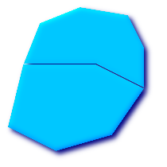 (n) | (o) |
(n)と(o)は妥当な |
GEOSライブラリに実装されている関数のほとんどは，ジオメトリがOpenGIS Simple Feature Specificationで定義されているように妥当であると仮定しています．ジオメトリが単純であるか，また妥当であるか，のチェックとしてST_IsSimple()とST_IsValid()が使えます．
-- 一般的に，線型のフィーチャーの妥当性のチェックは，
-- 常にTRUEを返すので意味がありません．
-- しかし，この例では，PostGISは，線型の環(開始点と終了点が同じ)が
-- 二つ以下のバーテックからなる場合はFALSEを返すように
-- OGCのIsValidの定義を拡張しています．
gisdb=# SELECT
ST_IsValid('LINESTRING(0 0, 1 1)'),
ST_IsValid('LINESTRING(0 0, 0 0)');
st_isvalid | st_isvalid
------------+-----------
t | fデフォルトでは，PostGISはジオメトリ入力に関するこの妥当性チェックを適用しません． 複雑なジオメトリの妥当性のチェックはCPU時間を多く必要とするためです． データソースが信用できない場合は，手動でこのチェックを強制するための制限を付けることができます．
ALTER TABLE mytable ADD CONSTRAINT geometry_valid_check CHECK (ST_IsValid(the_geom));
妥当な入力ジオメトリでPostGIS関数を呼んだのに "GEOS Intersection()がエラーを投げました!" や "JTS Intersection()がエラーを投げました!" というようなメッセージに遭遇したら，それはたぶん，PostGISまたは使用しているライブラリの中のエラーを発見しました． PostGIS開発者にコンタクトを取るべきです． PostGIS関数が妥当である入力ジオメトリから妥当でないジオメトリが返る場合も同じです．
| |
厳格にOGCジオメトリに準拠すると，Z値やM値を持てません． ST_IsValid()は高次を考慮に入れません． AddGeometryColumn()を実行するとジオメトリの次元をチェックする制約が加わるので，2をそこで指定することで十分です． |
代表的な空間述語(ST_Contains, ST_Crosses, ST_Intersects, ST_Touches, ...)は， 求める空間フィルタを十分に提供しきれないことがあります．
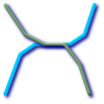
たとえば，道路網を表現する線型のデータセットがあるとします．ビジネスルールを無視しているかも知れませんが，点でクロスするだけでなく線上でクロスする道路区間を全て判別することがGIS解析者の仕事となるかも知れません．この場合，ST_Crossesでは重要な空間フィルタとして十分ではありません．線型のフィーチャーでは，点でクロスしている場合のみ
空間的にインタセクトしている(ST_Intersects)と判別された二つの区間の組み合わせについての実際のインタセクト(ST_Intersection)を取り，
インタセクトのST_GeometryTypeが' よりエレガントかつ速い解法が本当に望ましいでしょう． |
二つ目の[理論的な]例として，GIS解析者が全ての湖の境界に線でインタセクトする波止場やドックの全ての位置を特定しようとするとします．ここで，波止場の一端だけ陸にあるとします．言いかえると，波止場が湖の中にあるが完全に中に入りきってはいなくて，湖と線でインタセクトして，波止場の一方の端が完全に湖に入っていて，かつもう一方の端点が境界線上にあります．解析者は空間述語の組み合わせでフィーチャーの後で探索対象を引き出さなくてはならないかも知れません．
|
ここで，Dimensionally Extended 9 Intersection Modelまたは略してDE-9IMを見てみましょう．
OpenGIS Simple Features Implementation Specification for SQLによると「二つのジオメトリの比較の基本的なアプローチは，二つのジオメトリの内部，境界，外部のインタセクションの比較と，『インタセクション行列』の要素に基づく2ジオメトリの関係の分類です」．
- 境界(Boundary)
ジオメトリの境界はひとつ低い次元のジオメトリの集合です．0次元の
POINTの境界は空集合です．LINESTRINGの境界は二つの端点です．POLYGONの境界は外環と内環を形成する線です．- 内部(Interior)
ジオメトリの内部は境界を取り去った際に残るジオメトリです．
POINTの内部はPOINTそのものです．LINESTRINGの内部は二つの端点の間の実際の点です．POLYGONの内部はポリゴンの内側の範囲です．- 外部(Exterior)
ジオメトリの外部は，内部と境界を除いた全領域です．
ジオメトリaがあり，aの内部，境界，外部をそれぞれI(a), B(a), E(a)とします．数学的な行列表現は次のようになります．
| � | 内部 | 境界 | 外部 |
|---|---|---|---|
| 内部 | |||
| 境界 | |||
| 外部 |
ここでdim(a)はaの次元で，ST_Dimensionで規定されますが，{0,1,2,T,F,*}の値域を持ちます．
0=> ポイント1=> ライン2=> 領域T=>{0,1,2}F=> 空集合*=> 何でも良い
可視化すると，二つのオーバラップするポリゴンについては，次のようになります．
| � | ||||||||||||||||||
|
左から右，上から下に読むと，次元行列は'212101212'と表現されます．
一つ目の例である線上での2線のインタセクトは，関係行列で'1*1***1**'となります．
-- 線上でクロスする道路区間の判別 SELECT a.id FROM roads a, roads b WHERE a.id != b.id AND a.geom && b.geom AND ST_Relate(a.geom, b.geom, '1*1***1**');
二つ目の例である一部が湖の水涯線上にある波止場は，関係行列で'102101FF2'となります．
-- 一部が湖の水涯線上にある波止場の判別 SELECT a.lake_id, b.wharf_id FROM lakes a, wharfs b WHERE a.geom && b.geom AND ST_Relate(a.geom, b.geom, '102101FF2');
これ以上の情報ついては，次のページをご覧ください．
OpenGIS Simple Features Implementation Specification for SQL (version 1.1, section 2.1.13.2)
Dimensionally Extended Nine-Intersection Model (DE-9IM) by Christian Strobl
Encyclopedia of GIS By Hui Xiong
空間テーブルを作成したら，これでGISデータをデータベースにアップロードする準備ができたことになります．現在，PostGIS/PostgreSQLデータベースにデータをロードするには，SQLステートメントを使う，またはシェープファイルのローダ/ダンパを使う，二つの方法があります．
データをテキスト表現に変換できるなら，フォーマットされたSQLを使うのがデータをPostGISに入れる最も簡単な方法です．Oracleや他のSQLデータベースを使うように，SQL端末モニタにSQLの"INSERT"ステートメントで一杯になった大きなテキストファイルをパイプで送ることで，大量のデータをロードできます．
データアップロードファイル(たとえばroads.sqll)はこのようになるでしょう．
BEGIN;
INSERT INTO roads (road_id, roads_geom, road_name)
VALUES (1,ST_GeomFromText('LINESTRING(191232 243118,191108 243242)',-1),'Jeff Rd');
INSERT INTO roads (road_id, roads_geom, road_name)
VALUES (2,ST_GeomFromText('LINESTRING(189141 244158,189265 244817)',-1),'Geordie Rd');
INSERT INTO roads (road_id, roads_geom, road_name)
VALUES (3,ST_GeomFromText('LINESTRING(192783 228138,192612 229814)',-1),'Paul St');
INSERT INTO roads (road_id, roads_geom, road_name)
VALUES (4,ST_GeomFromText('LINESTRING(189412 252431,189631 259122)',-1),'Graeme Ave');
INSERT INTO roads (road_id, roads_geom, road_name)
VALUES (5,ST_GeomFromText('LINESTRING(190131 224148,190871 228134)',-1),'Phil Tce');
INSERT INTO roads (road_id, roads_geom, road_name)
VALUES (6,ST_GeomFromText('LINESTRING(198231 263418,198213 268322)',-1),'Dave Cres');
COMMIT;データファイルは，次に示す"psql"というSQL端末モニタを使って，簡単にPostgreSQLにパイプで送られます．
psql -d [database] -f roads.sql
shp2pgsqlデータローダは，ESRIシェープファイルをPostGIS/PostgreSQLデータベースに挿入するための適切なSQLに変換します．ローダには，次に示すコマンドラインフラグによって識別される，いくつかの操作モードがあります．
さらに，コマンドラインローダのほとんどのオプションに対応するshp2pgsql-guiグラフィカルユーザインタフェースがあります．一度限りでスクリプト化しないロードを行う場合やPostGISに不慣れな方にとって便利になるかもしれません．これはPgAdminIIIのプラグインとし構築することもできます．
- (c|a|d|p) 相互に排他的なオプション
- -c
新しいテーブルの作成とシェープファイルからのデータの読み込みを行います．これがデフォルトモードです．
- -a
シェープファイルからデータベーステーブルにデータを追加します．複数のファイルをロードするためにこのオプションを使う場合は，これらのファイルは同じ属性と同じデータ型を持つ必要があります．
- -d
シェープファイルにあるデータを持つ新しいテーブルを作成する前にデータベーステーブルを削除します．
- -p
テーブル作成のSQLコードを生成するだけで，実際のデータは追加しません．このモードは，テーブル作成とデータロードとを完全に分けたい場合に使用します．
- -?
ヘルプ画面を表示します．
- -D
出力データにPostgreSQLの"dump"書式を用います．このモードは -a, -c, -d が含まれます．デフォルトの"insert"によるSQL書式よりも，大変早くロードできます．大きなデータセットではこちらを使用して下さい．
- -s <SRID>
指定したSRIDでジオメトリデーブルの作成とデータの読み込みを行います．
- -k
識別子(カラム，スキーマおよび属性)の大文字小文字を保持します．シェープファイルの属性は全て大文字であることに注意して下さい．
- -i
全ての整数を標準の32ビット整数に強制します． DBFヘッダではそれが正当であったとしても，64ビットのbigintを生成しません．
- -I
ジオメトリカラムにGiSTインデクスを生成します．
- -w
古い版(0.x版)のPostGISのためにWKT書式を出力します．このオプションによって，座標変動が発生し，また，M値が削除されることに注意して下さい．
- -W <encoding>
入力データ(dbfファイル)の文字コードを指定します． dbfの全ての属性は指定された文字コードからUTF8に変換されます． SQL出力にSET CLIENT_ENCODING to UTF8コマンドが加えられ，バックエンドでUTF8からデータベースが内部で使用するように設定されている文字コードに再変換できます．
- -N <policy>
NULLジオメトリ操作方針(insert* = 挿入, skip = スキップ, abort = 強制終了)を選択します．
- -n
DBFファイルのみインポートします．対応するシェープファイルを持っていない場合， 自動的にこのモードになり，DBFファイルのみロードします． このフラグは，完全なシェープファイル群を持っていて，属性データだけが欲しくてジオメトリが欲しくない時のみ使用します．
- -G
ジオメトリ型のかわりに，ジオグラフィ型で，WGS84経度緯度(SRID=4326)を使用します(経度緯度データが必要です)．
ローダを使って入力ファイルを生成してデータをアップロードするセッションの例を次に示します．
# shp2pgsql -c -D -s 4269 -i -I shaperoads.shp myschema.roadstable > roads.sql # psql -d roadsdb -f roads.sql
変換とアップロードはUNIXのパイプを使うと一回で実行できます．
# shp2pgsql shaperoads.shp myschema.roadstable | psql -d roadsdb
データは，SQLまたはシェープファイルローダ/ダンパを使ってデータベースから抜き出すことができます． SQLに関する節において，空間テーブルでの比較とクエリを行うために用いることができる演算子のいくつかを議論します．
データベースからデータを引き出す最もストレートな手段は，次のように，SQLのSELECTクエリを使ってカラムを可読なテキストファイルとして出力することです．
db=# SELECT road_id, ST_AsText(road_geom) AS geom, road_name FROM roads; road_id | geom | road_name --------+-----------------------------------------+----------- 1 | LINESTRING(191232 243118,191108 243242) | Jeff Rd 2 | LINESTRING(189141 244158,189265 244817) | Geordie Rd 3 | LINESTRING(192783 228138,192612 229814) | Paul St 4 | LINESTRING(189412 252431,189631 259122) | Graeme Ave 5 | LINESTRING(190131 224148,190871 228134) | Phil Tce 6 | LINESTRING(198231 263418,198213 268322) | Dave Cres 7 | LINESTRING(218421 284121,224123 241231) | Chris Way (6 rows)
しかし，返ってくる結果の数を削るために，なんらかの制限をかけることが重要となるときがあるでしょう．属性ベースの制限の場合，非空間テーブルで使う通常の文法と同じSQLを使うだけです．空間ベースの制限の場合，次のオペレータが使用可能であり，便利です．
- &&
この演算子で，ひとつのジオメトリのバウンディングボックスが他のバウンディングボックスとインタセクトするかを問い合わせることができます．
- ~=
この演算子で，二つのジオメトリが幾何的に同一であるかを見ることができます．たとえば，'POLYGON((0 0,1 1,1 0,0 0))' は 'POLYGON((0 0,1 1,1 0,0 0))' と同じかを見ることができます (これは同じとなります)．
- =
この演算子は他より若干素朴なもので，二つのジオメトリのバウンディングボックスが同じかを見るだけです．
次に，これらの演算子をクエリで使うことができます． SQLコマンドラインからジオメトリとボックスの特定を行うときは， "GeomFromText()"関数で，明示的に文字列表現をジオメトリに変換しなければならないことに注意して下さい．たとえば，次のようになります．
SELECT road_id, road_name
FROM roads
WHERE roads_geom ~= ST_GeomFromText('LINESTRING(191232 243118,191108 243242)',-1);上のクエリは"ROADS_GEOM"テーブルから，その値と等価である単一のレコードを返します．
"&&"演算子を使うとき，比較フィーチャーのBOX3DかGEOMETRYかを指定することができます．ただし，GEOMETRYを指定すると，それのバウンディングボックスが比較に使われます．
SELECT road_id, road_name
FROM roads
WHERE roads_geom && ST_GeomFromText('POLYGON((...))',-1);上のクエリでは，比較するためにポリゴンのバウンディングボックスを用いています．
最も一般的な空間クエリは「フレームベース」のクエリでしょう．これは，表示するためのデータの価値のある「マップフレーム」を取得するために，データブラウザやウェブマッパのようなクライアントソフトウェアに使われます．このフレームで"BOX3D"オブジェクトを使う場合は，次のようなクエリになります．
SELECT ST_AsText(roads_geom) AS geom
FROM roads
WHERE
roads_geom && SetSRID('BOX3D(191232 243117,191232 243119)'::box3d,-1);ここで，BOX3Dの投影を指定していることに注意して下さい． SRIDを-1に設定しているのは，SRIDを指定しないということを示しています．
pgsql2shpテーブルダンパは，データベースに直接接続して，テーブル(あるいはクエリによって定義されたもの)をシェープファイルに変換するものです．基本的な文法は次の通りです．
pgsql2shp [<オプション>] <データベース名> [<スキーマ名>.]<テーブル名>
pgsql2shp [<オプション>] <データベース名> <クエリ>
コマンドラインオプションは次の通りです．
- -f <ファイル名>
特定のファイル名に出力を書きこみます．
- -h <ホスト名>
接続先データベースのホスト名．
- -p <ポート>
接続先データベースのポート．
- -P <パスワード>
データベースに接続するためのパスワード．
- -u <ユーザ名>
データベースに接続する際のユーザ名．
- -g <ジオメトリカラム名>
複数のジオメトリカラムを持つテーブルの場合の，シェープファイルの出力に使用するジオメトリカラム．
- -b
バイナリカーソルを使います．これは，実行時間を短くしますが，テーブルの非ジオメトリ属性がテキストへのキャストが無い場合には，動作しません．
- -r
Rawモード．
gidフィールドを落としたり，カラム名をエスケープしてはいけません．- -d
後方互換: 古い(1.0.0以前)のPostGISデータベースからダンプする際に3次元のシェープファイルを出力します (デフォルトでは2次元になります)． PostGIS-1.0.0+から始めている場合は次元は完全に反映されます．
インデクスは大きなデータセットを持つ空間データベースの利用を可能にするものです．インデクスなしでは，フィーチャーの検索でデータベースの全レコードを「シーケンシャルスキャン」する必要があります．インデクスをつけることで，データを検索木に組織化して，特定のレコードを発見するための検索をより早くすることができます． PostgreSQLは，B-Tree, R-Tree, GiST の三種類のインデクスをデフォルトでサポートしています．
B-Treeは，数字，文字，日付といった，ひとつの軸に沿ってソートできるデータに使用します． GISデータは合理的にひとつの軸に沿ったソートはできません ((0,0)と(0,1)と(1,0)で大きいのはどれでしょう?)ので，B-Treeインデックスは，ここでは使えません．
R-Treeはデータを長方形に分割して，さらにその長方形を小さい長方形に分割していったものです．R-Treeはいくつかの空間データベースでGISデータのインデクスに使われますが，PostgreSQLのR-Tree実装は，GiST実装ほどにロバストではありません．
GiST(Generalized Search Trees)インデクスはデータを「一方へのもの」(訳注: 「左側にあるもの」「上側にあるもの」など)，「オーバラップするもの」，「中にあるもの」に分割して， GISデータを含む幅広いデータ型で使えるようにしたものです． PostGISではGISデータにインデクスを付けるためにGiSTの上でR-Treeインデクス実装を使用しています．
GiSTは「汎用的な検索木(Generalized Search Tree)」の意味で，インデックスの一般化された形式です．GISインデクスに加えて，GiSTは通常のB-Treeインデクスに従わない全ての種類の不規則なデータ構造(整数配列, スペクトラルデータ など)の検索速度を向上させるために使います．
ひとたびGISデータテーブルが数千行を超えたら，空間検索の速度向上のためインデクスを構築したくなるでしょう (これは属性検索でない場合です．属性でしたら通常のインデクスを属性フィールドに追加します)．
GiSTインデクスを「ジオメトリ」カラムに追加するための文は次の通りです．
CREATE INDEX [インデクス名] ON [テーブル名] USING GIST ( [ジオメトリカラム名] );
空間インデクスの構築は，計算量を集中させて行われます．100万行のテーブルで，300MHzのSolaris機ではGiSTインデクスの構築に概ね1時間かかりました．インデクスを構築したあとは，クエリプランの最適化に使うため，次のようにPostgreSQLにテーブル統計情報の収集をさせることが重要です．
VACUUM ANALYZE [テーブル名] [カラム名]; -- 次のクエリはPostgreSQL 7.4以前でのみ必要です SELECT UPDATE_GEOMETRY_STATS([table_name], [column_name]);
GiSTインデクスはPostgreSQLのR-Treeインデクスより二つの利点を持っています．まず，GiSTインデクスは「NULLセーフ」，すなわちnull値を含むインデクスカラムで利用できることです．次に，GiSTインデクスはGISオブジェクトがPostgreSQLで8Kのページサイズを超えるサイズを扱う際に重要な「不可逆」の概念を持っていることです．不可逆にすることによって，PostgreSQLは，インデクスにおけるオブジェクトの「重要な」部分，GISオブジェクトの場合にはバウンディングボックスになりますが，これのみを納めることができます． R-Treeインデクスで8Kを超えるGISオブジェクトのインデクスを構築しようとすると，失敗します．
通常，インデクスは見えないところでデータアクセスの速度向上を行います．すなわち，ひとたびインデクスが構築されたら，クエリプランナは透過的に，クエリプランの速度を向上させるためにインデクス情報を使うべき時を判断します．残念なことに，PostgreSQLクエリプランナは，GiSTインデクスの使用について十分に最適化できず，時々，検索で空間インデクスを使用すべきなのに，テーブルを順に走査することがあります．
空間インデクスが使用されていない(または属性インデクスがその問題のために使用されていない)場合，次の二つのことができます．
まず，クエリプランナにインデクス使用まわりの判断に利用するためのより良い情報を提供するために，値の数量と分散に関する統計情報が収集されたかを確認してください． PostgreSQL 7.4以前では，update_geometry_stats([テーブル名, カラム名])(分散計算)とVACUUM ANALYZE [テーブル名] [カラム名](値の数量の計算)とを実行します． PostgreSQL 8.0については， VACUUM ANALYZEを実行することで同じ動作になります．常に定期的なデータベースへのvacuumを実行すべきです．多くのPostgreSQLのデータベースエージェントは，閑散時のcronジョブとして定期的にVACUUMを実行します．
vacuumが働かないなら，SET ENABLE_SEQSCAN=OFFコマンドで，プランナにインデクス情報を強制的に使わせることができます．このコマンドは控え目に実行すべきで，かつ，空間インデクスがあるクエリ上でのみ使うべきです．一般的に言うと，通常のB-Treeインデクスを使うべき時に関してあなたが知っていることよりも，プランナはより良く知っています．クエリを実行したら，
ENABLE_SEQSCAN設定を戻して，他のクエリでは通常通りプランナを使用することを考えるべきです．version 0.6では，
ENABLE_SEQSCANでプランナにインデクスを使わせることは重要ではありません．もし，順に走査する際のコストとインデクスを使う際のコストとを比較してプランナが間違っていることに気付いたら，postgresql.conf でrandom_page_costの値を減らしてみるか，"SET random_page_cost=#" を使ってみてください．このパラメータのデフォルト値は4ですが，それを1か2にしてみて下さい．値を減らすことで，プランナがよりインデクススキャンを行う傾向になります．
空間データベース機能のレゾンデートルは，通常はデスクトップGISに求める機能を，データベース内部のクエリで実現してすることです． PostGISを効果的に使用するには，どの空間機能が有効かを知り，また，良好なパフォーマンスを提供する所に適切にインデクスがあることが保証されていることが求められます．
クエリを作成するとき，&&のようなバウンディングボックスを基準とした演算子によってのみGiST空間インデクスの利点が出てくることだけは覚えておくことが重要です． distance()のような関数では演算の最適化を行うためにインデクスを使うことができません．たとえば，次のクエリでは，大きなテーブルでは本当に遅くなります．
SELECT the_geom
FROM geom_table
WHERE ST_Distance(the_geom, ST_GeomFromText('POINT(100000 200000)', -1)) < 100
このクエリは，geom_tableにおける (100000, 200000) の点から距離が100単位以内にある全てのジオメトリを選択します．これは，テーブル内にあるそれぞれの点と指定した点との距離を計算する，すなわち，それぞれの行でひとつのST_Distance()計算を行うため，遅くなるのです．これは，&&演算子を使うと，求められる距離計算の量を減らすことで回避できます．次のようにします．
SELECT the_geom
FROM geom_table
WHERE the_geom && 'BOX3D(90900 190900, 100100 200100)'::box3d
AND
ST_Distance(the_geom, ST_GeomFromText('POINT(100000 200000)', -1)) < 100
このクエリは，同じジオメトリを選択しますが，より効果的な方法で行われます．the_geomにGiSTインデクスがあると仮定すると，クエリプランナはdistance()関数の結果を計算する前にインデクスを使って行を減らせると認識します． &&演算子で使われているBOX3Dジオメトリは，原点を中心とした一辺 200単位の正方形です． これは「クエリボックス」です．&&演算子は 結果セットを「クエリボックス」にオーバラップするバウンディングボックスを持つジオメトリだけに素早く減らすためにインデクスを使います．「クエリボックス」がジオメトリテーブル全体の範囲より十分に小さいと仮定すると，行われなければならない距離計算の量は劇的に減少します．
| ふるまいの変更 |
|---|---|
PostGIS 1.3.0では，ST_DisjointとST_Relateの注目すべき例外がありますが，ほとんどのジオメトリ関係関数は暗黙的なバウンディングボックスオーバラップ演算子を含んでいます． |
本節の例では，線形の道，ポリゴンの自治体境界，の二つのテーブルを使います．テーブルの定義は，bc_roadsについては次の通りです．
Column | Type | Description ------------+-------------------+------------------- gid | integer | Unique ID name | character varying | Road Name the_geom | geometry | Location Geometry (Linestring)
bc_municipalityの定義は次の通りです．
Column | Type | Description -----------+-------------------+------------------- gid | integer | Unique ID code | integer | Unique ID name | character varying | City / Town Name the_geom | geometry | Location Geometry (Polygon)
- 4.7.2.1. 道路の総延長はkm表記でいくらになるでしょう?
- 4.7.2.2. プリンスジョージ市の大きさはha表記でいくらになるでしょう?
- 4.7.2.3. 県内で最も大きな面積を持つ自治体はどこでしょう?
- 4.7.2.4. 各自治体内に含まれる道路の総延長はいくらでしょう?
- 4.7.2.5. プリンスジョージ市内の全ての道路からなるテーブルを作る
- 4.7.2.6. ビクトリア州の「ダグラス通り」の長さはkm表記でいくらになるでしょう?
- 4.7.2.7. 全体の中で最も大きい自治体ポリゴンはどれでしょう?
目次
MapServerはOpenGIS Web Mapping Server仕様を満たすウェブマッピングサーバです．
MapServerのウェブサイトは http://mapserver.org です．
OpenGIS Web Map Specivicationは http://www.opengeospatial.org/standards/wms にあります．
MapServerでPostGISを使うには，MapServerのコンフィギュレーション方法について必要ですが，この文書の範囲外です．この節では，PostGIS特有の問題とコンフィギュレーション詳細をカバーします．
PostGISをMapServerで使うには，次のことが必要です．
PostGIS 0.6以上
MapServer 3.5以上
MapServerは，他のPostgreSQLクライアントのように，libpqインタフェースを使って，PostGIS/PostgreSQLデータにアクセスします．よってMapServerはPostGISサーバにアクセスするネットワークを持つ計算機にインストールでき，PostGISをデータソースとして使用することができます．システム間の接続は速いほど良いです．
"--with-postgis"と好きなconfigureオプションを付けてMpaserverのコンパイルとインストールを行います．
Mapserverのmapファイルの中に，PostGISレイヤを追加します．たとえば次のようになります．
LAYER CONNECTIONTYPE postgis NAME "widehighways" # リモートの空間電他ベースに接続 CONNECTION "user=dbuser dbname=gisdatabase host=bigserver" PROCESSING "CLOSE_CONNECTION=DEFER" # 'road'テーブルの'geom'カラムから線を取得 DATA "geom from roads using srid=4326 using unique gid" STATUS ON TYPE LINE # 範囲内の線のうち広い高速道路のみ描画 FILTER "type = 'highway' and numlanes >= 4" CLASS # スーパー高速道路は，明るくし，2ピクセル幅にする EXPRESSION ([numlanes] >= 6) STYLE COLOR 255 22 22 WIDTH 2 END END CLASS # 残りの道路は，暗くし，1ピクセル幅にする EXPRESSION ([numlanes] < 6) STYLE COLOR 205 92 82 END END END上の例におけるPostGIS特有のディレクティブは次の通りです．
- CONNECTIONTYPE
PostGISレイヤにするには，ここは常に"postgis"になります．
- CONNECTION
データベース接続は「接続文字列」によって制御されます．接続文字列は，次に示すような標準的なキーと値からなります(<>内はデフォルト値)．
user=<username> password=<password> dbname=<username> hostname=<server> port=<5432>
空の接続文字列も妥当とされますし，あらゆるキーと値のペアは省略できます．接続するためには一般的にはdbnameとusernameとが最少で与えるものとなります．
- DATA
このパラメータの形式は"<geocolumn> from <tablename> using srid=<srid> using unique <primary key>"です．ここで，カラムは地図に描画する空間カラムで，SRIDは，カラムが使用するSRIDで，主キーはテーブルの主キー(または他の，インデクスを持つユニークな値のカラム)です．
"using srid"と"using unique"節は省略可能です． MapServerは可能なら自動的に正しい値を決定しますが，マップを描画するたびにいくつかの追加クエリを実行するコストがかかります．
- PROCESSING
接続を閉じずに，複数のレイヤで再利用する場合にCLOSE_CONNECTION=DEFERを設定します．これで速度が改善します．より詳しい説明については MapServer PostGIS Performance Tips を参照して下さい．
- FILTER
フィルタは，妥当なSQL文字列でなければなりません．普通はSQLクエリ内で"WHERE"キーワードに続く論理式に沿います．たとえば，6レーン以上の道路のみをレンダリングするには，フィルタを "num_lanes >= 6" とします．
空間データベースにおいては，空間(GiST)インデクスを，マップに描かれるレイヤー全てに構築していることを保証して下さい．
CREATE INDEX [インデクス名] ON [テーブル名] USING GIST ( [ジオメトリカラム名] );
MapServerを使用するレイヤのクエリ実行するなら，"using unique"節もDATAステートメントに追加しなければなりません．
MapServerでは，クエリ実行の際には，それぞれの空間レコードを識別するためのユニークなIDが必要です．MapServerのPostGISモジュールは，ユニークなIDを提供するために，ユーザ指定のユニークな値を使います．テーブルの主キーを使うのが最も良い方法です．
- 5.1.2.1. EXPRESSIONをmapファイルで使う時に，値がテーブルにあるのを確認しているのに条件がtrueになりません．
- 5.1.2.2. シェープファイルで使っているFILTERが，同じデータを持つPostGISテーブルでは動作しません．
- 5.1.2.3. PostGISレイヤの描画がシェープファイルより遅くなりますが，これが普通なのでしょうか?
- 5.1.2.4. PostGISレイヤはちゃんと描けましたが，クエリが本当に遅いです．何が問題なのですか?
- 5.1.2.5. ジオグラフィカラム(PostGIS 1.5で機能追加)をMapServerのレイヤのソースとして使用できますか?
USING疑似SQL節を使ってMapServerがより複雑なクエリの結果を理解できるようにするための情報を追加します．より詳しく言うと，ビューまたは副問い合わせが元テーブル(DATA定義で"FROM"の右にあるもの)として使われる時， MapServerが自動的に一意な識別子がそれぞれの行にあるか，また，SRIDがテーブルにあるかを判別するのは困難です． USING節によって，MapServerがこれらの情報を得ることができます．例を次に挙げます．
DATA "the_geom FROM (
SELECT
table1.the_geom AS the_geom,
table1.oid AS oid,
table2.data AS data
FROM table1
LEFT JOIN table2
ON table1.id = table2.id
) AS new_table USING UNIQUE gid USING SRID=-1"- USING UNIQUE <uniqueid>
Mapserverは，マップクエリを実行する際，行識別のために，それぞれの行に一意な識別子を求めます．通常ならシステムテーブルから主キーを識別しますが，ビューや副問い合わせでは，ユニークなカラムを自動的に知ることができません． MapServerのクエリ機能を使いたいなら，ユニークなカラムをビューまたは副問い合わせに追加する必要があり，そのカラムに
USING UNIQUE宣言を付ける必要があります．たとえば，この目的のための主キー値のテーブルでのカラム名や，結果セットでユニーク性が保障されたカラムを明示的にSELECTに入れることができます．「マップクエリ」はップ上でクリックして，その場所におけるフィーチャーに関する情報を問い合わせる動作です．「マップクエリ」と
DATA定義におけるSQLクエリと混同しないで下さい．- USING SRID=<srid>
PostGISは， MapServerに正しいデータを返すために，ジオメトリがどの空間参照系を使っているかを知る必要があります．通常は，この情報はPostGISデータベースの「geometry_columns」テーブルから得ることができます．しかし，副問い合わせやビューのような一時テーブルでは，この方法は不可能です．そこで，
USING SRID=オプションを使って，正しいSRIDがDATA定義で使われるように指定します．
簡単な例から始めて，ステップアップしていきましょう．次のMapServerレイヤ定義を考えて下さい．
LAYER
CONNECTIONTYPE postgis
NAME "roads"
CONNECTION "user=theuser password=thepass dbname=thedb host=theserver"
DATA "the_geom from roads"
STATUS ON
TYPE LINE
CLASS
STYLE
COLOR 0 0 0
END
END
ENDこのレイヤは"roads"テーブルにある道路ジオメトリの全部を黒線で表示するものです．
では，少なくとも1:100000にズームするまでは高速道路だけを表示したい，と言ってみましょう．次の二つのレイヤで，その効果が実現できます．
LAYER
CONNECTIONTYPE postgis
CONNECTION "user=theuser password=thepass dbname=thedb host=theserver"
PROCESSING "CLOSE_CONNECTION=DEFER"
DATA "the_geom from roads"
MINSCALE 100000
STATUS ON
TYPE LINE
FILTER "road_type = 'highway'"
CLASS
COLOR 0 0 0
END
END
LAYER
CONNECTIONTYPE postgis
CONNECTION "user=theuser password=thepass dbname=thedb host=theserver"
PROCESSING "CLOSE_CONNECTION=DEFER"
DATA "the_geom from roads"
MAXSCALE 100000
STATUS ON
TYPE LINE
CLASSITEM road_type
CLASS
EXPRESSION "highway"
STYLE
WIDTH 2
COLOR 255 0 0
END
END
CLASS
STYLE
COLOR 0 0 0
END
END
END
一つ目のレイヤはスケールが1:100000以上であるときに使われ，道路タイプが"highway"である道路のみ黒線で表示されます．FILTERオプションによって，道路タイプが"highway"の場合のみ表示することになります．
二つ目のレイヤはスケールが1:100000未満である時に使われ，"highway"は赤い二重細線で表示され，他の道路は黒線で表示されます．
さて，Mapserverの機能を使うだけで，二つのおもしろいことを実行しました．しかし，DATAのSQLステートメントは，単純なままです．道路名が(どういう理由かは知りませんが)他のテーブルに収められていて，それのデータを取得するためにテーブルを接続して，道路のラベルを取る必要がある，とします．
LAYER
CONNECTIONTYPE postgis
CONNECTION "user=theuser password=thepass dbname=thedb host=theserver"
DATA "the_geom FROM (SELECT roads.oid AS oid, roads.the_geom AS the_geom,
road_names.name as name FROM roads LEFT JOIN road_names ON
roads.road_name_id = road_names.road_name_id)
AS named_roads USING UNIQUE oid USING SRID=-1"
MAXSCALE 20000
STATUS ON
TYPE ANNOTATION
LABELITEM name
CLASS
LABEL
ANGLE auto
SIZE 8
COLOR 0 192 0
TYPE truetype
FONT arial
END
END
END
このANNOTAIONレイヤでは，縮尺が1:20000以下のときに，全ての道路に緑色のラベルを表示します．また，この例は，DATA定義で，SQLのJOINを使用する方法も示しています．
Javaクライアントは，直接的にテキスト表現として，またはPostGISにバンドルされているJDBC拡張オブジェクトを使用して，PostgreSQLデータベース内にある，PostGISの"geometry"オブジェクトにアクセスできます．拡張オブジェクトを使うためには，"postgis.jar"ファイルを，JDBCドライバパッケージの"postgresql.jar"とともに， CLASSPATHに置く必要があります．
import java.sql.*;
import java.util.*;
import java.lang.*;
import org.postgis.*;
public class JavaGIS {
public static void main(String[] args) {
java.sql.Connection conn;
try {
/*
* JDBCドライバをロードして接続を確立します
*/
Class.forName("org.postgresql.Driver");
String url = "jdbc:postgresql://localhost:5432/database";
conn = DriverManager.getConnection(url, "postgres", "");
/*
* ジオメトリ型を接続に追加します
* ご注意 : addDateType()を呼ぶ前に
* 接続をpgsql特有の接続実装にキャストしなければなりません
*/
((org.postgresql.Connection)conn).addDataType("geometry","org.postgis.PGgeometry")
;
((org.postgresql.Connection)conn).addDataType("box3d","org.postgis.PGbox3d");
/*
* Create a statement and execute a select query.
*/
Statement s = conn.createStatement();
ResultSet r = s.executeQuery("select ST_AsText(geom) as geom,id from geomtable");
while( r.next() ) {
/*
* Retrieve the geometry as an object then cast it to the geometry type.
* Print things out.
*/
PGgeometry geom = (PGgeometry)r.getObject(1);
int id = r.getInt(2);
System.out.println("Row " + id + ":");
System.out.println(geom.toString());
}
s.close();
conn.close();
}
catch( Exception e ) {
e.printStackTrace();
}
}
}"PGeometry"オブジェクトは， Point, LineString, Polygon, MultiPoint, MultiLineString, MultiPolygon の各型に依存する，特定のトポロジカルジオメトリオブジェクト("Geometory"抽象クラスの子クラス)を持つラッパオブジェクトです．
PGgeometry geom = (PGgeometry)r.getObject(1);
if( geom.getType() = Geometry.POLYGON ) {
Polygon pl = (Polygon)geom.getGeometry();
for( int r = 0; r < pl.numRings(); r++) {
LinearRing rng = pl.getRing(r);
System.out.println("Ring: " + r);
for( int p = 0; p < rng.numPoints(); p++ ) {
Point pt = rng.getPoint(p);
System.out.println("Point: " + p);
System.out.println(pt.toString());
}
}
}幾何オブジェクトのさまざまなデータアクセサ関数に関する参照情報については，拡張オブジェクトのJavaDocをご覧下さい．
目次
現版のPostgreSQL(8.0を含む)では，TOASTテーブルに従うクエリオプティマイザの弱さに苦しみます． TOASTテーブルは，(長いテキスト，イメージ，多数の頂点を持つ複合ジオメトリといった)通常のデータページに適合しない，(データサイズという意味では)巨大な値を納めるための「拡張部屋」の一種です．詳細情報は http://www.postgresql.org/docs/8.0/static/storage-toast.html をご覧ください．
高解像度で全てのヨーロッパの国の境界を含むテーブルのような)大きなジオメトリがあるうえ，行がそう多くないテーブルを持つようになると，この問題が出てきます．テーブル自体は小さいのですが，多くのTOASTスペースを使います．例として，テーブル自体は概ね80行で3データページしか使わなくてもTOASTテーブルで8225ページを使うとします．
ここで，ジオメトリ演算子の&&を使って，ほとんどマッチしないようなバウンダリボックスを検索するクエリを出してみます．クエリオプティマイザにはテーブルは3ページ80行しかないように見えます．オプティマイザは，小さなテーブルを順に走査する方がインデクスを使うよりも早いと見積もります．そして，GiSTインデクスは無視すると決めます．通常なら，この見積もりは正しいです．しかし，この場合は &&演算子が全てのジオメトリをディスクから呼び出しでバウンディングボックスと比較しなければならなくなり，ゆえに，全てのTOASTページもまた呼び出す必要があります．
このバグに苦しむかどうかを見るには，PostgreSQLの"EXPLAIN ANALYZE"コマンドを使います．詳しい情報と技術に関する詳細については，postgres performance mailing list のスレッド ( http://archives.postgresql.org/pgsql-performance/2005-02/msg00030.php ) をご覧下さい．
PostgreSQLコミュニティでは，TOASTを意識したクエリ見積もりを作ることで，この問題を解決しようとしています．今のところは，二つの応急処置があります．
一つ目は，クエリプランナにインデクスの使用を強制することです．クエリを発行する前に"SET enable_seqscan TO off;"をサーバに送信します．これは基本的にクエリプランナに対して可能な限り順に走査することを避けるよう強制します．そのためGiSTインデクスを通常使うようになります．しかし，このフラグは接続するたびに設定しなければならず，他のケースにおいてはクエリプランナに誤った見積もりをさせることになるので， "SET enable_seqscan TO on;"をクエリの後に送信すべきです．
二つ目は，順に走査することをクエリプランナが考える程度に早くすることです．これは，バウンダリボックスの「キャッシュ」を行う追加カラムを作成し，このカラムにマッチさせるようにすることで達成することができます．ここでの例では次のようになります．
SELECT AddGeometryColumn('myschema','mytable','bbox','4326','GEOMETRY','2');
UPDATE mytable SET bbox = ST_Envelope(ST_Force_2d(the_geom));そして，次のように，&&演算子をgeom_columnに対して行っていたものをbboxに変更します．
SELECT geom_column
FROM mytable
WHERE bbox && ST_SetSRID('BOX3D(0 0,1 1)'::box3d,4326);もちろん，mytableの行を変更または追加したら， bboxを「同期」するようにしなければなりません．最もすっきりした方法はトリガです．アプリケーションを変更してbboxカラムの現状を保持するか，テーブル更新後にいつもUPDATEクエリを実行するかでも対応できます．
読み込むことがほとんどで，かつほとんどのクエリでひとつのインデクスを使うようなテーブルのために， PostgreSQLはCLUSTERコマンドを提供しています．このコマンドは，全てのデータ行を，インデクス基準にあわせて物理的に再整理するので，二つの性能の利点を生みます．ひとつは，インデクス範囲の走査のために，データテーブルのシーク回数が劇的に減少することです．ふたつめは，いくつかの小さなインデクス間隔に集中する場合には，データ行が分布するデータページがより少なくなるので，より効率的なキャッシュを持つことです． (この点で，PostgreSQLマニュアルのCLUSTERコマンドのドキュメントを読むように仕向けられていると感じて下さい．)
しかし，GiSTインデクスは単純にNULL値を無視するため現在のところPostGISのGiSTインデクスのクラスタリングはできず，次のようなエラーメッセージを得ます．
lwgeom=# CLUSTER my_geom_index ON my_table; ERROR: cannot cluster when index access method does not handle null values (エラー: インデクスアクセスメソッドがNULL値を扱わない場合クラスタ化できません) HINT: You may be able to work around this by marking column "the_geom" NOT NULL. (ヒント: 列"the_geom"をNOT NULLとすることで，これを回避できるかもしれません)
ヒントメッセージにある通り，テーブルに"not null"制限を追加することで，この欠陥にとりあえず対応できます．例を示します．
lwgeom=# ALTER TABLE my_table ALTER COLUMN the_geom SET not null; ALTER TABLE
もちろん，ジオメトリカラムで実際にNULL値が必要な場合，この対応はできません．さらには，制限を追加するには上の方法を使わなければならず， "ALTER TABLE blubb ADD CHECK (geometry is not null);"のようなCHECK制限は使えません．
ときどき，テーブルで3次元，4次元のデータを持つのに，常にOpenGIS準拠のasText()またはasBinary()関数を使ってアクセスして 2次元ジオメトリを出力させるようなことが起きます．内部でforce_2d()関数を呼んでいるために発生しますが，これは，大きなジオメトリでは重大なオーバヘッドを誘引することになります．このオーバヘッドを回避するには，一度追加された次元を前もって落とし，かつこれを永続化するのが適当かも知れません．
UPDATE mytable SET the_geom = ST_Force_2d(the_geom); VACUUM FULL ANALYZE mytable;
AddGeometryColumn() を使ってジオメトリカラムを追加した場合，ジオメトリの次元に関する制限があることに注意してください．この制限を迂回するには，制限の削除が必要になります． geometry_columnsテーブル内のエントリを更新して，その後で制限を再作成することを忘れないで下さい．
大きなテーブルの場合， WHERE節，およびプライマリキー若しくは他の適切な基準によってテーブルの一部へのUPDATEを制限させて，UPDATEの実行の間に単に"VACUUM;"と実行することで， UPDATEをより小さい塊に分割するのが賢いやり方かもしれません．これにより，テンポラリディスクスペースが劇的に減少します．さらに，次元混合のジオメトリを持つ場合， "WHERE dimension(the_geom)>2"でUPDATEを制限することで， 2次元で書かれているジオメトリの再書き込みをスキップさせることができます．
この技法は，FOSS4G 2007カンファレンスでのKevin Neufeldのプレゼンテーション「PostGISパワーユーザのための技法(Tips for the PostGIS Power User)」から得たものです． PostGISの使用(たとえば，「静的データと複雑な解析」対「よくアップデートされるデータと多数のユーザ」など)に依存して，これらの変更によって，クエリがはっきり速度向上するようになります．
詳細情報(およびよりよい書式)については，オリジナルのプレゼンテーションがhttp://2007.foss4g.org/presentations/view.php?abstract_id=117にあります．
これらの設定はpostgresql.conf内にあります．
checkpoint_segment_size (この設定は新しいバージョンのPostgreSQLでは非推奨)は，checkpoint や WAL ではじまる多数の設定に入れ替えられました．
WALファイル数 = 16MBごと; デフォルトは 3
書き込みが多い等大きなデータベース負荷がある場合は，データベースごとに少なくとも10か30を設定します．他の記事としてGreg Smith: Checkpoint and Background writerがあります．
おそらくxlogを別のディスクデバイスに格納して下さい．
デフォルト: off (PostgreSQL 8.4より前，8.4以上はpartitionに設定)
これは一般的にテーブルパーティショニングに使われます．PostgreSQL 8.4より前の場合は，"on"を設置して，クエリプランナに対して，求めるような最適化をさせます．8.4の場合は"partition"がデフォルトです．継承された階層の中にあり，プランナに他のペナルティを与えない場合は，プランナに制限を考慮したテーブル解析を強制します．PostgreSQL 8.4以上では，こちらが理想的になります．
デフォルト: 32MB以下
使用可能なRAMの1/3から3/4程度を設定します．
work_mem (ソート処理や複雑なクエリに使われるメモリ)
デフォルト: 1MB
大きなデータベース，複雑なクエリ，RAMが多い場合には上げます．
同時使用が多数，またはRAMが少ない場合には下げます．
多数のRAMを持ち，開発者が少数なら，次のようにします．
SET work_mem TO 1200000;
maintenance_work_mem (VACUUM, CREATE INDEX 等で使用)
デフォルト: 16MB
通常では低すぎます - メモリのスワップの間，入出力を縛り，オブジェクトをロックします．
32MBから256MBが推奨です． 接続ユーザ数に依存します． 多数のRAMを持ち開発者が少ない場合は次のようにします．
SET maintainence_work_mem TO 1200000;
目次
ここで示す関数は，PostGISのユーザが必要とすると思われる関数です．この他に，一般的なユーザが使わない，PostGISオブジェクトに対して求められるサポート関数があります．
| |
PostGISは，既存の名前付け方針からSQL-MM中心の方針への切り替えを開始しています．結果として，ユーザが知っていて愛用している関数の多くが標準空間型(ST)プレフィクスを使うように名前変更されました．以前の関数はまだ有効ですが，更新された等価な関数があるものについては，この文書の一覧から外しています．これらの関数は，将来のリリースでは非推奨になりますので，*使わないでください*． |
概要
本節では，PostGISによってインストールされたPostgreSQLデータ型を示します． 特にユーザ定義関数をデザインする際に大変重要なキャストのふるまいを記載しています．
ある型が他の型に強制されることをキャストといいます． PostgreSQLは，ほとんどのデータベースと異なり，カスタム型のキャストとキャストのために使われる関数のためのキャストに関するふるまいを定義することができます．キャストは自動的に指定することができます．この場合は，otherfootypeでしか動作しない関数にmyfooを送った場合で，自動キャストがそこにある場合には，CAST(myfoo AS otherfootype)やmyfoo::otherfootypeというものを必要としません．
自動キャストのふるまいに頼る危険性は，関数をオーバロードするときに出てきます．たとえば，box2dを取るものとbox3dとをとるがジオメトリをとらないとします．どちらの関数とも，ジオメトリは両方に自動キャストするので，ジオメトリを使って良いです．-- しかし，あいまいな関数エラーで終わります．PostgreSQLに強制的に選択させるために，CAST(mygeom As box3d)またはmygeom::box3dを実行します．
| |
| 少なくともPostgreSQL 8.3では，全て文字列にキャストできます(おそらく，不思議な未知の型のためです)．オブジェクトを文字列にキャストするために表現するキャストの定義は必要ありません． |
- box2d — xmin, ymin, xmax, ymaxで作られるボックス．しばしばジオメトリを囲む二次元のボックスを返すために使われます．
- box3d — xmin, ymin, zmin, xmax, ymax, zmaxで作られるボックス．しばしばジオメトリやジオメトリのコレクションの三次元範囲を返します．
- box3d_extent — xmin, ymin, zmin, xmax, ymax, zmaxで作られるボックス．しばしばジオメトリの範囲を返すために使われます．
- geometry — 平面空間データ型
- geometry_dump — geom(ジオメトリオブジェクトを保持)とpath[](ダンプされたオブジェクト内のジオメトリの位置を保持する1次元配列)の，二つのフィールドを持つ空間データ型．
- geography — 回転楕円体空間データ型
名前
geometry — 平面空間データ型
名前
geometry_dump — geom(ジオメトリオブジェクトを保持)とpath[](ダンプされたオブジェクト内のジオメトリの位置を保持する1次元配列)の，二つのフィールドを持つ空間データ型．
- AddGeometryColumn — ジオメトリカラムを既存の属性テーブルに追加します．
- DropGeometryColumn — ジオメトリカラムを空間テーブルから除去します．
- DropGeometryTable — テーブルとgeometry_columnsの当該テーブルへの参照を削除します．
- PostGIS_Full_Version — 完全なPostGISのバージョン情報とコンフィギュレーション情報を報告します．
- PostGIS_GEOS_Version — GEOSライブラリのバージョン番号を返します．
- PostGIS_LibXML_Version — libxml2のバージョン番号を返します．
- PostGIS_Lib_Build_Date — PostGISライブラリのビルド日付を返します．
- PostGIS_Lib_Version — PostGISのバージョン番号を返します．
- PostGIS_PROJ_Version — PROJ4のバージョン番号を返します．
- PostGIS_Scripts_Build_Date — PostGISスクリプトのビルド日付を返します．
- PostGIS_Scripts_Installed — このデータベースにインストールしたPostGISスクリプトのバージョン番号を返します．
- PostGIS_Scripts_Released — インストールしたPostGISライブラリとともにリリースされたpostgis.sqlスクリプトのバージョン番号を返します．
- PostGIS_Uses_Stats —
STATS使用が有効な場合に
TRUEを返します． - PostGIS_Version — PostGISバージョン番号とコンパイルオプションを返します．
- Populate_Geometry_Columns —
ジオメトリカラムが適切な空間制限を持ち，
geometry_columnsテーブルに存在することを確実にします． - Probe_Geometry_Columns —
全てのテーブルのPostGISジオメトリ制限を走査し，
geometry_columnsテーブルに存在しない場合は追加を行います． - UpdateGeometrySRID — ジオメトリカラムの全てのフィーチャーのSRID，geometry_columnsメタデータとSRIDテーブル制限を更新します．
名前
AddGeometryColumn — ジオメトリカラムを既存の属性テーブルに追加します．
概要
text AddGeometryColumn(varchar
table_name, varchar
column_name, integer
srid, varchar
type, integer
dimension);
text AddGeometryColumn(varchar
schema_name, varchar
table_name, varchar
column_name, integer
srid, varchar
type, integer
dimension);
text AddGeometryColumn(varchar
catalog_name, varchar
schema_name, varchar
table_name, varchar
column_name, integer
srid, varchar
type, integer
dimension);
説明
ジオメトリカラムを既存の属性テーブルに追加します．
schema_nameはスキーマ名(プリスキーマ版PostgreSQLの場合は使われません)
sridはSPATIAL_REF_SYSテーブルのエントリを参照する整数でなければなりません．
typeは'POLYGON'や'MULTILINESTRING'といった，ジオメトリ型を示す大文字でなければなりません．
指定したスキーマが存在しない(または現在のsearch_pathからは見えない)場合，または指定したSRID，ジオメトリ型もしくは次元が不正である場合はエラーが投げられます．
| |
ビューや派生的に生成された空間テーブルは，geometry_columnsへの登録を手動で行う必要があります． AddGeometryColumnは既に空間カラムが存在している時に必要が無い空間カラムも追加するためです． 「 手動でジオメトリカラムをgeometry_columnsに登録する 」をご覧ください． |
 このメソッドは OpenGIS Simple Features Implementation Specification for SQL 1.1.を実装するものです．
このメソッドは OpenGIS Simple Features Implementation Specification for SQL 1.1.を実装するものです．
この関数は三次元をサポートします．Zインデクスを削除しません．
このメソッドは曲線ストリングと曲線をサポートします．
例
-- 単純なPostgreSQLテーブルを生成
postgis=# CREATE TABLE my_schema.my_spatial_table (id serial);
-- "id"カラムのみ存在する単純なテーブル内容を表示
postgis=# \d my_schema.my_spatial_table
Table "my_schema.my_spatial_table"
Column | Type | Modifiers
--------+---------+-------------------------------------------------------------------------
id | integer | not null default nextval('my_schema.my_spatial_table_id_seq'::regclass)
-- 空間カラムをテーブルに追加
postgis=# SELECT AddGeometryColumn ('my_schema','my_spatial_table','the_geom',4326,'POINT',2);
--曲線ポリゴンを追加
SELECT AddGeometryColumn ('my_schema','my_spatial_table','the_geomcp',4326,'CURVEPOLYGON',2);
-- テーブル内容の再表示して新しく"the_geom"カラムが追加されたことを確認
postgis=# \d my_schema.my_spatial_table
Column | Type | Modifiers
------------+----------+-------------------------------------------------------------------------
id | integer | not null default nextval('my_schema.my_spatial_table_id_seq'::regclass)
the_geom | geometry |
the_geomcp | geometry |
Check constraints:
"enforce_dims_the_geom" CHECK (ndims(the_geom) = 2)
"enforce_dims_the_geomcp" CHECK (ndims(the_geomcp) = 2)
"enforce_geotype_the_geom" CHECK (geometrytype(the_geom) = 'POINT'::text OR
the_geom IS NULL)
"enforce_geotype_the_geomcp" CHECK (geometrytype(the_geomcp) = 'CURVEPOLYGON
'::text OR the_geomcp IS NULL)
"enforce_srid_the_geom" CHECK (srid(the_geom) = 4326)
"enforce_srid_the_geomcp" CHECK (srid(the_geomcp) = 4326)名前
DropGeometryColumn — ジオメトリカラムを空間テーブルから除去します．
概要
text DropGeometryColumn(varchar
table_name, varchar
column_name);
text DropGeometryColumn(varchar
schema_name, varchar
table_name, varchar
column_name);
text DropGeometryColumn(varchar
catalog_name, varchar
schema_name, varchar
table_name, varchar
column_name);
説明
ジオメトリカラムを空間テーブルから除去します．schema_nameはgeometry_columnsテーブルの該当行のf_table_schemaフィールドと一致しなければなりませんのでご注意ください．
このメソッドは OpenGIS Simple Features Implementation Specification for SQL 1.1.を実装するものです．
この関数は三次元をサポートします．Zインデクスを削除しません．
このメソッドは曲線ストリングと曲線をサポートします．
名前
DropGeometryTable — テーブルとgeometry_columnsの当該テーブルへの参照を削除します．
概要
boolean DropGeometryTable(varchar
table_name);
boolean DropGeometryTable(varchar
schema_name, varchar
table_name);
boolean DropGeometryTable(varchar
catalog_name, varchar
schema_name, varchar
table_name);
名前
PostGIS_Full_Version — 完全なPostGISのバージョン情報とコンフィギュレーション情報を報告します．
概要
text PostGIS_Full_Version();
名前
PostGIS_GEOS_Version — GEOSライブラリのバージョン番号を返します．
概要
text PostGIS_GEOS_Version();
名前
PostGIS_PROJ_Version — PROJ4のバージョン番号を返します．
概要
text PostGIS_PROJ_Version();
名前
PostGIS_Scripts_Build_Date — PostGISスクリプトのビルド日付を返します．
概要
text PostGIS_Scripts_Build_Date();
名前
PostGIS_Scripts_Installed — このデータベースにインストールしたPostGISスクリプトのバージョン番号を返します．
概要
text PostGIS_Scripts_Installed();
説明
このデータベースにインストールしたPostGISスクリプトのバージョン番号を返します．
| |
この関数の出力がPostGIS_Scripts_Releasedと合わない場合，既存のデータベースの確実なアップグレードに失敗しているかも知れません．詳細情報についてはアップグレードをご覧ください． |
初出バージョン: 0.9.0
名前
PostGIS_Scripts_Released — インストールしたPostGISライブラリとともにリリースされたpostgis.sqlスクリプトのバージョン番号を返します．
概要
text PostGIS_Scripts_Released();
説明
インストールしたPostGISライブラリとともにリリースされたpostgis.sqlスクリプトのバージョン番号を返します．
| |
1.1.0からこの関数はPostGIS_Lib_Versionと同じ値を返すようになりました．後方互換のためです． |
初出バージョン: 0.9.0
名前
PostGIS_Version — PostGISバージョン番号とコンパイルオプションを返します．
概要
text PostGIS_Version();
名前
Populate_Geometry_Columns —
ジオメトリカラムが適切な空間制限を持ち，geometry_columnsテーブルに存在することを確実にします．
概要
text Populate_Geometry_Columns();
int Populate_Geometry_Columns(oid relation_oid);
説明
ジオメトリカラムが適切な空間制限を持ち，geometry_columnsテーブルに存在することを確実にします．
これによって，特に，テーブルに属するどのジオメトリカラムも，少なくとも次に示す三つの制限を持ちます．
enforce_dims_the_geom- 全てのジオメトリが同じ次元をもつようにします(ST_NDims参照)．enforce_geotype_the_geom- 全てのジオメトリが同じ型を持つようにします(GeometryType参照)．enforce_srid_the_geom- 全てのジオメトリが同じ投影法になるようにしますST_SRID()
テーブルoidが引数で渡される場合，この関数は，必要な制限を加えて，テーブル内の全てのカラムのSRID，次元，ジオメトリ型を決定しようとします．成功した場合，適切な行がgeometry_columnsに挿入されます．成功しなかった場合，例外が捕まり，問題を説明するエラー通知が上がります．
ビューのoidがテーブルoidとして引数で渡される場合，この関数は，適切な登録をgeometry_columnsに挿入して，ビュー内の全てのジオメトリのSRID，次元，ジオメトリ型を決定しようとします．しかし，制限の強制は行いません．
パラメータが無い場合は，パラメータ有りの場合のラッパで，まずgeometry_columnsテーブルの中身を消去してデータベース内のテーブルやビューの情報を集めなおします．
データベース内で検出したジオメトリカラムの数とgeometry_colymnsに挿入された数のサマリが返ります．
パラメータ有りの場合はgeometry_columnsテーブルに挿入された行の数だけが返ります．
初出バージョン: 1.4.0
名前
Probe_Geometry_Columns —
全てのテーブルのPostGISジオメトリ制限を走査し，geometry_columnsテーブルに存在しない場合は追加を行います．
概要
text Probe_Geometry_Columns();
説明
全てのテーブルのPostGISジオメトリ制限を走査し，geometry_columnsテーブルに存在しない場合は追加を行います．そのうえで，挿入した数，既に存在していた数，廃止された数の統計を返します．
既に
| |
これは通常，AddGeometryColumns()関数で追加されたレコードを取り上げるだけです． ビューは手動でgeometry_columnsテーブルに追加する必要があるため，走査しません． |
名前
UpdateGeometrySRID — ジオメトリカラムの全てのフィーチャーのSRID，geometry_columnsメタデータとSRIDテーブル制限を更新します．
概要
text UpdateGeometrySRID(varchar
table_name, varchar
column_name, integer
srid);
text UpdateGeometrySRID(varchar
schema_name, varchar
table_name, varchar
column_name, integer
srid);
text UpdateGeometrySRID(varchar
catalog_name, varchar
schema_name, varchar
table_name, varchar
column_name, integer
srid);
- ST_BdPolyFromText — MultiLineStringのWell-Known text表現による任意の閉じたラインストリングのコレクション与えられたポリゴンを生成します．
- ST_BdMPolyFromText — MultiLineStringのWell-Known text表現による任意の閉じたラインストリングのコレクション与えられたマルチポリゴンを生成します．
- ST_GeogFromText — Well-Known Text表現または拡張WKTから指定したジオグラフィ値を返します．
- ST_GeographyFromText — Well-Known Text表現または拡張WKTから指定したジオグラフィ値を返します．
- ST_GeogFromWKB — Well-Known Binaryジオメトリ表現(WKB)または拡張WKB(EWKB)からジオグラフィインスタンスを生成します．
- ST_GeomCollFromText — ジオメトリのコレクションをWKTのコレクションと与えられたSRIDから生成します．SRIDが与えられていない場合は-1とします．
- ST_GeomFromEWKB — 拡張Well-Known Binary表現(EWKB)から指定したST_Geometry値を返します．
- ST_GeomFromEWKT — 拡張Well-Known Text表現(EWKT)から指定されたST_Geometry値を返します．
- ST_GeometryFromText — Well-Knwon Text表現(WKT)から指定したST_Geometry値を返します．これはST_GeomFromTextの別名です．
- ST_GeomFromGML — ジオメトリのGML表現を入力とし，PostGISジオメトリオブジェクトを出力します．
- ST_GeomFromKML — ジオメトリのKML表現の入力をとり，PostGISジオメトリオブジェクトを出力します．
- ST_GMLToSQL — GML表現から指定したST_Geometry値を返します．これはST_GeomFromGMLの別名です．
- ST_GeomFromText — Well-Known Text表現(WKT)から指定したST_Geometryを返します．
- ST_GeomFromWKB — Well-Knwon Binaryジオメトリ表現(WKB)とSRIDオプションからジオメトリインスタンスを生成します．
- ST_LineFromMultiPoint — LINESTRINGをMULTIPOINTから生成します．
- ST_LineFromText — WKT表現と与えられたSRIDからジオメトリを生成します．SRIDが与えられていない場合は-1(不明)となります．
- ST_LineFromWKB —
WKB表現と与えられたSRIDから
LINESTRINGを生成します． - ST_LinestringFromWKB — WKB表現と与えられたSRIDからジオメトリを生成します．
- ST_MakeBox2D — 与えられたポイントジオメトリから定義されるBOX2Dを生成します．
- ST_MakeBox3D — 与えられた三次元ポイントジオメトリから定義されるBOX3Dを生成します．
- ST_MakeLine — ポイントジオメトリからラインストリングを生成します．
- ST_MakeEnvelope — 与えられた最小値と最大値から長方形ポリゴンを生成します．入力値はSRIDで指定されたSRSでなければなりません．
- ST_MakePolygon — 与えられた環で形成されるポリゴンを生成します．入力ジオメトリは閉じたラインストリングでなければなりません．
- ST_MakePoint — 二次元，XYZの三次元，四次元のポイントジオメトリを生成します．
- ST_MakePointM — X, Y, M座標を持つポイントジオメトリを生成します．
- ST_MLineFromText — WKT表現から指定したST_MultiLineString値を返します．
- ST_MPointFromText — Well-Known Text(WKT)表現と与えられたSRIDからジオメトリを生成します．SRIDを与えない場合は-1(不明)となります．
- ST_MPolyFromText — Well-Known Text(WKT)表現と与えられたSRIDからマルチポリゴンを生成します．SRIDを与えない場合は-1(不明)となります．
- ST_Point — 与えられた座標値のST_Pointを返します．ST_MakePointのOGC別名です．
- ST_PointFromText — WKTと与えられたSRIDからポイントジオメトリを生成します．SRIDが与えられていない場合は-1(不明)とします．
- ST_PointFromWKB — WKBと与えられたSRIDからジオメトリを生成します．
- ST_Polygon — 指定されたラインストリングとSRIDからポリゴンを生成します．
- ST_PolygonFromText — WKTと与えられたSRIDからジオメトリを生成します．SRIDが与えられていない場合は-1(不明)とします．
- ST_WKBToSQL — Well-Known Binary表現(WKB)からST_Geometry値を生成します．これはSRIDを取らないST_GeomFromWKBの別名です．
- ST_WKTToSQL — Well-Known Text表現(WKT)からST_Geometry値を生成します．これはSRIDを取らないST_GeomFroTextの別名です．
名前
ST_BdPolyFromText — MultiLineStringのWell-Known text表現による任意の閉じたラインストリングのコレクション与えられたポリゴンを生成します．
概要
geometry ST_BdPolyFromText(text WKT, integer srid);
説明
MultiLineStringのWell-Known text表現による任意の閉じたラインストリングのコレクション与えられたポリゴンを生成します．
| |
WKTがMULTILINESTRINGでない場合エラーが投げられます．出力がMULTIPOLYGONの場合エラーが投げられますが，この場合はST_BdMPolyFromTextを使うかPostGIS独特のアプローチとしてST_BuildArea()をご覧ください． |
このメソッドは OpenGIS Simple Features Implementation Specification for SQL 1.1.を実装するものです． s3.2.6.2
初出バージョン: 1.1.0 - GEOS >= 2.1.0 が必要です．
名前
ST_BdMPolyFromText — MultiLineStringのWell-Known text表現による任意の閉じたラインストリングのコレクション与えられたマルチポリゴンを生成します．
概要
geometry ST_BdMPolyFromText(text WKT, integer srid);
説明
MultiLineStringのWell-Known text表現による任意の閉じたラインストリングのコレクション与えられたマルチポリゴンを生成します．
| |
WKTがMULTILINESTRINGでない場合エラーが投げられます．出力が単一のポリゴンであってもマルチポリゴンに強制されます．単一のポリゴンが返って欲しい場合はST_BdPolyFromTextを使うかPostGIS独特のアプローチとしてST_BuildArea()をご覧ください． |
このメソッドは OpenGIS Simple Features Implementation Specification for SQL 1.1.を実装するものです． s3.2.6.2
初出バージョン: 1.1.0 - GEOS >= 2.1.0 が必要です．
名前
ST_GeogFromText — Well-Known Text表現または拡張WKTから指定したジオグラフィ値を返します．
概要
geography ST_GeogFromText(text EWKT);
名前
ST_GeographyFromText — Well-Known Text表現または拡張WKTから指定したジオグラフィ値を返します．
概要
geography ST_GeographyFromText(text EWKT);
名前
ST_GeogFromWKB — Well-Known Binaryジオメトリ表現(WKB)または拡張WKB(EWKB)からジオグラフィインスタンスを生成します．
概要
geography ST_GeogFromWKB(bytea geom);
説明
ST_GeogFromWKBはジオメトリのWell-Known Binary表現(WKB)またはPostGIS拡張WKBを得て，適切なジオグラフィ型のインスタンスを生成します．この関数はSQLのジオメトリファクトリの役割を果たします．
SRIDが指定されていない場合，デフォルトは4326(WGS 84経度緯度)となります．
このメソッドは曲線ストリングと曲線をサポートします．
例
--Although bytea rep contains single \, these need to be escaped when inserting into a table SELECT ST_AsText( ST_GeogFromWKB(E'\\001\\002\\000\\000\\000\\002\\000\\000\\000\\037\\205\\353Q\\270~\\\\\\300\\323Mb\\020X\\231C@\\020X9\\264\\310~\\\\\\300)\\\\\\217\\302\\365\\230C@') ); st_astext ------------------------------------------------------ LINESTRING(-113.98 39.198,-113.981 39.195) (1 row)
名前
ST_GeomCollFromText — ジオメトリのコレクションをWKTのコレクションと与えられたSRIDから生成します．SRIDが与えられていない場合は-1とします．
概要
geometry ST_GeomCollFromText(text WKT, integer srid);
geometry ST_GeomCollFromText(text WKT);
説明
ジオメトリのコレクションをWell-Kown-Text(WKT)表現のコレクションと与えられたSRIDから生成します．SRIDが与えられていない場合は-1とします．
OGC SPEC 3.2.6.2 - option SRID is from the conformance suite
WKTがジオメトリコレクションでない場合はNULLを返します．
| |
全てのWKTジオメトリがジオメトリコレクションであると絶対的な確信を持てる場合は，この関数は使わないでください．付加的な評価ステップが追加されるのでST_GeomFromTextより遅いです． |
このメソッドは OpenGIS Simple Features Implementation Specification for SQL 1.1.を実装するものです． s3.2.6.2
このメソッドはSQL/MM仕様の実装です．
名前
ST_GeomFromEWKB — 拡張Well-Known Binary表現(EWKB)から指定したST_Geometry値を返します．
概要
geometry ST_GeomFromEWKB(bytea EWKB);
説明
拡張Well-Known Binary表現(EWKB)から指定したST_Geometry値を返します．
| |
EWKB書式はOGC標準ではなくPostGIS独特の書式で，空間参照系ID(SRID)を含みます． |
この関数は三次元をサポートします．Zインデクスを削除しません．
このメソッドは曲線ストリングと曲線をサポートします．
例
NAD 83 経度緯度(4269)のLINESTRING(-71.160281 42.258729,-71.160837 42.259113,-71.161144 42.25932)のバイナリ表現です．
| |
ご注意: バイト配列が \ で区切られ，' を持つかも知れない場合には，\ と '' でエスケープする必要があります．AsEWKB表現のようには確実には見えません． |
SELECT ST_GeomFromEWKB(E'\\001\\002\\000\\000 \\255\\020\\000\\000\\003\\000\\000\\000\\344J=
\\013B\\312Q\\300n\\303(\\010\\036!E@''\\277E''K
\\312Q\\300\\366{b\\235*!E@\\225|\\354.P\\312Q
\\300p\\231\\323e1!E@');名前
ST_GeomFromEWKT — 拡張Well-Known Text表現(EWKT)から指定されたST_Geometry値を返します．
概要
geometry ST_GeomFromEWKT(text EWKT);
説明
OGC拡張Well-Known Text表現(EWKT)からPostGIS ST_Geometryオブジェクトを生成します．
| |
EWKT書式はOGC標準ではなくPostGIS独特の書式で，空間参照系ID(SRID)を含みます． |
この関数は三次元をサポートします．Zインデクスを削除しません．
このメソッドは曲線ストリングと曲線をサポートします．
例
SELECT ST_GeomFromEWKT('SRID=4269;LINESTRING(-71.160281 42.258729,-71.160837 42.259113,-71.161144 42.25932)');
SELECT ST_GeomFromEWKT('SRID=4269;MULTILINESTRING((-71.160281 42.258729,-71.160837 42.259113,-71.161144 42.25932))');
SELECT ST_GeomFromEWKT('SRID=4269;POINT(-71.064544 42.28787)');
SELECT ST_GeomFromEWKT('SRID=4269;POLYGON((-71.1776585052917 42.3902909739571,-71.1776820268866 42.3903701743239,
-71.1776063012595 42.3903825660754,-71.1775826583081 42.3903033653531,-71.1776585052917 42.3902909739571))');
SELECT ST_GeomFromEWKT('SRID=4269;MULTIPOLYGON(((-71.1031880899493 42.3152774590236,
-71.1031627617667 42.3152960829043,-71.102923838298 42.3149156848307,
-71.1023097974109 42.3151969047397,-71.1019285062273 42.3147384934248,
-71.102505233663 42.3144722937587,-71.10277487471 42.3141658254797,
-71.103113945163 42.3142739188902,-71.10324876416 42.31402489987,
-71.1033002961013 42.3140393340215,-71.1033488797549 42.3139495090772,
-71.103396240451 42.3138632439557,-71.1041521907712 42.3141153348029,
-71.1041411411543 42.3141545014533,-71.1041287795912 42.3142114839058,
-71.1041188134329 42.3142693656241,-71.1041112482575 42.3143272556118,
-71.1041072845732 42.3143851580048,-71.1041057218871 42.3144430686681,
-71.1041065602059 42.3145009876017,-71.1041097995362 42.3145589148055,
-71.1041166403905 42.3146168544148,-71.1041258822717 42.3146748022936,
-71.1041375307579 42.3147318674446,-71.1041492906949 42.3147711126569,
-71.1041598612795 42.314808571739,-71.1042515013869 42.3151287620809,
-71.1041173835118 42.3150739481917,-71.1040809891419 42.3151344119048,
-71.1040438678912 42.3151191367447,-71.1040194562988 42.3151832057859,
-71.1038734225584 42.3151140942995,-71.1038446938243 42.3151006300338,
-71.1038315271889 42.315094347535,-71.1037393329282 42.315054824985,
-71.1035447555574 42.3152608696313,-71.1033436658644 42.3151648370544,
-71.1032580383161 42.3152269126061,-71.103223066939 42.3152517403219,
-71.1031880899493 42.3152774590236)),
((-71.1043632495873 42.315113108546,-71.1043583974082 42.3151211109857,
-71.1043443253471 42.3150676015829,-71.1043850704575 42.3150793250568,-71.1043632495873 42.315113108546)))');
--3d circular string
SELECT ST_GeomFromEWKT('CIRCULARSTRING(220268 150415 1,220227 150505 2,220227 150406 3)');
名前
ST_GeometryFromText — Well-Knwon Text表現(WKT)から指定したST_Geometry値を返します．これはST_GeomFromTextの別名です．
概要
geometry ST_GeometryFromText(text WKT);
geometry ST_GeometryFromText(text WKT, integer srid);
説明
このメソッドは OpenGIS Simple Features Implementation Specification for SQL 1.1.を実装するものです．
このメソッドはSQL/MM仕様の実装です． SQL-MM 3: 5.1.40
名前
ST_GeomFromGML — ジオメトリのGML表現を入力とし，PostGISジオメトリオブジェクトを出力します．
概要
geometry ST_GeomFromGML(text geomgml);
説明
OGC GML表現からPostGIS ST_Geometryオブジェクトを生成します．
ST_GeomFromGMLは，GMLジオメトリのフラグメントでのみ動作します．GML文書全体に使用しようとするとエラーが投げられます．
サポートするOGC GMLのバージョン:
GML 3.2.1 Namespace
GML 3.1.1 Simple Features profile SF-2 (GML 3.1.0, 3.0.0 の後方互換)
GML 2.1.2
OGC GML標準についてはhttp://www.opengeospatial.org/standards/gmlを参照して下さい．
初出バージョン: 1.5
この関数は三次元をサポートします．Zインデクスを削除しません．
GMLは，複合次元(たとえば，二次元と三次元が同じMultiGeometry内にある)を許します． PostGISジオメトリは許しませんので，ST_GeomFromGMLは，Z次元が無いジオメトリをひとつでも発見すると，ジオメトリ全体を二次元に変換します．
GMLは同じMultiGeometry内の複数のSRSをサポートします．PostGISではサポートしませんので，ST_GeomFromGMLはこの場合，全てのサブジオメトリをルートノードのSRSに投影変換します．GMLのルートノードにsrsName属性が無い場合は，エラーが投げられます．
ST_GeomFromGML関数は明示的なGML名前空間に関してペダンチックではありません．一般的な使用法のために明示的に記載するのを避けることはできますが，GML内部でXLink機能を使いたい場合には必要とあります．
| |
ST_GeomFromGML関数はSQL/MM曲線ジオメトリをサポートしていません． |
例 - srsNameを持つ単一ジオメトリ
SELECT ST_GeomFromGML('
<gml:LineString srsName="EPSG:4269">
<gml:coordinates>
-71.16028,42.258729 -71.160837,42.259112 -71.161143,42.25932
</gml:coordinates>
</gml:LineString>');
例 - XLinkの使用
ST_GeomFromGML('
<gml:LineString xmlns:gml="http://www.opengis.net/gml"
xmlns:xlink="http://www.w3.org/1999/xlink"
srsName="urn:ogc:def:crs:EPSG::4269">
<gml:pointProperty>
<gml:Point gml:id="p1"><gml:pos>42.258729 -71.16028</gml:pos></gml:Point>
</gml:pointProperty>
<gml:pos>42.259112 -71.160837</gml:pos>
<gml:pointProperty>
<gml:Point xlink:type="simple" xlink:href="#p1"/>
</gml:pointProperty>
</gml:LineString>'););
名前
ST_GeomFromKML — ジオメトリのKML表現の入力をとり，PostGISジオメトリオブジェクトを出力します．
概要
geometry ST_GeomFromKML(text geomkml);
説明
OGC KML表現からPostGIS ST_Geometryオブジェクトを生成します．
ST_GeomFromKMLは，KMLジオメトリのフラグメントでのみ動作します．KML文書全体に使用しようとするとエラーが投げられます．
サポートするOGC KMLのバージョン:
KML 2.2.0 Namespace
OGC KML標準についてはhttp://www.opengeospatial.org/standards/kmlをご覧ください．
Availability: 1.5
この関数は三次元をサポートします．Zインデクスを削除しません．
| |
ST_GeomFromKMLは，SQL/MM曲線ジオメトリをサポートしていません． |
名前
ST_GMLToSQL — GML表現から指定したST_Geometry値を返します．これはST_GeomFromGMLの別名です．
概要
geometry ST_GMLToSQL(text geomgml);
名前
ST_GeomFromText — Well-Known Text表現(WKT)から指定したST_Geometryを返します．
概要
geometry ST_GeomFromText(text WKT);
geometry ST_GeomFromText(text WKT, integer srid);
説明
OGC Well-Known Text表現からPostGIS ST_Geometryオブジェクトを生成します．
| |
二種類のST_GeomFromText関数があります．一つはSRIDを取らずに空間参照系を定義しないジオメトリを返すものです． もう一つは空間参照系IDを第二引数で取り，このSRIDをメタデータの一部として含むST_Geometryを返すものです． SRIDはspatial_ref_sysテーブルで定義されていなければなりません． |
このメソッドは OpenGIS Simple Features Implementation Specification for SQL 1.1.を実装するものです． s3.2.6.2 - option SRID is from the conformance suite.
このメソッドはSQL/MM仕様の実装です． SQL-MM 3: 5.1.40
このメソッドは曲線ストリングと曲線をサポートします．
例
SELECT ST_GeomFromText('LINESTRING(-71.160281 42.258729,-71.160837 42.259113,-71.161144 42.25932)');
SELECT ST_GeomFromText('LINESTRING(-71.160281 42.258729,-71.160837 42.259113,-71.161144 42.25932)',4269);
SELECT ST_GeomFromText('MULTILINESTRING((-71.160281 42.258729,-71.160837 42.259113,-71.161144 42.25932))');
SELECT ST_GeomFromText('POINT(-71.064544 42.28787)');
SELECT ST_GeomFromText('POLYGON((-71.1776585052917 42.3902909739571,-71.1776820268866 42.3903701743239,
-71.1776063012595 42.3903825660754,-71.1775826583081 42.3903033653531,-71.1776585052917 42.3902909739571))');
SELECT ST_GeomFromText('MULTIPOLYGON(((-71.1031880899493 42.3152774590236,
-71.1031627617667 42.3152960829043,-71.102923838298 42.3149156848307,
-71.1023097974109 42.3151969047397,-71.1019285062273 42.3147384934248,
-71.102505233663 42.3144722937587,-71.10277487471 42.3141658254797,
-71.103113945163 42.3142739188902,-71.10324876416 42.31402489987,
-71.1033002961013 42.3140393340215,-71.1033488797549 42.3139495090772,
-71.103396240451 42.3138632439557,-71.1041521907712 42.3141153348029,
-71.1041411411543 42.3141545014533,-71.1041287795912 42.3142114839058,
-71.1041188134329 42.3142693656241,-71.1041112482575 42.3143272556118,
-71.1041072845732 42.3143851580048,-71.1041057218871 42.3144430686681,
-71.1041065602059 42.3145009876017,-71.1041097995362 42.3145589148055,
-71.1041166403905 42.3146168544148,-71.1041258822717 42.3146748022936,
-71.1041375307579 42.3147318674446,-71.1041492906949 42.3147711126569,
-71.1041598612795 42.314808571739,-71.1042515013869 42.3151287620809,
-71.1041173835118 42.3150739481917,-71.1040809891419 42.3151344119048,
-71.1040438678912 42.3151191367447,-71.1040194562988 42.3151832057859,
-71.1038734225584 42.3151140942995,-71.1038446938243 42.3151006300338,
-71.1038315271889 42.315094347535,-71.1037393329282 42.315054824985,
-71.1035447555574 42.3152608696313,-71.1033436658644 42.3151648370544,
-71.1032580383161 42.3152269126061,-71.103223066939 42.3152517403219,
-71.1031880899493 42.3152774590236)),
((-71.1043632495873 42.315113108546,-71.1043583974082 42.3151211109857,
-71.1043443253471 42.3150676015829,-71.1043850704575 42.3150793250568,-71.1043632495873 42.315113108546)))',4326);
SELECT ST_GeomFromText('CIRCULARSTRING(220268 150415,220227 150505,220227 150406)');
名前
ST_GeomFromWKB — Well-Knwon Binaryジオメトリ表現(WKB)とSRIDオプションからジオメトリインスタンスを生成します．
概要
geometry ST_GeomFromWKB(bytea geom);
geometry ST_GeomFromWKB(bytea geom, integer srid);
説明
ST_GeomFromWKBは，ジオメトリのWell-Known Binary表現と空間参照系ID(SRID)を取り，適切なジオメトリ型のインスタンスを生成します．
この関数は，SQLのジオメトリファクトリの役割を果たします．これは，ST_WKBToSQLの代替名です．
SRIDが指定されていない場合，-1(不明)となります．
このメソッドは OpenGIS Simple Features Implementation Specification for SQL 1.1.を実装するものです． s3.2.7.2 - the optional SRID is from the conformance suite
このメソッドはSQL/MM仕様の実装です． SQL-MM 3: 5.1.41
このメソッドは曲線ストリングと曲線をサポートします．
例
--Although bytea rep contains single \, these need to be escaped when inserting into a table
SELECT ST_AsEWKT(
ST_GeomFromWKB(E'\\001\\002\\000\\000\\000\\002\\000\\000\\000\\037\\205\\353Q\\270~\\\\\\300\\323Mb\\020X\\231C@\\020X9\\264\\310~\\\\\\300)\\\\\\217\\302\\365\\230C@',4326)
);
st_asewkt
------------------------------------------------------
SRID=4326;LINESTRING(-113.98 39.198,-113.981 39.195)
(1 row)
SELECT
ST_AsText(
ST_GeomFromWKB(
ST_AsEWKB('POINT(2 5)'::geometry)
)
);
st_astext
------------
POINT(2 5)
(1 row)名前
ST_LineFromMultiPoint — LINESTRINGをMULTIPOINTから生成します．
概要
geometry ST_LineFromMultiPoint(geometry aMultiPoint);
名前
ST_LineFromText — WKT表現と与えられたSRIDからジオメトリを生成します．SRIDが与えられていない場合は-1(不明)となります．
概要
geometry ST_LineFromText(text WKT);
geometry ST_LineFromText(text WKT, integer srid);
説明
WKT表現と与えられたSRIDからジオメトリを生成します．SRIDが与えられていない場合は-1(不明)となります．渡されたWKTがLINESTRINGでない場合はNULLが返ります．
| |
OGC SPEC 3.2.6.2 - option SRID is from the conformance suite. |
| |
全てのジオメトリがLINESTRINGであると知っている場合は，ST_GeomFromTextを使う方が効果的です． この関数はST_GeomFromTextを呼び，LINESTRINGを返すかの評価が追加されます． |
このメソッドは OpenGIS Simple Features Implementation Specification for SQL 1.1.を実装するものです． s3.2.6.2
このメソッドはSQL/MM仕様の実装です． SQL-MM 3: 7.2.8
名前
ST_LineFromWKB —
WKB表現と与えられたSRIDからLINESTRINGを生成します．
概要
geometry ST_LineFromWKB(bytea WKB);
geometry ST_LineFromWKB(bytea WKB, integer srid);
説明
ST_LineFromWKBは，ジオメトリのWell-Known Binary表現と空間参照系ID(SRID)を取り，適切なジオメトリ型を返します．この場合はLINESTRINGジオメトリです．この関数はSQLのジオメトリファクトリの役割を果たします．
SRIDが指定されていない場合は-1(不明)となります．入力byteaがLINESTRINGを表現していない場合はNULLを返します．
| |
OGC SPEC 3.2.6.2 - option SRID is from the conformance suite. |
| |
全てのジオメトリが |
このメソッドは OpenGIS Simple Features Implementation Specification for SQL 1.1.を実装するものです． s3.2.6.2
このメソッドはSQL/MM仕様の実装です． SQL-MM 3: 7.2.9
名前
ST_LinestringFromWKB — WKB表現と与えられたSRIDからジオメトリを生成します．
概要
geometry ST_LinestringFromWKB(bytea WKB);
geometry ST_LinestringFromWKB(bytea WKB, integer srid);
説明
ST_LinestringFromWKBは，ジオメトリのWell-Known Binary表現と空間参照系ID(SRID)を取り，適切なジオメトリ型のインスタンスを生成します．この場合，LINESTRINGジオメトリです．この関数はSQLのジオメトリファクトリの役割を果たします．
SRIDが指定されていない場合は-1(不明)となります．入力byteaがLINESTRINGを表現していない場合はNULLを返します．これはST_LineFromWKBの別名です．
| |
OGC SPEC 3.2.6.2 - optional SRID is from the conformance suite. |
| |
全てのジオメトリが |
このメソッドは OpenGIS Simple Features Implementation Specification for SQL 1.1.を実装するものです． s3.2.6.2
このメソッドはSQL/MM仕様の実装です． SQL-MM 3: 7.2.9
名前
ST_MakeBox2D — 与えられたポイントジオメトリから定義されるBOX2Dを生成します．
概要
box2d ST_MakeBox2D(geometry pointLowLeft, geometry pointUpRight);
例
--Return all features that fall reside or partly reside in a US national atlas coordinate bounding box --It is assumed here that the geometries are stored with SRID = 2163 (US National atlas equal area) SELECT feature_id, feature_name, the_geom FROM features WHERE the_geom && ST_SetSRID(ST_MakeBox2D(ST_Point(-989502.1875, 528439.5625), ST_Point(-987121.375 ,529933.1875)),2163)
名前
ST_MakeBox3D — 与えられた三次元ポイントジオメトリから定義されるBOX3Dを生成します．
概要
box3d ST_MakeBox3D(geometry point3DLowLeftBottom, geometry point3DUpRightTop);
名前
ST_MakeLine — ポイントジオメトリからラインストリングを生成します．
概要
geometry ST_MakeLine(geometry set pointfield);
geometry ST_MakeLine(geometry point1, geometry point2);
geometry ST_MakeLine(geometry[] point_array);
説明
ST_MakeLineには，ポイントジオメトリの行を取ってラインストリングを返す空間集計，ポイント配列を取る，二つのポイントジオメトリを取る，三つの形式があります．集計関数としてのこの関数に行を渡す前に並べ替えたくなるかも知れません．
この関数は三次元をサポートします．Zインデクスを削除しません．
初出バージョン: 1.4.0 - ST_MakeLine(geomarray)が導入されました．ST_MakeLine集計関数はより多くのポイントをより早く扱うための強化が施されています．
例: 空間集計版
この例はGPS位置の順列を取り，ジオメトリフィールドがGPSポイントからなるラインストリングで行程順になるよう，行程ごとにひとつのレコードを生成します．
SELECT gps.gps_track, ST_MakeLine(gps.the_geom) As newgeom FROM (SELECT gps_track,gps_time, the_geom FROM gps_points ORDER BY gps_track, gps_time) As gps GROUP BY gps.gps_track
例: 非空間集計版
一つ目の例では，2点からラインストリングを一つだけ生成します．二つ目の例では，ユーザが引き出した2点からラインストリングを生成します．三つ目の例では，二つの三次元ポイントをつなげて三次元空間のラインストリングを一つだけ生成します．
SELECT ST_AsText(ST_MakeLine(ST_MakePoint(1,2), ST_MakePoint(3,4))); st_astext --------------------- LINESTRING(1 2,3 4) SELECT userpoints.id, ST_MakeLine(startpoint, endpoint) As drawn_line FROM userpoints ; SELECT ST_AsEWKT(ST_MakeLine(ST_MakePoint(1,2,3), ST_MakePoint(3,4,5))); st_asewkt ------------------------- LINESTRING(1 2 3,3 4 5)
例: 配列版
SELECT ST_MakeLine(ARRAY(SELECT ST_Centroid(the_geom) FROM visit_locations ORDER BY visit_time)); --Making a 3d line with 3 3-d points SELECT ST_AsEWKT(ST_MakeLine(ARRAY[ST_MakePoint(1,2,3), ST_MakePoint(3,4,5), ST_MakePoint(6,6,6)])); st_asewkt ------------------------- LINESTRING(1 2 3,3 4 5,6 6 6)
名前
ST_MakeEnvelope — 与えられた最小値と最大値から長方形ポリゴンを生成します．入力値はSRIDで指定されたSRSでなければなりません．
概要
geometry ST_MakeEnvelope(double precision xmin, double precision ymin, double precision xmax, double precision ymax, integer srid);
名前
ST_MakePolygon — 与えられた環で形成されるポリゴンを生成します．入力ジオメトリは閉じたラインストリングでなければなりません．
概要
geometry ST_MakePolygon(geometry linestring);
geometry ST_MakePolygon(geometry outerlinestring, geometry[] interiorlinestrings);
説明
与えられた外環で掲載されるポリゴンを生成します．入力ジオメトリは閉じたラインストリングでなければなりません．二つの形式があります．
一つ目は，閉じたラインストリング一つを取ります．
二つ目は，与えられた外環と内環の配列を取ります．ST_AccumまたはPostgreSQLのARRAY[]やARRAY()コンストラクタを使用してジオメトリ配列を生成できます．入力ジオメトリは閉じたラインストリングでなければなりません．
| |
この関数はマルチラインストリングを受け付けません．ST_LineMergeまたはST_Dumpでラインストリングを生成して下さい． |
この関数は三次元をサポートします．Zインデクスを削除しません．
例: 一つの閉じたラインストリング
--二次元ライン
SELECT ST_MakePolygon(ST_GeomFromText('LINESTRING(75.15 29.53,77 29,77.6 29.5, 75.15 29.53)'));
--ラインストリングが閉じていない場合は
--開始点を追加して閉じさせることができます
SELECT ST_MakePolygon(ST_AddPoint(foo.open_line, ST_StartPoint(foo.open_line)))
FROM (
SELECT ST_GeomFromText('LINESTRING(75.15 29.53,77 29,77.6 29.5)') As open_line) As foo;
--三次元の閉じたライン
SELECT ST_MakePolygon(ST_GeomFromText('LINESTRING(75.15 29.53 1,77 29 1,77.6 29.5 1, 75.15 29.53 1)'));
st_asewkt
-----------
POLYGON((75.15 29.53 1,77 29 1,77.6 29.5 1,75.15 29.53 1))
--M値を持つライン --
SELECT ST_MakePolygon(ST_GeomFromText('LINESTRINGM(75.15 29.53 1,77 29 1,77.6 29.5 2, 75.15 29.53 2)'));
st_asewkt
----------
POLYGONM((75.15 29.53 1,77 29 1,77.6 29.5 2,75.15 29.53 2))
例: 外環と内環
蟻の穴を持つドーナツの生成です．
SELECT ST_MakePolygon( ST_ExteriorRing(ST_Buffer(foo.line,10)), ARRAY[ST_Translate(foo.line,1,1), ST_ExteriorRing(ST_Buffer(ST_MakePoint(20,20),1)) ] ) FROM (SELECT ST_ExteriorRing(ST_Buffer(ST_MakePoint(10,10),10,10)) As line ) As foo;
県ポリゴン/マルチポリゴンと水涯線ラインストリングから県内の湖を表現する穴を持つ県境の生成です．PostGISのST_Accumを使用する例です．
| |
NULL配列をST_MakePolygonに渡すとNULLを返すのでCASEを使用しています． |
| |
湖の無い県も含めて全ての県を返すためにLEFT JOINを使用しています． |
SELECT p.gid, p.province_name, CASE WHEN ST_Accum(w.the_geom) IS NULL THEN p.the_geom ELSE ST_MakePolygon(ST_LineMerge(ST_Boundary(p.the_geom)), ST_Accum(w.the_geom)) END FROM provinces p LEFT JOIN waterlines w ON (ST_Within(w.the_geom, p.the_geom) AND ST_IsClosed(w.the_geom)) GROUP BY p.gid, p.province_name, p.the_geom; --上と同じ例ですが，関連サブクエリと --行集合を配列に変換するPostgreSQLの組み込み関数ARRAY()を使用しています． SELECT p.gid, p.province_name, CASE WHEN EXISTS(SELECT w.the_geom FROM waterlines w WHERE ST_Within(w.the_geom, p.the_geom) AND ST_IsClosed(w.the_geom)) THEN ST_MakePolygon(ST_LineMerge(ST_Boundary(p.the_geom)), ARRAY(SELECT w.the_geom FROM waterlines w WHERE ST_Within(w.the_geom, p.the_geom) AND ST_IsClosed(w.the_geom))) ELSE p.the_geom END As the_geom FROM provinces p;
名前
ST_MakePoint — 二次元，XYZの三次元，四次元のポイントジオメトリを生成します．
概要
geometry ST_MakePoint(double precision x, double precision y);
geometry ST_MakePoint(double precision x, double precision y, double precision z);
geometry ST_MakePoint(double precision x, double precision y, double precision z, double precision m);
説明
二次元，XYZの三次元，四次元のポイントジオメトリ(M値を持つジオメトリ)を生成します．
ST_MakePointはOGC対応になっていませんが，一般的に ST_GeomFromTextやST_PointFromTextより早く高精度です．また，WKTでなく生の座標値を持っている場合は扱いやすいです．
| |
Xが経度でYが緯度ですのでご注意ください． |
この関数は三次元をサポートします．Zインデクスを削除しません．
例
--Return point with unknown SRID SELECT ST_MakePoint(-71.1043443253471, 42.3150676015829); --WGS 84経度緯度のSRIDを付けたポイントを返します SELECT ST_SetSRID(ST_MakePoint(-71.1043443253471, 42.3150676015829),4326); --三次元ポイント(標高を持っています)を返します SELECT ST_MakePoint(1, 2,1.5); --ポイントのZ値を取得します SELECT ST_Z(ST_MakePoint(1, 2,1.5)); result ------- 1.5
名前
ST_MakePointM — X, Y, M座標を持つポイントジオメトリを生成します．
概要
geometry ST_MakePointM(float x, float y, float m);
例
この例では，文字列表現にST_AsTextでなくST_AsEWKTを使っています．ST_AsTextはM値をサポートしていないためです．
--SRIDが不明のEWKT表現を返します SELECT ST_AsEWKT(ST_MakePointM(-71.1043443253471, 42.3150676015829, 10)); --結果 st_asewkt ----------------------------------------------- POINTM(-71.1043443253471 42.3150676015829 10) --WGS 84経度緯度のSRIDを付けたM値を持つポイントのEWKT表現を返します SELECT ST_AsEWKT(ST_SetSRID(ST_MakePointM(-71.1043443253471, 42.3150676015829,10),4326)); st_asewkt --------------------------------------------------------- SRID=4326;POINTM(-71.1043443253471 42.3150676015829 10) --三次元ポイント(標高を持っています)を返します SELECT ST_MakePoint(1, 2,1.5); --ポイントのM値を取得します SELECT ST_M(ST_MakePointM(-71.1043443253471, 42.3150676015829,10)); result ------- 10
名前
ST_MLineFromText — WKT表現から指定したST_MultiLineString値を返します．
概要
geometry ST_MLineFromText(text WKT, integer srid);
geometry ST_MLineFromText(text WKT);
説明
Well-Known Text(WKT)表現と与えられたSRIDからジオメトリを生成します．SRIDを与えない場合は-1(不明)となります．
OGC SPEC 3.2.6.2 - option SRID is from the conformance suite
WKTがマルチラインストリングでない場合はNULLを返します．
| |
全てのWKTジオメトリがマルチラインストリングであると絶対的な確信を持てる場合は，この関数は使わないでください．付加的な評価ステップが追加されるのでST_GeomFromTextより遅いです． |
このメソッドは OpenGIS Simple Features Implementation Specification for SQL 1.1.を実装するものです． s3.2.6.2
このメソッドはSQL/MM仕様の実装です．SQL-MM 3: 9.4.4
名前
ST_MPointFromText — Well-Known Text(WKT)表現と与えられたSRIDからジオメトリを生成します．SRIDを与えない場合は-1(不明)となります．
概要
geometry ST_MPointFromText(text WKT, integer srid);
geometry ST_MPointFromText(text WKT);
説明
Well-Known Text(WKT)表現と与えられたSRIDからジオメトリを生成します．SRIDを与えない場合は-1(不明)となります．
OGC SPEC 3.2.6.2 - option SRID is from the conformance suite
WKTがマルチポイントでない場合はNULLを返します．
| |
全てのWKTジオメトリがマルチポイントであると絶対的な確信を持てる場合は，この関数は使わないでください．付加的な評価ステップが追加されるのでST_GeomFromTextより遅いです． |
このメソッドは OpenGIS Simple Features Implementation Specification for SQL 1.1.を実装するものです． 3.2.6.2
このメソッドはSQL/MM仕様の実装です． SQL-MM 3: 9.2.4
名前
ST_MPolyFromText — Well-Known Text(WKT)表現と与えられたSRIDからマルチポリゴンを生成します．SRIDを与えない場合は-1(不明)となります．
概要
geometry ST_MPolyFromText(text WKT, integer srid);
geometry ST_MPolyFromText(text WKT);
説明
Well-Known Text(WKT)表現と与えられたSRIDからマルチポリゴンを生成します．SRIDを与えない場合は-1(不明)となります．
OGC SPEC 3.2.6.2 - option SRID is from the conformance suite
WKTがマルチポリゴンでない場合はエラーを投げます．
| |
全てのWKTジオメトリがマルチポリゴンであると絶対的な確信を持てる場合は，この関数は使わないでください．付加的な評価ステップが追加されるのでST_GeomFromTextより遅いです． |
このメソッドは OpenGIS Simple Features Implementation Specification for SQL 1.1.を実装するものです． s3.2.6.2
このメソッドはSQL/MM仕様の実装です． SQL-MM 3: 9.6.4
例
SELECT ST_MPolyFromText('MULTIPOLYGON(((0 0 1,20 0 1,20 20 1,0 20 1,0 0 1),(5 5 3,5 7 3,7 7 3,7 5 3,5 5 3)))');
SELECt ST_MPolyFromText('MULTIPOLYGON(((-70.916 42.1002,-70.9468 42.0946,-70.9765 42.0872,-70.9754 42.0875,-70.9749 42.0879,-70.9752 42.0881,-70.9754 42.0891,-70.9758 42.0894,-70.9759 42.0897,-70.9759 42.0899,-70.9754 42.0902,-70.9756 42.0906,-70.9753 42.0907,-70.9753 42.0917,-70.9757 42.0924,-70.9755 42.0928,-70.9755 42.0942,-70.9751 42.0948,-70.9755 42.0953,-70.9751 42.0958,-70.9751 42.0962,-70.9759 42.0983,-70.9767 42.0987,-70.9768 42.0991,-70.9771 42.0997,-70.9771 42.1003,-70.9768 42.1005,-70.977 42.1011,-70.9766 42.1019,-70.9768 42.1026,-70.9769 42.1033,-70.9775 42.1042,-70.9773 42.1043,-70.9776 42.1043,-70.9778 42.1048,-70.9773 42.1058,-70.9774 42.1061,-70.9779 42.1065,-70.9782 42.1078,-70.9788 42.1085,-70.9798 42.1087,-70.9806 42.109,-70.9807 42.1093,-70.9806 42.1099,-70.9809 42.1109,-70.9808 42.1112,-70.9798 42.1116,-70.9792 42.1127,-70.979 42.1129,-70.9787 42.1134,-70.979 42.1139,-70.9791 42.1141,-70.9987 42.1116,-71.0022 42.1273,
-70.9408 42.1513,-70.9315 42.1165,-70.916 42.1002)))',4326);
名前
ST_Point — 与えられた座標値のST_Pointを返します．ST_MakePointのOGC別名です．
概要
geometry ST_Point(float x_lon, float y_lat);
名前
ST_PointFromText — WKTと与えられたSRIDからポイントジオメトリを生成します．SRIDが与えられていない場合は-1(不明)とします．
概要
geometry ST_PointFromText(text WKT);
geometry ST_PointFromText(text WKT, integer srid);
説明
OGC Well-Known Text表現からPostGISのST_Geometryポイントオブジェクトを生成します．SRIDが与えられていない場合は不明(現在は-1)とします．ジオメトリがWKTポイント表現でない場合はNULLを返します．完全に不正なWKTならエラーが投げられます．
| |
ST_PointFromTextには二つの形式があります． 一つ目はSRIDを取らずに空間参照系を定義していないジオメトリを返すものです． 二つ目は空間参照系IDを第二引数に取り，SRIDをメタデータの一部として含むST_Geometryを返すものです．SRIDはspatial_ref_sysテーブルで定義されていなければなりません． |
| |
全てのWKTジオメトリがジオメトリコレクションであると絶対的な確信を持てる場合は，この関数は使わないでください．付加的な評価ステップが追加されるのでST_GeomFromTextより遅いです． 経度緯度座標からポイントを生成していて，OGC対応よりもパフォーマンスと精度を重視する場合は，ST_MakePointか，OGC対応の別名ST_Pointを使用して下さい． |
このメソッドは OpenGIS Simple Features Implementation Specification for SQL 1.1.を実装するものです． s3.2.6.2 - option SRID is from the conformance suite.
このメソッドはSQL/MM仕様の実装です． SQL-MM 3: 6.1.8
名前
ST_PointFromWKB — WKBと与えられたSRIDからジオメトリを生成します．
概要
geometry ST_GeomFromWKB(bytea geom);
geometry ST_GeomFromWKB(bytea geom, integer srid);
説明
ST_PointFromWKBは，ジオメトリのWell-Known Binary表現と空間参照系ID(SRID)を取り，適切なジオメトリ型のインスタンスを生成します．この場合，POINTジオメトリです．この関数はSQLのジオメトリファクトリの役割を果たします．
SRIDが指定されていない場合は-1(不明)となります．入力byteaがPOINTジオメトリを表現しないならNULLが返されます．
このメソッドは OpenGIS Simple Features Implementation Specification for SQL 1.1.を実装するものです． s3.2.7.2
このメソッドはSQL/MM仕様の実装です． SQL-MM 3: 6.1.9
この関数は三次元をサポートします．Zインデクスを削除しません．
このメソッドは曲線ストリングと曲線をサポートします．
名前
ST_Polygon — 指定されたラインストリングとSRIDからポリゴンを生成します．
概要
geometry ST_Polygon(geometry aLineString, integer srid);
説明
指定されたラインストリングとSRIDからポリゴンを生成します．
| |
ST_PolygonはST_MakePolygonの一つ目の形式に似ていますが，ポリゴンの空間参照系ID(SRID)を渡す点が異なります．マルチラインストリングでは動作しません．LineMergeでマルチラインをマージして下さい．内環をもつポリゴンを生成しません．ST_MakePolygonを使用して下さい． |
このメソッドは OpenGIS Simple Features Implementation Specification for SQL 1.1.を実装するものです．
このメソッドはSQL/MM仕様の実装です． SQL-MM 3: 8.3.2
この関数は三次元をサポートします．Zインデクスを削除しません．
例
--a 2d polygon
SELECT ST_Polygon(ST_GeomFromText('LINESTRING(75.15 29.53,77 29,77.6 29.5, 75.15 29.53)'), 4326);
--result--
POLYGON((75.15 29.53,77 29,77.6 29.5,75.15 29.53))
--a 3d polygon
SELECT ST_AsEWKT(ST_Polygon(ST_GeomFromEWKT('LINESTRING(75.15 29.53 1,77 29 1,77.6 29.5 1, 75.15 29.53 1)'), 4326));
result
------
SRID=4326;POLYGON((75.15 29.53 1,77 29 1,77.6 29.5 1,75.15 29.53 1))
名前
ST_PolygonFromText — WKTと与えられたSRIDからジオメトリを生成します．SRIDが与えられていない場合は-1(不明)とします．
概要
geometry ST_PolygonFromText(text WKT);
geometry ST_PolygonFromText(text WKT, integer srid);
説明
WKTと与えられたSRIDからジオメトリを生成します．SRIDが与えられていない場合は-1(不明)とします．WKTがポリゴンでない場合はNULLを返します．
OGC SPEC 3.2.6.2 - option SRID is from the conformance suite
| |
全てのWKTジオメトリがポリゴンであると絶対的な確信を持てる場合は，この関数は使わないでください．付加的な評価ステップが追加されるのでST_GeomFromTextより遅いです． |
このメソッドは OpenGIS Simple Features Implementation Specification for SQL 1.1.を実装するものです． s3.2.6.2
このメソッドはSQL/MM仕様の実装です． SQL-MM 3: 8.3.6
例
SELECT ST_PolygonFromText('POLYGON((-71.1776585052917 42.3902909739571,-71.1776820268866 42.3903701743239,
-71.1776063012595 42.3903825660754,-71.1775826583081 42.3903033653531,-71.1776585052917 42.3902909739571))');
st_polygonfromtext
------------------
010300000001000000050000006...
SELECT ST_PolygonFromText('POINT(1 2)') IS NULL as point_is_notpoly;
point_is_not_poly
----------
t
名前
ST_WKBToSQL — Well-Known Binary表現(WKB)からST_Geometry値を生成します．これはSRIDを取らないST_GeomFromWKBの別名です．
概要
geometry ST_WKBToSQL(bytea WKB);
- GeometryType — ジオメトリ型を'LINESTRING', 'POLYGON', 'MULTIPOINT'などの文字列で返します．
- ST_Boundary — ジオメトリの組み合わせ境界の閉包を返します．
- ST_CoordDim — ST_Geometry値の座標次元を返します．
- ST_Dimension — ジオメトリの固有次元を返します．座標次元以下でなければなりません．
- ST_EndPoint —
LINESTRINGの最後のポイントをPOINTで返します． - ST_Envelope — ジオメトリの64ビット浮動小数点数(float8)バウンディングボックスを表現するジオメトリを返します．
- ST_ExteriorRing —
POLYGONの外環を表現するラインストリングを返します．ジオメトリがポリゴンでない場合はNULLを返します．マルチポリゴンでは動作しません． - ST_GeometryN — GEOMETRYCOLLECTION, MULTIPOINT, MULTILINESTRING, MULTICURVE, MULTIPOLYGONの場合には，1はじまりでN番目のジオメトリを返します．それ以外の場合にはNULLを返します．
- ST_GeometryType — ST_Geometry値のジオメトリ型を返します．
- ST_InteriorRingN — ポリゴンのN番目の内環を返します．ジオメトリがポリゴンでないかNが範囲外の場合はNULLを返します．
- ST_IsClosed —
LINESTRINGの始点と終点が一致する場合にTRUEを返します． - ST_IsEmpty —
空ジオメトリの場合に
TRUEを返します．TRUEの場合，ジオメトリは，GEOMETRYCOLLECTION(EMPTY)等のように点の集合が空集合になることを表現しています． - ST_IsRing —
LINESTRINGが閉じていて，かつ単純である場合にTRUEを返します． - ST_IsSimple —
ジオメトリが自己インタセクションや自己接触のような異常な幾何学ポイントを持っていない場合に
TRUEを返します． - ST_IsValid —
ST_Geometryが妥当である場合にTRUEを返します． - ST_IsValidReason — ジオメトリが妥当か，妥当でないならその理由を述べる文字列を返します．
- ST_M — ポイントのM座標値を返します．有効でないならNULLを返します．入力はポイントでなければなりません．
- ST_NDims — ジオメトリの座標次元をsmall intで返します．値は2, 3, 4のいずれかです．
- ST_NPoints — ジオメトリのポイント(バーテック)数を返します．
- ST_NRings — ジオメトリがポリゴンまたはマルチポリゴンの場合，リング数を返します．
- ST_NumGeometries — ジオメトリがジオメトリコレクションまたはマルチ系の場合はジオメトリの数を，それ以外の場合はNULLを返します．
- ST_NumInteriorRings — ジオメトリの最初のポリゴンの内環数を返します．この関数はポリゴンとマルチポリゴンの両方で動作しますが，最初のポリゴンしか見ません．ジオメトリにポリゴンが存在しない場合はNULLを返します．
- ST_NumInteriorRing — ジオメトリの最初のポリゴンの内環の数を返します．ST_NumInteriorRingsと同義です．
- ST_NumPoints — ST_LineStringまたはST_CircularString内のポイント数を返します．
- ST_PointN — ST_LineStringまたはST_CircularStringの中にあるN番目のポイントを返します．ジオメトリにラインストリングが無い場合NULLを返します．
- ST_SRID — spatial_ref_sysテーブルで定義されたST_Geometryの空間参照系IDを返します．
- ST_StartPoint —
LINESTRINGの最初のポイントをPOINTとして返します． - ST_Summary —
ST_Geometryについての要約文を返します． - ST_X — ポイントのX座標値を返し，有効でないならNULLを返します．入力はポイントでなければなりません．
- ST_Y — ポイントのY座標値を返し，有効でないならNULLを返します．入力はポイントでなければなりません．
- ST_Z — ポイントのZ座標値を返し，有効でないならNULLを返します．入力はポイントでなければなりません．
- ST_Zmflag — ポイントのZM(次元の意味)フラグをsmall intで返します．値は 0=XY, 1=XYM, 2=XYZ, 3=XYZMとなります．
名前
GeometryType — ジオメトリ型を'LINESTRING', 'POLYGON', 'MULTIPOINT'などの文字列で返します．
概要
text GeometryType(geometry geomA);
説明
ジオメトリ型を'LINESTRING', 'POLYGON', 'MULTIPOINT'などの文字列で返します．
OGC SPEC s2.1.1.1 - Returns the name of the instantiable subtype of Geometry of which this Geometry instance is a member. The name of the instantiable subtype of Geometry is returned as a string.
| |
この関数は，'POINTM'等が返るので，ジオメトリがM値を持っているかも示します． |
このメソッドは OpenGIS Simple Features Implementation Specification for SQL 1.1.を実装するものです．
このメソッドは曲線ストリングと曲線をサポートします．
名前
ST_Boundary — ジオメトリの組み合わせ境界の閉包を返します．
概要
geometry ST_Boundary(geometry geomA);
説明
ジオメトリの組み合わせ境界の閉包を返します(訳注: ラインストリングは端点，ポリゴンはエッジ，複合オブジェクトは境界のうち奇数番)．組み合わせ境界はOGC仕様の3.12.3.2節に記述されています．結果として出てくる境界は，OGC SPEC 3.12.2 で議論されているように，ジオメトリプリミティブを使って表現できます．
この関数はGEOSモジュールによって実現しています．
![[重要項目]](images/important.png) | |
|
このメソッドは OpenGIS Simple Features Implementation Specification for SQL 1.1.を実装するものです． OGC SPEC s2.1.1.1
このメソッドはSQL/MM仕様の実装です． SQL-MM 3: 5.1.14
この関数は三次元をサポートします．Zインデクスを削除しません．
例
SELECT ST_AsText(ST_Boundary(ST_GeomFromText('LINESTRING(1 1,0 0, -1 1)')));
st_astext
-----------
MULTIPOINT(1 1,-1 1)
SELECT ST_AsText(ST_Boundary(ST_GeomFromText('POLYGON((1 1,0 0, -1 1, 1 1))')));
st_astext
----------
LINESTRING(1 1,0 0,-1 1,1 1)
--三次元ポリゴンの使用
SELECT ST_AsEWKT(ST_Boundary(ST_GeomFromEWKT('POLYGON((1 1 1,0 0 1, -1 1 1, 1 1 1))')));
st_asewkt
-----------------------------------
LINESTRING(1 1 1,0 0 1,-1 1 1,1 1 1)
--三次元マルチラインストリングの使用
SELECT ST_AsEWKT(ST_Boundary(ST_GeomFromEWKT('MULTILINESTRING((1 1 1,0 0 0.5, -1 1 1),(1 1 0.5,0 0 0.5, -1 1 0.5, 1 1 0.5) )')));
st_asewkt
----------
MULTIPOINT(-1 1 1,1 1 0.75)
名前
ST_CoordDim — ST_Geometry値の座標次元を返します．
概要
integer ST_CoordDim(geometry geomA);
説明
ST_Geometry値の座標次元を返します．
この関数はST_NDimsのMM対応の別名です．
このメソッドは OpenGIS Simple Features Implementation Specification for SQL 1.1.を実装するものです．
このメソッドはSQL/MM仕様の実装です． SQL-MM 3: 5.1.3
このメソッドは曲線ストリングと曲線をサポートします．
この関数は三次元をサポートします．Zインデクスを削除しません．
名前
ST_Dimension — ジオメトリの固有次元を返します．座標次元以下でなければなりません．
概要
integer ST_Dimension(geometry g);
説明
ジオメトリの固有次元を返します．座標次元以下でなければなりません．
OGC SPEC s2.1.1.1 - 0ならPOINT，1ならLINESTRING，2なら POLYGONで，GEOMETRYCOLLECTIONの場合は要素ごとの次元の最大値です．
このメソッドはSQL/MM仕様の実装です． SQL-MM 3: 5.1.2
名前
ST_EndPoint —
LINESTRINGの最後のポイントをPOINTで返します．
概要
boolean ST_EndPoint(geometry g);
説明
LINESTRINGの最後のポイントをPOINTで返します．
入力パラメータがLINESTRINGでないならNULLを返します．
このメソッドはSQL/MM仕様の実装です． SQL-MM 3: 7.1.4
この関数は三次元をサポートします．Zインデクスを削除しません．
例
postgis=# SELECT ST_AsText(ST_EndPoint('LINESTRING(1 1, 2 2, 3 3)'::geometry));
st_astext
------------
POINT(3 3)
(1 row)
postgis=# SELECT ST_EndPoint('POINT(1 1)'::geometry) IS NULL AS is_null;
is_null
----------
t
(1 row)
--3d endpoint
SELECT ST_AsEWKT(ST_EndPoint('LINESTRING(1 1 2, 1 2 3, 0 0 5)'));
st_asewkt
--------------
POINT(0 0 5)
(1 row)
名前
ST_Envelope — ジオメトリの64ビット浮動小数点数(float8)バウンディングボックスを表現するジオメトリを返します．
概要
geometry ST_Envelope(geometry g1);
説明
ジオメトリのfloat8数の最小バウンディングボックスをジオメトリとして返します．
バウンディングボックスの角で定義されたポリゴンで，((MINX, MINY),
(MINX, MAXY),
(MAXX, MAXY),
(MAXX, MINY),
(MINX, MINY))となります．
PostGISでは可能ならZMIN/ZMAXが追加されます．
縮退する場合(縦のライン，ポイント)は，POINTまたはLINESTRINGの，POLYGONより低い次元のジオメトリを返します．
初出バージョン: 1.5.0で振る舞いが変更され出力がfloat4からfloat8になりました．
例
SELECT ST_AsText(ST_Envelope('POINT(1 3)'::geometry));
st_astext
------------
POINT(1 3)
(1 row)
SELECT ST_AsText(ST_Envelope('LINESTRING(0 0, 1 3)'::geometry));
st_astext
--------------------------------
POLYGON((0 0,0 3,1 3,1 0,0 0))
(1 row)
SELECT ST_AsText(ST_Envelope('POLYGON((0 0, 0 1, 1.0000001 1, 1.0000001 0, 0 0))'::geometry));
st_astext
--------------------------------------------------------------
POLYGON((0 0,0 1,1.00000011920929 1,1.00000011920929 0,0 0))
(1 row)
SELECT ST_AsText(ST_Envelope('POLYGON((0 0, 0 1, 1.0000000001 1, 1.0000000001 0, 0 0))'::geometry));
st_astext
--------------------------------------------------------------
POLYGON((0 0,0 1,1.00000011920929 1,1.00000011920929 0,0 0))
(1 row)
SELECT Box3D(geom), Box2D(geom), ST_AsText(ST_Envelope(geom)) As envelopewkt
FROM (SELECT 'POLYGON((0 0, 0 1000012333334.34545678, 1.0000001 1, 1.0000001 0, 0 0))'::geometry As geom) As foo;
名前
ST_ExteriorRing —
POLYGONの外環を表現するラインストリングを返します．ジオメトリがポリゴンでない場合はNULLを返します．マルチポリゴンでは動作しません．
概要
geometry ST_ExteriorRing(geometry a_polygon);
説明
POLYGONの外環を表現するラインストリングを返します．ジオメトリがポリゴンでない場合はNULLを返します．
| |
ポリゴン型でのみ動作します． |
このメソッドは OpenGIS Simple Features Implementation Specification for SQL 1.1.を実装するものです． 2.1.5.1
このメソッドはSQL/MM仕様の実装です． SQL-MM 3: 8.2.3, 8.3.3
この関数は三次元をサポートします．Zインデクスを削除しません．
例
--ポリゴンのテーブルを持っているとします
SELECT gid, ST_ExteriorRing(the_geom) AS ering
FROM sometable;
--マルチポリゴンのテーブルを持っていて，
--それぞれのポリゴンの外環からなるマルチラインストリングを返させたいとします．
SELECT gid, ST_Collect(ST_ExteriorRing(the_geom)) AS erings
FROM (SELECT gid, (ST_Dump(the_geom)).geom As the_geom
FROM sometable) As foo
GROUP BY gid;
--三次元の例
SELECT ST_AsEWKT(
ST_ExteriorRing(
ST_GeomFromEWKT('POLYGON((0 0 1, 1 1 1, 1 2 1, 1 1 1, 0 0 1))')
)
);
st_asewkt
---------
LINESTRING(0 0 1,1 1 1,1 2 1,1 1 1,0 0 1)
名前
ST_GeometryN — GEOMETRYCOLLECTION, MULTIPOINT, MULTILINESTRING, MULTICURVE, MULTIPOLYGONの場合には，1はじまりでN番目のジオメトリを返します．それ以外の場合にはNULLを返します．
概要
geometry ST_GeometryN(geometry geomA, integer n);
説明
GEOMETRYCOLLECTION, MULTIPOINT, MULTILINESTRING, MULTICURVE, MULTIPOLYGONの場合には，1はじまりでN番目のジオメトリを返します．それ以外の場合にはNULLを返します．
| |
OGC仕様のため0.8.0版からインデクスを1はじまりにしています．これより前の版では0はじまりになっています． |
| |
ひとつのジオメトリから全てのジオメトリを抽出したい場合は，ST_Dumpを使う方が効果的ですし，単一ジオメトリにも対応しています． |
このメソッドは OpenGIS Simple Features Implementation Specification for SQL 1.1.を実装するものです．
このメソッドはSQL/MM仕様の実装です． SQL-MM 3: 9.1.5
この関数は三次元をサポートします．Zインデクスを削除しません．
このメソッドは曲線ストリングと曲線をサポートします．
例
--三次元マルチポイントからポイントのサブセットを抽出
SELECT n, ST_AsEWKT(ST_GeometryN(the_geom, n)) As geomewkt
FROM (
VALUES (ST_GeomFromEWKT('MULTIPOINT(1 2 7, 3 4 7, 5 6 7, 8 9 10)') ),
( ST_GeomFromEWKT('MULTICURVE(CIRCULARSTRING(2.5 2.5,4.5 2.5, 3.5 3.5), (10 11, 12 11))') )
)As foo(the_geom)
CROSS JOIN generate_series(1,100) n
WHERE n <= ST_NumGeometries(the_geom);
n | geomewkt
---+-----------------------------------------
1 | POINT(1 2 7)
2 | POINT(3 4 7)
3 | POINT(5 6 7)
4 | POINT(8 9 10)
1 | CIRCULARSTRING(2.5 2.5,4.5 2.5,3.5 3.5)
2 | LINESTRING(10 11,12 11)
--全てのジオメトリを抽出 (idを付けたい場合に便利です)
SELECT gid, n, ST_GeometryN(the_geom, n)
FROM sometable CROSS JOIN generate_series(1,100) n
WHERE n <= ST_NumGeometries(the_geom);
名前
ST_GeometryType — ST_Geometry値のジオメトリ型を返します．
概要
text ST_GeometryType(geometry g1);
説明
ジオメトリ型を'ST_Linestring', 'ST_Polygon', 'ST_MultiPolygon'等の文字列で返します．この関数はGeometryType(geometry)とは異なり，先頭に'ST'が付き，M値を持っているかを示しません．
このメソッドはSQL/MM仕様の実装です． SQL-MM 3: 5.1.4
名前
ST_InteriorRingN — ポリゴンのN番目の内環を返します．ジオメトリがポリゴンでないかNが範囲外の場合はNULLを返します．
概要
geometry ST_InteriorRingN(geometry a_polygon, integer n);
説明
ポリゴンのN番目の内環を返します．ジオメトリがポリゴンでないかNが範囲外の場合はNULLを返します．1はじまりです．
| |
この関数はマルチポリゴンでは動作しません．マルチポリゴンに対してはST_Dumpを併用して下さい． |
このメソッドは OpenGIS Simple Features Implementation Specification for SQL 1.1.を実装するものです．
このメソッドはSQL/MM仕様の実装です． SQL-MM 3: 8.2.6, 8.3.5
この関数は三次元をサポートします．Zインデクスを削除しません．
名前
ST_IsClosed —
LINESTRINGの始点と終点が一致する場合にTRUEを返します．
概要
boolean ST_IsClosed(geometry g);
説明
LINESTRINGの始点と終点が一致する場合にTRUEを返します．
このメソッドは OpenGIS Simple Features Implementation Specification for SQL 1.1.を実装するものです．
このメソッドはSQL/MM仕様の実装です． SQL-MM 3: 7.1.5, 9.3.3
| |
SQL-MMは |
この関数は三次元をサポートします．Zインデクスを削除しません．
このメソッドは曲線ストリングと曲線をサポートします．
例
postgis=# SELECT ST_IsClosed('LINESTRING(0 0, 1 1)'::geometry);
st_isclosed
-------------
f
(1 row)
postgis=# SELECT ST_IsClosed('LINESTRING(0 0, 0 1, 1 1, 0 0)'::geometry);
st_isclosed
-------------
t
(1 row)
postgis=# SELECT ST_IsClosed('MULTILINESTRING((0 0, 0 1, 1 1, 0 0),(0 0, 1 1))'::geometry);
st_isclosed
-------------
f
(1 row)
postgis=# SELECT ST_IsClosed('POINT(0 0)'::geometry);
st_isclosed
-------------
t
(1 row)
postgis=# SELECT ST_IsClosed('MULTIPOINT((0 0), (1 1))'::geometry);
st_isclosed
-------------
t
(1 row)名前
ST_IsEmpty —
空ジオメトリの場合にTRUEを返します．TRUEの場合，ジオメトリは，GEOMETRYCOLLECTION(EMPTY)等のように点の集合が空集合になることを表現しています．
概要
boolean ST_IsEmpty(geometry geomA);
説明
空ジオメトリの場合にTRUEを返します．TRUEの場合，ジオメトリは空のジオメトリコレクション，ポリゴン，ポイントを表現しています．
| |
SQL-MMは |
このメソッドは OpenGIS Simple Features Implementation Specification for SQL 1.1.を実装するものです． s2.1.1.1
このメソッドはSQL/MM仕様の実装です． SQL-MM 3: 5.1.7
このメソッドは曲線ストリングと曲線をサポートします．
例
SELECT ST_IsEmpty('GEOMETRYCOLLECTION(EMPTY)');
st_isempty
------------
t
(1 row)
SELECT ST_IsEmpty(ST_GeomFromText('POLYGON EMPTY'));
st_isempty
------------
t
(1 row)
SELECT ST_IsEmpty(ST_GeomFromText('POLYGON((1 2, 3 4, 5 6, 1 2))'));
st_isempty
------------
f
(1 row)
SELECT ST_IsEmpty(ST_GeomFromText('POLYGON((1 2, 3 4, 5 6, 1 2))')) = false;
?column?
----------
t
(1 row)
SELECT ST_IsEmpty(ST_GeomFromText('CIRCULARSTRING EMPTY'));
st_isempty
------------
t
(1 row)
名前
ST_IsRing —
LINESTRINGが閉じていて，かつ単純である場合にTRUEを返します．
概要
boolean ST_IsRing(geometry g);
説明
LINESTRINGがST_IsClosed(ST_StartPoint(g)~=ST_Endpoint()で，かつST_IsSimple(自己インタセクトが無い)場合にg)TRUEを返します．
このメソッドは OpenGIS Simple Features Implementation Specification for SQL 1.1.を実装するものです． 2.1.5.1
このメソッドはSQL/MM仕様の実装です． SQL-MM 3: 7.1.6
| |
SQL-MMは |
例
SELECT ST_IsRing(the_geom), ST_IsClosed(the_geom), ST_IsSimple(the_geom) FROM (SELECT 'LINESTRING(0 0, 0 1, 1 1, 1 0, 0 0)'::geometry AS the_geom) AS foo; st_isring | st_isclosed | st_issimple -----------+-------------+------------- t | t | t (1 row) SELECT ST_IsRing(the_geom), ST_IsClosed(the_geom), ST_IsSimple(the_geom) FROM (SELECT 'LINESTRING(0 0, 0 1, 1 0, 1 1, 0 0)'::geometry AS the_geom) AS foo; st_isring | st_isclosed | st_issimple -----------+-------------+------------- f | t | f (1 row)
名前
ST_IsSimple —
ジオメトリが自己インタセクションや自己接触のような異常な幾何学ポイントを持っていない場合にTRUEを返します．
概要
boolean ST_IsSimple(geometry geomA);
説明
ジオメトリが自己インタセクションや自己接触のような異常な幾何学ポイントを持っていない場合にTRUEを返します．OGCのジオメトリ単純性と妥当性の定義に関する詳細情報については"Ensuring OpenGIS compliancy of geometries"をご覧ください．
| |
SQL-MMは |
このメソッドは OpenGIS Simple Features Implementation Specification for SQL 1.1.を実装するものです． s2.1.1.1
このメソッドはSQL/MM仕様の実装です． SQL-MM 3: 5.1.8
この関数は三次元をサポートします．Zインデクスを削除しません．
名前
ST_IsValid —
ST_Geometryが妥当である場合にTRUEを返します．
概要
boolean ST_IsValid(geometry g);
説明
ST_Geometry値が妥当かを見ます． 不正なジオメトリに対しては，その理由の詳細をPostgreSQLの警告で提供します． OGCのジオメトリ単純性と妥当性の定義に関する詳細情報については"Ensuring OpenGIS compliancy of geometries"をご覧ください．
| |
SQL-MMは |
このメソッドは OpenGIS Simple Features Implementation Specification for SQL 1.1.を実装するものです．
このメソッドはSQL/MM仕様の実装です． SQL-MM 3: 5.1.9
名前
ST_IsValidReason — ジオメトリが妥当か，妥当でないならその理由を述べる文字列を返します．
概要
text ST_IsValidReason(geometry geomA);
説明
ジオメトリが妥当か，妥当でないならその理由を述べる文字列を返します．
ST_IsValidと併用して，不正なジオメトリとその理由の細かい報告を生成するのに便利です．
初出バージョン: 1.4 - GEOS >= 3.1.0 が必須です．
例
--試験に成功した五つのレコードを除いた最初の三つのレコード
SELECT gid, ST_IsValidReason(the_geom) as validity_info
FROM
(SELECT ST_MakePolygon(ST_ExteriorRing(e.buff), ST_Accum(f.line)) As the_geom, gid
FROM (SELECT ST_Buffer(ST_MakePoint(x1*10,y1), z1) As buff, x1*10 + y1*100 + z1*1000 As gid
FROM generate_series(-4,6) x1
CROSS JOIN generate_series(2,5) y1
CROSS JOIN generate_series(1,8) z1
WHERE x1 > y1*0.5 AND z1 < x1*y1) As e
INNER JOIN (SELECT ST_Translate(ST_ExteriorRing(ST_Buffer(ST_MakePoint(x1*10,y1), z1)),y1*1, z1*2) As line
FROM generate_series(-3,6) x1
CROSS JOIN generate_series(2,5) y1
CROSS JOIN generate_series(1,10) z1
WHERE x1 > y1*0.75 AND z1 < x1*y1) As f
ON (ST_Area(e.buff) > 78 AND ST_Contains(e.buff, f.line))
GROUP BY gid, e.buff) As quintuplet_experiment
WHERE ST_IsValid(the_geom) = false
ORDER BY gid
LIMIT 3;
gid | validity_info
------+--------------------------
5330 | Self-intersection [32 5]
5340 | Self-intersection [42 5]
5350 | Self-intersection [52 5]
--単純な例
SELECT ST_IsValidReason('LINESTRING(220227 150406,2220227 150407,222020 150410)');
st_isvalidreason
------------------
Valid Geometry
名前
ST_M — ポイントのM座標値を返します．有効でないならNULLを返します．入力はポイントでなければなりません．
概要
float ST_M(geometry a_point);
説明
ポイントのM座標値を返します．有効でないならNULLを返します．入力はポイントでなければなりません．
| |
これは，(まだ)OGC仕様の一部ではありませんが，ポイント座標値のリストを完全にするために作られています． |
このメソッドは OpenGIS Simple Features Implementation Specification for SQL 1.1.を実装するものです．
このメソッドはSQL/MM仕様の実装です．
この関数は三次元をサポートします．Zインデクスを削除しません．
名前
ST_NDims — ジオメトリの座標次元をsmall intで返します．値は2, 3, 4のいずれかです．
概要
integer ST_NDims(geometry g1);
説明
ジオメトリの座標次元返します．PostGISでは，2 - (X,Y), 3 - (X,Y,Z) または (X,Y,M), 4 - (X,Y,Z,M) をサポートします．
この関数は三次元をサポートします．Zインデクスを削除しません．
名前
ST_NPoints — ジオメトリのポイント(バーテック)数を返します．
概要
integer ST_NPoints(geometry g1);
説明
ジオメトリのポイント数を返します．全てのジオメトリに対して動作します．
| |
1.3.4より前では，この関数は曲線を含むジオメトリに対して使うとクラッシュしました．1.3.4以上では訂正されています． |
この関数は三次元をサポートします．Zインデクスを削除しません．
このメソッドは曲線ストリングと曲線をサポートします．
名前
ST_NRings — ジオメトリがポリゴンまたはマルチポリゴンの場合，リング数を返します．
概要
integer ST_NRings(geometry geomA);
説明
ジオメトリがポリゴンまたはマルチポリゴンの場合，リング数を返します．NumInteriorRingsと違い，外環も数えます．
この関数は三次元をサポートします．Zインデクスを削除しません．
このメソッドは曲線ストリングと曲線をサポートします．
名前
ST_NumGeometries — ジオメトリがジオメトリコレクションまたはマルチ系の場合はジオメトリの数を，それ以外の場合はNULLを返します．
概要
integer ST_NumGeometries(geometry a_multi_or_geomcollection);
説明
ジオメトリの数を返します．ジオメトリがジオメトリコレクションまたはマルチ系の場合はジオメトリの数を，それ以外の場合はNULLを返します．
このメソッドはSQL/MM仕様の実装です． SQL-MM 3: 9.1.4
例
--Although ST_NumGeometries will return null when passed a single, you can wrap in ST_Multi to force 1 or more for all geoms
SELECT ST_NumGeometries(ST_Multi(ST_GeomFromText('LINESTRING(77.29 29.07,77.42 29.26,77.27 29.31,77.29 29.07)')));
--result
1
--Geometry Collection Example - multis count as one geom in a collection
SELECT ST_NumGeometries(ST_GeomFromEWKT('GEOMETRYCOLLECTION(MULTIPOINT(-2 3 , -2 2),
LINESTRING(5 5 ,10 10),
POLYGON((-7 4.2,-7.1 5,-7.1 4.3,-7 4.2)))'));
--result
3
名前
ST_NumInteriorRings — ジオメトリの最初のポリゴンの内環数を返します．この関数はポリゴンとマルチポリゴンの両方で動作しますが，最初のポリゴンしか見ません．ジオメトリにポリゴンが存在しない場合はNULLを返します．
概要
integer ST_NumInteriorRings(geometry a_polygon);
説明
ジオメトリの最初のポリゴンの内環数を返します．この関数はポリゴンとマルチポリゴンの両方で動作しますが，最初のポリゴンしか見ません．ジオメトリにポリゴンが存在しない場合はNULLを返します．
このメソッドはSQL/MM仕様の実装です． SQL-MM 3: 8.2.5
例
--標準のポリゴンがある場合 SELECT gid, field1, field2, ST_NumInteriorRings(the_geom) AS numholes FROM sometable; --マルチポリゴンを持ち --マルチポリゴン内の内環の総和を知りたい時 SELECT gid, field1, field2, SUM(ST_NumInteriorRings(the_geom)) AS numholes FROM (SELECT gid, field1, field2, (ST_Dump(the_geom)).geom As the_geom FROM sometable) As foo GROUP BY gid, field1,field2;
名前
ST_NumInteriorRing — ジオメトリの最初のポリゴンの内環の数を返します．ST_NumInteriorRingsと同義です．
概要
integer ST_NumInteriorRing(geometry a_polygon);
名前
ST_NumPoints — ST_LineStringまたはST_CircularString内のポイント数を返します．
概要
integer ST_NumPoints(geometry g1);
説明
ST_LineStringまたはST_CircularString内のポイント数を返します．1.4より前は仕様通りにラインストリングにのみ対応していました．1.4以上ではラインストリングだけでなくバーテックス数を返すST_NPointsの別名です．
このメソッドは OpenGIS Simple Features Implementation Specification for SQL 1.1.を実装するものです．
このメソッドはSQL/MM仕様の実装です． SQL-MM 3: 7.2.4
名前
ST_PointN — ST_LineStringまたはST_CircularStringの中にあるN番目のポイントを返します．ジオメトリにラインストリングが無い場合NULLを返します．
概要
geometry ST_PointN(geometry a_linestring, integer n);
説明
ST_LineStringまたはST_CircularStringの中にあるN番目のポイントを返します．ジオメトリにラインストリングが無い場合NULLを返します．
| |
0.8.0版からOGC仕様にあわせて1はじまりにしています．これより前の版は0はじまりです． |
| |
マルチラインストリング内のそれぞれのラインストリングからN番目のポイントを取得したい場合はST_Dumpと結合します． |
このメソッドは OpenGIS Simple Features Implementation Specification for SQL 1.1.を実装するものです．
このメソッドはSQL/MM仕様の実装です． SQL-MM 3: 7.2.5, 7.3.5
この関数は三次元をサポートします．Zインデクスを削除しません．
このメソッドは曲線ストリングと曲線をサポートします．
例
-- ラインストリングから全てのポイントを抽出
SELECT ST_AsText(
ST_PointN(
column1,
generate_series(1, ST_NPoints(column1))
))
FROM ( VALUES ('LINESTRING(0 0, 1 1, 2 2)'::geometry) ) AS foo;
st_astext
------------
POINT(0 0)
POINT(1 1)
POINT(2 2)
(3 rows)
--曲線ストリングでの例
SELECT ST_AsText(ST_PointN(ST_GeomFromText('CIRCULARSTRING(1 2, 3 2, 1 2)'),2));
st_astext
----------
POINT(3 2)
名前
ST_SRID — spatial_ref_sysテーブルで定義されたST_Geometryの空間参照系IDを返します．
概要
integer ST_SRID(geometry g1);
説明
「 SPATIAL_REF_SYSテーブルと空間参照系 」テーブルで定義されたST_Geometryの空間参照系IDを返します．
| |
spatial_ref_sysテーブルはPostGISが知る参照系の全てのカタログを作っていて，ある空間参照系から他の空間参照系に変換するために使われます．ジオメトリの変換を予定している場合は正しい空間参照系IDを持っているか確認することは重要です． |
このメソッドは OpenGIS Simple Features Implementation Specification for SQL 1.1.を実装するものです． s2.1.1.1
このメソッドはSQL/MM仕様の実装です． SQL-MM 3: 5.1.5
このメソッドは曲線ストリングと曲線をサポートします．
名前
ST_StartPoint —
LINESTRINGの最初のポイントをPOINTとして返します．
概要
geometry ST_StartPoint(geometry geomA);
説明
LINESTRINGの最初のポイントをPOINTとして返します．入力パラメータがLINESTRINGでない場合はNULLを返します．
このメソッドはSQL/MM仕様の実装です． SQL-MM 3: 7.1.3
この関数は三次元をサポートします．Zインデクスを削除しません．
例
SELECT ST_AsText(ST_StartPoint('LINESTRING(0 1, 0 2)'::geometry));
st_astext
------------
POINT(0 1)
(1 row)
SELECT ST_StartPoint('POINT(0 1)'::geometry) IS NULL AS is_null;
is_null
----------
t
(1 row)
--3d line
SELECT ST_AsEWKT(ST_StartPoint('LINESTRING(0 1 1, 0 2 2)'::geometry));
st_asewkt
------------
POINT(0 1 1)
(1 row)
名前
ST_Summary —
ST_Geometryについての要約文を返します．
概要
text ST_Summary(geometry g);
例
SELECT ST_Summary(ST_GeomFromText('LINESTRING(0 0, 1 1)')) As good_line,
ST_Summary(ST_GeomFromText('POLYGON((0 0, 1 1, 1 2, 1 1, 0 0))')) As bad_poly
--結果
good_line | bad_poly
----------------------+-------------------------
|
Line[B] with 2 points : Polygon[B] with 1 rings
: ring 0 has 5 points
:
--三次元ポリゴン
SELECT ST_Summary(ST_GeomFromEWKT('LINESTRING(0 0 1, 1 1 1)')) As good_line,
ST_Summary(ST_GeomFromEWKT('POLYGON((0 0 1, 1 1 2, 1 2 3, 1 1 1, 0 0 1))')) As poly
--結果
good_line | poly
----------------------+-------------------------
|
Line[ZB] with 2 points : Polygon[ZB] with 1 rings
: ring 0 has 5 points
:
名前
ST_X — ポイントのX座標値を返し，有効でないならNULLを返します．入力はポイントでなければなりません．
概要
float ST_X(geometry a_point);
説明
ポイントのX座標値を返し，有効でないならNULLを返します．入力はポイントでなければなりません．
| |
ジオメトリのX座標値の最大値，最小値を得たい場合，ST_XMin, ST_XMax関数をご覧ください． |
このメソッドはSQL/MM仕様の実装です． SQL-MM 3: 6.1.3
この関数は三次元をサポートします．Zインデクスを削除しません．
名前
ST_Y — ポイントのY座標値を返し，有効でないならNULLを返します．入力はポイントでなければなりません．
概要
float ST_Y(geometry a_point);
説明
ポイントのY座標値を返し，有効でないならNULLを返します．入力はポイントでなければなりません．
このメソッドは OpenGIS Simple Features Implementation Specification for SQL 1.1.を実装するものです．
このメソッドはSQL/MM仕様の実装です． SQL-MM 3: 6.1.4
この関数は三次元をサポートします．Zインデクスを削除しません．
名前
ST_Z — ポイントのZ座標値を返し，有効でないならNULLを返します．入力はポイントでなければなりません．
概要
float ST_Z(geometry a_point);
名前
ST_Zmflag — ポイントのZM(次元の意味)フラグをsmall intで返します．値は 0=XY, 1=XYM, 2=XYZ, 3=XYZMとなります．
概要
smallint ST_Zmflag(geometry geomA);
説明
ポイントのZM(次元の意味)フラグをsmall intで返します．値は 0=XY, 1=XYM, 2=XYZ, 3=XYZMとなります．
この関数は三次元をサポートします．Zインデクスを削除しません．
このメソッドは曲線ストリングと曲線をサポートします．
例
SELECT ST_Zmflag(ST_GeomFromEWKT('LINESTRING(1 2, 3 4)'));
st_zmflag
-----------
0
SELECT ST_Zmflag(ST_GeomFromEWKT('LINESTRINGM(1 2 3, 3 4 3)'));
st_zmflag
-----------
1
SELECT ST_Zmflag(ST_GeomFromEWKT('CIRCULARSTRING(1 2 3, 3 4 3, 5 6 3)'));
st_zmflag
-----------
2
SELECT ST_Zmflag(ST_GeomFromEWKT('POINT(1 2 3 4)'));
st_zmflag
-----------
3
- ST_AddPoint — ラインストリングに対して指定した<position>(0はじまり)の前にポイントを追加します．
- ST_Affine — 三次元アフィン変換をジオメトリに適用して移動，回転，拡大縮小を一度に行います．
- ST_Force_2D — ジオメトリを「二次元モード」に強制させます．全ての出力表現はXY座標値のみを持つことになります．
- ST_Force_3D — ジオメトリをXYZモードに強制します．これはST_Force_3DZの別名です．
- ST_Force_3DZ — ジオメトリをXYZモードに強制します．これはST_Force_3Dと同義です．
- ST_Force_3DM — ジオメトリをXYMモードに強制します．
- ST_Force_4D — ジオメトリをXYZMモードに強制します．
- ST_Force_Collection — ジオメトリをジオメトリコレクションに変換します．
- ST_ForceRHR — ポリゴンのバーテックの基底を右手系に強制します．
- ST_LineMerge — マルチラインストリングをまとめ合わせて形成されるラインストリング(またはその集合)を返します．
- ST_CollectionExtract — ジオメトリコレクションを与えると特定の型のマルチ系ジオメトリを返します．指定した型以外の要素ジオメトリは無視されます．指定した型の要素ジオメトリが存在しない場合は空コレクションが返ります．ポイント，ラインストリング，ポリゴンのみをサポートします．番号は 1==ポイント, 2==ラインストリング, 3==ポリゴンです．
- ST_Multi — マルチ系ジオメトリを返します．ジオメトリが既にマルチ系なら変更せずに返します．
- ST_RemovePoint — ラインストリングからポイントを削除します．オフセットは0はじまりです．
- ST_Reverse — バーテックの順序を逆にしたジオメトリを返します．
- ST_Rotate — ST_RotateZと同等です．
- ST_RotateX — ジオメトリをX軸についてrotRadians回転させます．
- ST_RotateY — ジオメトリをY軸についてrotRadians回転させます．
- ST_RotateZ — ジオメトリをZ軸についてrotRadians回転させます．
- ST_Scale — パラメータで軸を乗算してジオメトリを新しいサイズに拡大縮小します．ST_Scale(geom, Xfactor, Yfactor, Zfactor)とします．
- ST_Segmentize — 与えられた距離より長いセグメントを持たないジオメトリに編集して返します．距離計算は二次元でしか行いません．
- ST_SetPoint — ラインストリングのN番目を与えられたポイントに置き換えます．インデクスは0はじまりです．
- ST_SetSRID — ジオメトリのSRIDを特定の整数値に設定します．
- ST_SnapToGrid — 入力ジオメトリの全てのポイントを原点とセルサイズを定めたグリッドにスナップします．同じセルに落ちた，連続するポイントを削除します．引数ジオメトリのジオメトリタイプを定義できないポイントしか残らなかった場合は，NULLを返します．コレクション内で崩壊したジオメトリはそこから削除されます．精度を落とすのに便利です．
- ST_Transform — 整数パラメータで参照されるSRIDに座標変換し，新しいジオメトリを返します．
- ST_Translate — 整数パラメータをオフセットにして新しい位置にジオメトリを移動させます．ST_Translate(geom, X, Y) or ST_Translate(geom, X, Y, Z)になります．
- ST_TransScale — deltaXとdeltaY引数を使ってジオメトリを移動させ，XFactor,YFactor引数で拡大縮小させます．二次元でのみ動作します．
名前
ST_AddPoint — ラインストリングに対して指定した<position>(0はじまり)の前にポイントを追加します．
概要
geometry ST_AddPoint(geometry linestring, geometry point);
geometry ST_AddPoint(geometry linestring, geometry point, integer position);
説明
ラインストリングに対して指定した<position>(0はじまり)の前にポイントを追加します．第三引数に-1を指定して末尾に追加できます．
初出バージョン: 1.1.0
この関数は三次元をサポートします．Zインデクスを削除しません．
例
--閉じてないラインストリングについて，
--それぞれに対して末尾に始点を追加して
--テーブル内の全てのラインストリングが閉じていることを保障
UPDATE sometable
SET the_geom = ST_AddPoint(the_geom, ST_StartPoint(the_geom))
FROM sometable
WHERE ST_IsClosed(the_geom) = false;
--三次元ラインストリングにポイントを追加
SELECT ST_AsEWKT(ST_AddPoint(ST_GeomFromEWKT('LINESTRING(0 0 1, 1 1 1)'), ST_MakePoint(1, 2, 3)));
--結果
st_asewkt
----------
LINESTRING(0 0 1,1 1 1,1 2 3)
名前
ST_Affine — 三次元アフィン変換をジオメトリに適用して移動，回転，拡大縮小を一度に行います．
概要
geometry ST_Affine(geometry geomA, float a, float b, float c, float d, float e, float f, float g, float h, float i, float xoff, float yoff, float zoff);
geometry ST_Affine(geometry geomA, float a, float b, float d, float e, >
float xoff, float yoff);
説明
三次元アフィン変換をジオメトリに適用して移動，回転，拡大縮小を一度に行います．
一つ目の形式では次のように関数を呼んでいます．
ST_Affine(geom, a, b, c, d, e, f, g, h, i, xoff, yoff, zoff)
これは次のような変換行列を表現しています．
/ a b c xoff \ | d e f yoff | | g h i zoff | \ 0 0 0 1 /
次のようにも表現できます．
x' = a*x + b*y + c*z + xoff y' = d*x + e*y + f*z + yoff z' = g*x + h*y + i*z + zoff
全ての移動/拡大縮小関数はこのようなアフィン変換を経由しています．
二つ目の形式では，二次元アフィン変換をジオメトリに適用します．次のように関数を呼んでいます．
ST_Affine(geom, a, b, d, e, xoff, yoff)
これは次のような変換行列を表現しています．
/ a b 0 xoff \ / a b xoff \ | d e 0 yoff | rsp. | d e yoff | | 0 0 1 0 | \ 0 0 1 / \ 0 0 0 1 /
次のようにも表現できます．
x' = a*x + b*y + xoff y' = d*x + e*y + yoff z' = z
このメソッドは上述の三次元メソッドの特異ケースです．
初出バージョン: 1.1.2 AffineからST_Affineに1.2.2で名称変更しました．
| |
1.3.4より前は，曲線を含むジオメトリで使うとクラッシュしました．これは1.3.4以上では訂正されています． |
この関数は三次元をサポートします．Zインデクスを削除しません．
このメソッドは曲線ストリングと曲線をサポートします．
例
--三次元ラインストリングをZ軸で180度回転させます．ST_RotateZ()を冗長にしたものです．
SELECT ST_AsEWKT(ST_Affine(the_geom, cos(pi()), -sin(pi()), 0, sin(pi()), cos(pi()), 0, 0, 0, 1, 0, 0, 0)) As using_affine,
ST_AsEWKT(ST_RotateZ(the_geom, pi())) As using_rotatez
FROM (SELECT ST_GeomFromEWKT('LINESTRING(1 2 3, 1 4 3)') As the_geom) As foo;
using_affine | using_rotatez
-----------------------------+-----------------------------
LINESTRING(-1 -2 3,-1 -4 3) | LINESTRING(-1 -2 3,-1 -4 3)
(1 row)
--三次元ラインストリングをX軸とZ軸で180度回転させます．
SELECT ST_AsEWKT(ST_Affine(the_geom, cos(pi()), -sin(pi()), 0, sin(pi()), cos(pi()), -sin(pi()), 0, sin(pi()), cos(pi()), 0, 0, 0))
FROM (SELECT ST_GeomFromEWKT('LINESTRING(1 2 3, 1 4 3)') As the_geom) As foo;
st_asewkt
-------------------------------
LINESTRING(-1 -2 -3,-1 -4 -3)
(1 row)
名前
ST_Force_2D — ジオメトリを「二次元モード」に強制させます．全ての出力表現はXY座標値のみを持つことになります．
概要
geometry ST_Force_2D(geometry geomA);
説明
ジオメトリを「二次元モード」に強制させます．全ての出力表現はXY座標値のみを持つことになります． これは，OGC対応の出力に強制するのに便利です(OGCは二次元ジオメトリのみを定めているため)．
このメソッドは曲線ストリングと曲線をサポートします．
例
SELECT ST_AsEWKT(ST_Force_2D(ST_GeomFromEWKT('CIRCULARSTRING(1 1 2, 2 3 2, 4 5 2, 6 7 2, 5 6 2)')));
st_asewkt
-------------------------------------
CIRCULARSTRING(1 1,2 3,4 5,6 7,5 6)
SELECT ST_AsEWKT(ST_Force_2D('POLYGON((0 0 2,0 5 2,5 0 2,0 0 2),(1 1 2,3 1 2,1 3 2,1 1 2))'));
st_asewkt
----------------------------------------------
POLYGON((0 0,0 5,5 0,0 0),(1 1,3 1,1 3,1 1))
名前
ST_Force_3D — ジオメトリをXYZモードに強制します．これはST_Force_3DZの別名です．
概要
geometry ST_Force_3D(geometry geomA);
説明
ジオメトリをXYZモードに京セします．これはST_Force_3DZの別名です．ジオメトリがZ値を持っていない場合は0のZ値を追加します．
この関数は三次元をサポートします．Zインデクスを削除しません．
このメソッドは曲線ストリングと曲線をサポートします．
例
--既に三次元ジオメトリになっている場合は何も起きません
SELECT ST_AsEWKT(ST_Force_3D(ST_GeomFromEWKT('CIRCULARSTRING(1 1 2, 2 3 2, 4 5 2, 6 7 2, 5 6 2)')));
st_asewkt
-----------------------------------------------
CIRCULARSTRING(1 1 2,2 3 2,4 5 2,6 7 2,5 6 2)
SELECT ST_AsEWKT(ST_Force_3D('POLYGON((0 0,0 5,5 0,0 0),(1 1,3 1,1 3,1 1))'));
st_asewkt
--------------------------------------------------------------
POLYGON((0 0 0,0 5 0,5 0 0,0 0 0),(1 1 0,3 1 0,1 3 0,1 1 0))
名前
ST_Force_3DZ — ジオメトリをXYZモードに強制します．これはST_Force_3Dと同義です．
概要
geometry ST_Force_3DZ(geometry geomA);
説明
ジオメトリをXYZモードに強制します．これはST_Force_3Dと同義です．ジオメトリがZ値を持っていない場合は0のZ値を追加します．
この関数は三次元をサポートします．Zインデクスを削除しません．
このメソッドは曲線ストリングと曲線をサポートします．
例
--既に三次元ジオメトリになっている場合は何も起きません
SELECT ST_AsEWKT(ST_Force_3DZ(ST_GeomFromEWKT('CIRCULARSTRING(1 1 2, 2 3 2, 4 5 2, 6 7 2, 5 6 2)')));
st_asewkt
-----------------------------------------------
CIRCULARSTRING(1 1 2,2 3 2,4 5 2,6 7 2,5 6 2)
SELECT ST_AsEWKT(ST_Force_3DZ('POLYGON((0 0,0 5,5 0,0 0),(1 1,3 1,1 3,1 1))'));
st_asewkt
--------------------------------------------------------------
POLYGON((0 0 0,0 5 0,5 0 0,0 0 0),(1 1 0,3 1 0,1 3 0,1 1 0))
名前
ST_Force_3DM — ジオメトリをXYMモードに強制します．
概要
geometry ST_Force_3DM(geometry geomA);
例
--既に三次元ジオメトリになっている場合は何も起きません
SELECT ST_AsEWKT(ST_Force_3DM(ST_GeomFromEWKT('CIRCULARSTRING(1 1 2, 2 3 2, 4 5 2, 6 7 2, 5 6 2)')));
st_asewkt
------------------------------------------------
CIRCULARSTRINGM(1 1 0,2 3 0,4 5 0,6 7 0,5 6 0)
SELECT ST_AsEWKT(ST_Force_3DM('POLYGON((0 0 1,0 5 1,5 0 1,0 0 1),(1 1 1,3 1 1,1 3 1,1 1 1))'));
st_asewkt
---------------------------------------------------------------
POLYGONM((0 0 0,0 5 0,5 0 0,0 0 0),(1 1 0,3 1 0,1 3 0,1 1 0))
名前
ST_Force_4D — ジオメトリをXYZMモードに強制します．
概要
geometry ST_Force_4D(geometry geomA);
説明
ジオメトリをXYZMモードに強制します．Z値やM値が無い場合は0を追加します．
この関数は三次元をサポートします．Zインデクスを削除しません．
このメソッドは曲線ストリングと曲線をサポートします．
例
--既に三次元ジオメトリになっている場合は何も起きません
SELECT ST_AsEWKT(ST_Force_4D(ST_GeomFromEWKT('CIRCULARSTRING(1 1 2, 2 3 2, 4 5 2, 6 7 2, 5 6 2)')));
st_asewkt
---------------------------------------------------------
CIRCULARSTRING(1 1 2 0,2 3 2 0,4 5 2 0,6 7 2 0,5 6 2 0)
SELECT ST_AsEWKT(ST_Force_4D('MULTILINESTRINGM((0 0 1,0 5 2,5 0 3,0 0 4),(1 1 1,3 1 1,1 3 1,1 1 1))'));
st_asewkt
--------------------------------------------------------------------------------------
MULTILINESTRING((0 0 0 1,0 5 0 2,5 0 0 3,0 0 0 4),(1 1 0 1,3 1 0 1,1 3 0 1,1 1 0 1))
名前
ST_Force_Collection — ジオメトリをジオメトリコレクションに変換します．
概要
geometry ST_Force_Collection(geometry geomA);
説明
ジオメトリをジオメトリコレクションに変換します．これはWKB表現を単純化するのに便利です．
初出バージョン: 1.2.2 1.3.4より前は，曲線を含むジオメトリで使うとクラッシュしました．これは1.3.4以上では訂正されています．
この関数は三次元をサポートします．Zインデクスを削除しません．
このメソッドは曲線ストリングと曲線をサポートします．
例
SELECT ST_AsEWKT(ST_Force_Collection('POLYGON((0 0 1,0 5 1,5 0 1,0 0 1),(1 1 1,3 1 1,1 3 1,1 1 1))'));
st_asewkt
----------------------------------------------------------------------------------
GEOMETRYCOLLECTION(POLYGON((0 0 1,0 5 1,5 0 1,0 0 1),(1 1 1,3 1 1,1 3 1,1 1 1)))
SELECT ST_AsText(ST_Force_Collection('CIRCULARSTRING(220227 150406,2220227 150407,220227 150406)'));
st_astext
--------------------------------------------------------------------------------
GEOMETRYCOLLECTION(CIRCULARSTRING(220227 150406,2220227 150407,220227 150406))
(1 row)
名前
ST_ForceRHR — ポリゴンのバーテックの基底を右手系に強制します．
概要
boolean
ST_ForceRHR(geometry g);
説明
ポリゴンのバーテックの方向を右回りに強制します．GIS用語では，ポリゴンで境界が作られた範囲は，境界線の右側になります．特に外環は時計回り方向で内環は反時計回りになります．
この関数は三次元をサポートします．Zインデクスを削除しません．
名前
ST_LineMerge — マルチラインストリングをまとめ合わせて形成されるラインストリング(またはその集合)を返します．
概要
geometry ST_LineMerge(geometry amultilinestring);
説明
マルチラインストリングをまとめ合わせて形成されるラインストリング(またはその集合)を返します．
| |
マルチラインストリング/ラインストリングに対してのみ使用して下さい． ポリゴンやジオメトリコレクションに対してこの関数を使うと，空のジオメトリコレクションが返ります． |
Availability: 1.1.0
| |
requires GEOS >= 2.1.0 |
例
SELECT ST_AsText(ST_LineMerge(
ST_GeomFromText('MULTILINESTRING((-29 -27,-30 -29.7,-36 -31,-45 -33),(-45 -33,-46 -32))')
)
);
st_astext
--------------------------------------------------------------------------------------------------
LINESTRING(-29 -27,-30 -29.7,-36 -31,-45 -33,-46 -32)
(1 row)
--マージできない場合は，オリジナルのマルチラインストリングを返します
SELECT ST_AsText(ST_LineMerge(
ST_GeomFromText('MULTILINESTRING((-29 -27,-30 -29.7,-36 -31,-45 -33),(-45.2 -33.2,-46 -32))')
)
);
st_astext
----------------
MULTILINESTRING((-45.2 -33.2,-46 -32),(-29 -27,-30 -29.7,-36 -31,-45 -33))
名前
ST_CollectionExtract — ジオメトリコレクションを与えると特定の型のマルチ系ジオメトリを返します．指定した型以外の要素ジオメトリは無視されます．指定した型の要素ジオメトリが存在しない場合は空コレクションが返ります．ポイント，ラインストリング，ポリゴンのみをサポートします．番号は 1==ポイント, 2==ラインストリング, 3==ポリゴンです．
概要
geometry ST_CollectionExtract(geometry collection, integer type);
説明
ジオメトリコレクションを与えると特定の型のマルチ系ジオメトリを返します．指定した型以外の要素ジオメトリは無視されます．指定した型の要素ジオメトリが存在しない場合は空コレクションが返ります．ポイント，ラインストリング，ポリゴンのみをサポートします．番号は 1==ポイント, 2==ラインストリング, 3==ポリゴンです．
初出バージョン: 1.5.0
例
-- Constants: 1 == POINT, 2 == LINESTRING, 3 == POLYGON
SELECT ST_AsText(ST_CollectionExtract(ST_GeomFromText('GEOMETRYCOLLECTION(GEOMETRYCOLLECTION(POINT(0 0)))'),1));
st_astext
---------------
MULTIPOINT(0 0)
(1 row)
SELECT ST_AsText(ST_CollectionExtract(ST_GeomFromText('GEOMETRYCOLLECTION(GEOMETRYCOLLECTION(LINESTRING(0 0, 1 1)),LINESTRING(2 2, 3 3))'),2));
st_astext
---------------
MULTILINESTRING((0 0, 1 1), (2 2, 3 3))
(1 row)
名前
ST_Multi — マルチ系ジオメトリを返します．ジオメトリが既にマルチ系なら変更せずに返します．
概要
geometry ST_Multi(geometry g1);
例
SELECT ST_AsText(ST_Multi(ST_GeomFromText('POLYGON((743238 2967416,743238 2967450,
743265 2967450,743265.625 2967416,743238 2967416))')));
st_astext
--------------------------------------------------------------------------------------------------
MULTIPOLYGON(((743238 2967416,743238 2967450,743265 2967450,743265.625 2967416,
743238 2967416)))
(1 row)
名前
ST_RemovePoint — ラインストリングからポイントを削除します．オフセットは0はじまりです．
概要
geometry ST_RemovePoint(geometry linestring, integer offset);
説明
ラインストリングからポイントを削除します．閉じたリングを開いたラインストリングに変えるのに便利です．
初出バージョン: 1.1.0
この関数は三次元をサポートします．Zインデクスを削除しません．
名前
ST_Rotate — ST_RotateZと同等です．
概要
geometry ST_Rotate(geometry geomA, float rotZRadians);
名前
ST_RotateX — ジオメトリをX軸についてrotRadians回転させます．
概要
geometry ST_RotateX(geometry geomA, float rotRadians);
説明
ジオメトリgeomAをX軸についてrotRadians回転させます．
| |
|
初出バージョン: 1.1.2. 1.2.2でRotateXからST_RotateXに名前を変更しました．
この関数は三次元をサポートします．Zインデクスを削除しません．
名前
ST_RotateY — ジオメトリをY軸についてrotRadians回転させます．
概要
geometry ST_RotateY(geometry geomA, float rotRadians);
説明
ジオメトリgeomAをY軸についてrotRadians回転させます．
| |
|
初出バージョン: 1.1.2. 1.2.2でRotateYからST_RotateYに名前を変更しました．
この関数は三次元をサポートします．Zインデクスを削除しません．
名前
ST_RotateZ — ジオメトリをZ軸についてrotRadians回転させます．
概要
geometry ST_RotateZ(geometry geomA, float rotRadians);
説明
ジオメトリgeomAをZ軸についてrotRadians回転させます．
| |
|
初出バージョン: 1.1.2. 1.2.2でRotateZからST_RotateZに名前を変更しました．
| |
1.3.4より前は，曲線を含むジオメトリで使うとクラッシュしました．これは1.3.4以上では訂正されています． |
この関数は三次元をサポートします．Zインデクスを削除しません．
このメソッドは曲線ストリングと曲線をサポートします．
例
--ラインをZ軸について90度回転
SELECT ST_AsEWKT(ST_RotateZ(ST_GeomFromEWKT('LINESTRING(1 2 3, 1 1 1)'), pi()/2));
st_asewkt
---------------------------
LINESTRING(-2 1 3,-1 1 1)
--円をZ軸について回転
SELECT ST_AsEWKT(ST_RotateZ(the_geom, pi()/2))
FROM (SELECT ST_LineToCurve(ST_Buffer(ST_GeomFromText('POINT(234 567)'), 3)) As the_geom) As foo;
st_asewkt
----------------------------------------------------------------------------------------------------------------------------
CURVEPOLYGON(CIRCULARSTRING(-567 237,-564.87867965644 236.12132034356,-564 234,-569.12132034356 231.87867965644,-567 237))
名前
ST_Scale — パラメータで軸を乗算してジオメトリを新しいサイズに拡大縮小します．ST_Scale(geom, Xfactor, Yfactor, Zfactor)とします．
概要
geometry ST_Scale(geometry geomA, float XFactor, float YFactor, float ZFactor);
geometry ST_Scale(geometry geomA, float XFactor, float YFactor);
説明
パラメータで軸を乗算してジオメトリを新しいサイズに拡大縮小します．ST_Scale(geom, Xfactor, Yfactor, Zfactor)とします．
| |
|
| |
1.3.4より前では曲線を含むジオメトリで使うとクラッシュしました．これは1.3.4以上で訂正されています． |
Availability: 1.1.0.
この関数は三次元をサポートします．Zインデクスを削除しません．
このメソッドは曲線ストリングと曲線をサポートします．
例
--Version 1: scale X, Y, Z
SELECT ST_AsEWKT(ST_Scale(ST_GeomFromEWKT('LINESTRING(1 2 3, 1 1 1)'), 0.5, 0.75, 0.8));
st_asewkt
--------------------------------------
LINESTRING(0.5 1.5 2.4,0.5 0.75 0.8)
--Version 2: Scale X Y
SELECT ST_AsEWKT(ST_Scale(ST_GeomFromEWKT('LINESTRING(1 2 3, 1 1 1)'), 0.5, 0.75));
st_asewkt
----------------------------------
LINESTRING(0.5 1.5 3,0.5 0.75 1)
名前
ST_Segmentize — 与えられた距離より長いセグメントを持たないジオメトリに編集して返します．距離計算は二次元でしか行いません．
概要
geometry ST_Segmentize(geometry geomA, float max_length);
説明
与えられた距離より長いセグメントを持たないジオメトリに編集して返します．距離計算は二次元でしか行いません．
初出バージョン: 1.2.2
| |
これはセグメントを増やすだけです．最大長より短いセグメントを伸ばしません． |
例
SELECT ST_AsText(ST_Segmentize(
ST_GeomFromText('MULTILINESTRING((-29 -27,-30 -29.7,-36 -31,-45 -33),(-45 -33,-46 -32))')
,5)
);
st_astext
--------------------------------------------------------------------------------------------------
MULTILINESTRING((-29 -27,-30 -29.7,-34.886615700134 -30.758766735029,-36 -31,
-40.8809353009198 -32.0846522890933,-45 -33),
(-45 -33,-46 -32))
(1 row)
SELECT ST_AsText(ST_Segmentize(ST_GeomFromText('POLYGON((-29 28, -30 40, -29 28))'),10));
st_astext
-----------------------
POLYGON((-29 28,-29.8304547985374 37.9654575824488,-30 40,-29.1695452014626 30.0345424175512,-29 28))
(1 row)
名前
ST_SetPoint — ラインストリングのN番目を与えられたポイントに置き換えます．インデクスは0はじまりです．
概要
geometry ST_SetPoint(geometry linestring, integer zerobasedposition, geometry point);
説明
ラインストリングのN番目を与えられたポイントに置き換えます．インデクスは0はじまりです． これは，バーテックがひとつ動いた時に接続のリレーションシップを維持しようとする場合のトリガに特に便利です．
初出バージョン: 1.1.0
この関数は三次元をサポートします．Zインデクスを削除しません．
例
--ラインストリングの最初のポイントを-1 3から-1 1に入れ替え
SELECT ST_AsText(ST_SetPoint('LINESTRING(-1 2,-1 3)', 0, 'POINT(-1 1)'));
st_astext
-----------------------
LINESTRING(-1 1,-1 3)
---ラインストリングの最終のポイントを変更(ここでは三次元のラインストリングで楽しみます)
SELECT ST_AsEWKT(ST_SetPoint(foo.the_geom, ST_NumPoints(foo.the_geom) - 1, ST_GeomFromEWKT('POINT(-1 1 3)')))
FROM (SELECT ST_GeomFromEWKT('LINESTRING(-1 2 3,-1 3 4, 5 6 7)') As the_geom) As foo;
st_asewkt
-----------------------
LINESTRING(-1 2 3,-1 3 4,-1 1 3)
名前
ST_SetSRID — ジオメトリのSRIDを特定の整数値に設定します．
概要
geometry ST_SetSRID(geometry
geom, integer
srid);
説明
ジオメトリのSRIDを特定の整数値に設定します．クエリのためのバウンディングボックスを生成する際に便利です．
| |
この関数はジオメトリを変換せず，ジオメトリに投影法を設定するだけです． ジオメトリを新しい投影法に変換したい場合はST_Transformを使います． |
このメソッドは OpenGIS Simple Features Implementation Specification for SQL 1.1.を実装するものです．
このメソッドは曲線ストリングと曲線をサポートします．
名前
ST_SnapToGrid — 入力ジオメトリの全てのポイントを原点とセルサイズを定めたグリッドにスナップします．同じセルに落ちた，連続するポイントを削除します．引数ジオメトリのジオメトリタイプを定義できないポイントしか残らなかった場合は，NULLを返します．コレクション内で崩壊したジオメトリはそこから削除されます．精度を落とすのに便利です．
概要
geometry ST_SnapToGrid(geometry geomA, float originX, float originY, float sizeX, float sizeY);
geometry ST_SnapToGrid(geometry geomA, float sizeX, float sizeY);
geometry ST_SnapToGrid(geometry geomA, float size);
geometry ST_SnapToGrid(geometry geomA, geometry pointOrigin, float sizeX, float sizeY, float sizeZ, float sizeM);
説明
1, 2, 3番目の形式では，入力ジオメトリの全てのポイントを原点とセルサイズを定めたグリッドにスナップします． 同じセルに落ちた，連続するポイントを削除します．引数ジオメトリのジオメトリタイプを定義できないポイントしか残らなかった場合は，NULLを返します．コレクション内で崩壊したジオメトリはそこから削除されます．
4番目の形式は，1.1.0で導入されました．入力ジオメトリの全てのポイントを原点(第二引数で，ポイントでなければなりません)とセルサイズを定めたグリッドにスナップします． グリッドにスナップしたくない次元についてはサイズに0を指定します．
| |
返されるジオメトリは単純性を失う可能性があります(ST_IsSimpleを参照して下さい)． |
| |
1.1.0版より前では，この関数は常に2次元ジオメトリを返しました． 1.1.0版からは，返されるジオメトリの次元数は，入力値のうちで手のつけられていない最大の次元と同じになります．全てのグリッドの次元を定義するには，第2引数にジオメトリを取る形式を使って下さい． |
初出バージョン: 1.0.0RC1
初出バージョン: 1.1.0 - ZとMのサポート
この関数は三次元をサポートします．Zインデクスを削除しません．
例
--10^-3の精度のグリッドにジオメトリをスナップ
UPDATE mytable
SET the_geom = ST_SnapToGrid(the_geom, 0.001);
SELECT ST_AsText(ST_SnapToGrid(
ST_GeomFromText('LINESTRING(1.1115678 2.123, 4.111111 3.2374897, 4.11112 3.23748667)'),
0.001)
);
st_astext
-------------------------------------
LINESTRING(1.112 2.123,4.111 3.237)
--四次元ジオメトリをスナップ
SELECT ST_AsEWKT(ST_SnapToGrid(
ST_GeomFromEWKT('LINESTRING(-1.1115678 2.123 2.3456 1.11111,
4.111111 3.2374897 3.1234 1.1111, -1.11111112 2.123 2.3456 1.1111112)'),
ST_GeomFromEWKT('POINT(1.12 2.22 3.2 4.4444)'),
0.1, 0.1, 0.1, 0.01) );
st_asewkt
------------------------------------------------------------------------------
LINESTRING(-1.08 2.12 2.3 1.1144,4.12 3.22 3.1 1.1144,-1.08 2.12 2.3 1.1144)
--四次元ジオメトリ - ST_SnapToGrid(geom,size)を使い，X, Y座標だけに手を付けM, Z座標は変更しない
SELECT ST_AsEWKT(ST_SnapToGrid(ST_GeomFromEWKT('LINESTRING(-1.1115678 2.123 3 2.3456,
4.111111 3.2374897 3.1234 1.1111)'),
0.01) );
st_asewkt
---------------------------------------------------------
LINESTRING(-1.11 2.12 3 2.3456,4.11 3.24 3.1234 1.1111)
名前
ST_Transform — 整数パラメータで参照されるSRIDに座標変換し，新しいジオメトリを返します．
概要
geometry ST_Transform(geometry g1, integer srid);
説明
SRID整数パラメータで参照される空間参系IDに座標変換し，新しいジオメトリを返します．変換先SRIDはSPATIAL_REF_SYSテーブルに存在しなければなりません．
ST_TransformはしばしばST_SetSRIDと混同されます．ST_Transformは実際にジオメトリの座標を，ある空間参照系から他のものに変換しますが，ST_SetSRIDは単んにジオメトリのSRIDを変更するだけです．
| |
PostGISがProjサポートでコンパイルされている必要があります．PostGIS_Full_Versionを使ってProjサポートでコンパイルされているか確認して下さい． |
| |
一つ以上の変換を行う場合は，インデクスの利点を得るために，使用する変換に関する関数インデクスを持つと便利です． |
| |
1.3.4より前は，曲線を含むジオメトリで使うとクラッシュしました．これは1.3.4以上では訂正されています． |
このメソッドは OpenGIS Simple Features Implementation Specification for SQL 1.1.を実装するものです．
このメソッドはSQL/MM仕様の実装です． SQL-MM 3: 5.1.6
このメソッドは曲線ストリングと曲線をサポートします．
例
マサチューセッツ州平面座標系(アメリカ測量フィート)をWGS84経度緯度に変更します．
SELECT ST_AsText(ST_Transform(ST_GeomFromText('POLYGON((743238 2967416,743238 2967450,
743265 2967450,743265.625 2967416,743238 2967416))',2249),4326)) As wgs_geom;
wgs_geom
---------------------------
POLYGON((-71.1776848522251 42.3902896512902,-71.1776843766326 42.3903829478009,
-71.1775844305465 42.3903826677917,-71.1775825927231 42.3902893647987,-71.177684
8522251 42.3902896512902));
(1 row)
--三次元曲線ストリングの例
SELECT ST_AsEWKT(ST_Transform(ST_GeomFromEWKT('SRID=2249;CIRCULARSTRING(743238 2967416 1,743238 2967450 2,743265 2967450 3,743265.625 2967416 3,743238 2967416 4)'),4326));
st_asewkt
--------------------------------------------------------------------------------------
SRID=4326;CIRCULARSTRING(-71.1776848522251 42.3902896512902 1,-71.1776843766326 42.3903829478009 2,
-71.1775844305465 42.3903826677917 3,
-71.1775825927231 42.3902893647987 3,-71.1776848522251 42.3902896512902 4)
部分関数インデクスを作る例です． 全てが記入されていると確信できないテーブルのためには，スペースの節約とインデクスを小さく効率的にするために，NULLジオメトリを無視する部分インデクスを使うのが最善です．
CREATE INDEX idx_the_geom_26986_parcels ON parcels USING gist (ST_Transform(the_geom, 26986)) WHERE the_geom IS NOT NULL;
変換のふるまいの設定
グリッドシフトをふくむ座標変換はときどき失敗します．たとえば，PROJ.4にグリッドシフトファイルを付けてビルドされていなかった場合や，座標がグリッドシフト定義の範囲内に無い，といった場合です．デフォルトでは，PostGISはグリッドシフトファイルが無い場合はエラーを投げますが，このふるまいは，spatial_ref_sysテーブルのproj4text値を変更することで，SRID毎の原則を設定することができます．
たとえば，proj4textパラメータ +datum=NAD87 は次に示す+nadgridsパラメータの短縮形です．
+nadgrids=@conus,@alaska,@ntv2_0.gsb,@ntv1_can.dat
接頭辞 @ は，ファイルが無くてもエラー報告をしないという意味ですが，適切だった(発見されてオーバラップした)ファイルがないままリストの終わりに達した場合はエラーが出ます．
逆にいえば，少なくとも標準的なファイルが確実にあって欲しいが，該当が無いまま全てのファイルが走査された場合はNULL変換にしたい場合は，次が使えます．
+nadgrids=@conus,@alaska,@ntv2_0.gsb,@ntv1_can.dat,null
NULLグリッドシフトファイルは，世界全体をカバーして，シフトを行わない，妥当なグリッドシフトファイルです． 完全な例のために，正しい範囲にないSRID 4267への変換ではエラーは投げられないようPostGISを変えたいなら，次のようにします．
UPDATE spatial_ref_sys SET proj4text = '+proj=longlat +ellps=clrk66 +nadgrids=@conus,@alaska,@ntv2_0.gsb,@ntv1_can.dat,null +no_defs' WHERE srid = 4267;
名前
ST_Translate — 整数パラメータをオフセットにして新しい位置にジオメトリを移動させます．ST_Translate(geom, X, Y) or ST_Translate(geom, X, Y, Z)になります．
概要
geometry ST_Translate(geometry g1, float deltax, float deltay);
geometry ST_Translate(geometry g1, float deltax, float deltay, float deltaz);
説明
deltax, deltay, deltaz ぶん移動した新しいジオメトリを返します．単位は，このジオメトリの空間参照系(SRID)で定義された単位です．
| |
1.3.4より前は，曲線を含むジオメトリで使うとクラッシュしました．これは1.3.4以上では訂正されています． |
初出バージョン: 1.2.2
この関数は三次元をサポートします．Zインデクスを削除しません．
このメソッドは曲線ストリングと曲線をサポートします．
例
ポイントを経度1度ぶん移動させます．
SELECT ST_AsText(ST_Translate(ST_GeomFromText('POINT(-71.01 42.37)',4326),1,0)) As wgs_transgeomtxt;
wgs_transgeomtxt
---------------------
POINT(-70.01 42.37)
ラインストリングを緯度1度ぶん，経度1/2度ぶん移動させます．
SELECT ST_AsText(ST_Translate(ST_GeomFromText('LINESTRING(-71.01 42.37,-71.11 42.38)',4326),1,0.5)) As wgs_transgeomtxt;
wgs_transgeomtxt
---------------------------------------
LINESTRING(-70.01 42.87,-70.11 42.88)
三次元ポイントを移動させます．
SELECT ST_AsEWKT(ST_Translate(CAST('POINT(0 0 0)' As geometry), 5, 12,3));
st_asewkt
---------
POINT(5 12 3)
曲線とポイントを移動させます．
SELECT ST_AsText(ST_Translate(ST_Collect('CURVEPOLYGON(CIRCULARSTRING(4 3,3.12 0.878,1 0,-1.121 5.1213,6 7, 8 9,4 3))','POINT(1 3)'),1,2));
st_astext
------------------------------------------------------------------------------------------------------------
GEOMETRYCOLLECTION(CURVEPOLYGON(CIRCULARSTRING(5 5,4.12 2.878,2 2,-0.121 7.1213,7 9,9 11,5 5)),POINT(2 5))
名前
ST_TransScale — deltaXとdeltaY引数を使ってジオメトリを移動させ，XFactor,YFactor引数で拡大縮小させます．二次元でのみ動作します．
概要
geometry ST_TransScale(geometry geomA, float deltaX, float deltaY, float XFactor, float YFactor);
説明
deltaXとdeltaY引数を使ってジオメトリを移動させ，XFactor,YFactor引数で拡大縮小させます．二次元でのみ動作します．
| |
|
| |
1.3.4より前は，曲線を含むジオメトリで使うとクラッシュしました．これは1.3.4以上では訂正されています． |
初出バージョン: 1.1.0
この関数は三次元をサポートします．Zインデクスを削除しません．
このメソッドは曲線ストリングと曲線をサポートします．
例
SELECT ST_AsEWKT(ST_TransScale(ST_GeomFromEWKT('LINESTRING(1 2 3, 1 1 1)'), 0.5, 1, 1, 2));
st_asewkt
-----------------------------
LINESTRING(1.5 6 3,1.5 4 1)
--ポイントのバッファで適切な円を生成して，曲線に変換し，1,2に移動させ3,4に拡大
SELECT ST_AsText(ST_Transscale(ST_LineToCurve(ST_Buffer('POINT(234 567)', 3)),1,2,3,4));
st_astext
------------------------------------------------------------------------------------------------------------------------------
CURVEPOLYGON(CIRCULARSTRING(714 2276,711.363961030679 2267.51471862576,705 2264,698.636038969321 2284.48528137424,714 2276))
- ST_AsBinary — ジオメトリ/ジオグラフィのSRIDメタデータのないWell-Known Binary(WKB)表現を返します．
- ST_AsEWKB — ジオメトリのSRIDメタデータが付いたWell-Known Binary(WKB)表現を返します．
- ST_AsEWKT — ジオメトリのSRIDメタデータが付いたWell-Known Text(WKT)表現を返します．
- ST_AsGeoJSON — GeoJSON要素としてジオメトリを返します．
- ST_AsGML — GML第2版または第3版としてジオメトリを返します．
- ST_AsHEXEWKB — ジオメトリのHEXEWKB書式(文字列)を返します．リトルエンディアン(NDS)またはビッグエンディアン(XDR)のどちらかのエンコーディングを使います．
- ST_AsKML — ジオメトリをKML要素で返します．いくつかの形式があります．デフォルトはversion=2, precision=15です．
- ST_AsSVG — ジオメトリまたはジオグラフィで与えられたSVGパスデータによるジオメトリを返します．
- ST_GeoHash — ジオメトリのGeoHash表現(geohash.org)を返します．
- ST_AsText — ジオメトリ/ジオグラフィのSRIDメタデータのないWell-Known Text(WKT)表現を返します．
名前
ST_AsBinary — ジオメトリ/ジオグラフィのSRIDメタデータのないWell-Known Binary(WKB)表現を返します．
概要
bytea ST_AsBinary(geometry g1);
bytea ST_AsBinary(geography g1);
bytea ST_AsBinary(geometry g1, text NDR_or_XDR);
説明
ジオメトリのWell-Knwon Binary表現を返します．二つの形式があります．一つ目の形式では，エンディアンエンコーディングのパラメータを取らずにリトルエンディアンとします．二つ目の形式では，第二引数にリトルエンディアン('NDR')かビッグエンディアン('XDR')を使ってエンコーディングを明示します．
これは文字列表現に変換することなくデータベース外にデータを引っ張るバイナリカーソルに便利です．
| |
WKB仕様ではSRIDは入りません．SRIDを持つOGC WKBの書式を得るにはST_AsEWKBを使用します． |
| |
ST_AsBinaryはジオメトリに対するST_GeomFromWKBの逆です．PostGISジオメトリをST_AsBinary表現から変換するにはST_GeomFromWKBを使います． |
初出バージョン: 1.5.0 ジオグラフィサポートが導入されました．
このメソッドは OpenGIS Simple Features Implementation Specification for SQL 1.1.を実装するものです． s2.1.1.1
このメソッドはSQL/MM仕様の実装です． SQL-MM 3: 5.1.37
このメソッドは曲線ストリングと曲線をサポートします．
例
SELECT ST_AsBinary(ST_GeomFromText('POLYGON((0 0,0 1,1 1,1 0,0 0))',4326));
st_asbinary
--------------------------------
\001\003\000\000\000\001\000\000\000\005
\000\000\000\000\000\000\000\000\000\000
\000\000\000\000\000\000\000\000\000\000
\000\000\000\000\000\000\000\000\000\000
\000\000\000\360?\000\000\000\000\000\000
\360?\000\000\000\000\000\000\360?\000\000
\000\000\000\000\360?\000\000\000\000\000
\000\000\000\000\000\000\000\000\000\000\000
\000\000\000\000\000\000\000\000
(1 row)SELECT ST_AsBinary(ST_GeomFromText('POLYGON((0 0,0 1,1 1,1 0,0 0))',4326), 'XDR');
st_asbinary
--------------------------------
\000\000\000\000\003\000\000\000\001\000\000\000\005\000\000\000\000\000
\000\000\000\000\000\000\000\000\000\000\000\000\000\000\000\000\000\000
\000?\360\000\000\000\000\000\000?\360\000\000\000\000\000\000?\360\000\000
\000\000\000\000?\360\000\000\000\000\000\000\000\000\000\000\000\000\000\000
\000\000\000\000\000\000\000\000\000\000\000\000\000\000\000\000
(1 row)名前
ST_AsEWKB — ジオメトリのSRIDメタデータが付いたWell-Known Binary(WKB)表現を返します．
概要
bytea ST_AsEWKB(geometry g1);
bytea ST_AsEWKB(geometry g1, text NDR_or_XDR);
説明
ジオメトリのSRIDメタデータが付いたWell-Known Binary(WKB)表現を返します．二つの形式があります．一つ目の形式では，エンディアンエンコーディングのパラメータを取らずにリトルエンディアンとします．二つ目の形式では，第二引数にリトルエンディアン('NDR')かビッグエンディアン('XDR')を使ってエンコーディングを明示します．
これは文字列表現に変換することなくデータベース外にデータを引っ張るバイナリカーソルに便利です．
| |
WKB仕様ではSRIDは入りません．SRIDを持たないOGC WKBの書式を得るにはST_AsBinaryを使用します． |
| |
ST_AsEWKBはジオメトリに対するST_GeomFromEWKBの逆です．PostGISジオメトリをST_AsEWKB表現から変換するにはST_GeomFromEWKBを使います． |
この関数は三次元をサポートします．Zインデクスを削除しません．
このメソッドは曲線ストリングと曲線をサポートします．
例
SELECT ST_AsEWKB(ST_GeomFromText('POLYGON((0 0,0 1,1 1,1 0,0 0))',4326));
st_asewkb
--------------------------------
\001\003\000\000 \346\020\000\000\001\000
\000\000\005\000\000\000\000
\000\000\000\000\000\000\000\000
\000\000\000\000\000\000\000\000\000
\000\000\000\000\000\000\000\000\000\000
\000\000\360?\000\000\000\000\000\000\360?
\000\000\000\000\000\000\360?\000\000\000\000\000
\000\360?\000\000\000\000\000\000\000\000\000\000\000
\000\000\000\000\000\000\000\000\000\000\000\000\000
(1 row)
SELECT ST_AsEWKB(ST_GeomFromText('POLYGON((0 0,0 1,1 1,1 0,0 0))',4326), 'XDR');
st_asewkb
--------------------------------
\000 \000\000\003\000\000\020\346\000\000\000\001\000\000\000\005\000\000\000\000\
000\000\000\000\000\000\000\000\000\000\000\000\000\000\000\000\000\000\000\000?
\360\000\000\000\000\000\000?\360\000\000\000\000\000\000?\360\000\000\000\000
\000\000?\360\000\000\000\000\000\000\000\000\000\000\000\000\000\000\000\000\000
\000\000\000\000\000\000\000\000\000\000\000\000\000
名前
ST_AsEWKT — ジオメトリのSRIDメタデータが付いたWell-Known Text(WKT)表現を返します．
概要
text ST_AsEWKT(geometry g1);
説明
ジオメトリのSRIDメタデータが前に付いたWell-Known Text(WKT)表現を返します．
| |
WKT仕様ではSRIDは入りません．SRIDを持たないOGC WKTの書式を得るにはST_AsTextを使用します． |
 WKT書式は精度はあまり維持しませんので，浮動小数点数の打ち切りをさせないために，ST_AsBinaryかST_AsEWKB書式を使用して運んで下さい．
WKT書式は精度はあまり維持しませんので，浮動小数点数の打ち切りをさせないために，ST_AsBinaryかST_AsEWKB書式を使用して運んで下さい．
| |
ST_AsEWKTはST_GeomFromEWKTの逆です．PostGISジオメトリをST_AsEWKT表現に変換するにはST_GeomFromEWKTを使います． |
この関数は三次元をサポートします．Zインデクスを削除しません．
このメソッドは曲線ストリングと曲線をサポートします．
例
SELECT ST_AsEWKT('0103000020E61000000100000005000000000000
000000000000000000000000000000000000000000000000000000
F03F000000000000F03F000000000000F03F000000000000F03
F000000000000000000000000000000000000000000000000'::geometry);
st_asewkt
--------------------------------
SRID=4326;POLYGON((0 0,0 1,1 1,1 0,0 0))
(1 row)
SELECT ST_AsEWKT('0108000080030000000000000060E30A4100000000785C0241000000000000F03F0000000018
E20A4100000000485F024100000000000000400000000018
E20A4100000000305C02410000000000000840')
--st_asewkt---
CIRCULARSTRING(220268 150415 1,220227 150505 2,220227 150406 3)
名前
ST_AsGeoJSON — GeoJSON要素としてジオメトリを返します．
概要
text ST_AsGeoJSON(geometry g1);
text ST_AsGeoJSON(geography g1);
text ST_AsGeoJSON(geometry g1, integer max_decimal_digits);
text ST_AsGeoJSON(geography g1, integer max_decimal_digits);
text ST_AsGeoJSON(geometry g1, integer max_decimal_digits, integer options);
text ST_AsGeoJSON(geography g1, integer max_decimal_digits, integer options);
text ST_AsGeoJSON(integer version, geometry g1);
text ST_AsGeoJSON(integer version, geography g1);
text ST_AsGeoJSON(integer version, geometry g1, integer max_decimal_digits);
text ST_AsGeoJSON(integer version, geography g1, integer max_decimal_digits);
text ST_AsGeoJSON(integer version, geometry g1, integer max_decimal_digits, integer options);
text ST_AsGeoJSON(integer version, geography g1, integer max_decimal_digits, integer options);
説明
Geometry Javascript Object Notation (GeoJSON)要素としてジオメトリを返します(GeoJSON specifications 1.0を参照して下さい)．二次元と三次元のジオメトリの両方をサポートします．GeoJSONはSFS1.1ジオメトリ型のみサポートします(たとえば曲線サポートはありません)．
versionパラメータは，指定する場合は1でなければなりません．
第三引数は，出力の最大有効桁数を減らすために使われることがあります(デフォルトは15です)．
最後の'options'引数は，GeoJSON出力の中にBboxまたはCrsを追加するために使います．与える値は次の通りです．
0: オプションなし(デフォルト値)
1: GeoJSON Bbox
2: GeoJSON Short CRS (たとえば EPSG:4326)
4: GeoJSON Long CRS (たとえば urn:ogc:def:crs:EPSG:4326)
一つ目の形式: ST_AsGeoJSON(geom) / 精度=15桁 version=1 options=0
二つ目の形式: ST_AsGeoJSON(geom, precision) / version=1 options=0
三つ目の形式: ST_AsGeoJSON(geom, precision, options) / version=1
四つ目の形式: ST_AsGeoJSON(version, geom) / precision=15 options=0
五つ目の形式: ST_AsGeoJSON(version, geom, precision) /options=0
六つ目の形式: ST_AsGeoJSON(version, geom, precision,options)
初出バージョン: 1.3.4
初出バージョン: 1.5.0 ジオグラフィサポートが導入されました．
この関数は三次元をサポートします．Zインデクスを削除しません．
例
GeoJSON書式は一般的にAjaxマッピングでの使用に効果的です．OpenLayersはこれをサポートする有名なJavaSciprクライアントです．使用例がOpenLayers GeoJSON Exampleにあります．
SELECT ST_AsGeoJSON(the_geom) from fe_edges limit 1;
st_asgeojson
-----------------------------------------------------------------------------------------------------------
{"type":"MultiLineString","coordinates":[[[-89.734634999999997,31.492072000000000],
[-89.734955999999997,31.492237999999997]]]}
(1 row)
--3d point
SELECT ST_AsGeoJSON('LINESTRING(1 2 3, 4 5 6)');
st_asgeojson
-----------------------------------------------------------------------------------------
{"type":"LineString","coordinates":[[1,2,3],[4,5,6]]}
名前
ST_AsGML — GML第2版または第3版としてジオメトリを返します．
概要
text ST_AsGML(geometry g1);
text ST_AsGML(geography g1);
text ST_AsGML(geometry g1, integer precision);
text ST_AsGML(geography g1, integer precision);
text ST_AsGML(integer version, geometry g1);
text ST_AsGML(integer version, geography g1);
text ST_AsGML(integer version, geometry g1, integer precision);
text ST_AsGML(integer version, geography g1, integer precision);
text ST_AsGML(integer version, geometry g1, integer precision, integer options);
text ST_AsGML(integer version, geography g1, integer precision, integer options);
説明
Geography Markup Language (GML)要素としてジオメトリを返します． versionパラメータは，指定した場合には，2または3となります． versionパラメータが無い場合は，2と仮定します． 第3引数は，出力の最大有効桁数を減らすために使われます(デフォルトは15です)．
GML2では2.1.2版を参照し，GML3では3.1.1を参照します．
最後の'options'引数はビットフィールドです．CRS出力型を定義するのに使います．
0: GML Short CRS (たとえば EPSG:4326), デフォルト値
1: GML Long CRS (たとえば urn:ogc:def:crs:EPSG:4326)
16: データは緯度経度(すなわち SRID=4326)です・デフォルトではデータは平面上にあると仮定します．このオプションはGML 3.1.1による出力でのみ使われ，軸のオーダに関連します．
| |
初出バージョン: 1.3.2 初出バージョン: 1.5.0 ジオグラフィサポートが導入されました． |
この関数は三次元をサポートします．Zインデクスを削除しません．
例
SELECT ST_AsGML(ST_GeomFromText('POLYGON((0 0,0 1,1 1,1 0,0 0))',4326));
st_asgml
--------
<gml:Polygon srsName="EPSG:4326"><gml:outerBoundaryIs><gml:LinearRing><gml:coordinates>0,0 0,1 1,1 1,0 0,0</gml:coordinates></gml:LinearRing></gml:outerBoundaryIs></gml:Polygon>
SELECT ST_AsGML(3, ST_GeomFromText('POINT(5.234234233242 6.34534534534)',4326), 5, 17);
st_asgml
--------
<gml:Point srsName="urn:ogc:def:crs:EPSG:4326"><gml:pos>6.34535 5.23423</gml:pos></gml:Point>
名前
ST_AsHEXEWKB — ジオメトリのHEXEWKB書式(文字列)を返します．リトルエンディアン(NDS)またはビッグエンディアン(XDR)のどちらかのエンコーディングを使います．
概要
text ST_AsHEXEWKB(geometry g1, text NDRorXDR);
text ST_AsHEXEWKB(geometry g1);
説明
ジオメトリのHEXEWKB書式(文字列)を返します．リトルエンディアン(NDS)またはビッグエンディアン(XDR)のどちらかのエンコーディングを使います．エンコーディングを指定しない場合はNDRを使います．
| |
初出バージョン: 1.2.2 |
この関数は三次元をサポートします．Zインデクスを削除しません．
このメソッドは曲線ストリングと曲線をサポートします．
例
SELECT ST_AsHEXEWKB(ST_GeomFromText('POLYGON((0 0,0 1,1 1,1 0,0 0))',4326));
which gives same answer as
SELECT ST_GeomFromText('POLYGON((0 0,0 1,1 1,1 0,0 0))',4326)::text;
st_ashexewkb
--------
0103000020E6100000010000000500
00000000000000000000000000000000
00000000000000000000000000000000F03F
000000000000F03F000000000000F03F000000000000F03
F000000000000000000000000000000000000000000000000名前
ST_AsKML — ジオメトリをKML要素で返します．いくつかの形式があります．デフォルトはversion=2, precision=15です．
概要
text ST_AsKML(geometry g1);
text ST_AsKML(geography g1);
text ST_AsKML(geometry g1, integer precision);
text ST_AsKML(geography g1, integer precision);
text ST_AsKML(integer version, geometry geom1);
text ST_AsKML(integer version, geography geom1);
text ST_AsKML(integer version, geometry geom1, integer precision);
text ST_AsKML(integer version, geography geom1, integer precision);
説明
ジオメトリをKeyhole Markup Language(KML)要素で返します．この関数にはいくつかの形式があります．出力に使われる小数位の最大数のデフォルトは15で，デフォルトのバージョンは2です．
一つ目の形式: ST_AsKML(geom) / version=2 精度=15
二つ目の形式: ST_AsKML(geom, max_sig_digits) / version=2
三つ目の形式: ST_AsKML(version, geom) / 精度=15
四つ目の形式: ST_AsKML(version, geom, precision)
| |
PostGISがProjサポートでコンパイルされている必要があります．PostGIS_Full_Versionを使ってProjサポートでコンパイルされているか確認して下さい． |
| |
初出バージョン: 1.2.2 - versionパラメータが付く版は1.3.2からです． |
| |
AsKML出力はSRIDを持たないジオメトリでは動作しません． |
この関数は三次元をサポートします．Zインデクスを削除しません．
例
SELECT ST_AsKML(ST_GeomFromText('POLYGON((0 0,0 1,1 1,1 0,0 0))',4326));
st_askml
--------
<Polygon><outerBoundaryIs><LinearRing><coordinates>0,0 0,1 1,1 1,0 0,0</coordinates></LinearRing></outerBoundaryIs></Polygon>
--3d linestring
SELECT ST_AsKML('SRID=4326;LINESTRING(1 2 3, 4 5 6)');
<LineString><coordinates>1,2,3 4,5,6</coordinates></LineString>
名前
ST_AsSVG — ジオメトリまたはジオグラフィで与えられたSVGパスデータによるジオメトリを返します．
概要
text ST_AsSVG(geometry g1);
text ST_AsSVG(geography g1);
text ST_AsSVG(geometry g1, integer rel);
text ST_AsSVG(geography g1, integer rel);
text ST_AsSVG(geometry g1, integer rel, integer maxdecimaldigits);
text ST_AsSVG(geography g1, integer rel, integer maxdecimaldigits);
説明
Scalar Vector Graphics (SVG)としてジオメトリを返します． 第二引数に1を指定すると，相対移動によるパスデータ実装を返し，絶対移動の場合はデフォルト(または0)とします． 第三引数は，出力の十進数の最大桁数を減らすために使います(デフォルトは15です)． ポイントジオメトリは，'rel'が0のときはポイントはcx/cyに，'rel'が1のときはx/yに，それぞれ出力されます． マルチポイントはコンマ(",")で区切られ，ジオメトリコレクションはセミコロン(";")で区切られます．
| |
初出バージョン: 1.2.2 . 初出バージョン: 1.4.0 PostGIS 1.4.0でhttp://www.w3.org/TR/SVG/paths.html#PathDataBNFに従うため，絶対パスにLコマンドが入りました． |
名前
ST_GeoHash — ジオメトリのGeoHash表現(geohash.org)を返します．
概要
text ST_GeoHash(geometry g1);
text ST_GeoHash(geometry g1, integer precision);
説明
ジオメトリのGeoHash表現(geohash.org)を返します． GeoHashによって，ポイントをprefixingに基づいてソートと検索が可能なテキスト形式にエンコードします． 短いGeoHashは低精度のポイント表現です．実際の点を含むボックスとも考えられます．
パラメータが一つの形式では，入力ジオメトリ型に基づくGeoHashを返します．ポイントについては20文字の精度を持つGeoHashを返します(入力の倍精度を完全に保持するのに概ね十分です)．他の型では可変的な精度量を持つGeoHashを返します． 大きなフィーチャーは低精度で表現され，小さいフィーチャーは高精度で表現されます．
パラメータが二つの形式では，求められる精度を持つGeoHashを返します．ポイント以外では，計算の開始点はジオメトリのバウンディングボックスの中心となります．
初出バージョン: 1.4.0
| |
ST_GeoHashはジオグラフィ(経度緯度)座標系では動作しません． |
このメソッドは曲線ストリングと曲線をサポートします．
例
SELECT ST_GeoHash(ST_SetSRID(ST_MakePoint(-126,48),4326)); st_geohash ---------------------- c0w3hf1s70w3hf1s70w3 SELECT ST_GeoHash(ST_SetSRID(ST_MakePoint(-126,48),4326),5); st_geohash ------------ c0w3h
名前
ST_AsText — ジオメトリ/ジオグラフィのSRIDメタデータのないWell-Known Text(WKT)表現を返します．
概要
text ST_AsText(geometry g1);
text ST_AsText(geography g1);
説明
ジオメトリ/ジオグラフィのWell-Knwon Text表現を返します．
| |
WKT仕様ではSRIDは入りません．SRIDを持つOGC WKTの書式を得るには，OGC標準ではないPostGIS ST_AsEWKTを使用します． |
WKT書式は精度はあまり維持しませんので，浮動小数点数の打ち切りをさせないために，ST_AsBinaryかST_AsEWKB書式を使用して運んで下さい．
| |
ST_AsTextはST_GeomFromTextの逆です．ST_AsText表現をPostGISジオメトリに変換するにはST_GeomFromTextを使います． |
初出バージョン: 1.5.0 ジオグラフィサポートが導入されました．
このメソッドは OpenGIS Simple Features Implementation Specification for SQL 1.1.を実装するものです． s2.1.1.1
このメソッドはSQL/MM仕様の実装です． SQL-MM 3: 5.1.25
このメソッドは曲線ストリングと曲線をサポートします．
- && —
AのバウンディングボックスがBのバウンディングボックスをオーバラップする場合に
TRUEを返します． - &< —
AのバウンディングボックスがBのバウンディングボックスをオーバラップするか，Bのバウンディングボックスの左にある場合に
TRUEを返します． - &<| —
AのバウンディングボックスがBのバウンディングボックスをオーバラップするか，Bのバウンディングボックスの下にある場合に
TRUEを返します． - &> —
AのバウンディングボックスがBのバウンディングボックスをオーバラップするか，Bのバウンディングボックスの右にある場合に
TRUEを返します． - << —
Aのバウンダリボックスが，厳密にBのバウンダリボックスの左にある場合に
TRUEを返します． - <<| —
Aのバウンダリボックスが，厳密にBのバウンダリボックスの下にある場合に
TRUEを返します． - = —
Aのバウンダリボックスが，Bのバウンダリボックスと同じ場合に
TRUEを返します． - >> —
Aのバウンダリボックスが，厳密にBのバウンダリボックスの右にある場合に
TRUEを返します． - @ —
AのバウンダリボックスがBのバウンダリボックスに含まれている場合に
TRUEを返します． - |&> —
AのバウンディングボックスがBのバウンディングボックスをオーバラップするか，Bのバウンディングボックスの上にある場合に
TRUEを返します． - |>> —
Aのバウンダリボックスが，厳密にBのバウンダリボックスの上にある場合に
TRUEを返します． - ~ —
AのバウンディングボックスがBのバウンディングボックスを含む場合に
TRUEを返します． - ~= —
AのバウンディングボックスがBのバウンディングボックスと同じ場合に
TRUEを返します．
名前
&& —
AのバウンディングボックスがBのバウンディングボックスをオーバラップする場合にTRUEを返します．
概要
boolean &&(
geometry
A
,
geometry
B
);
boolean &&(
geography
A
,
geography
B
);
説明
&&演算子は，AのバウンディングボックスがBのバウンディングボックスをオーバラップする場合にTRUEを返します．
| |
この演算子はジオメトリで利用できるインデクスを使用します． |
初出バージョン: 1.5.0 ジオグラフィのサポートが導入されました．
このメソッドは曲線ストリングと曲線をサポートします．
例
SELECT tbl1.column1, tbl2.column1, tbl1.column2 && tbl2.column2 AS overlaps FROM ( VALUES (1, 'LINESTRING(0 0, 3 3)'::geometry), (2, 'LINESTRING(0 1, 0 5)'::geometry)) AS tbl1, ( VALUES (3, 'LINESTRING(1 2, 4 6)'::geometry)) AS tbl2; column1 | column1 | overlaps ---------+---------+---------- 1 | 3 | t 2 | 3 | f (2 rows)
名前
&< —
AのバウンディングボックスがBのバウンディングボックスをオーバラップするか，Bのバウンディングボックスの左にある場合にTRUEを返します．
概要
boolean &<(
geometry
A
,
geometry
B
);
説明
&<演算子は，AのバウンディングボックスがBのバウンディングボックスをオーバラップするか，Bのバウンディングボックスの左にある場合にTRUEを返します．条件についてより詳細に言うと，オーバラップするか右に無い場合です．
| |
この演算子はジオメトリで利用できるインデクスを使用します． |
例
SELECT tbl1.column1, tbl2.column1, tbl1.column2 &< tbl2.column2 AS overleft FROM ( VALUES (1, 'LINESTRING(1 2, 4 6)'::geometry)) AS tbl1, ( VALUES (2, 'LINESTRING(0 0, 3 3)'::geometry), (3, 'LINESTRING(0 1, 0 5)'::geometry), (4, 'LINESTRING(6 0, 6 1)'::geometry)) AS tbl2; column1 | column1 | overleft ---------+---------+---------- 1 | 2 | f 1 | 3 | f 1 | 4 | t (3 rows)
名前
&<| —
AのバウンディングボックスがBのバウンディングボックスをオーバラップするか，Bのバウンディングボックスの下にある場合にTRUEを返します．
概要
boolean &<|(
geometry
A
,
geometry
B
);
説明
&<|演算子は，AのバウンディングボックスがBのバウンディングボックスをオーバラップするか，Bのバウンディングボックスの下にある場合にTRUEを返します．条件についてより詳細に言うと，オーバラップするか上に無い場合です．
このメソッドは曲線ストリングと曲線をサポートします．
| |
この演算子はジオメトリで利用できるインデクスを使用します． |
例
SELECT tbl1.column1, tbl2.column1, tbl1.column2 &<| tbl2.column2 AS overbelow FROM ( VALUES (1, 'LINESTRING(6 0, 6 4)'::geometry)) AS tbl1, ( VALUES (2, 'LINESTRING(0 0, 3 3)'::geometry), (3, 'LINESTRING(0 1, 0 5)'::geometry), (4, 'LINESTRING(1 2, 4 6)'::geometry)) AS tbl2; column1 | column1 | overbelow ---------+---------+----------- 1 | 2 | f 1 | 3 | t 1 | 4 | t (3 rows)
名前
&> —
AのバウンディングボックスがBのバウンディングボックスをオーバラップするか，Bのバウンディングボックスの右にある場合にTRUEを返します．
概要
boolean &>(
geometry
A
,
geometry
B
);
説明
&>演算子は，AのバウンディングボックスがBのバウンディングボックスをオーバラップするか，Bのバウンディングボックスの右にある場合にTRUEを返します．条件についてより詳細に言うと，オーバラップするか左に無い場合です．
| |
この演算子はジオメトリで利用できるインデクスを使用します． |
例
SELECT tbl1.column1, tbl2.column1, tbl1.column2 &> tbl2.column2 AS overright FROM ( VALUES (1, 'LINESTRING(1 2, 4 6)'::geometry)) AS tbl1, ( VALUES (2, 'LINESTRING(0 0, 3 3)'::geometry), (3, 'LINESTRING(0 1, 0 5)'::geometry), (4, 'LINESTRING(6 0, 6 1)'::geometry)) AS tbl2; column1 | column1 | overright ---------+---------+----------- 1 | 2 | t 1 | 3 | t 1 | 4 | f (3 rows)
名前
<< —
Aのバウンダリボックスが，厳密にBのバウンダリボックスの左にある場合にTRUEを返します．
概要
boolean <<(
geometry
A
,
geometry
B
);
例
SELECT tbl1.column1, tbl2.column1, tbl1.column2 << tbl2.column2 AS left FROM ( VALUES (1, 'LINESTRING (1 2, 1 5)'::geometry)) AS tbl1, ( VALUES (2, 'LINESTRING (0 0, 4 3)'::geometry), (3, 'LINESTRING (6 0, 6 5)'::geometry), (4, 'LINESTRING (2 2, 5 6)'::geometry)) AS tbl2; column1 | column1 | left ---------+---------+------ 1 | 2 | f 1 | 3 | t 1 | 4 | t (3 rows)
名前
<<| —
Aのバウンダリボックスが，厳密にBのバウンダリボックスの下にある場合にTRUEを返します．
概要
boolean <<|(
geometry
A
,
geometry
B
);
例
SELECT tbl1.column1, tbl2.column1, tbl1.column2 <<| tbl2.column2 AS below FROM ( VALUES (1, 'LINESTRING (0 0, 4 3)'::geometry)) AS tbl1, ( VALUES (2, 'LINESTRING (1 4, 1 7)'::geometry), (3, 'LINESTRING (6 1, 6 5)'::geometry), (4, 'LINESTRING (2 3, 5 6)'::geometry)) AS tbl2; column1 | column1 | below ---------+---------+------- 1 | 2 | t 1 | 3 | f 1 | 4 | f (3 rows)
名前
= —
Aのバウンダリボックスが，Bのバウンダリボックスと同じ場合にTRUEを返します．
概要
boolean =(
geometry
A
,
geometry
B
);
boolean =(
geography
A
,
geography
B
);
説明
=演算子は，ジオメトリ/ジオグラフィAのバウンダリボックスが，Bのバウンダリボックスと同じ場合にTRUEを返します．
PostgreSQLは，ジオメトリが内部の並べ替えの実行やジオメトリの比較を行うために定義した=, <, >演算子を使います(GROUP BYやORDER BY節)．
| |
この節は多数の混乱の元です．geometryA = geometryBの比較を行うと，ジオメトリが明確に異なっていたとしても，バウンディングボックスが同じなら |
| |
この演算子はジオメトリで使用できるインデクスを*使いません*． |
このメソッドは曲線ストリングと曲線をサポートします．
例
SELECT 'LINESTRING(0 0, 0 1, 1 0)'::geometry = 'LINESTRING(1 1, 0 0)'::geometry;
?column?
----------
t
(1 row)
SELECT ST_AsText(column1)
FROM ( VALUES
('LINESTRING(0 0, 1 1)'::geometry),
('LINESTRING(1 1, 0 0)'::geometry)) AS foo;
st_astext
---------------------
LINESTRING(0 0,1 1)
LINESTRING(1 1,0 0)
(2 rows)
-- Note: the GROUP BY uses the "=" to compare for geometry equivalency.
SELECT ST_AsText(column1)
FROM ( VALUES
('LINESTRING(0 0, 1 1)'::geometry),
('LINESTRING(1 1, 0 0)'::geometry)) AS foo
GROUP BY column1;
st_astext
---------------------
LINESTRING(0 0,1 1)
(1 row)名前
>> —
Aのバウンダリボックスが，厳密にBのバウンダリボックスの右にある場合にTRUEを返します．
概要
boolean >>(
geometry
A
,
geometry
B
);
例
SELECT tbl1.column1, tbl2.column1, tbl1.column2 >> tbl2.column2 AS right FROM ( VALUES (1, 'LINESTRING (2 3, 5 6)'::geometry)) AS tbl1, ( VALUES (2, 'LINESTRING (1 4, 1 7)'::geometry), (3, 'LINESTRING (6 1, 6 5)'::geometry), (4, 'LINESTRING (0 0, 4 3)'::geometry)) AS tbl2; column1 | column1 | right ---------+---------+------- 1 | 2 | t 1 | 3 | f 1 | 4 | f (3 rows)
名前
@ —
AのバウンダリボックスがBのバウンダリボックスに含まれている場合にTRUEを返します．
概要
boolean ~=(
geometry
A
,
geometry
B
);
例
SELECT tbl1.column1, tbl2.column1, tbl1.column2 @ tbl2.column2 AS contained FROM ( VALUES (1, 'LINESTRING (1 1, 3 3)'::geometry)) AS tbl1, ( VALUES (2, 'LINESTRING (0 0, 4 4)'::geometry), (3, 'LINESTRING (2 2, 4 4)'::geometry), (4, 'LINESTRING (1 1, 3 3)'::geometry)) AS tbl2; column1 | column1 | contained ---------+---------+----------- 1 | 2 | t 1 | 3 | f 1 | 4 | t (3 rows)
名前
|&> —
AのバウンディングボックスがBのバウンディングボックスをオーバラップするか，Bのバウンディングボックスの上にある場合にTRUEを返します．
概要
boolean |&>(
geometry
A
,
geometry
B
);
説明
|&>演算子は，AのバウンディングボックスがBのバウンディングボックスをオーバラップするか，Bのバウンディングボックスの上にある場合にTRUEを返します．条件についてより詳細に言うと，オーバラップするか下に無い場合です．
| |
この演算子はジオメトリで利用できるインデクスを使用します． |
例
SELECT tbl1.column1, tbl2.column1, tbl1.column2 |&> tbl2.column2 AS overabove FROM ( VALUES (1, 'LINESTRING(6 0, 6 4)'::geometry)) AS tbl1, ( VALUES (2, 'LINESTRING(0 0, 3 3)'::geometry), (3, 'LINESTRING(0 1, 0 5)'::geometry), (4, 'LINESTRING(1 2, 4 6)'::geometry)) AS tbl2; column1 | column1 | overabove ---------+---------+----------- 1 | 2 | t 1 | 3 | f 1 | 4 | f (3 rows)
名前
|>> —
Aのバウンダリボックスが，厳密にBのバウンダリボックスの上にある場合にTRUEを返します．
概要
boolean |>>(
geometry
A
,
geometry
B
);
例
SELECT tbl1.column1, tbl2.column1, tbl1.column2 |>> tbl2.column2 AS above FROM ( VALUES (1, 'LINESTRING (1 4, 1 7)'::geometry)) AS tbl1, ( VALUES (2, 'LINESTRING (0 0, 4 2)'::geometry), (3, 'LINESTRING (6 1, 6 5)'::geometry), (4, 'LINESTRING (2 3, 5 6)'::geometry)) AS tbl2; column1 | column1 | above ---------+---------+------- 1 | 2 | t 1 | 3 | f 1 | 4 | f (3 rows)
名前
~ —
AのバウンディングボックスがBのバウンディングボックスを含む場合にTRUEを返します．
概要
boolean ~(
geometry
A
,
geometry
B
);
例
SELECT tbl1.column1, tbl2.column1, tbl1.column2 ~ tbl2.column2 AS contains FROM ( VALUES (1, 'LINESTRING (0 0, 3 3)'::geometry)) AS tbl1, ( VALUES (2, 'LINESTRING (0 0, 4 4)'::geometry), (3, 'LINESTRING (1 1, 2 2)'::geometry), (4, 'LINESTRING (0 0, 3 3)'::geometry)) AS tbl2; column1 | column1 | contains ---------+---------+---------- 1 | 2 | f 1 | 3 | t 1 | 4 | t (3 rows)
名前
~= —
AのバウンディングボックスがBのバウンディングボックスと同じ場合にTRUEを返します．
概要
boolean ~=(
geometry
A
,
geometry
B
);
boolean ~=(
geography
A
,
geography
B
);
説明
ジオメトリ/ジオグラフィAのバウンディングボックスがジオメトリ/ジオグラフィBのバウンディングボックスと同じ場合にTRUEを返します．
| |
この演算子はジオメトリで利用できるインデクスを使用します． |
初出バージョン: 1.5.0 ふるまいが変更されました．
| |
この演算子のふるまいはPostGIS 1.5で，実際のジオメトリとしての等価性のテストから，バウンディングボックスの等価性のテストに変更されました．ハードアップグレードまたはソフトアップグレードを実行している場合は，データベースがどのふるまいをするのかによって，ものごとがややこしくなります．データベースがどのふるまいを持つか判断するために，下のクエリを実行することができます．本当の等価性をチェックするには，ST_OrderingEqualsまたはST_Equalsが，安全な選択肢です． |
- ST_Area — ポリゴンまたはマルチポリゴンの場合にはサーフェスの面積を返します．ジオメトリ型の面積はSRIDに基づく単位で，ジオグラフィ型の面積は平方メートルです．
- ST_Azimuth — pointAとPointBで定義されるベクタの，水平面での方位をラジアン単位で返します．
- ST_Centroid — ジオメトリの幾何学的重心を返します．
- ST_ClosestPoint — g1上の，g2に最も近い二次元ポイントを返します．最短線の一つ目のポイントです．
- ST_Contains — BのポイントがAの外部に無く，かつBの内部の少なくとも一つの点がAの内部にある場合であって，かつこの場合に限って，TRUEを返します．
- ST_ContainsProperly — BがAの内部にインタセクトするが境界(または外部)にインタセクトしない場合に，TRUEを返します．Aは自身には，ContainsPropertyではありませんが，Containsです．
- ST_Covers — ジオメトリBにジオメトリAの外となるポイントが無い場合には，1(TRUE)を返します．
- ST_CoveredBy — ジオメトリ/ジオグラフィAの点がジオメトリ/ジオグラフィBの外に無い場合に，1(TRUE)を返します．
- ST_Crosses —
与えられたジオメトリが共通の内部の点を持ち，かつそうでない点を持つ場合に，
TRUEを返します． - ST_LineCrossingDirection — 二つのラインストリングが与えられ，クロスの種類を-3から3の区間の数で返します．0の場合はクロスしていません．
- ST_Disjoint — ジオメトリが「空間的にインタセクトしていない」すなわち，空間を共有ししていない場合に，TRUEを返します．
- ST_Distance — ジオメトリ型については，二つのジオメトリの，二次元の最小デカルト距離(空間参照系に基づきます)を，投影された単位で返します． ジオグラフィ型については，デフォルトでは，二つのジオメトリ間の回転楕円体上の最小距離をメートル単位で返します．
- ST_HausdorffDistance — 二つのジオメトリ間のハウスドルフ距離を返します．基本的にジオメトリが似ているかどうかを計測するものです．単位はジオメトリの空間参照系の単位です．
- ST_MaxDistance — 二つのジオメトリ間の二次元距離の最大値を，投影法の単位で返します．
- ST_Distance_Sphere — 二つの経度緯度ジオメトリ間の最小距離をメートル単位で返します．半径6370986メートルの球面を用います．ST_Distance_Spheroidより早いですが精度が低くなります．PostGIS 1.5より前では，ポイントについてのみ実装されていました．
- ST_Distance_Spheroid — 指定した回転楕円体による，二つのジオメトリ間の最小距離を返します．PostGIS 1.5より前ではポイントのみサポートされていました．
- ST_DFullyWithin — 全てのジオメトリが，指定したジオメトリから指定した距離内にある場合に，TRUEを返します．
- ST_DWithin — ジオメトリが，指定したジオメトリから指定した距離内にある場合に，TRUEを返します．ジオメトリについては，距離は空間参照系で定義されている単位になります．ジオグラフィについては，メートル単位で，デフォルトではuse_spheroid=true(回転楕円体を使った計算)となり，速いチェックをするにはuse_spheroid=falseとして球面を使って計算します．
- ST_Equals — 与えられたジオメトリ表現が同じ場合にはTRUEを返します．方向は無視されます．
- ST_HasArc — ジオメトリまたはジオメトリコレクションが曲線ストリングを含む場合に，TRUEを返します．
- ST_Intersects — ジオメトリ/ジオグラフィが「空間的にインタセクトする」(空間に共有部分がある)場合には，TRUEを返します．そうでない(非接続)場合はFALSEを返します．ジオグラフィ -- 許容量は0.00001メートルです(どの閉じた点でもインタセクトを考慮されます)．
- ST_Length — LINESTRINGまたはMULTILINESTRINGの場合に，ジオメトリの二次元長を返します．ジオメトリでは，単位は空間参照系の単位です．ジオグラフィでは，メートル単位です(デフォルトの回転楕円体)
- ST_Length2D —
LINESTRINGまたはMULTILINESTRINGに対して，ジオメトリの二次元長を返します．これは
ST_Lengthの別名です． - ST_Length3D — LINESTRINGまたはMULTILINESTRINGに対して，ジオメトリの三次元長または二次元長を返します．
- ST_Length_Spheroid — LINESTRINGまたはMULTILINESTRINGに対して，回転楕円体上の三次元長または二次元長を返します．ジオメトリの座標が経度/緯度で，投影変換なしに距離を求める場合に便利です．
- ST_Length2D_Spheroid — 回転楕円体上のLINESTRING/MULTILINESTRINGの二次元長を計算します．ジオメトリの座標が経度/緯度で，投影変換なしに距離を求める場合に便利です．
- ST_Length3D_Spheroid — 標高を考慮に入れて，回転楕円体上の長さを計算します．これはST_Length_Spheroidの別名です．
- ST_LongestLine — 二つのジオメトリの二次元長が最長となるポイントを返します．見つかった最長線が複数ある場合は，最初のもののみ返します．返されるラインは捨てにg1側を始点，g2側を終点とします．この関数が返すラインの長さは，常にst_maxdistanceと同じになります．
- ST_OrderingEquals — 与えられたジオメトリが同じジオメトリを示し，ポイントの順序が同じである場合に，TRUEを返します．
- ST_Overlaps — ジオメトリが共有空間を持ち，同じ次元で，かつ完全に一方に含まれていない場合に，TRUEを返します．
- ST_Perimeter — ST_SrrfaceまたはST_MultiSurface(POLYGONまたはMULTIPOLYGON)の境界の長さの計測値を返します．
- ST_Perimeter2D — POLYGONまたはMULTIPOLYGONの場合に，二次元周囲長の計測値を返します．これは，現在はST_Perimeterの別名です．
- ST_Perimeter3D — POLYGONまたはMULTIPOLYGONの場合に，三次元周囲長の計測値を返します．
- ST_PointOnSurface —
サーフェス上にあることを保障された
POINTを返します． - ST_Relate — intersectionMatrixPatternの値について，二つのジオメトリの内部，境界，外部のインタセクションのテストを行い，ジオメトリが空間的にもう一つのジオメトリと関係している場合に，TRUEを返します．
- ST_ShortestLine — 二つのジオメトリの二次元長が最短となるラインを返します．
- ST_Touches —
ジオメトリが共通のポイントを少なくとも一つ持ち，内部でインタセクトしない場合に，
TRUEを返します． - ST_Within — ジオメトリAが完全にジオメトリBの内側にある場合にTRUEを返します．
名前
ST_Area — ポリゴンまたはマルチポリゴンの場合にはサーフェスの面積を返します．ジオメトリ型の面積はSRIDに基づく単位で，ジオグラフィ型の面積は平方メートルです．
概要
float ST_Area(geometry g1);
float ST_Area(geography g1);
float ST_Area(geography g1, boolean use_spheroid);
説明
ポリゴンまたはマルチポリゴンの場合にはサーフェスの面積を返します．ST_SurfaceまたはST_MultiSurface値の面積計測を返します． ジオメトリ型の面積はSRIDに基づく単位です．ジオグラフィ型の面積は平方メートルで，デフォルトでは回転楕円体についての計測です(現在はWGS 84のみ)． 計算速度が速い反面精度が落ちる球面での計測を行うにはST_Area(geog,false)とします．
このメソッドは OpenGIS Simple Features Implementation Specification for SQL 1.1.を実装するものです．
このメソッドはSQL/MM仕様の実装です． SQL-MM 3: 8.1.2, 9.5.3
例
マサチューセッツのプロットについて平方フィートでの面積を返し，平方メートルを得るために掛け算を行います． 2249はフィート単位のマサチューセッツ平面なので，平方フィートで返されています．
SELECT ST_Area(the_geom) As sqft, ST_Area(the_geom)*POWER(0.3048,2) As sqm
FROM (SELECT
ST_GeomFromText('POLYGON((743238 2967416,743238 2967450,
743265 2967450,743265.625 2967416,743238 2967416))',2249) ) As foo(the_geom);
sqft | sqm
---------+-------------
928.625 | 86.27208552
平方フィートの面積を返し，平方メートルを得るために，メートル単位のマサチューセッツ州平面(26986)に変換します． 2249はフィート単位のマサチューセッツ州平面なので，平方フィートで返されます．26986はメートル単位のマサチューセッツ州平面なので，平方メートルで返されます．
SELECT ST_Area(the_geom) As sqft, ST_Area(ST_Transform(the_geom,26986)) As sqm
FROM (SELECT
ST_GeomFromText('POLYGON((743238 2967416,743238 2967450,
743265 2967450,743265.625 2967416,743238 2967416))',2249) ) As foo(the_geom);
sqft | sqm
---------+------------------
928.625 | 86.2724304199219
平方フィートの面積を返し，ジオグラフィ型を使って平方メートルを返します．(WGS84経度緯度である4326であることを確認したうえで)ジオメトリをジオグラフィに変換しています．ジオグラフィは常にメートル単位で計測します．これは比較のためのデモンストレーションです．通常はテーブルには既にジオグラフィ型で格納されています．
SELECT ST_Area(the_geog)/POWER(0.3048,2) As sqft_spheroid, ST_Area(the_geog,false)/POWER(0.3048,2) As sqft_sphere, ST_Area(the_geog) As sqm_spheroid
FROM (SELECT
geography(
ST_Transform(
ST_GeomFromText('POLYGON((743238 2967416,743238 2967450,743265 2967450,743265.625 2967416,743238 2967416))',
2249
) ,4326
)
)
) As foo(the_geog);
sqft_spheroid | sqft_sphere | sqm_spheroid
-----------------+------------------+------------------
928.684405217197 | 927.186481558724 | 86.2776044452694
--if your data is in geography already
SELECT ST_Area(the_geog)/POWER(0.3048,2) As sqft, ST_Area(the_geog) As sqm
FROM somegeogtable;
名前
ST_Azimuth — pointAとPointBで定義されるベクタの，水平面での方位をラジアン単位で返します．
概要
float ST_Azimuth(geometry pointA, geometry pointB);
説明
与えられたポイントジオメトリで定義される線分の方位を返し，二点が同位置にある場合はNULLを返します．返り値はラジアン単位です．
方位は基準面とポイントのあいたの角度(この場合はラジアン単位)と定義される数学的な概念です．
初出バージョン: 1.1.0
ST_Azimuthは，ST_Translateと併用して，垂直軸に沿ってオブジェクトをシフトさせる場合に，特に便利です． これの例として，upgis_lineshift Plpgsqlfunctions PostGIS wiki sectionを参照して下さい．
名前
ST_Centroid — ジオメトリの幾何学的重心を返します．
概要
geometry ST_Centroid(geometry
g1);
説明
ジオメトリの幾何学的重心のPOINTを返します．ジオメトリの質量の中心と同等です．
[MULTI]POINTに対しては，入力座標の算術平均として計算されます．
[MULTI]LINESTRINGに対しては，各区分の重み付き長さとして計算されます．
[MULTI]POLYGONに対しては，「重み」を面積ととらえて計算します．
空ジオメトリが与えられた場合は，空のGEOMETRYCOLLECTIONが返されます．
NULLが与えられた場合は，NULLが返されます．
重心は，最も高い次元のジオメトリの要素の集合の重心と同じです(低い次元のジオメトリは「重み」0に貢献するため)．
| |
GEOSモジュールを使用することで計算は高精度になります(コンパイル時に有効にします)． |
このメソッドは OpenGIS Simple Features Implementation Specification for SQL 1.1.を実装するものです．
このメソッドはSQL/MM仕様の実装です． SQL-MM 3: 8.1.4, 9.5.5
例
次に示す図では，青点が入力ジオメトリの重心です．
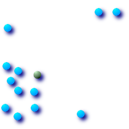
|
|
|
|
SELECT ST_AsText(ST_Centroid('MULTIPOINT ( -1 0, -1 2, -1 3, -1 4, -1 7, 0 1, 0 3, 1 1, 2 0, 6 0, 7 8, 9 8, 10 6 )'));
st_astext
------------------------------------------
POINT(2.30769230769231 3.30769230769231)
(1 row)名前
ST_ClosestPoint — g1上の，g2に最も近い二次元ポイントを返します．最短線の一つ目のポイントです．
概要
geometry ST_ClosestPoint(geometry
g1, geometry
g2);
例
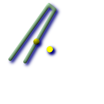 ポイントとラインストリングの間の最短は，ポイントそのものです． ラインストリングとポイントの間の最短は，ラインストリング上の最短となるポイントです．
SELECT ST_AsText(ST_ClosestPoint(pt,line)) AS cp_pt_line, ST_AsText(ST_ClosestPoint(line,pt)) As cp_line_pt FROM (SELECT 'POINT(100 100)'::geometry As pt, 'LINESTRING (20 80, 98 190, 110 180, 50 75 )'::geometry As line ) As foo; cp_pt_line | cp_line_pt ----------------+------------------------------------------ POINT(100 100) | POINT(73.0769230769231 115.384615384615)
| ポリトンA上の，ポリゴンBへの最短点
SELECT ST_AsText(
ST_ClosestPoint(
ST_GeomFromText('POLYGON((175 150, 20 40, 50 60, 125 100, 175 150))'),
ST_Buffer(ST_GeomFromText('POINT(110 170)'), 20)
)
) As ptwkt;
ptwkt
------------------------------------------
POINT(140.752120669087 125.695053378061)
|
名前
ST_Contains — BのポイントがAの外部に無く，かつBの内部の少なくとも一つの点がAの内部にある場合であって，かつこの場合に限って，TRUEを返します．
概要
boolean ST_Contains(geometry
geomA, geometry
geomB);
説明
BのポイントがAの外部に無く，かつBの内部の少なくとも一つの点がAの内部にある場合であって，かつこの場合に限って，TRUEを返します．この定義の重要で微妙なところは，Aはその境界を含まず，Aは自身を含む，ということです． ジオメトリAが自身を正しく含むかどうかを見るST_ContainsProperlyと対照的です．
ジオメトリBが完全にジオメトリAの内側になる場合はTRUEを返します．この関数が意味のあるものにするためには，元のジオメトリは同じ投影座標である，同じSRIDを持っている必要があります．ST_ContainsはST_Withinの逆のものです．ST_Contains(A,B)はST_Within(B,A)を意味します．ただし，結果が常にFALSEになる，気にしないまたは定義されていない不正なジオメトリの場合を除きます．
GEOSモジュールで実現しています．
| |
|
| |
この関数を不正なジオメトリで呼ばないでください．予期しない結果が返されます． |
この関数は，ジオメトリ上で使用可能なインデクスを使うバウンディングボックス比較を自動的に取り込みます． インデクスの使用を避けるには，_ST_Contains関数を使います．
ご注意: これは論理値を返して整数を返さないのが「許される」版です．
このメソッドは OpenGIS Simple Features Implementation Specification for SQL 1.1.を実装するものです． s2.1.1.2 // s2.1.13.3
- same as within(geometry B, geometry A)
このメソッドはSQL/MM仕様の実装です． SQL-MM 3: 5.1.31
直感的に分かりにくいST_ContainsとST_Withinの微妙な違いがあります．詳細については，Subtleties of OGC Covers, Contains, Withinをご覧ください．
例
次に示す図全てで，ST_ContainsはTRUEを返します．
| 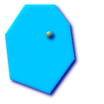
|
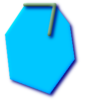
| 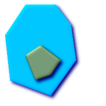
|
次に示す図全てで，ST_ContainsはFALSEを返します．
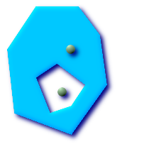
| 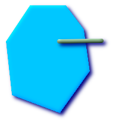
|
-- 円の中にある円
SELECT ST_Contains(smallc, bigc) As smallcontainsbig,
ST_Contains(bigc,smallc) As bigcontainssmall,
ST_Contains(bigc, ST_Union(smallc, bigc)) as bigcontainsunion,
ST_Equals(bigc, ST_Union(smallc, bigc)) as bigisunion,
ST_Covers(bigc, ST_ExteriorRing(bigc)) As bigcoversexterior,
ST_Contains(bigc, ST_ExteriorRing(bigc)) As bigcontainsexterior
FROM (SELECT ST_Buffer(ST_GeomFromText('POINT(1 2)'), 10) As smallc,
ST_Buffer(ST_GeomFromText('POINT(1 2)'), 20) As bigc) As foo;
-- Result
smallcontainsbig | bigcontainssmall | bigcontainsunion | bigisunion | bigcoversexterior | bigcontainsexterior
------------------+------------------+------------------+------------+-------------------+---------------------
f | t | t | t | t | f
-- ST_ContainsとST_ContainsPropertyとの違いのデモ
SELECT ST_GeometryType(geomA) As geomtype, ST_Contains(geomA,geomA) AS acontainsa, ST_ContainsProperly(geomA, geomA) AS acontainspropa,
ST_Contains(geomA, ST_Boundary(geomA)) As acontainsba, ST_ContainsProperly(geomA, ST_Boundary(geomA)) As acontainspropba
FROM (VALUES ( ST_Buffer(ST_Point(1,1), 5,1) ),
( ST_MakeLine(ST_Point(1,1), ST_Point(-1,-1) ) ),
( ST_Point(1,1) )
) As foo(geomA);
geomtype | acontainsa | acontainspropa | acontainsba | acontainspropba
--------------+------------+----------------+-------------+-----------------
ST_Polygon | t | f | f | f
ST_LineString | t | f | f | f
ST_Point | t | t | f | f
名前
ST_ContainsProperly — BがAの内部にインタセクトするが境界(または外部)にインタセクトしない場合に，TRUEを返します．Aは自身には，ContainsPropertyではありませんが，Containsです．
概要
boolean ST_ContainsProperly(geometry
geomA, geometry
geomB);
説明
BがAの内部にインタセクトするが境界(または外部)にインタセクトしない場合に，TRUEを返します．
Aは自身には，ContainsPropertyではありませんが，Containsです．
他のジオメトリの全てのポイントは，このジオメトリの内部のポイントです．ST_Relateで使われるDE-9IMでは[T**FF*FF*]に合致します．
| |
JTS文書からわずかに言い換えると，ST_ContainsとST_Intersectsの上でこの述語を使用する利点は，個々のポイントでのトポロジの計算が必要なく，効果的に計算されることです． この述語の，使用事例として，大きいポリゴンジオメトリでのジオメトリの集合のインタセクションを計算が挙げられます．インタセクションはかなり遅いので，ContainsPropertyを使って，対象ジオメトリのうち全体が領域内にあるものを抜き出すことができ，効果的になります．これらの場面では，インタセクションは確実に元の対象ジオメトリであることが演繹的に知られています． |
初出バージョン: 1.4.0 - GEOS >= 3.1.0が必要です．
| |
|
| |
この関数を不正なジオメトリで呼ばないでください．予期しない結果が返されます． |
この関数は，ジオメトリ上で使用可能なインデクスを使うバウンディングボックス比較を自動的に取り込みます． インデクスの使用を避けるには，_ST_ContainsProperty関数を使います．
例
--a circle within a circle
SELECT ST_ContainsProperly(smallc, bigc) As smallcontainspropbig,
ST_ContainsProperly(bigc,smallc) As bigcontainspropsmall,
ST_ContainsProperly(bigc, ST_Union(smallc, bigc)) as bigcontainspropunion,
ST_Equals(bigc, ST_Union(smallc, bigc)) as bigisunion,
ST_Covers(bigc, ST_ExteriorRing(bigc)) As bigcoversexterior,
ST_ContainsProperly(bigc, ST_ExteriorRing(bigc)) As bigcontainsexterior
FROM (SELECT ST_Buffer(ST_GeomFromText('POINT(1 2)'), 10) As smallc,
ST_Buffer(ST_GeomFromText('POINT(1 2)'), 20) As bigc) As foo;
--Result
smallcontainspropbig | bigcontainspropsmall | bigcontainspropunion | bigisunion | bigcoversexterior | bigcontainsexterior
------------------+------------------+------------------+------------+-------------------+---------------------
f | t | f | t | t | f
--example demonstrating difference between contains and contains properly
SELECT ST_GeometryType(geomA) As geomtype, ST_Contains(geomA,geomA) AS acontainsa, ST_ContainsProperly(geomA, geomA) AS acontainspropa,
ST_Contains(geomA, ST_Boundary(geomA)) As acontainsba, ST_ContainsProperly(geomA, ST_Boundary(geomA)) As acontainspropba
FROM (VALUES ( ST_Buffer(ST_Point(1,1), 5,1) ),
( ST_MakeLine(ST_Point(1,1), ST_Point(-1,-1) ) ),
( ST_Point(1,1) )
) As foo(geomA);
geomtype | acontainsa | acontainspropa | acontainsba | acontainspropba
--------------+------------+----------------+-------------+-----------------
ST_Polygon | t | f | f | f
ST_LineString | t | f | f | f
ST_Point | t | t | f | f
名前
ST_Covers — ジオメトリBにジオメトリAの外となるポイントが無い場合には，1(TRUE)を返します．
概要
boolean ST_Covers(geometry
geomA, geometry
geomB);
boolean ST_Covers(geography
geogpolyA, geography
geogpointB);
説明
ジオメトリ/ジオグラフィBにジオメトリ/ジオグラフィAの外となるポイントが無い場合には，1(TRUE)を返します．
GEOSモジュールで実現しています．
| |
|
| |
For geography only Polygon covers point is supported. |
| |
この関数を不正なジオメトリで呼ばないでください．予期しない結果が返されます． |
この関数は，ジオメトリ上で使用可能なインデクスを使うバウンディングボックス比較を自動的に取り込みます． インデクスの使用を避けるには，_ST_Covers関数を使います．
初出バージョン: 1.2.2 - GEOS >= 3.0が必要です．
初出バージョン: 1.5 - ジオグラフィのサポートが導入されました．
ご注意: これは論理値を返して整数を返さないのが「許される」版です．
OGC標準と違い，Oracleと同じです．
直感的に分かりにくいST_ContainsとST_Withinの微妙な違いがあります．詳細については，Subtleties of OGC Covers, Contains, Withinをご覧ください．
例
ジオメトリの例
--円をカバーする円
SELECT ST_Covers(smallc,smallc) As smallinsmall,
ST_Covers(smallc, bigc) As smallcoversbig,
ST_Covers(bigc, ST_ExteriorRing(bigc)) As bigcoversexterior,
ST_Contains(bigc, ST_ExteriorRing(bigc)) As bigcontainsexterior
FROM (SELECT ST_Buffer(ST_GeomFromText('POINT(1 2)'), 10) As smallc,
ST_Buffer(ST_GeomFromText('POINT(1 2)'), 20) As bigc) As foo;
--Result
smallinsmall | smallcoversbig | bigcoversexterior | bigcontainsexterior
--------------+----------------+-------------------+---------------------
t | f | t | f
(1 row) ジオグラフィの例
名前
ST_CoveredBy — ジオメトリ/ジオグラフィAの点がジオメトリ/ジオグラフィBの外に無い場合に，1(TRUE)を返します．
概要
boolean ST_CoveredBy(geometry
geomA, geometry
geomB);
boolean ST_CoveredBy(geography
geogA, geography
geogB);
説明
ジオメトリ/ジオグラフィAの点がジオメトリ/ジオグラフィBの外に無い場合に，1(TRUE)を返します．
GEOSモジュールで実現しています．
| |
|
| |
この関数を不正なジオメトリで呼ばないでください．予期しない結果が返されます． |
初出バージョン: 1.2.2 - GEOS >= 3.0が必要です．
この関数は，ジオメトリ上で使用可能なインデクスを使うバウンディングボックス比較を自動的に取り込みます． インデクスの使用を避けるには，_ST_CoverdBy関数を使います．
ご注意: これは論理値を返して整数を返さないのが「許される」版です．
Not an OGC standard, but Oracle has it too.
直感的に分かりにくいST_ContainsとST_Withinの微妙な違いがあります．詳細については，Subtleties of OGC Covers, Contains, Withinをご覧ください．
例
--a circle coveredby a circle
SELECT ST_CoveredBy(smallc,smallc) As smallinsmall,
ST_CoveredBy(smallc, bigc) As smallcoveredbybig,
ST_CoveredBy(ST_ExteriorRing(bigc), bigc) As exteriorcoveredbybig,
ST_Within(ST_ExteriorRing(bigc),bigc) As exeriorwithinbig
FROM (SELECT ST_Buffer(ST_GeomFromText('POINT(1 2)'), 10) As smallc,
ST_Buffer(ST_GeomFromText('POINT(1 2)'), 20) As bigc) As foo;
--Result
smallinsmall | smallcoveredbybig | exteriorcoveredbybig | exeriorwithinbig
--------------+-------------------+----------------------+------------------
t | t | t | f
(1 row) 名前
ST_Crosses —
与えられたジオメトリが共通の内部の点を持ち，かつそうでない点を持つ場合に，TRUEを返します．
概要
boolean ST_Crosses(geometry g1, geometry g2);
説明
ST_Crossesは二つのジオメトリを取り，
インタセクションが「空間的にクロスする」，すなわち，ジオメトリが共通の内部の点を持ち，かつそうでない点を持つ場合にTRUEを返します．
ジオメトリの内部のインタセクションは，空集合であってはならず，二つのジオメトリの最大次元より低い次元でなければなりません．さらに言うと，二つのジオメトリのインタセクションは，元のジオメトリのいずれとも一致してはなりません．
これらを満たさない場合にはFALSEが返されます．
数学的に述べると，次のようになります．
TODO: Insert appropriate MathML markup here or use a gif. Simple HTML markup does not work well in both IE and Firefox.

DE-9IMでは次のようになります．
T*T****** (Point/Line, Point/Area, Line/Area の場合)
T*****T** (Line/Point, Area/Point, Area/Line の場合)
0******** (Line/Line の場合)
他の次元の組み合わせでは，FALSEが返されます．
OpenGIS Simple Feature Specificationでは，この述語はPoint/Line, Point/Area, Line/Line, Line/Areaについてのみ定義されています．JTS/GEOSでは，Line/Point, Area/Point, Area/Lineについて拡張しています．これによって関係が対称になっています．
| |
|
| |
この関数は，ジオメトリ上で使用可能なインデクスを使うバウンディングボックス比較を自動的に取り込みます． |
このメソッドは OpenGIS Simple Features Implementation Specification for SQL 1.1.を実装するものです． s2.1.13.3
このメソッドはSQL/MM仕様の実装です． SQL-MM 3: 5.1.29
例
次に示す図全てで，TRUEが返されます．
| 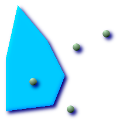
|
|
|
roads(道路)とhighways(高速道路)の二つのテーブルを持っている場面を考えます．
CREATE TABLE roads ( id serial NOT NULL, the_geom geometry, CONSTRAINT roads_pkey PRIMARY KEY (road_id) );
|
CREATE TABLE highways ( id serial NOT NULL, the_gem geometry, CONSTRAINT roads_pkey PRIMARY KEY (road_id) );
|
次のようなクエリを使って，highwayとクロスするroadsのリストを決定します．
SELECT roads.id FROM roads, highways WHERE ST_Crosses(roads.the_geom, highways.the_geom);
名前
ST_LineCrossingDirection — 二つのラインストリングが与えられ，クロスの種類を-3から3の区間の数で返します．0の場合はクロスしていません．
概要
integer ST_LineCrossingDirection(geometry linestringA, geometry linestringB);
説明
二つのラインストリングが与えられ，クロスの種類を-3から3の区間の数で返します．0の場合はクロスしていません．LINESTRINGのみサポートします．
整定数の定義は次の通りです．
0: クロスが無い
-1: 左クロス
1: 右クロス
-2: 複数クロスで最後が左
2: 複数クロスで最後が右
-3: 複数クロスで開始終了ともに左
3: 複数クロスで開始終了ともに右
初出バージョン: 1.4
例
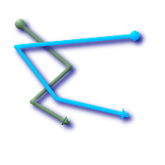 ライン1(緑)とライン2(青)，円が始点，三角が終点．クエリは次の通り．
SELECT ST_LineCrossingDirection(foo.line1, foo.line2) As l1_cross_l2 ,
ST_LineCrossingDirection(foo.line2, foo.line1) As l2_cross_l1
FROM (
SELECT
ST_GeomFromText('LINESTRING(25 169,89 114,40 70,86 43)') As line1,
ST_GeomFromText('LINESTRING(171 154,20 140,71 74,161 53)') As line2
) As foo;
l1_cross_l2 | l2_cross_l1
-------------+-------------
3 | -3
|
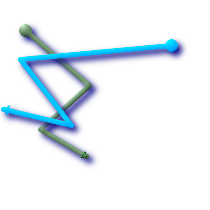 ライン1(緑)とライン2(青)，円が始点，三角が終点．クエリは次の通り．
SELECT ST_LineCrossingDirection(foo.line1, foo.line2) As l1_cross_l2 ,
ST_LineCrossingDirection(foo.line2, foo.line1) As l2_cross_l1
FROM (
SELECT
ST_GeomFromText('LINESTRING(25 169,89 114,40 70,86 43)') As line1,
ST_GeomFromText('LINESTRING (171 154, 20 140, 71 74, 2.99 90.16)') As line2
) As foo;
l1_cross_l2 | l2_cross_l1
-------------+-------------
2 | -2
|
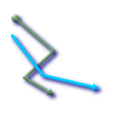 ライン1(緑)とライン2(青)，円が始点，三角が終点．クエリは次の通り．
SELECT
ST_LineCrossingDirection(foo.line1, foo.line2) As l1_cross_l2 ,
ST_LineCrossingDirection(foo.line2, foo.line1) As l2_cross_l1
FROM (
SELECT
ST_GeomFromText('LINESTRING(25 169,89 114,40 70,86 43)') As line1,
ST_GeomFromText('LINESTRING (20 140, 71 74, 161 53)') As line2
) As foo;
l1_cross_l2 | l2_cross_l1
-------------+-------------
-1 | 1
|
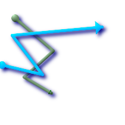 ライン1(緑)とライン2(青)，円が始点，三角が終点．クエリは次の通り．
SELECT ST_LineCrossingDirection(foo.line1, foo.line2) As l1_cross_l2 ,
ST_LineCrossingDirection(foo.line2, foo.line1) As l2_cross_l1
FROM (SELECT
ST_GeomFromText('LINESTRING(25 169,89 114,40 70,86 43)') As line1,
ST_GeomFromText('LINESTRING(2.99 90.16,71 74,20 140,171 154)') As line2
) As foo;
l1_cross_l2 | l2_cross_l1
-------------+-------------
-2 | 2
|
SELECT s1.gid, s2.gid, ST_LineCrossingDirection(s1.the_geom, s2.the_geom) FROM streets s1 CROSS JOIN streets s2 ON (s1.gid != s2.gid AND s1.the_geom && s2.the_geom ) WHERE ST_CrossingDirection(s1.the_geom, s2.the_geom) > 0;
名前
ST_Disjoint — ジオメトリが「空間的にインタセクトしていない」すなわち，空間を共有ししていない場合に，TRUEを返します．
概要
boolean ST_Disjoint(
geometry
A
,
geometry
B
);
説明
オーバラップ，接触，Withinは全て，ジオメトリが非接続でないことを意味しています．これらがTRUEを返す場合は，空間的に非接続ではありません．非接続は，空間インタセクトについてFALSEとなります．
| |
|
GEOSモジュールで実現しています．
| |
この関数はインデクスを使いません． |
| |
ご注意: これは論理値を返して整数を返さないのが「許される」版です． |
このメソッドは OpenGIS Simple Features Implementation Specification for SQL 1.1.を実装するものです． s2.1.1.2 //s2.1.13.3
- a.Relate(b, 'FF*FF****')
このメソッドはSQL/MM仕様の実装です． SQL-MM 3: 5.1.26
名前
ST_Distance — ジオメトリ型については，二つのジオメトリの，二次元の最小デカルト距離(空間参照系に基づきます)を，投影された単位で返します． ジオグラフィ型については，デフォルトでは，二つのジオメトリ間の回転楕円体上の最小距離をメートル単位で返します．
概要
float ST_Distance(geometry
g1, geometry
g2);
float ST_Distance(geography
gg1, geography
gg2);
float ST_Distance(geography
gg1, geography
gg2, boolean
use_spheroid);
説明
ジオメトリ型については，二つのジオメトリの，二次元の最小デカルト距離を，投影された単位(空間参照系の単位)で返します． ジオグラフィ型については，デフォルトでは，二つのジオメトリ間の，WGS84回転楕円体上の最小距離をメートル単位で返します． 回転楕円体の替わりに球面による答えを得るにはFALSEを渡します．
このメソッドは OpenGIS Simple Features Implementation Specification for SQL 1.1.を実装するものです．
このメソッドはSQL/MM仕様の実装です． SQL-MM 3: 5.1.23
初出バージョン: 1.5.0 1.5でジオグラフィサポートが導入されました．大きいジオメトリやバーテックの多いジオメトリについての，扱いを改善することによる平面での速度改善．
例
-- ジオメトリの例 - 平面上の度単位 4326はWGS84経度緯度 単位は度
SELECT ST_Distance(
ST_GeomFromText('POINT(-72.1235 42.3521)',4326),
ST_GeomFromText('LINESTRING(-72.1260 42.45, -72.123 42.1546)', 4326)
);
st_distance
-----------------
0.00150567726382282
-- ジオメトリの例 - メートル単位 (SRID: 26986 メートル単位マサチューセッツ州平面)
-- (マサチューセッツで最も精度が良い)
SELECT ST_Distance(
ST_Transform(ST_GeomFromText('POINT(-72.1235 42.3521)',4326),26986),
ST_Transform(ST_GeomFromText('LINESTRING(-72.1260 42.45, -72.123 42.1546)', 4326),26986)
);
st_distance
-----------------
123.797937878454
-- Geometry example - units in meters (SRID: 2163 US National Atlas Equal area) (least accurate)
SELECT ST_Distance(
ST_Transform(ST_GeomFromText('POINT(-72.1235 42.3521)',4326),2163),
ST_Transform(ST_GeomFromText('LINESTRING(-72.1260 42.45, -72.123 42.1546)', 4326),2163)
);
st_distance
------------------
126.664256056812
-- ジオグラフィの例 - 同じですがメートル単位，球面を使って若干の速度向上と若干の精度低下
SELECT ST_Distance(gg1, gg2) As spheroid_dist, ST_Distance(gg1, gg2, false) As sphere_dist
FROM (SELECT
ST_GeographyFromText('SRID=4326;POINT(-72.1235 42.3521)') As gg1,
ST_GeographyFromText('SRID=4326;LINESTRING(-72.1260 42.45, -72.123 42.1546)') As gg2
) As foo ;
spheroid_dist | sphere_dist
------------------+------------------
123.802076746848 | 123.475736916397
名前
ST_HausdorffDistance — 二つのジオメトリ間のハウスドルフ距離を返します．基本的にジオメトリが似ているかどうかを計測するものです．単位はジオメトリの空間参照系の単位です．
概要
float ST_HausdorffDistance(geometry
g1, geometry
g2);
float ST_HausdorffDistance(geometry
g1, geometry
g2, float
densifyFrac);
説明
「離散ハウスドルフ距離」とみなすことができる距離基準を計算します．これは，一つのジオメトリの離散点に制限されたハウスドルフ距離です．Hausdorff distance に関するWikiPedia英語版の記事，Martin Davis note on how Hausdorff Distance calculation was used to prove correctness of the CascadePolygonUnion approach.などを参照して下さい．
densifyFracが指定された際には，この関数は離散ハウスドルフ距離を計算する前に区分の高密度化を行います． densifyFracパラメータは，高密度化を行うための小数です．総延長の小数が与えられた値に近くなるように，区分ごとに等しい長さに分割します．
| |
現在の実装では，バーテックのみを離散位置としてサポートします．任意の密度でポイントを使用することができるよう拡張されています． |
| |
このアルゴリズムは標準的なハウスドルフ距離と等価では*ありません*．しかし，使用可能な場面の大部分で正しくなる近似計算がなされています．重要なものに，それぞれが概ね平行で概ね等しい長さのラインストリングがあります．これはラインのマッチングに役立つ基準です． |
初出バージョン: 1.5.0 - GEOS >= 3.2.0が必要です．
例
postgis=# SELECT st_HausdorffDistance( 'LINESTRING (0 0, 2 0)'::geometry, 'MULTIPOINT (0 1, 1 0, 2 1)'::geometry); st_hausdorffdistance ---------------------- 1 (1 row)
postgis=# SELECT st_hausdorffdistance('LINESTRING (130 0, 0 0, 0 150)'::geometry, 'LINESTRING (10 10, 10 150, 130 10)'::geometry, 0.5);
st_hausdorffdistance
----------------------
70
(1 row)
名前
ST_MaxDistance — 二つのジオメトリ間の二次元距離の最大値を，投影法の単位で返します．
概要
float ST_MaxDistance(geometry g1, geometry g2);
名前
ST_Distance_Sphere — 二つの経度緯度ジオメトリ間の最小距離をメートル単位で返します．半径6370986メートルの球面を用います．ST_Distance_Spheroidより早いですが精度が低くなります．PostGIS 1.5より前では，ポイントについてのみ実装されていました．
概要
float ST_Distance_Sphere(geometry geomlonlatA, geometry geomlonlatB);
説明
二つの経度緯度ジオメトリ間の最小距離をメートル単位で返します．半径6370986メートルの球面を用います．ST_Distance_Spheroidより早いですが精度が低くなります．PostGIS 1.5より前では，ポイントについてのみ実装されていました．
| |
この関数は現在のところ，ジオメトリのSRIDを見ずに，常にWGS84経度緯度を仮定します．以前のバージョンではポイントのみのサポートでした． |
初出バージョン: 1.5 - ポイント以外のジオメトリのサポートが導入されました．以前のバージョンではポイントでのみ動作しました．
例
SELECT round(CAST(ST_Distance_Sphere(ST_Centroid(the_geom), ST_GeomFromText('POINT(-118 38)',4326)) As numeric),2) As dist_meters,
round(CAST(ST_Distance(ST_Transform(ST_Centroid(the_geom),32611),
ST_Transform(ST_GeomFromText('POINT(-118 38)', 4326),32611)) As numeric),2) As dist_utm11_meters,
round(CAST(ST_Distance(ST_Centroid(the_geom), ST_GeomFromText('POINT(-118 38)', 4326)) As numeric),5) As dist_degrees,
round(CAST(ST_Distance(ST_Transform(the_geom,32611),
ST_Transform(ST_GeomFromText('POINT(-118 38)', 4326),32611)) As numeric),2) As min_dist_line_point_meters
FROM
(SELECT ST_GeomFromText('LINESTRING(-118.584 38.374,-118.583 38.5)', 4326) As the_geom) as foo;
dist_meters | dist_utm11_meters | dist_degrees | min_dist_line_point_meters
-------------+-------------------+--------------+----------------------------
70424.47 | 70438.00 | 0.72900 | 65871.18
名前
ST_Distance_Spheroid — 指定した回転楕円体による，二つのジオメトリ間の最小距離を返します．PostGIS 1.5より前ではポイントのみサポートされていました．
概要
float ST_Distance_Spheroid(geometry geomlonlatA, geometry geomlonlatB, spheroid measurement_spheroid);
説明
指定した回転楕円体による，二つのジオメトリ間の最小距離を，メートル単位で返します．回転楕円体の説明については，ST_Length_Spheroidを参照して下さい．PostGIS 1.5より前ではポイントのみサポートされていました．
| |
この関数は現在のところ，ジオメトリのSRIDを見ずに，常にWGS80経度緯度を仮定します．以前のバージョンではポイントのみのサポートでした． |
初出バージョン: 1.5 - ポイント以外のジオメトリのサポートが導入されました．以前のバージョンではポイントでのみ動作しました．
例
SELECT round(CAST(
ST_Distance_Spheroid(ST_Centroid(the_geom), ST_GeomFromText('POINT(-118 38)',4326), 'SPHEROID["WGS 84",6378137,298.257223563]')
As numeric),2) As dist_meters_spheroid,
round(CAST(ST_Distance_Sphere(ST_Centroid(the_geom), ST_GeomFromText('POINT(-118 38)',4326)) As numeric),2) As dist_meters_sphere,
round(CAST(ST_Distance(ST_Transform(ST_Centroid(the_geom),32611),
ST_Transform(ST_GeomFromText('POINT(-118 38)', 4326),32611)) As numeric),2) As dist_utm11_meters
FROM
(SELECT ST_GeomFromText('LINESTRING(-118.584 38.374,-118.583 38.5)', 4326) As the_geom) as foo;
dist_meters_spheroid | dist_meters_sphere | dist_utm11_meters
----------------------+--------------------+-------------------
70454.92 | 70424.47 | 70438.00
名前
ST_DFullyWithin — 全てのジオメトリが，指定したジオメトリから指定した距離内にある場合に，TRUEを返します．
概要
boolean ST_DFullyWithin(geometry
g1, geometry
g2, double precision
distance);
説明
全てのジオメトリが，指定したジオメトリから指定した距離内に場合に，TRUEを返します．距離はジオメトリの空間参照系で定義されている単位になります．この関数が意味のあるものにするためには，元のジオメトリは同じ座標投影であり，同じSRIDを持つ必要があります．
| |
この関数は，ジオメトリ上で使用可能なインデクスを使うバウンディングボックス比較を自動的に取り込みます． |
初出バージョン: 1.5.0
例
postgis=# SELECT ST_DFullyWithin(geom_a, geom_b, 10) as DFullyWithin10, ST_DWithin(geom_a, geom_b, 10) as DWithin10, ST_DFullyWithin(geom_a, geom_b, 20) as DFullyWithin20 from
(select ST_GeomFromText('POINT(1 1)') as geom_a,ST_GeomFromText('LINESTRING(1 5, 2 7, 1 9, 14 12)') as geom_b) t1;
-----------------
DFullyWithin10 | DWithin10 | DFullyWithin20 |
---------------+----------+---------------+
f | t | t | 名前
ST_DWithin — ジオメトリが，指定したジオメトリから指定した距離内にある場合に，TRUEを返します．ジオメトリについては，距離は空間参照系で定義されている単位になります．ジオグラフィについては，メートル単位で，デフォルトではuse_spheroid=true(回転楕円体を使った計算)となり，速いチェックをするにはuse_spheroid=falseとして球面を使って計算します．
概要
boolean ST_DWithin(geometry
g1, geometry
g2, double precision
distance_of_srid);
boolean ST_DWithin(geography
gg1, geography
gg2, double precision
distance_meters);
boolean ST_DWithin(geography
gg1, geography
gg2, double precision
distance_meters, boolean
use_spheroid);
説明
ジオメトリが，指定したジオメトリから指定した距離内にある場合に，TRUEを返します．
ジオメトリについては，距離は空間参照系で定義されている単位になります．この関数が意味のあるものとするためには，元のジオメトリは同じ座標投影であり，同じSRIDを持つ必要があります．
ジオグラフィについては，メートル単位で，デフォルトではuse_spheroid=true(回転楕円体を使った計算)となり，速いチェックをするにはuse_spheroid=falseとして球面を使って計算します．
| |
この関数は，ジオメトリ上で使用可能なインデクスを使うバウンディングボックス比較を自動的に取り込みます． |
| |
1.3より前では，ST_Expandは一般的に&&とST_Distanceとを併用して，同じ効果を得ていました． 1.3.4より前では，この関数は，基本的にこのやり方の短縮版でした． 1.3.4から，ST_DWithinは，大きなバッファ領域について前のバージョンより効果的になる，より短縮した距離関数を使っています． |
このメソッドは OpenGIS Simple Features Implementation Specification for SQL 1.1.を実装するものです．
初出バージョン: 1.5.0 ジオグラフィサポートが導入されました．
例
--それぞれの学校から3000単位以内の，最も近い病院の探索． --インデクスを使用しないST_Distanceの処理に渡す学校リストを制限するために， --ST_DWithin探索でインデクスを使います． --空間参照系の単位がメートルの場合は，単位はメートルになります． SELECT DISTINCT ON (s.gid) s.gid, s.school_name, s.the_geom, h.hospital_name FROM schools s LEFT JOIN hospitals h ON ST_DWithin(s.the_geom, h.the_geom, 3000) ORDER BY s.gid, ST_Distance(s.the_geom, h.the_geom); --病院が近くに無い学校 --病院が3000単位内に無い全ての学校を探索します． --単位は空間参照系の単位です(メートル，フィート，度) SELECT s.gid, s.school_name FROM schools s LEFT JOIN hospitals h ON ST_DWithin(s.the_geom, h.the_geom, 3000) WHERE h.gid IS NULL;
名前
ST_Equals — 与えられたジオメトリ表現が同じ場合にはTRUEを返します．方向は無視されます．
概要
boolean ST_Equals(geometry A, geometry B);
説明
与えられたジオメトリが「空間的に同じ」場合には，TRUEを返します． '='よりも「よりよい」答えのために使います． 空間的に同じということは，ST_Within(A,B) = trueかつST_Within(B,A) = trueとなります．また，ポイントの順序が違っても同じジオメトリ構造となります．構成ポイントの順序の確認にはST_OrderingEqualsを使用します(ST_OrderingEqualsはポイントのオーダが同じかを確認するよりも若干厳しくなります)．
| |
この関数は，どちらのジオメトリも不正である場合は，バイナリで同じ場合であっても，FALSEを返します． |
このメソッドは OpenGIS Simple Features Implementation Specification for SQL 1.1.を実装するものです． s2.1.1.2
このメソッドはSQL/MM仕様の実装です． SQL-MM 3: 5.1.24
名前
ST_HasArc — ジオメトリまたはジオメトリコレクションが曲線ストリングを含む場合に，TRUEを返します．
概要
boolean ST_HasArc(geometry geomA);
説明
ジオメトリまたはジオメトリコレクションが曲線ストリングを含む場合に，TRUEを返します．
初出バージョン: 1.2.3?
この関数は三次元をサポートします．Zインデクスを削除しません．
このメソッドは曲線ストリングと曲線をサポートします．
名前
ST_Intersects — ジオメトリ/ジオグラフィが「空間的にインタセクトする」(空間に共有部分がある)場合には，TRUEを返します．そうでない(非接続)場合はFALSEを返します．ジオグラフィ -- 許容量は0.00001メートルです(どの閉じた点でもインタセクトを考慮されます)．
概要
boolean ST_Intersects(
geometry
geomA
,
geometry
geomB
);
boolean ST_Intersects(
geography
geogA
,
geography
geogB
);
説明
オーバラップ，接触，Withinは全て，ジオメトリがインタセクトしていることを意味しています．これらがTRUEを返す場合は，空間的にインタセクトしています．非接続は，空間インタセクトについてFALSEとなります．
| |
ジオメトリ版では， |
ジオメトリについては，GEOSモジュールで実現しています．ジオグラフィについてはネイティブです．
初出バージョン: 1.5 ジオメトリサポートが導入されました．
| |
この関数は，ジオメトリ上で使用可能なインデクスを使うバウンディングボックス比較を自動的に取り込みます． |
| |
ジオグラフィでは，この関数は0.00001メートルの距離許容を持ち，回転楕円体計算よりむしろ球面を使います． |
| |
ご注意: これは論理値を返して整数を返さないのが「許される」版です． |
このメソッドは OpenGIS Simple Features Implementation Specification for SQL 1.1.を実装するものです． s2.1.1.2 //s2.1.13.3
- ST_Intersects(g1, g2 ) --> Not (ST_Disjoint(g1, g2 ))
このメソッドはSQL/MM仕様の実装です． SQL-MM 3: 5.1.27
ジオメトリの例
SELECT ST_Intersects('POINT(0 0)'::geometry, 'LINESTRING ( 2 0, 0 2 )'::geometry);
st_intersects
---------------
f
(1 row)
SELECT ST_Intersects('POINT(0 0)'::geometry, 'LINESTRING ( 0 0, 0 2 )'::geometry);
st_intersects
---------------
t
(1 row)
名前
ST_Length — LINESTRINGまたはMULTILINESTRINGの場合に，ジオメトリの二次元長を返します．ジオメトリでは，単位は空間参照系の単位です．ジオグラフィでは，メートル単位です(デフォルトの回転楕円体)
概要
float ST_Length(geometry a_2dlinestring);
float ST_Length(geography gg);
float ST_Length(geography gg, boolean use_spheroid);
説明
ジオメトリについては，LINESTRING, MULTILINESTRING, ST_Curve, ST_MultiCurveの場合には，ジオメトリの二次元デカルト距離を返します．領域ジオメトリに対しては0を返します．領域ジオメトリに対してはST_Perimeterを使います．計測単位はジオメトリの空間参照系の単位になります．ジオグラフィについては，領域ジオメトリに対する周囲長関数としての働きもします．
現在は，ジオメトリに対してはST_Length2Dの別名ですが，高次元サポートに変更されるかも知れません．
| |
ジオグラフィのMULTI/POLYGONへの適用によって，POLYGON/MULTIPOLYGONの周囲長を得られます． これは，ジオメトリに対する実装の場合とは違います． |
| |
ジオグラフィに対しては，球面での計測を行います．精度が上がりますが遅くなる回転楕円体を使用するには，ST_Length(gg,false)；とします． |
このメソッドは OpenGIS Simple Features Implementation Specification for SQL 1.1.を実装するものです． s2.1.5.1
このメソッドはSQL/MM仕様の実装です． SQL-MM 3: 7.1.2, 9.3.4
Availability: 1.5.0 geography support was introduced in 1.5.
ジオメトリの例
フィート単位でラインストリングの長さを返します．2249がフィート単位のマサチューセッツ州平面ですので，フィート単位になります．
SELECT ST_Length(ST_GeomFromText('LINESTRING(743238 2967416,743238 2967450,743265 2967450,
743265.625 2967416,743238 2967416)',2249));
st_length
---------
122.630744000095
--WGS84のラインストリングからメートル単位のマサチューセッツ州平面への変換
SELECT ST_Length(
ST_Transform(
ST_GeomFromEWKT('SRID=4326;LINESTRING(-72.1260 42.45, -72.1240 42.45666, -72.123 42.1546)'),
26986
)
);
st_length
---------
34309.4563576191
ジオグラフィの例
WGS84ジオグラフィラインの長さを返します．
-- デフォルト計算では回転楕円体でなく球面を使用 SELECT ST_Length(the_geog) As length_spheroid, ST_Length(the_geog,false) As length_sphere FROM (SELECT ST_GeographyFromText( 'SRID=4326;LINESTRING(-72.1260 42.45, -72.1240 42.45666, -72.123 42.1546)') As the_geog) As foo; length_spheroid | length_sphere ------------------+------------------ 34310.5703627305 | 34346.2060960742 (1 row)
名前
ST_Length2D —
LINESTRINGまたはMULTILINESTRINGに対して，ジオメトリの二次元長を返します．これはST_Lengthの別名です．
概要
float ST_Length2D(geometry a_2dlinestring);
名前
ST_Length3D — LINESTRINGまたはMULTILINESTRINGに対して，ジオメトリの三次元長または二次元長を返します．
概要
float ST_Length3D(geometry a_3dlinestring);
説明
LINESTRINGまたはMULTILINESTRINGに対して，ジオメトリの三次元長または二次元長を返します．二次元のラインに対しては，二次元長を返します(ST_LengthやST_Length2Dと同じです)．
この関数は三次元をサポートします．Zインデクスを削除しません．
名前
ST_Length_Spheroid — LINESTRINGまたはMULTILINESTRINGに対して，回転楕円体上の三次元長または二次元長を返します．ジオメトリの座標が経度/緯度で，投影変換なしに距離を求める場合に便利です．
概要
float ST_Length_Spheroid(geometry a_linestring, spheroid a_spheroid);
説明
回転楕円体上の長さを返します．ジオメトリの座標が経度/緯度で，投影変換なしに距離を求める場合に便利です．回転楕円体は独立したデータベース型で，次のように構成されています．
SPHEROID[<名称>,<長軸半径>,<扁平率の逆数>]
SPHEROID["GRS_1980",6378137,298.257222101]
| |
MULTILINESTRINGかLINESTRINGでない場合は0が返されます． |
この関数は三次元をサポートします．Zインデクスを削除しません．
例
SELECT ST_Length_Spheroid( geometry_column,
'SPHEROID["GRS_1980",6378137,298.257222101]' )
FROM geometry_table;
SELECT ST_Length_Spheroid( the_geom, sph_m ) As tot_len,
ST_Length_Spheroid(ST_GeometryN(the_geom,1), sph_m) As len_line1,
ST_Length_Spheroid(ST_GeometryN(the_geom,2), sph_m) As len_line2
FROM (SELECT ST_GeomFromText('MULTILINESTRING((-118.584 38.374,-118.583 38.5),
(-71.05957 42.3589 , -71.061 43))') As the_geom,
CAST('SPHEROID["GRS_1980",6378137,298.257222101]' As spheroid) As sph_m) as foo;
tot_len | len_line1 | len_line2
------------------+------------------+------------------
85204.5207562955 | 13986.8725229309 | 71217.6482333646
--3D
SELECT ST_Length_Spheroid( the_geom, sph_m ) As tot_len,
ST_Length_Spheroid(ST_GeometryN(the_geom,1), sph_m) As len_line1,
ST_Length_Spheroid(ST_GeometryN(the_geom,2), sph_m) As len_line2
FROM (SELECT ST_GeomFromEWKT('MULTILINESTRING((-118.584 38.374 20,-118.583 38.5 30),
(-71.05957 42.3589 75, -71.061 43 90))') As the_geom,
CAST('SPHEROID["GRS_1980",6378137,298.257222101]' As spheroid) As sph_m) as foo;
tot_len | len_line1 | len_line2
------------------+-----------------+------------------
85204.5259107402 | 13986.876097711 | 71217.6498130292
名前
ST_Length2D_Spheroid — 回転楕円体上のLINESTRING/MULTILINESTRINGの二次元長を計算します．ジオメトリの座標が経度/緯度で，投影変換なしに距離を求める場合に便利です．
概要
float ST_Length2D_Spheroid(geometry a_linestring, spheroid a_spheroid);
説明
回転楕円体上の二次元長を返します．ジオメトリの座標が経度/緯度で，投影変換なしに距離を求める場合に便利です．回転楕円体は独立したデータベース型で，次のように構成されています．
SPHEROID[<名称>,<長軸半径>,<扁平率の逆数>]
SPHEROID["GRS_1980",6378137,298.257222101]
| |
MULTILINESTRINGかLINESTRINGでない場合は0が返されます． |
| |
この関数はST_Length_SpheroidとST_Length3D_Spheroidに似ていますが，計算でZ値は考慮されない点が異なります． |
例
SELECT ST_Length2D_Spheroid( geometry_column,
'SPHEROID["GRS_1980",6378137,298.257222101]' )
FROM geometry_table;
SELECT ST_Length2D_Spheroid( the_geom, sph_m ) As tot_len,
ST_Length2D_Spheroid(ST_GeometryN(the_geom,1), sph_m) As len_line1,
ST_Length2D_Spheroid(ST_GeometryN(the_geom,2), sph_m) As len_line2
FROM (SELECT ST_GeomFromText('MULTILINESTRING((-118.584 38.374,-118.583 38.5),
(-71.05957 42.3589 , -71.061 43))') As the_geom,
CAST('SPHEROID["GRS_1980",6378137,298.257222101]' As spheroid) As sph_m) as foo;
tot_len | len_line1 | len_line2
------------------+------------------+------------------
85204.5207562955 | 13986.8725229309 | 71217.6482333646
--3D Observe same answer
SELECT ST_Length2D_Spheroid( the_geom, sph_m ) As tot_len,
ST_Length2D_Spheroid(ST_GeometryN(the_geom,1), sph_m) As len_line1,
ST_Length2D_Spheroid(ST_GeometryN(the_geom,2), sph_m) As len_line2
FROM (SELECT ST_GeomFromEWKT('MULTILINESTRING((-118.584 38.374 20,-118.583 38.5 30),
(-71.05957 42.3589 75, -71.061 43 90))') As the_geom,
CAST('SPHEROID["GRS_1980",6378137,298.257222101]' As spheroid) As sph_m) as foo;
tot_len | len_line1 | len_line2
------------------+------------------+------------------
85204.5207562955 | 13986.8725229309 | 71217.6482333646
名前
ST_Length3D_Spheroid — 標高を考慮に入れて，回転楕円体上の長さを計算します．これはST_Length_Spheroidの別名です．
概要
float ST_Length3D_Spheroid(geometry a_linestring, spheroid a_spheroid);
名前
ST_LongestLine — 二つのジオメトリの二次元長が最長となるポイントを返します．見つかった最長線が複数ある場合は，最初のもののみ返します．返されるラインは捨てにg1側を始点，g2側を終点とします．この関数が返すラインの長さは，常にst_maxdistanceと同じになります．
概要
geometry ST_LongestLine(geometry
g1, geometry
g2);
例
ポイントとラインの間の最長ライン
SELECT ST_AsText(
ST_LongestLine('POINT(100 100)'::geometry,
'LINESTRING (20 80, 98 190, 110 180, 50 75 )'::geometry)
) As lline;
lline
-----------------
LINESTRING(100 100,98 190)
| 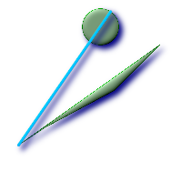 ポリゴンとポリゴンの間の最長ライン
SELECT ST_AsText(
ST_LongestLine(
ST_GeomFromText('POLYGON((175 150, 20 40,
50 60, 125 100, 175 150))'),
ST_Buffer(ST_GeomFromText('POINT(110 170)'), 20)
)
) As llinewkt;
lline
-----------------
LINESTRING(20 40,121.111404660392 186.629392246051)
|
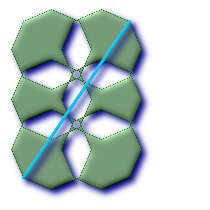 素敵な都市のある部分から他の部分に移動するための最長直線距離．最長距離はこのラインの長さと同じになります．
SELECT ST_AsText(ST_LongestLine(c.the_geom, c.the_geom)) As llinewkt,
ST_MaxDistance(c.the_geom,c.the_geom) As max_dist,
ST_Length(ST_LongestLine(c.the_geom, c.the_geom)) As lenll
FROM (SELECT ST_BuildArea(ST_Collect(the_geom)) As the_geom
FROM (SELECT ST_Translate(ST_SnapToGrid(ST_Buffer(ST_Point(50 ,generate_series(50,190, 50)
),40, 'quad_segs=2'),1), x, 0) As the_geom
FROM generate_series(1,100,50) As x) AS foo
) As c;
llinewkt | max_dist | lenll
---------------------------+------------------+------------------
LINESTRING(23 22,129 178) | 188.605408193933 | 188.605408193933
|
名前
ST_OrderingEquals — 与えられたジオメトリが同じジオメトリを示し，ポイントの順序が同じである場合に，TRUEを返します．
概要
boolean ST_OrderingEquals(geometry A, geometry B);
説明
ST_OrderingEqualsは，二つのジオメトリを比較して，ジオメトリが同じで，座標値が同じ順序である場合には，t (TRUE)を返し，それ以外の場合には，f (FALSE)を返します．
| |
この関数は，SQL-MM仕様ではなくArcSDE SQL仕様に従って実装しています．http://edndoc.esri.com/arcsde/9.1/sql_api/sqlapi3.htm#ST_OrderingEquals をご覧ください． |
このメソッドはSQL/MM仕様の実装です． SQL-MM 3: 5.1.43
例
SELECT ST_OrderingEquals(ST_GeomFromText('LINESTRING(0 0, 10 10)'),
ST_GeomFromText('LINESTRING(0 0, 5 5, 10 10)'));
st_orderingequals
-----------
f
(1 row)
SELECT ST_OrderingEquals(ST_GeomFromText('LINESTRING(0 0, 10 10)'),
ST_GeomFromText('LINESTRING(0 0, 0 0, 10 10)'));
st_orderingequals
-----------
t
(1 row)
SELECT ST_OrderingEquals(ST_Reverse(ST_GeomFromText('LINESTRING(0 0, 10 10)')),
ST_GeomFromText('LINESTRING(0 0, 0 0, 10 10)'));
st_orderingequals
-----------
f
(1 row)
名前
ST_Overlaps — ジオメトリが共有空間を持ち，同じ次元で，かつ完全に一方に含まれていない場合に，TRUEを返します．
概要
boolean ST_Overlaps(geometry A, geometry B);
説明
ジオメトリが「空間的にオーバラップ」する場合に，TRUEを返します．ジオメトリがインタセクトして，かつ一方が他方を完全には含まない場合です．
GEOSモジュールで実現しています．
| |
ジオメトリコレクションを引数として呼ばないで下さい． |
この関数は，ジオメトリ上で使用可能なインデクスを使うバウンディングボックス比較を自動的に取り込みます．インデクスの使用を避けるには，_ST_Overlapsn関数を使います．
ご注意: これは論理値を返して整数を返さないのが「許される」版です．
このメソッドは OpenGIS Simple Features Implementation Specification for SQL 1.1.を実装するものです． s2.1.1.2 // s2.1.13.3
このメソッドはSQL/MM仕様の実装です． SQL-MM 3: 5.1.32
例
--線上にある点は線に含まれていて，低い次元ですので，線とオーバラップもクロスもしません．
SELECT ST_Overlaps(a,b) As a_overlap_b,
ST_Crosses(a,b) As a_crosses_b,
ST_Intersects(a, b) As a_intersects_b, ST_Contains(b,a) As b_contains_a
FROM (SELECT ST_GeomFromText('POINT(1 0.5)') As a, ST_GeomFromText('LINESTRING(1 0, 1 1, 3 5)') As b)
As foo
a_overlap_b | a_crosses_b | a_intersects_b | b_contains_a
------------+-------------+----------------+--------------
f | f | t | t
--線は部分的に円に含まれますが，完全にはインタセクトとクロスを満たしませんが，
--異なる次元のためオーバラップします．
SELECT ST_Overlaps(a,b) As a_overlap_b, ST_Crosses(a,b) As a_crosses_b,
ST_Intersects(a, b) As a_intersects_b,
ST_Contains(a,b) As a_contains_b
FROM (SELECT ST_Buffer(ST_GeomFromText('POINT(1 0.5)'), 3) As a, ST_GeomFromText('LINESTRING(1 0, 1 1, 3 5)') As b)
As foo;
a_overlap_b | a_crosses_b | a_intersects_b | a_contains_b
-------------+-------------+----------------+--------------
f | t | t | f
-- 円にインタセクトした，二次元の曲がったホットドッグ(または，ふくれたラインストリング)です．
-- 完全には円に含まれず，同じ次元ですのでオーバラップします．
-- インタセクションの次元が最大次元と同じ二次元ですから，クロスしません．
SELECT ST_Overlaps(a,b) As a_overlap_b, ST_Crosses(a,b) As a_crosses_b, ST_Intersects(a, b) As a_intersects_b,
ST_Contains(b,a) As b_contains_a,
ST_Dimension(a) As dim_a, ST_Dimension(b) as dim_b, ST_Dimension(ST_Intersection(a,b)) As dima_intersection_b
FROM (SELECT ST_Buffer(ST_GeomFromText('POINT(1 0.5)'), 3) As a,
ST_Buffer(ST_GeomFromText('LINESTRING(1 0, 1 1, 3 5)'),0.5) As b)
As foo;
a_overlap_b | a_crosses_b | a_intersects_b | b_contains_a | dim_a | dim_b | dima_intersection_b
-------------+-------------+----------------+--------------+-------+-------+---------------------
t | f | t | f | 2 | 2 | 2
名前
ST_Perimeter — ST_SrrfaceまたはST_MultiSurface(POLYGONまたはMULTIPOLYGON)の境界の長さの計測値を返します．
概要
float ST_Perimeter(geometry g1);
説明
ジオメトリがST_SrrfaceまたはST_MultiSurface(POLYGONまたはMULTIPOLYGON)の場合に，ジオメトリの境界の長さの計測値を返します．領域ジオメトリでない場合は0を返します．LINESTRINGについてはST_Lengthを使用して下さい．計測値の単位はジオメトリの空間参照系の単位です．
現在は，この関数はST_Perimeter2Dの別名ですが，高次元サポートに変更されるかも知れません．
このメソッドは OpenGIS Simple Features Implementation Specification for SQL 1.1.を実装するものです． s2.1.5.1
このメソッドはSQL/MM仕様の実装です． SQL-MM 3: 8.1.3, 9.5.4
例
POLYGONとMULTIPOLYGONに対するフィート単位の周囲長を返します．2249はフィート単位のマサチューセッツ平面なので，フィート単位です．
SELECT ST_Perimeter(ST_GeomFromText('POLYGON((743238 2967416,743238 2967450,743265 2967450,
743265.625 2967416,743238 2967416))', 2249));
st_perimeter
---------
122.630744000095
(1 row)
SELECT ST_Perimeter(ST_GeomFromText('MULTIPOLYGON(((763104.471273676 2949418.44119003,
763104.477769673 2949418.42538203,
763104.189609677 2949418.22343004,763104.471273676 2949418.44119003)),
((763104.471273676 2949418.44119003,763095.804579742 2949436.33850239,
763086.132105649 2949451.46730207,763078.452329651 2949462.11549407,
763075.354136904 2949466.17407812,763064.362142565 2949477.64291974,
763059.953961626 2949481.28983009,762994.637609571 2949532.04103014,
762990.568508415 2949535.06640477,762986.710889563 2949539.61421415,
763117.237897679 2949709.50493431,763235.236617789 2949617.95619822,
763287.718121842 2949562.20592617,763111.553321674 2949423.91664605,
763104.471273676 2949418.44119003)))', 2249));
st_perimeter
---------
845.227713366825
(1 row)
名前
ST_Perimeter2D — POLYGONまたはMULTIPOLYGONの場合に，二次元周囲長の計測値を返します．これは，現在はST_Perimeterの別名です．
概要
float ST_Perimeter2D(geometry geomA);
名前
ST_Perimeter3D — POLYGONまたはMULTIPOLYGONの場合に，三次元周囲長の計測値を返します．
概要
float ST_Perimeter3D(geometry geomA);
説明
POLYGONまたはMULTIPOLYGONの場合に，三次元周囲長の計測値を返します．ジオメトリが二次元の場合には，二次元周囲長が返されます．
この関数は三次元をサポートします．Zインデクスを削除しません．
例
フィート単位のマサチューセッツ州平面での，大気中にある，わずかに標高を持つポリゴンの周囲長です．
SELECT ST_Perimeter3D(the_geom), ST_Perimeter2d(the_geom), ST_Perimeter(the_geom) FROM
(SELECT ST_GeomFromEWKT('SRID=2249;POLYGON((743238 2967416 2,743238 2967450 1,
743265.625 2967416 1,743238 2967416 2))') As the_geom) As foo;
st_perimeter3d | st_perimeter2d | st_perimeter
------------------+------------------+------------------
105.465793597674 | 105.432997272188 | 105.432997272188
名前
ST_PointOnSurface —
サーフェス上にあることを保障されたPOINTを返します．
概要
geometry ST_PointOnSurface(geometry
g1);
説明
サーフェス上にあることを保障されたPOINTを返します．
このメソッドは OpenGIS Simple Features Implementation Specification for SQL 1.1.を実装するものです． s3.2.14.2 // s3.2.18.2
このメソッドはSQL/MM仕様の実装です． SQL-MM 3: 8.1.5, 9.5.6.
According to the specs, ST_PointOnSurface works for surface geometries (POLYGONs, MULTIPOLYGONS, CURVED POLYGONS). So PostGIS seems to be extending what
the spec allows here. Most databases Oracle,DB II, ESRI SDE seem to only support this function for surfaces. SQL Server 2008 like PostGIS supports for all common geometries.
この関数は三次元をサポートします．Zインデクスを削除しません．
例
SELECT ST_AsText(ST_PointOnSurface('POINT(0 5)'::geometry));
st_astext
------------
POINT(0 5)
(1 row)
SELECT ST_AsText(ST_PointOnSurface('LINESTRING(0 5, 0 10)'::geometry));
st_astext
------------
POINT(0 5)
(1 row)
SELECT ST_AsText(ST_PointOnSurface('POLYGON((0 0, 0 5, 5 5, 5 0, 0 0))'::geometry));
st_astext
----------------
POINT(2.5 2.5)
(1 row)
SELECT ST_AsEWKT(ST_PointOnSurface(ST_GeomFromEWKT('LINESTRING(0 5 1, 0 0 1, 0 10 2)')));
st_asewkt
----------------
POINT(0 0 1)
(1 row)
名前
ST_Relate — intersectionMatrixPatternの値について，二つのジオメトリの内部，境界，外部のインタセクションのテストを行い，ジオメトリが空間的にもう一つのジオメトリと関係している場合に，TRUEを返します．
概要
boolean ST_Relate(geometry geomA, geometry geomB, text intersectionMatrixPattern);
text ST_Relate(geometry geomA, geometry geomB);
説明
バージョン1: geomA, geomB, intersectionMatrixを取り，intersectionMatrixPatternの値について，二つのジオメトリの内部，境界，外部のインタセクションのテストを行い，ジオメトリが空間的にもう一つのジオメトリと関係している場合に，1(TRUE)を返します．
これは，インタセクション，クロス等の複合チェックを一度に行うのに，特に便利です．
| |
ジオメトリコレクションを引数として呼ばないで下さい． |
| |
ご注意: これは論理値を返して整数を返さないのが「許される」版です．これはOGC仕様で定められています． |
| |
この関数は，なぜか自動的にインデクスを呼びだす，ということは行いません．非接続など，関連が否定的になるものがあるためです．インタセクションを必要とするパターンの関連を使うのでしたら，&&演算子を使用して下さい． |
バージョン2: geomAとgeomBを取り，DE-9IM (dimensionally extended nine-intersection matrix)を返します．
| |
ジオメトリコレクションを引数として呼ばないで下さい． |
not in OGC spec, but implied. see s2.1.13.2
両方とも，GEOSモジュールで実現しています．
このメソッドは OpenGIS Simple Features Implementation Specification for SQL 1.1.を実装するものです． s2.1.1.2 // s2.1.13.3
このメソッドはSQL/MM仕様の実装です． SQL-MM 3: 5.1.25
例
--polyとインタセクトかつ非接触となる(内部でインタセクトする)coumpoundsの結果全て
SELECT l.* , b.name As poly_name
FROM polys As b
INNER JOIN compounds As l
ON (p.the_geom && b.the_geom
AND ST_Relate(l.the_geom, b.the_geom,'T********'));
SELECT ST_Relate(ST_GeometryFromText('POINT(1 2)'), ST_Buffer(ST_GeometryFromText('POINT(1 2)'),2));
st_relate
-----------
0FFFFF212
SELECT ST_Relate(ST_GeometryFromText('LINESTRING(1 2, 3 4)'), ST_GeometryFromText('LINESTRING(5 6, 7 8)'));
st_relate
-----------
FF1FF0102
SELECT ST_Relate(ST_GeometryFromText('POINT(1 2)'), ST_Buffer(ST_GeometryFromText('POINT(1 2)'),2), '0FFFFF212');
st_relate
-----------
t
SELECT ST_Relate(ST_GeometryFromText('POINT(1 2)'), ST_Buffer(ST_GeometryFromText('POINT(1 2)'),2), '*FF*FF212');
st_relate
-----------
t
名前
ST_ShortestLine — 二つのジオメトリの二次元長が最短となるラインを返します．
概要
geometry ST_ShortestLine(geometry
g1, geometry
g2);
説明
二つのジオメトリの，二次元の最短ラインを返します．見つかった最短線が複数ある場合は，最初のもののみ返します． g1とg2が一点のみでインタセクトする場合は，インタセクション点を開始点と終了点とします． g1とg2が一点以上でインタセクトする場合は，同じ点を開始点と終了点としますが，その点は不定です． 返されるラインは常にg1を始点，g2を終点とします． 返されるラインの長さは常にg1とg2に対するST_Distanceと同じになります．
初出バージョン: 1.5.0
例
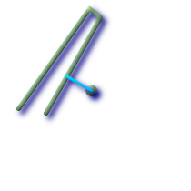 ポイントとラインストリングの最短ライン
SELECT ST_AsText(
ST_ShortestLine('POINT(100 100)'::geometry,
'LINESTRING (20 80, 98 190, 110 180, 50 75 )'::geometry)
) As sline;
sline
-----------------
LINESTRING(100 100,73.0769230769231 115.384615384615)
| 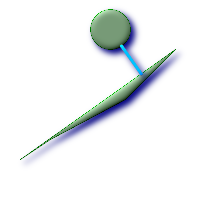 ポリゴンとポリゴンの最短ライン
SELECT ST_AsText(
ST_ShortestLine(
ST_GeomFromText('POLYGON((175 150, 20 40, 50 60, 125 100, 175 150))'),
ST_Buffer(ST_GeomFromText('POINT(110 170)'), 20)
)
) As slinewkt;
LINESTRING(140.752120669087 125.695053378061,121.111404660392 153.370607753949)
|
名前
ST_Touches —
ジオメトリが共通のポイントを少なくとも一つ持ち，内部でインタセクトしない場合に，TRUEを返します．
概要
boolean ST_Touches(geometry
g1, geometry
g2);
説明
g1とg2の共通部分のポイントがg1とg2の境界の結合上にある場合は，TRUEを返します．
ST_Touchesは，Area/Area, Line/Line, Line/Area, Point/Area, Point/Lineの全てを受け付けますが，Point/Pointは受け付けません．
数学用語で言うと，この述語は次のように表現されます．
TODO: Insert appropriate MathML markup here or use a gif. Simple HTML markup does not work well in both IE and Firefox.

二つのジオメトリに対して許されるDE-9IMは次のようになります．
FT*******
F**T*****
F***T****
| |
|
| |
この関数は，ジオメトリ上で使用可能なインデクスを使うバウンディングボックス比較を自動的に取り込みます．インデクスの使用を避けるには， |
このメソッドは OpenGIS Simple Features Implementation Specification for SQL 1.1.を実装するものです． s2.1.1.2 // s2.1.13.3
このメソッドはSQL/MM仕様の実装です． SQL-MM 3: 5.1.28
例
次に示す図全てで，ST_TouchesはTRUEを返します．
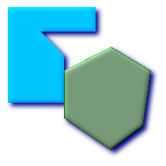
| 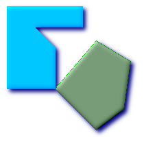
|
|
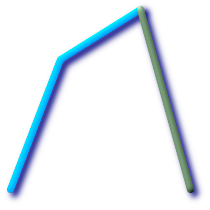
|
| 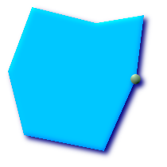
|
SELECT ST_Touches('LINESTRING(0 0, 1 1, 0 2)'::geometry, 'POINT(1 1)'::geometry);
st_touches
------------
f
(1 row)
SELECT ST_Touches('LINESTRING(0 0, 1 1, 0 2)'::geometry, 'POINT(0 2)'::geometry);
st_touches
------------
t
(1 row)名前
ST_Within — ジオメトリAが完全にジオメトリBの内側にある場合にTRUEを返します．
概要
boolean ST_Within(geometry
A, geometry
B);
説明
ジオメトリAが完全にジオメトリBの内側にある場合にTRUEを返します．この関数が意味のあるものにするためには，元のジオメトリは同じ投影座標である，同じSRIDを持っている必要があります．ST_Within(A,B)がTRUEかつST_Within(B,A)がTRUEである場合には，二つのジオメトリは空間的に同じであると考えられます．
GEOSモジュールで実現しています．
| |
|
| |
この関数を不正なジオメトリで呼ばないでください．予期しない結果が返されます． |
この関数は，ジオメトリ上で使用可能なインデクスを使うバウンディングボックス比較を自動的に取り込みます．インデクスの使用を避けるには，_ST_Within関数を使います．
ご注意: これは論理値を返して整数を返さないのが「許される」版です．
このメソッドは OpenGIS Simple Features Implementation Specification for SQL 1.1.を実装するものです． s2.1.1.2 // s2.1.13.3
- a.Relate(b, 'T*F**F***')
このメソッドはSQL/MM仕様の実装です． SQL-MM 3: 5.1.30
例
--円の中にある円
SELECT ST_Within(smallc,smallc) As smallinsmall,
ST_Within(smallc, bigc) As smallinbig,
ST_Within(bigc,smallc) As biginsmall,
ST_Within(ST_Union(smallc, bigc), bigc) as unioninbig,
ST_Within(bigc, ST_Union(smallc, bigc)) as biginunion,
ST_Equals(bigc, ST_Union(smallc, bigc)) as bigisunion
FROM
(
SELECT ST_Buffer(ST_GeomFromText('POINT(50 50)'), 20) As smallc,
ST_Buffer(ST_GeomFromText('POINT(50 50)'), 40) As bigc) As foo;
--Result
smallinsmall | smallinbig | biginsmall | unioninbig | biginunion | bigisunion
--------------+------------+------------+------------+------------+------------
t | t | f | t | t | t
(1 row)

- ST_Buffer — (T) ジオメトリ: このジオメトリからの距離が指定された距離以下となるポイント全てを表現するジオメトリを返します．計算は，ジオメトリの空間参照系で行われます．ジオグラフィ: 平面変換ラッパを使います．形状制御のために異なる終端キャップと継ぎ目の設定のサポートが1.5で導入されました．buffer_styleオプションは，quad_segs=#,endcap=round|flat|square,join=round|mitre|bevel,mitre_limit=#.# となります．
- ST_BuildArea — 与えられたジオメトリの構成ラインから面積を持つジオメトリを生成します．
- ST_Collect — 他のジオメトリのコレクションから，指定したST_Geometry値を返します．
- ST_ConvexHull — 凸包(convex hull)は与えられた集合の全てのジオメトリを含む最小の閉じた凸ジオメトリです．
- ST_CurveToLine — CIRCULARSTRING/CURVEPOLYGONとLINESTRING/POLYGONに変換します．
- ST_Difference — ジオメトリBにインタセクトしないジオメトリAの部分を表現するジオメトリを返します．
- ST_Dump — ジオメトリg1から作られたgeometry_dump(geom, path)行の集合を返します．
- ST_DumpPoints — ジオメトリを作る全ての点のgometry_dump(geom,path)行の集合を返します．
- ST_DumpRings —
ポリゴンの外環と内環を表す
gometry_dump行の集合を返します． - ST_Intersection — (T) geomAとgeomBの共有部分を表すジオメトリを返します．ジオグラフィ実装では，インタセクトするためにジオメトリに変換して，WGS84に戻します．
- ST_LineToCurve — LINESTRING/POLYGONをCIRCULARSTRINGとCURVED POLYGONに変換します．
- ST_MemUnion — ST_Unionと同じですが，メモリフレンドリ(少ないメモリ使用，多いCPU時間)です．
- ST_MinimumBoundingCircle — ジオメトリを完全に含む最小の円ポリゴンを返します．デフォルトでは，四分の一円に対して48区分を使用します．
- ST_Polygonize — 集計関数．ジオメトリの集合のラインから形成されうるポリゴンを含むジオメトリコレクションを生成します．
- ST_Shift_Longitude — ジオメトリの全てのフィーチャーの全ての構成要素の全てのポイント/バーテックを読み，経度が0未満なら360を足します．結果は，180度を中心としたマップにプロットされる0度から360度にあるデータとなります．
- ST_Simplify — 与えられたジオメトリを「簡略化」したものを返します．Douglas-Peukerを使用します．
- ST_SimplifyPreserveTopology — 与えられたジオメトリを「簡略化」したものを返します．Douglas-Peukerを使用します．不正な派生ジオメトリ(特にポリゴン)を回避します．
- ST_SymDifference — AとBの，インタセクトしていない部分を表現するジオメトリを返します．対称と呼ばれるのは，ST_SymDifference(A,B) = ST_SymDifference(B,A) となるからです．
- ST_Union — ジオメトリ結合の点集合を表現するジオメトリを返します．
名前
ST_Buffer — (T) ジオメトリ: このジオメトリからの距離が指定された距離以下となるポイント全てを表現するジオメトリを返します．計算は，ジオメトリの空間参照系で行われます．ジオグラフィ: 平面変換ラッパを使います．形状制御のために異なる終端キャップと継ぎ目の設定のサポートが1.5で導入されました．buffer_styleオプションは，quad_segs=#,endcap=round|flat|square,join=round|mitre|bevel,mitre_limit=#.# となります．
概要
geometry ST_Buffer(geometry g1, float radius_of_buffer);
geometry ST_Buffer(geometry g1, float radius_of_buffer, integer num_seg_quarter_circle);
geometry ST_Buffer(geometry g1, float radius_of_buffer, text buffer_style_parameters);
geography ST_Buffer(geography g1, float radius_of_buffer_in_meters);
説明
このジオメトリ/ジオグラフィからの距離が指定された距離以下となるポイント全てを表現するジオメトリ/ジオグラフィを返します．
ジオメトリ: 計算は，ジオメトリの空間参照系で行われます．形状制御のために異なる終端キャップと継ぎ目の設定のサポートが1.5で導入されました．
| |
ジオグラフィ: ジオメトリ実装にかぶさる，薄いラッパです．ジオグラフィオブジェクトのバウンディングボックスに最適なSRIDを決定し(UTMが望ましいですが，ランベルト正積方位図法(北/南)，最悪のシナリオでメルカトルに頼ります)，その平面でバッファを生成し，WGS84ジオグラフィに戻します． |
ジオグラフィでは，オブジェクトが二つのUTMゾーンをまたいだり，日付変更線をまたぐような，相当に大きい場合には，予期した通りの動作をないかも知れません．
初出バージョン: 1.5 - ST_Bufferが異なる終端と継ぎ目の型をサポートするよう強化されました．たとえば，道路ラインストリングを，丸の代わりに平坦や四角形の終端を持つ道路ポリゴンに変換するのに便利です．ジオグラフィ用の薄いラッパが追加されました．- 最新のジオメトリ機能の利点を得るにはGEOS >= 3.2が必要です．
第三引数(現在ジオメトリしか適用できません)で，四分の1円に近づけるための区分数を指定でき(整数の場合，デフォルトは8です)，また，空白区切りのkey=valueペア(文字列の場合)を，次に示す操作として指定することができます．
- 'quad_segs=#' : 四分の1円に近づけるための区分数(デフォルトは8)．
- 'endcap=round|flat|square' : 終端スタイル(デフォルトは"round"(丸)，異なる値を指定するにはGEOS-3.2以上が必要). 'butt'は'flat'の同義語として受け付けられます．
- 'join=round|mitre|bevel' : 継ぎ目スタイル(デフォルトは"round"(丸)，異なる値を指定するにはGEOS-3.2以上が必要)．'miter'は'mitre'(マイター)の同義語として受け付けられます．
- 'mitre_limit=#.#' : マイターの割合制限(継ぎ目スタイルがmitreの場合のみ)．同義語として'miter_limit'も受け付けられます．
半径の単位は空間参照系の単位です．
入力は，ポイント，マルチポイント，ラインストリング，マルチラインストリング，ポリゴン，マルチポリゴン，ジオメトリコレクションが可能です．
| |
この関数は三次元(Z軸)は無視し，三次元ジオメトリが与えられても，常に二次元バッファを返します． |
GEOSモジュールで実現しています
このメソッドは OpenGIS Simple Features Implementation Specification for SQL 1.1.を実装するものです． s2.1.1.3
このメソッドはSQL/MM仕様の実装です． SQL-MM 3: 5.1.17
| |
この関数を半径探索に使おうとして失敗する人がいらっしゃいます．バッファを生成して半径探索に使うのと遅いし無意味です．ST_DWithinを使います． |
例
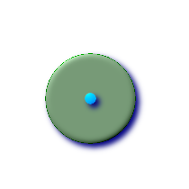 quad_segs=8 (default)
SELECT ST_Buffer(
ST_GeomFromText('POINT(100 90)'),
50, 'quad_segs=8');
| 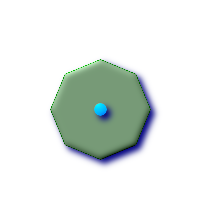 quad_segs=2 (lame)
SELECT ST_Buffer(
ST_GeomFromText('POINT(100 90)'),
50, 'quad_segs=2');
| |
endcap=round join=round (default)
SELECT ST_Buffer( ST_GeomFromText( 'LINESTRING(50 50,150 150,150 50)' ), 10, 'endcap=round join=round');
| endcap=square
SELECT ST_Buffer( ST_GeomFromText( 'LINESTRING(50 50,150 150,150 50)' ), 10, 'endcap=square join=round');
| endcap=flat
SELECT ST_Buffer( ST_GeomFromText( 'LINESTRING(50 50,150 150,150 50)' ), 10, 'endcap=flat join=round');
|
join=bevel
SELECT ST_Buffer( ST_GeomFromText( 'LINESTRING(50 50,150 150,150 50)' ), 10, 'join=bevel');
| join=mitre mitre_limit=5.0 (default mitre limit)
SELECT ST_Buffer( ST_GeomFromText( 'LINESTRING(50 50,150 150,150 50)' ), 10, 'join=mitre mitre_limit=5.0');
| join=mitre mitre_limit=1
SELECT ST_Buffer( ST_GeomFromText( 'LINESTRING(50 50,150 150,150 50)' ), 10, 'join=mitre mitre_limit=1.0');
|
--近似円バッファ
--一つ目は近似を強制するバッファされた点(ダイアグラム参照)
--二つ目は円にポイント二つは八辺のポリゴン(ダイアグラム参照)
SELECT ST_NPoints(ST_Buffer(ST_GeomFromText('POINT(100 90)'), 50)) As promisingcircle_pcount,
ST_NPoints(ST_Buffer(ST_GeomFromText('POINT(100 90)'), 50, 2)) As lamecircle_pcount;
promisingcircle_pcount | lamecircle_pcount
------------------------+-------------------
33 | 9
--明るいが不十分な円
--四分の一円で二点だけの八角形です．
--次に示すのは100メートルの八角形です．
--座標系は，メートル単位マサチューセッツ州平面に変換した
--NAD 83経度緯度で，メートルでバッファを取っています．
SELECT ST_AsText(ST_Buffer(
ST_Transform(
ST_SetSRID(ST_MakePoint(-71.063526, 42.35785),4269), 26986)
,100,2)) As octagon;
----------------------
POLYGON((236057.59057465 900908.759918696,236028.301252769 900838.049240578,235
957.59057465 900808.759918696,235886.879896532 900838.049240578,235857.59057465
900908.759918696,235886.879896532 900979.470596815,235957.59057465 901008.759918
696,236028.301252769 900979.470596815,236057.59057465 900908.759918696))
--バッファはしばしば手軽なポリゴン訂正に使われ，時々速い結合に使われます．
--時々不正なポリゴンを訂正できます - 下の例で使っています．
--この使い方はどれにでも使えますが，ポリゴンが空ジオメトリになります．
--また，ジオメトリコレクションではポリゴンでないコレクションは切られます．
--手軽なポリゴン訂正は次の通りです．
SELECT ST_IsValid(foo.invalidpoly) as isvalid, ST_IsValid(ST_Buffer(foo.invalidpoly,0.0)) as bufferisvalid,
ST_AsText(ST_Buffer(foo.invalidpoly,0.0)) As newpolytextrep
FROM (SELECT ST_GeomFromText('POLYGON((-1 2, 3 4, 5 6, -1 2, 5 6, -1 2))') as invalidpoly) As foo
NOTICE: Self-intersection at or near point -1 2
isvalid | bufferisvalid | newpolytextrep
---------+---------------+------------------------------
f | t | POLYGON((-1 2,5 6,3 4,-1 2))
--手軽なポリゴン結合
SELECT ST_AsText(the_geom) as textorig, ST_AsText(ST_Buffer(foo.the_geom,0.0)) As textbuffer
FROM (SELECT ST_Collect('POLYGON((-1 2, 3 4, 5 6, -1 2))', 'POLYGON((-1 2, 2 3, 5 6, -1 2))') As the_geom) as foo;
textorig | textbuffer
-----------------------------------------------------------+--------------------
MULTIPOLYGON(((-1 2,3 4,5 6,-1 2)),((-1 2,2 3,5 6,-1 2))) | POLYGON((-1 2,5 6,3 4,2 3,-1 2))
名前
ST_BuildArea — 与えられたジオメトリの構成ラインから面積を持つジオメトリを生成します．
概要
geometry ST_BuildArea(geometry A);
説明
与えられたジオメトリの構成ラインで掲載される，面積を持つジオメトリを生成します． 返り値の型はポリゴンまたはマルチポリゴンで，入力に依存します． 入力ラインがポリゴンを形成しない場合はNULLが返ります． 入力はラインストリング，マルチラインストリング，ポリゴン，マルチポリゴン，ジオメトリコレクションです．
この関数は全ての内部ジオメトリが穴を表現すると仮定します．
初出バージョン: 1.1.0 - GEOS >= 2.1.0が必要です．
例
ドーナツを生成します．
SELECT ST_BuildArea(ST_Collect(smallc,bigc))
FROM (SELECT
ST_Buffer(
ST_GeomFromText('POINT(100 90)'), 25) As smallc,
ST_Buffer(ST_GeomFromText('POINT(100 90)'), 50) As bigc) As foo;
|
円内にとがったものの先で，裂け目を生成します．
SELECT ST_BuildArea(ST_Collect(line,circle))
FROM (SELECT
ST_Buffer(
ST_MakeLine(ST_MakePoint(10, 10),ST_MakePoint(190, 190)),
5) As line,
ST_Buffer(ST_GeomFromText('POINT(100 90)'), 50) As circle) As foo;
--this creates the same gaping hole
--but using linestrings instead of polygons
SELECT ST_BuildArea(
ST_Collect(ST_ExteriorRing(line),ST_ExteriorRing(circle))
)
FROM (SELECT ST_Buffer(
ST_MakeLine(ST_MakePoint(10, 10),ST_MakePoint(190, 190))
,5) As line,
ST_Buffer(ST_GeomFromText('POINT(100 90)'), 50) As circle) As foo;
|
名前
ST_Collect — 他のジオメトリのコレクションから，指定したST_Geometry値を返します．
概要
geometry ST_Collect(geometry set g1field);
geometry ST_Collect(geometry g1, geometry g2);
geometry ST_Collect(geometry[] g1_array);
説明
出力型はMULTI系またはジオメトリコレクションです．二つの形式があります． 一つ目は，二つのジオメトリをまとめるものです．二つ目は，ジオメトリの集合を取って単一のST_Geometryにまとめる集計関数です．
集計関数版: この関数は，ジオメトリの集合からジオメトリコレクションまたはMULTI系を返します． ST_Collect()関数はPostgreSQL用語で言うところの「集計関数」です．SUM()やMEAN()と同じ方法でデータ行での操作を行うことを意味します．たとえば，"SELECT ST_Collect(GEOM) FROM GEOMTABLE GROUP BY ATTRCOLUMN"はATTRCOLUMNの異なった値ごとに，別々のジオメトリコレクションを返します．
非集計関数版: この関数は，二つの入力ジオメトリをまとめたジオメトリを返します．出力型はMULTI系またはジオメトリコレクションです．
| |
ST_CollectとST_Unionはしばしば交換して使うことができます． ST_Collectはバウンダリを更新しようとしないので，一般的にST_Unionよりも桁違いに早く動きます． ST_Collectは，単に，シングルジオメトリをMULTI系ジオメトリに巻き込み，MULTI系ジオメトリまたはジオメトリ型混在の集合をジオメトリコレクションに巻き込む，ということを行っているだけです．不幸なことに，GISツールはジオメトリコレクションを十分にサポートしていません．MULTI系ジオメトリを集める時にST_Collectがジオメトリコレクションを返すのを防ぐために，次に示すように，ST_DumpでMULTI系ジオメトリをシングル系ジオメトリに展開したうえで再グループ化するというトリックを使うことができます． |
初出バージョン: 1.4.0 - ST_Collect(geometry)が導入されました．ST_Collectがより多くのジオメトリをより早く扱えるよう強化されました．
この関数は三次元をサポートします．Zインデクスを削除しません．
このメソッドは曲線ストリングと曲線をサポートします． ただし，マルチカーブまたはMULTI系は期待するように返ることはなく，PostGISは現在のところこれらをサポートしていません．
例
集計関数の例
Thread ref: http://postgis.refractions.net/pipermail/postgis-users/2008-June/020331.html SELECT stusps, ST_Multi(ST_Collect(f.the_geom)) as singlegeom FROM (SELECT stusps, (ST_Dump(the_geom)).geom As the_geom FROM somestatetable ) As f GROUP BY stusps
Non-Aggregate example
Thread ref: http://postgis.refractions.net/pipermail/postgis-users/2008-June/020331.html
SELECT ST_AsText(ST_Collect(ST_GeomFromText('POINT(1 2)'),
ST_GeomFromText('POINT(-2 3)') ));
st_astext
----------
MULTIPOINT(1 2,-2 3)
--Collect 2 d points
SELECT ST_AsText(ST_Collect(ST_GeomFromText('POINT(1 2)'),
ST_GeomFromText('POINT(1 2)') ) );
st_astext
----------
MULTIPOINT(1 2,1 2)
--Collect 3d points
SELECT ST_AsEWKT(ST_Collect(ST_GeomFromEWKT('POINT(1 2 3)'),
ST_GeomFromEWKT('POINT(1 2 4)') ) );
st_asewkt
-------------------------
MULTIPOINT(1 2 3,1 2 4)
--Example with curves
SELECT ST_AsText(ST_Collect(ST_GeomFromText('CIRCULARSTRING(220268 150415,220227 150505,220227 150406)'),
ST_GeomFromText('CIRCULARSTRING(220227 150406,2220227 150407,220227 150406)')));
st_astext
------------------------------------------------------------------------------------
GEOMETRYCOLLECTION(CIRCULARSTRING(220268 150415,220227 150505,220227 150406),
CIRCULARSTRING(220227 150406,2220227 150407,220227 150406))
--New ST_Collect array construct
SELECT ST_Collect(ARRAY(SELECT the_geom FROM sometable));
SELECT ST_AsText(ST_Collect(ARRAY[ST_GeomFromText('LINESTRING(1 2, 3 4)'),
ST_GeomFromText('LINESTRING(3 4, 4 5)')])) As wktcollect;
--wkt collect --
MULTILINESTRING((1 2,3 4),(3 4,4 5))
名前
ST_ConvexHull — 凸包(convex hull)は与えられた集合の全てのジオメトリを含む最小の閉じた凸ジオメトリです．
概要
geometry ST_ConvexHull(geometry geomA);
説明
凸包(convex hull)は与えられた集合の全てのジオメトリを含む最小の閉じた凸ジオメトリです．
凸包は，ジオメトリの集合に輪ゴムをかけて得られるジオメトリと見ることができます． これは縮小包みという点では似ている凹包(concave hull)と異なります(凹包はサポートされていません)．
通常はMULTI系まはたジオメトリカラムを使いますが，集計関数ではありません - ST_Collectと併用してST_ConvexHull(ST_Collect(somepointfield))とすると，ポイントの集合の凸包を得ることができます．
ポイント観察の集合を基にして，影響を受けた範囲を決定するのに使用します．
GEOSモジュールで実現しています
このメソッドは OpenGIS Simple Features Implementation Specification for SQL 1.1.を実装するものです． s2.1.1.3
このメソッドはSQL/MM仕様の実装です． SQL-MM 3: 5.1.16
この関数は三次元をサポートします．Zインデクスを削除しません．
例
--ポイント観察に基づいて，感染域の推定を得る SELECT d.disease_type, ST_ConvexHull(ST_Collect(d.the_geom)) As the_geom FROM disease_obs As d GROUP BY d.disease_type;
マルチラインストリングとマルチポイントとその凸包
SELECT ST_AsText(ST_ConvexHull(
ST_Collect(
ST_GeomFromText('MULTILINESTRING((100 190,10 8),(150 10, 20 30))'),
ST_GeomFromText('MULTIPOINT(50 5, 150 30, 50 10, 10 10)')
)) );
---st_astext--
POLYGON((50 5,10 8,10 10,100 190,150 30,150 10,50 5))
名前
ST_CurveToLine — CIRCULARSTRING/CURVEPOLYGONとLINESTRING/POLYGONに変換します．
概要
geometry ST_CurveToLine(geometry curveGeom);
geometry ST_CurveToLine(geometry curveGeom, integer segments_per_qtr_circle);
説明
CIRCULARSTRING/CURVEPOLYGONとLINESTRING/POLYGONに変換します．CIRCULARSTRING型をサポートしないデバイスへの出力に便利です．
与えられたジオメトリを線型ジオメトリに変換します． それぞれの曲線ジオメトリまたはその区分は四分の一円ごとに32区分をデフォルトとする線型の近似に変換します．
初出バージョン: 1.2.2?
このメソッドは OpenGIS Simple Features Implementation Specification for SQL 1.1.を実装するものです．
このメソッドはSQL/MM仕様の実装です． SQL-MM 3: 7.1.7
この関数は三次元をサポートします．Zインデクスを削除しません．
このメソッドは曲線ストリングと曲線をサポートします．
例
SELECT ST_AsText(ST_CurveToLine(ST_GeomFromText('CIRCULARSTRING(220268 150415,220227 150505,220227 150406)')));
--Result --
LINESTRING(220268 150415,220269.95064912 150416.539364228,220271.823415575 150418.17258804,220273.613787707 150419.895736857,
220275.317452352 150421.704659462,220276.930305234 150423.594998003,220278.448460847 150425.562198489,
220279.868261823 150427.60152176,220281.186287736 150429.708054909,220282.399363347 150431.876723113,
220283.50456625 150434.10230186,220284.499233914 150436.379429536,220285.380970099 150438.702620341,220286.147650624 150441.066277505,
220286.797428488 150443.464706771,220287.328738321 150445.892130112,220287.740300149 150448.342699654,
220288.031122486 150450.810511759,220288.200504713 150453.289621251,220288.248038775 150455.77405574,
220288.173610157 150458.257830005,220287.977398166 150460.734960415,220287.659875492 150463.199479347,
220287.221807076 150465.64544956,220286.664248262 150468.066978495,220285.988542259 150470.458232479,220285.196316903 150472.81345077,
220284.289480732 150475.126959442,220283.270218395 150477.39318505,220282.140985384 150479.606668057,
220280.90450212 150481.762075989,220279.5637474 150483.85421628,220278.12195122 150485.87804878,
220276.582586992 150487.828697901,220274.949363179 150489.701464356,220273.226214362 150491.491836488,
220271.417291757 150493.195501133,220269.526953216 150494.808354014,220267.559752731 150496.326509628,
220265.520429459 150497.746310603,220263.41389631 150499.064336517,220261.245228106 150500.277412127,
220259.019649359 150501.38261503,220256.742521683 150502.377282695,220254.419330878 150503.259018879,
220252.055673714 150504.025699404,220249.657244448 150504.675477269,220247.229821107 150505.206787101,
220244.779251566 150505.61834893,220242.311439461 150505.909171266,220239.832329968 150506.078553494,
220237.347895479 150506.126087555,220234.864121215 150506.051658938,220232.386990804 150505.855446946,
220229.922471872 150505.537924272,220227.47650166 150505.099855856,220225.054972724 150504.542297043,
220222.663718741 150503.86659104,220220.308500449 150503.074365683,
220217.994991777 150502.167529512,220215.72876617 150501.148267175,
220213.515283163 150500.019034164,220211.35987523 150498.7825509,
220209.267734939 150497.441796181,220207.243902439 150496,
220205.293253319 150494.460635772,220203.420486864 150492.82741196,220201.630114732 150491.104263143,
220199.926450087 150489.295340538,220198.313597205 150487.405001997,220196.795441592 150485.437801511,
220195.375640616 150483.39847824,220194.057614703 150481.291945091,220192.844539092 150479.123276887,220191.739336189 150476.89769814,
220190.744668525 150474.620570464,220189.86293234 150472.297379659,220189.096251815 150469.933722495,
220188.446473951 150467.535293229,220187.915164118 150465.107869888,220187.50360229 150462.657300346,
220187.212779953 150460.189488241,220187.043397726 150457.710378749,220186.995863664 150455.22594426,
220187.070292282 150452.742169995,220187.266504273 150450.265039585,220187.584026947 150447.800520653,
220188.022095363 150445.35455044,220188.579654177 150442.933021505,220189.25536018 150440.541767521,
220190.047585536 150438.18654923,220190.954421707 150435.873040558,220191.973684044 150433.60681495,
220193.102917055 150431.393331943,220194.339400319 150429.237924011,220195.680155039 150427.14578372,220197.12195122 150425.12195122,
220198.661315447 150423.171302099,220200.29453926 150421.298535644,220202.017688077 150419.508163512,220203.826610682 150417.804498867,
220205.716949223 150416.191645986,220207.684149708 150414.673490372,220209.72347298 150413.253689397,220211.830006129 150411.935663483,
220213.998674333 150410.722587873,220216.22425308 150409.61738497,220218.501380756 150408.622717305,220220.824571561 150407.740981121,
220223.188228725 150406.974300596,220225.586657991 150406.324522731,220227 150406)
--三次元の例
SELECT ST_AsEWKT(ST_CurveToLine(ST_GeomFromEWKT('CIRCULARSTRING(220268 150415 1,220227 150505 2,220227 150406 3)')));
Output
------
LINESTRING(220268 150415 1,220269.95064912 150416.539364228 1.0181172856673,
220271.823415575 150418.17258804 1.03623457133459,220273.613787707 150419.895736857 1.05435185700189,....AD INFINITUM ....
220225.586657991 150406.324522731 1.32611114201132,220227 150406 3)
--二つの区分だけで四分の一円を近似
SELECT ST_AsText(ST_CurveToLine(ST_GeomFromText('CIRCULARSTRING(220268 150415,220227 150505,220227 150406)'),2));
st_astext
------------------------------
LINESTRING(220268 150415,220287.740300149 150448.342699654,220278.12195122 150485.87804878,
220244.779251566 150505.61834893,220207.243902439 150496,220187.50360229 150462.657300346,
220197.12195122 150425.12195122,220227 150406)
名前
ST_Difference — ジオメトリBにインタセクトしないジオメトリAの部分を表現するジオメトリを返します．
概要
geometry ST_Difference(geometry geomA, geometry geomB);
説明
ジオメトリBにインタセクトしないジオメトリAの部分を表現するジオメトリを返します．これは，ジオメトリA-ST_Intersection(A,B)と見ることができます．Aが完全にBに含まれる場合に，空ジオメトリコレクションが返されます．
| |
順序の問題に注意が必要です．B-Aでは常にBの部分が返ります． |
GEOSモジュールで実現しています
| |
ジオメトリコレクションを引数として呼ばないでください． |
このメソッドは OpenGIS Simple Features Implementation Specification for SQL 1.1.を実装するものです． s2.1.1.3
このメソッドはSQL/MM仕様の実装です． SQL-MM 3: 5.1.20
この関数は三次元をサポートします．Zインデクスを削除しません． ただし，差を取ってZインデクスを戻す時に，X Yのみ考慮に入れたように見えます．
例
|
元のラインストリングと一緒に表示
|
二つのラインストリングの差
|
--二次元では安全です．これは同じST_SymDifferenceで示したのと同じジオメトリです．
SELECT ST_AsText(
ST_Difference(
ST_GeomFromText('LINESTRING(50 100, 50 200)'),
ST_GeomFromText('LINESTRING(50 50, 50 150)')
)
);
st_astext
---------
LINESTRING(50 150,50 200)
--三次元では正しく動作しない
SELECT ST_AsEWKT(ST_Difference(ST_GeomFromEWKT('MULTIPOINT(-118.58 38.38 5,-118.60 38.329 6,-118.614 38.281 7)'), ST_GeomFromEWKT('POINT(-118.614 38.281 5)')));
st_asewkt
---------
MULTIPOINT(-118.6 38.329 6,-118.58 38.38 5)
名前
ST_Dump — ジオメトリg1から作られたgeometry_dump(geom, path)行の集合を返します．
概要
geometry_dump[]ST_Dump(geometry g1);
説明
これは集合を返す関数(SRF)です．ジオメトリ(geom)と整数配列(path)からなるgeometry_dump行を返します． 入力ジオメトリが単純型(POINT,LINESTRING,POLYGON)の場合は，単一の行で返り，pathには空配列，geomには入力ジオメトリが入ります．入力ジオメトリがジオメトリコレクションまたはMULTI系の場合は，要素ごとの行で返り，pathはコレクション内の要素位置を表します．
ST_Dumpはジオメトリを拡張するのに便利です．新しい行を作る点では，GROUP BYの逆です．たとえば，MULTIPOLYGONをPOLYGON内に拡張するために使われます．
初出バージョン: PostGIS 1.0.0RC1, PostgreSQL 7.3以上が必要です．
| |
1.3.4より前では，この関数は曲線が含まれるジオメトリで使うとクラッシュしました．これは1.3.4以上で訂正されています． |
この関数は三次元をサポートします．Zインデクスを削除しません．
このメソッドは曲線ストリングと曲線をサポートします．
例
SELECT sometable.field1, sometable.field1,
(ST_Dump(sometable.the_geom)).geom AS the_geom
FROM sometable;
--複合曲線をLINESTRINGとCIRCULARSTRINGに分ける
SELECT ST_AsEWKT(a.geom), ST_HasArc(a.geom)
FROM ( SELECT (ST_Dump(p_geom)).geom AS geom
FROM (SELECT ST_GeomFromEWKT('COMPOUNDCURVE(CIRCULARSTRING(0 0, 1 1, 1 0),(1 0, 0 1))') AS p_geom) AS b
) AS a;
st_asewkt | st_hasarc
-----------------------------+----------
CIRCULARSTRING(0 0,1 1,1 0) | t
LINESTRING(1 0,0 1) | f
(2 rows)名前
ST_DumpPoints — ジオメトリを作る全ての点のgometry_dump(geom,path)行の集合を返します．
概要
geometry_dump[]ST_DumpPoints(geometry geom);
説明
この，集合を返す関数(SRF)は，ジオメトリ(geom)と整数配列(path)で作られるgeometry_dump行を返します．
geometry_dumpのgeom要素は全て，与えられたジオメトリを作るPOINTです．
geometry_dumpのpath要素(an integer[])は，与えられたジオメトリのPOINTを列挙するインデクス参照です．
たとえば，LINESTRINGが与えられた場合に，{i}のpathが返ります．
ここで，iはLINESTRINGのn番目の座標です．
POLYGONが与えられた場合には，{i,j}のpathが返ります．
ここで，iは外環から内環に続くリングで，jはPOINTの列挙です．
初出バージョン: 1.5.0
この関数は三次元をサポートします．Zインデクスを削除しません．
このメソッドは曲線ストリングと曲線をサポートします．
例
SELECT path, ST_AsText(geom)
FROM (
SELECT (ST_DumpPoints(g.geom)).*
FROM
(SELECT
'GEOMETRYCOLLECTION(
POINT ( 0 1 ),
LINESTRING ( 0 3, 3 4 ),
POLYGON (( 2 0, 2 3, 0 2, 2 0 )),
POLYGON (( 3 0, 3 3, 6 3, 6 0, 3 0 ),
( 5 1, 4 2, 5 2, 5 1 )),
MULTIPOLYGON (
(( 0 5, 0 8, 4 8, 4 5, 0 5 ),
( 1 6, 3 6, 2 7, 1 6 )),
(( 5 4, 5 8, 6 7, 5 4 ))
)
)'::geometry AS geom
) AS g
) j;
path | st_astext
-----------+------------
{1,1} | POINT(0 1)
{2,1} | POINT(0 3)
{2,2} | POINT(3 4)
{3,1,1} | POINT(2 0)
{3,1,2} | POINT(2 3)
{3,1,3} | POINT(0 2)
{3,1,4} | POINT(2 0)
{4,1,1} | POINT(3 0)
{4,1,2} | POINT(3 3)
{4,1,3} | POINT(6 3)
{4,1,4} | POINT(6 0)
{4,1,5} | POINT(3 0)
{4,2,1} | POINT(5 1)
{4,2,2} | POINT(4 2)
{4,2,3} | POINT(5 2)
{4,2,4} | POINT(5 1)
{5,1,1,1} | POINT(0 5)
{5,1,1,2} | POINT(0 8)
{5,1,1,3} | POINT(4 8)
{5,1,1,4} | POINT(4 5)
{5,1,1,5} | POINT(0 5)
{5,1,2,1} | POINT(1 6)
{5,1,2,2} | POINT(3 6)
{5,1,2,3} | POINT(2 7)
{5,1,2,4} | POINT(1 6)
{5,2,1,1} | POINT(5 4)
{5,2,1,2} | POINT(5 8)
{5,2,1,3} | POINT(6 7)
{5,2,1,4} | POINT(5 4)
(29 rows)名前
ST_DumpRings —
ポリゴンの外環と内環を表すgometry_dump行の集合を返します．
概要
geometry_dump[] ST_DumpRings(geometry a_polygon);
説明
これは，集合を返す関数(SRF)です．それぞれ"path", "geom"に別名が付けられたinteger[], geometryとして定義されたgeometry_dump行の集合を返します．
初出バージョン: PostGIS 1.1.3 PostgreSQL 7.3以上が必要です．
| |
POLYGONジオメトリでのみ動作します．MULTIPOLYGONでは動作しません． |
この関数は三次元をサポートします．Zインデクスを削除しません．
例
SELECT sometable.field1, sometable.field1,
(ST_DumpRings(sometable.the_geom)).geom As the_geom
FROM sometableOfpolys;
SELECT ST_AsEWKT(geom) As the_geom, path
FROM ST_DumpRings(
ST_GeomFromEWKT('POLYGON((-8149064 5133092 1,-8149064 5132986 1,-8148996 5132839 1,-8148972 5132767 1,-8148958 5132508 1,-8148941 5132466 1,-8148924 5132394 1,
-8148903 5132210 1,-8148930 5131967 1,-8148992 5131978 1,-8149237 5132093 1,-8149404 5132211 1,-8149647 5132310 1,-8149757 5132394 1,
-8150305 5132788 1,-8149064 5133092 1),
(-8149362 5132394 1,-8149446 5132501 1,-8149548 5132597 1,-8149695 5132675 1,-8149362 5132394 1))')
) as foo;
path | the_geom
----------------------------------------------------------------------------------------------------------------
{0} | POLYGON((-8149064 5133092 1,-8149064 5132986 1,-8148996 5132839 1,-8148972 5132767 1,-8148958 5132508 1,
| -8148941 5132466 1,-8148924 5132394 1,
| -8148903 5132210 1,-8148930 5131967 1,
| -8148992 5131978 1,-8149237 5132093 1,
| -8149404 5132211 1,-8149647 5132310 1,-8149757 5132394 1,-8150305 5132788 1,-8149064 5133092 1))
{1} | POLYGON((-8149362 5132394 1,-8149446 5132501 1,
| -8149548 5132597 1,-8149695 5132675 1,-8149362 5132394 1))名前
ST_Intersection — (T) geomAとgeomBの共有部分を表すジオメトリを返します．ジオグラフィ実装では，インタセクトするためにジオメトリに変換して，WGS84に戻します．
概要
geometry ST_Intersection(
geometry
geomA
,
geometry
geomB
);
geography ST_Intersection(
geography
geogA
,
geography
geogB
);
説明
ジオメトリのインタセクションとなる点集合を表現するジオメトリを返します．
言い換えると，ジオメトリAとジオメトリBとで共有されている部分のことです．
ジオメトリの共有部分が無い(disjoint)場合は，空ジオメトリコレクションが返されます．
ST_IntersectionとST_Intersectsとの併用は，バウンディングボックス，バッファ，領域のクエリ等で，対象とする国または地域にあるジオメトリの部分の返ってほしいところを切り取るのに便利です．
| |
ジオグラフィ: ジオメトリ実装にかぶさる，薄いラッパです．ジオグラフィオブジェクトのバウンディングボックスに最適なSRIDを決定し(UTMが望ましいですが，ランベルト正積方位図法(北/南)，最悪のシナリオでメルカトルに頼ります)，その平面でバッファを生成し，WGS84ジオグラフィに戻します． |
| |
|
GEOSモジュールで実現しています
初出バージョン: 1.5 でジオグラフィデータ型のサポートが導入されました．
このメソッドは OpenGIS Simple Features Implementation Specification for SQL 1.1.を実装するものです． s2.1.1.3
このメソッドはSQL/MM仕様の実装です． SQL-MM 3: 5.1.18
例
SELECT ST_AsText(ST_Intersection('POINT(0 0)'::geometry, 'LINESTRING ( 2 0, 0 2 )'::geometry));
st_astext
---------------
GEOMETRYCOLLECTION EMPTY
(1 row)
SELECT ST_AsText(ST_Intersection('POINT(0 0)'::geometry, 'LINESTRING ( 0 0, 0 2 )'::geometry));
st_astext
---------------
POINT(0 0)
(1 row)
---全てのライン(trails)の，国(POLYGONまたはMUYLTIPOLYGONと仮定します)での切り取り
-- 注意: ポイントを共有するだけの未知を考慮に入れていないので，
-- LINESTRINGまたはMULTILINESTRINGを返すインタセクションを保持しているだけです．
-- ダンプを行うには，ジオメトリコレクションを個々の単一のMULTI系に拡張する必要があります．
-- 下に示す例は，かなり一般的なもので，WHERE節を変更するだけでポリゴンで動作します．
SELECT clipped.gid, clipped.f_name, clipped_geom
FROM (SELECT trails.gid, trails.f_name, (ST_Dump(ST_Intersection(country.the_geom, trails.the_geom))).geom As clipped_geom
FROM country
INNER JOIN trails
ON ST_Intersects(country.the_geom, trails.the_geom)) As clipped
WHERE ST_Dimension(clipped.clipped_geom) = 1 ;
--ポリゴンランドマークといったpolyに，空ジオメトリコレクションを返すポリゴンを除いて，
--0.0のバッファ作成という速い方法を使うこともできます．
--(ジオメトリコレクションはポリゴン，ライン，ポイントを含みます)
--0.0でのバッファ作成は，ポリゴンを残して，コレクションの殻を分解するだけです．
SELECT poly.gid, ST_Multi(ST_Buffer(
ST_Intersection(country.the_geom, poly.the_geom),
0.0)
) As clipped_geom
FROM country
INNER JOIN poly
ON ST_Intersects(country.the_geom, poly.the_geom)
WHERE Not ST_IsEmpty(ST_Buffer(ST_Intersection(country.the_geom, poly.the_geom),0.0));
名前
ST_LineToCurve — LINESTRING/POLYGONをCIRCULARSTRINGとCURVED POLYGONに変換します．
概要
geometry ST_LineToCurve(geometry geomANoncircular);
説明
LINESTRING/POLYGONをCIRCULARSTRINGとCURVED POLYGONに変換します．等価の曲線を記述するのに必要なポイントが少なくなります．
初出バージョン: 1.2.2?
この関数は三次元をサポートします．Zインデクスを削除しません．
このメソッドは曲線ストリングと曲線をサポートします．
例
SELECT ST_AsText(ST_LineToCurve(foo.the_geom)) As curvedastext,ST_AsText(foo.the_geom) As non_curvedastext
FROM (SELECT ST_Buffer('POINT(1 3)'::geometry, 3) As the_geom) As foo;
curvedatext non_curvedastext
------------------------------------------------------------------| -----------------------------------------------------------------
CURVEPOLYGON(CIRCULARSTRING(4 3,3.12132034355964 0.878679656440359, | POLYGON((4 3,3.94235584120969 2.41472903395162,3.77163859753386 1.85194970290473
1 0,-1.12132034355965 5.12132034355963,4 3)) | ,3.49440883690764 1.33328930094119,3.12132034355964 0.878679656440359,
| 2.66671069905881 0.505591163092366,2.14805029709527 0.228361402466141,
| 1.58527096604839 0.0576441587903094,1 0,
| 0.414729033951621 0.0576441587903077,-0.148050297095264 0.228361402466137,
| -0.666710699058802 0.505591163092361,-1.12132034355964 0.878679656440353,
| -1.49440883690763 1.33328930094119,-1.77163859753386 1.85194970290472
| --ETC-- ,3.94235584120969 3.58527096604839,4 3))
--3D example
SELECT ST_AsEWKT(ST_LineToCurve(ST_GeomFromEWKT('LINESTRING(1 2 3, 3 4 8, 5 6 4, 7 8 4, 9 10 4)')));
st_asewkt
------------------------------------
CIRCULARSTRING(1 2 3,5 6 4,9 10 4)
名前
ST_MemUnion — ST_Unionと同じですが，メモリフレンドリ(少ないメモリ使用，多いCPU時間)です．
概要
geometry ST_MemUnion(geometry set geomfield);
名前
ST_MinimumBoundingCircle — ジオメトリを完全に含む最小の円ポリゴンを返します．デフォルトでは，四分の一円に対して48区分を使用します．
概要
geometry ST_MinimumBoundingCircle(geometry geomA);
geometry ST_MinimumBoundingCircle(geometry geomA, integer num_segs_per_qt_circ);
説明
ジオメトリを完全に含む最小の円ポリゴンを返します．
| |
円は，デフォルトでは，四分の一円に対して48区分を使用した，近似円です．より精度良い結果を得るには，この数を増やします．ほとんどパフォーマンス上のペナルティがありません． |
しばしば，MULTI系とジオメトリコレクションで使用します．しかし，集計関数ではありません．ST_MinimumBoundingCircle(ST_Collect(somepointfield))として，ST_Collectと併用して，ジオメトリの集合の最小バウンディング円を得ます．
ポリゴンの面積を最小バウンディング円の面積で割った割合は，しばしばRoeckテストとして参照されます．
初出バージョン: 1.4.0 - GEOSが必要です．
例
SELECT d.disease_type, ST_MinimumBoundingCircle(ST_Collect(d.the_geom)) As the_geom FROM disease_obs As d GROUP BY d.disease_type;
ポイントとラインストリングの最小バウンディング円．四分の一円に対して8区分の近似円を使用．
SELECT ST_AsText(ST_MinimumBoundingCircle(
ST_Collect(
ST_GeomFromEWKT('LINESTRING(55 75,125 150)'),
ST_Point(20, 80)), 8
)) As wktmbc;
wktmbc
-----------
POLYGON((135.59714732062 115,134.384753327498 102.690357210921,130.79416296937 90.8537670908995,124.963360620072 79.9451031602111,117.116420743937 70.3835792560632,107.554896839789 62.5366393799277,96.6462329091006 56.70583703063,84.8096427890789 53.115246672502,72.5000000000001 51.9028526793802,60.1903572109213 53.1152466725019,48.3537670908996 56.7058370306299,37.4451031602112 62.5366393799276,27.8835792560632 70.383579256063,20.0366393799278 79.9451031602109,14.20583703063 90.8537670908993,10.615246672502 102.690357210921,9.40285267938019 115,10.6152466725019 127.309642789079,14.2058370306299 139.1462329091,20.0366393799275 150.054896839789,27.883579256063 159.616420743937,
37.4451031602108 167.463360620072,48.3537670908992 173.29416296937,60.190357210921 176.884753327498,
72.4999999999998 178.09714732062,84.8096427890786 176.884753327498,96.6462329091003 173.29416296937,107.554896839789 167.463360620072,
117.116420743937 159.616420743937,124.963360620072 150.054896839789,130.79416296937 139.146232909101,134.384753327498 127.309642789079,135.59714732062 115))
名前
ST_Polygonize — 集計関数．ジオメトリの集合のラインから形成されうるポリゴンを含むジオメトリコレクションを生成します．
概要
geometry ST_Polygonize(geometry set geomfield);
geometry ST_Polygonize(geometry[] geom_array);
説明
集計関数．ジオメトリの集合のラインから形成された可能なポリゴンを含むジオメトリコレクションを生成します．
| |
ジオメトリコレクションはしばしばサードパーティのツールでは扱いにくいことがあります． ST_Polygonizeを ST_Dumpと併用して，ポリゴンを個々のポリゴンにダンプします． |
初出バージョン: 1.0.0RC1 - GEOS >= 2.1.0 が必要です．
例: 単一ラインストリングのポリゴン化
SELECT ST_AsEWKT(ST_Polygonize(the_geom_4269)) As geomtextrep FROM (SELECT the_geom_4269 FROM ma.suffolk_edges ORDER BY tlid LIMIT 45) As foo; geomtextrep ------------------------------------- SRID=4269;GEOMETRYCOLLECTION(POLYGON((-71.040878 42.285678,-71.040943 42.2856,-71.04096 42.285752,-71.040878 42.285678)), POLYGON((-71.17166 42.353675,-71.172026 42.354044,-71.17239 42.354358,-71.171794 42.354971,-71.170511 42.354855, -71.17112 42.354238,-71.17166 42.353675))) (1 row) --Use ST_Dump to dump out the polygonize geoms into individual polygons SELECT ST_AsEWKT((ST_Dump(foofoo.polycoll)).geom) As geomtextrep FROM (SELECT ST_Polygonize(the_geom_4269) As polycoll FROM (SELECT the_geom_4269 FROM ma.suffolk_edges ORDER BY tlid LIMIT 45) As foo) As foofoo; geomtextrep ------------------------ SRID=4269;POLYGON((-71.040878 42.285678,-71.040943 42.2856,-71.04096 42.285752, -71.040878 42.285678)) SRID=4269;POLYGON((-71.17166 42.353675,-71.172026 42.354044,-71.17239 42.354358 ,-71.171794 42.354971,-71.170511 42.354855,-71.17112 42.354238,-71.17166 42.353675)) (2 rows)
名前
ST_Shift_Longitude — ジオメトリの全てのフィーチャーの全ての構成要素の全てのポイント/バーテックを読み，経度が0未満なら360を足します．結果は，180度を中心としたマップにプロットされる0度から360度にあるデータとなります．
概要
geometry ST_Shift_Longitude(geometry geomA);
説明
ジオメトリの全てのフィーチャーの全ての構成要素の全てのポイント/バーテックを読み，経度が0未満なら360を足します．結果は，180度を中心としたマップにプロットされる0度から360度にあるデータとなります．
| |
これは4326(WGS84経度緯度)のように経度緯度でのみ動作します． |
1.3.4より前ではMULTIPOINTでは動作しないバグがありました．1.3.4以上ではMULTIPOINTでも動作します．
この関数は三次元をサポートします．Zインデクスを削除しません．
例
--3d points
SELECT ST_AsEWKT(ST_Shift_Longitude(ST_GeomFromEWKT('SRID=4326;POINT(-118.58 38.38 10)'))) As geomA,
ST_AsEWKT(ST_Shift_Longitude(ST_GeomFromEWKT('SRID=4326;POINT(241.42 38.38 10)'))) As geomb
geomA geomB
---------- -----------
SRID=4326;POINT(241.42 38.38 10) SRID=4326;POINT(-118.58 38.38 10)
--regular line string
SELECT ST_AsText(ST_Shift_Longitude(ST_GeomFromText('LINESTRING(-118.58 38.38, -118.20 38.45)')))
st_astext
----------
LINESTRING(241.42 38.38,241.8 38.45)
名前
ST_Simplify — 与えられたジオメトリを「簡略化」したものを返します．Douglas-Peukerを使用します．
概要
geometry ST_Simplify(geometry geomA, float tolerance);
説明
与えられたジオメトリを「簡略化」したものを返します．Douglas-Peukerを使用します． (MULTI)LINEと(MULTI)POLYGONとで実際に動作をしますが，どのような種類のジオメトリでも安全に呼ぶことができます． 簡略化はオブジェクトごとの基礎で発生するので，ジオメトリコレクションで，この関数を呼ぶことができます．
| |
返されるジオメトリは単純さ(ST_IsSimple参照)を失うことがあります．トポロジを保存するにはST_SimplifyPreserveTopologyを使います． |
GEOSモジュールで実行しています
Availability: 1.2.2
例
簡略化をやりすぎて三角形になった円，八角形になる円です．
SELECT ST_Npoints(the_geom) As np_before, ST_NPoints(ST_Simplify(the_geom,0.1)) As np01_notbadcircle, ST_NPoints(ST_Simplify(the_geom,0.5)) As np05_notquitecircle,
ST_NPoints(ST_Simplify(the_geom,1)) As np1_octagon, ST_NPoints(ST_Simplify(the_geom,10)) As np10_triangle,
(ST_Simplify(the_geom,100) is null) As np100_geometrygoesaway
FROM (SELECT ST_Buffer('POINT(1 3)', 10,12) As the_geom) As foo;
-result
np_before | np01_notbadcircle | np05_notquitecircle | np1_octagon | np10_triangle | np100_geometrygoesaway
-----------+-------------------+---------------------+-------------+---------------+------------------------
49 | 33 | 17 | 9 | 4 | t
名前
ST_SimplifyPreserveTopology — 与えられたジオメトリを「簡略化」したものを返します．Douglas-Peukerを使用します．不正な派生ジオメトリ(特にポリゴン)を回避します．
概要
geometry ST_SimplifyPreserveTopology(geometry geomA, float tolerance);
説明
与えられたジオメトリを「簡略化」したものを返します．Douglas-Peukerを使用します．不正な派生ジオメトリ(特にポリゴン)を回避します．(MULTI)LINEと(MULTI)POLYGONとで実際に動作をしますが，どのような種類のジオメトリでも安全に呼ぶことができます．簡略化はオブジェクトごとの基礎で発生するので，ジオメトリコレクションで，この関数を呼ぶことができます．
GEOSモジュールで実行しています
| |
GEOS 3.0.0以上が必要です． |
初出バージョン: 1.3.3
例
Simplyfyと同じ例ですが，トポロジ保存で簡略化の行きすぎを阻止します．円は最高でも四角形になります．
SELECT ST_Npoints(the_geom) As np_before, ST_NPoints(ST_SimplifyPreserveTopology(the_geom,0.1)) As np01_notbadcircle, ST_NPoints(ST_SimplifyPreserveTopology(the_geom,0.5)) As np05_notquitecircle,
ST_NPoints(ST_SimplifyPreserveTopology(the_geom,1)) As np1_octagon, ST_NPoints(ST_SimplifyPreserveTopology(the_geom,10)) As np10_square,
ST_NPoints(ST_SimplifyPreserveTopology(the_geom,100)) As np100_stillsquare
FROM (SELECT ST_Buffer('POINT(1 3)', 10,12) As the_geom) As foo;
--result--
np_before | np01_notbadcircle | np05_notquitecircle | np1_octagon | np10_square | np100_stillsquare
-----------+-------------------+---------------------+-------------+---------------+-------------------
49 | 33 | 17 | 9 | 5 | 5
名前
ST_SymDifference — AとBの，インタセクトしていない部分を表現するジオメトリを返します．対称と呼ばれるのは，ST_SymDifference(A,B) = ST_SymDifference(B,A) となるからです．
概要
geometry ST_SymDifference(geometry geomA, geometry geomB);
説明
AとBの，インタセクトしていない部分を表現するジオメトリを返します．対称と呼ばれるのは，ST_SymDifference(A,B) = ST_SymDifference(B,A) となるからです．ST_Union(geomA,geomB) - ST_Intersection(A,B)と見ることができます．
GEOSモジュールで実現しています
| |
ジオメトリコレクションを引数として呼ばないでください． |
このメソッドは OpenGIS Simple Features Implementation Specification for SQL 1.1.を実装するものです． s2.1.1.3
このメソッドはSQL/MM仕様の実装です． SQL-MM 3: 5.1.21
この関数は三次元をサポートします．Zインデクスを削除しません． ただし，差をとってZインデクスを戻す時，X Yのみを考慮に入れているように見えます．
例
|
元のラインストリングと一緒に表示
|
二つのラインストリングの対称差
|
--Safe for 2d - symmetric difference of 2 linestrings
SELECT ST_AsText(
ST_SymDifference(
ST_GeomFromText('LINESTRING(50 100, 50 200)'),
ST_GeomFromText('LINESTRING(50 50, 50 150)')
)
);
st_astext
---------
MULTILINESTRING((50 150,50 200),(50 50,50 100))
--When used in 3d doesn't quite do the right thing
SELECT ST_AsEWKT(ST_SymDifference(ST_GeomFromEWKT('LINESTRING(1 2 1, 1 4 2)'),
ST_GeomFromEWKT('LINESTRING(1 1 3, 1 3 4)')))
st_astext
------------
MULTILINESTRING((1 3 2.75,1 4 2),(1 1 3,1 2 2.25))
名前
ST_Union — ジオメトリ結合の点集合を表現するジオメトリを返します．
概要
geometry ST_Union(geometry set g1field);
geometry ST_Union(geometry g1, geometry g2);
geometry ST_Union(geometry[] g1_array);
説明
MULTI系，単一ジオメトリ，ジオメトリコレクションのいずれでも出力されます． 二つの形式があります．一つ目では二つのジオメトリからインタセクトしている領域の無い新しいジオメトリを返します． 二つ目では，ジオメトリの集合を取り，インタセクトしている領域の無い単一のST_Geometryを返します．
集計関数版: この関数は，ジオメトリの集合から，MULTI系ジオメトリまたは非MULTI系ジオメトリを返します．ST_Union()関数は，PostgreSQL用語で言うところの「集計関数」です．SUM()やMEAN()と同じ方法でデータリストの操作を行うことを意味します．
非集計関数版: この関数は二つの入力ジオメトリの結合したジオメトリを返します．出力型はMULTI系，非MULTI系またはGEOMETRYCOLLECTIONです．
| |
ST_CollectとST_Unionはしばしば交換して使うことができます． ST_Unionはバウンダリを更新しようとするので，一般的にST_Collectよりも桁違いに遅く動きます． ST_Collectは，単に，シングルジオメトリをMULTI系ジオメトリに巻き込み，MULTI系ジオメトリまたはジオメトリ型混在の集合をジオメトリコレクションに巻き込む，ということを行っているだけです． |
GEOSモジュールで実行しています
ご注意: この関数は以前は，"Union"から改名してGeomUnion()と呼ばれていました．UNIONはSQLの予約語であるためです．
初出バージョン: 1.4.0 - ST_Unionが強化されました．ST_Union(geomarray)が導入され，また，PostgreSQL内での集計が速くなりました．GEOS 3.1.0以上を使用している場合は，ST_Unionは，http://blog.cleverelephant.ca/2009/01/must-faster-unions-in-postgis-14.htmlに記述がある，Cascaded Unionアルゴリズムを使います．
このメソッドは OpenGIS Simple Features Implementation Specification for SQL 1.1.を実装するものです． s2.1.1.3
| |
集約関数版は，OGC仕様に明示的に定義されていません． |
このメソッドはSQL/MM仕様の実装です． SQL-MM 3: 5.1.19
the z-index (elevation) when polygons are involved.
例
集約関数版の例
SELECT stusps, ST_Multi(ST_Union(f.the_geom)) as singlegeom FROM sometable As f GROUP BY stusps
Non-Aggregate example
SELECT ST_AsText(ST_Union(ST_GeomFromText('POINT(1 2)'),
ST_GeomFromText('POINT(-2 3)') ) )
st_astext
----------
MULTIPOINT(-2 3,1 2)
SELECT ST_AsText(ST_Union(ST_GeomFromText('POINT(1 2)'),
ST_GeomFromText('POINT(1 2)') ) );
st_astext
----------
POINT(1 2)
--3d example - sort of supports 3d (and with mixed dimensions!)
SELECT ST_AsEWKT(st_union(the_geom))
FROM
(SELECT ST_GeomFromEWKT('POLYGON((-7 4.2,-7.1 4.2,-7.1 4.3,
-7 4.2))') as the_geom
UNION ALL
SELECT ST_GeomFromEWKT('POINT(5 5 5)') as the_geom
UNION ALL
SELECT ST_GeomFromEWKT('POINT(-2 3 1)') as the_geom
UNION ALL
SELECT ST_GeomFromEWKT('LINESTRING(5 5 5, 10 10 10)') as the_geom ) as foo;
st_asewkt
---------
GEOMETRYCOLLECTION(POINT(-2 3 1),LINESTRING(5 5 5,10 10 10),POLYGON((-7 4.2 5,-7.1 4.2 5,-7.1 4.3 5,-7 4.2 5)));
--3d example not mixing dimensions
SELECT ST_AsEWKT(st_union(the_geom))
FROM
(SELECT ST_GeomFromEWKT('POLYGON((-7 4.2 2,-7.1 4.2 3,-7.1 4.3 2,
-7 4.2 2))') as the_geom
UNION ALL
SELECT ST_GeomFromEWKT('POINT(5 5 5)') as the_geom
UNION ALL
SELECT ST_GeomFromEWKT('POINT(-2 3 1)') as the_geom
UNION ALL
SELECT ST_GeomFromEWKT('LINESTRING(5 5 5, 10 10 10)') as the_geom ) as foo;
st_asewkt
---------
GEOMETRYCOLLECTION(POINT(-2 3 1),LINESTRING(5 5 5,10 10 10),POLYGON((-7 4.2 2,-7.1 4.2 3,-7.1 4.3 2,-7 4.2 2)))
--Examples using new Array construct
SELECT ST_Union(ARRAY(SELECT the_geom FROM sometable));
SELECT ST_AsText(ST_Union(ARRAY[ST_GeomFromText('LINESTRING(1 2, 3 4)'),
ST_GeomFromText('LINESTRING(3 4, 4 5)')])) As wktunion;
--wktunion---
MULTILINESTRING((3 4,4 5),(1 2,3 4))
- ST_Line_Interpolate_Point — 線に沿った内挿点を返します．第二引数はfloat8で0から1の区間で，そのポイントが位置するラインストリングの総延長についての割合です．
- ST_Line_Locate_Point — ラインストリング上の，与えたポイントへの最短点を，二次元長に対する割合として0から1の区間で返します．
- ST_Line_Substring — 二次元長に対する割合で示された開始位置と終了位置で切り取られた部分ラインストリングを返します．第二引数と第三引数は，float8で0から1の区間です．
- ST_Locate_Along_Measure — 指定したM値に一致する要素からなる，派生ジオメトリコレクション値を返します．ポリゴン要素はサポートしません．
- ST_Locate_Between_Measures — 指定したM値の範囲内にある要素からなる，派生ジオメトリコレクション値を返します．ポリゴン要素はサポートしません．
- ST_LocateBetweenElevations — 指定したZ値の範囲内にある要素からなる，派生ジオメトリ(コレクション)値を返します．三次元，四次元のラインストリングまたはマルチラインストリングのみをサポートします．
- ST_AddMeasure — 開始点と終了点の間の線型的にM値を内挿した派生ジオメトリを返します．ジオメトリがM軸を持たない場合は追加されます．ジオメトリがM軸を持つ場合は新しい値に上書きされます．ラインストリングとマルチラインストリングのみサポートされます．
名前
ST_Line_Interpolate_Point — 線に沿った内挿点を返します．第二引数はfloat8で0から1の区間で，そのポイントが位置するラインストリングの総延長についての割合です．
概要
geometry ST_Line_Interpolate_Point(geometry a_linestring, float a_fraction);
説明
線に沿った内挿点を返します．第一引数はラインストリングでなければなりません．第二引数はfloat8で0から1の区間で，そのポイントが位置するラインストリングの総延長に対する割合です．
ポイントに最も近いライン位置の計算についてはST_Line_Locate_Pointを参照して下さい．
| |
1.1.1から，この関数はM軸やZ軸の内挿点も(存在するなら)計算するようになりました．それより前の版では0.0となります． |
初出バージョン: 0.8.2, Z軸とM軸のサポートが1.1.1で追加されました．
この関数は三次元をサポートします．Zインデクスを削除しません．
例
ラインストリングの20%(0.20)位置の内挿点
--二次元ラインに沿った20%ポイント
SELECT ST_AsEWKT(ST_Line_Interpolate_Point(the_line, 0.20))
FROM (SELECT ST_GeomFromEWKT('LINESTRING(25 50, 100 125, 150 190)') as the_line) As foo;
st_asewkt
----------------
POINT(51.5974135047432 76.5974135047432)
--三次元線の中点
SELECT ST_AsEWKT(ST_Line_Interpolate_Point(the_line, 0.5))
FROM (SELECT ST_GeomFromEWKT('LINESTRING(1 2 3, 4 5 6, 6 7 8)') as the_line) As foo;
st_asewkt
--------------------
POINT(3.5 4.5 5.5)
--ポイントまたは他のジオメトリへの，ライン上の最短点を見つける
SELECT ST_AsText(ST_Line_Interpolate_Point(foo.the_line, ST_Line_Locate_Point(foo.the_line, ST_GeomFromText('POINT(4 3)'))))
FROM (SELECT ST_GeomFromText('LINESTRING(1 2, 4 5, 6 7)') As the_line) As foo;
st_astext
----------------
POINT(3 4)
名前
ST_Line_Locate_Point — ラインストリング上の，与えたポイントへの最短点を，二次元長に対する割合として0から1の区間で返します．
概要
float ST_Line_Locate_Point(geometry a_linestring, geometry a_point);
説明
ラインストリング上の，与えたポイントへの最短点を，二次元ラインストリングの総延長に対する割合として0から1の区間で返します．
返された位置は，ポイント(ST_Line_Interpolate_Point)または，部分ラインストリング(ST_Line_Substring)の抽出に使用することができます．
この関数は，住所番号に近づくのに便利です(訳注: 道路方式の住居表示の場合)．
初出バージョン: 1.1.0
例
--ストリートに沿った，ストリート番号の点のラフな探索です．
--なお，foo全体は住居の重心とストリートのように見えるダミーデータです．
--T_DWithInで対象とするストリートから大きく外れる住居を除外しています．
SELECT ST_AsText(house_loc) As as_text_house_loc,
startstreet_num +
CAST( (endstreet_num - startstreet_num)
* ST_Line_Locate_Point(street_line, house_loc) As integer) As street_num
FROM
(SELECT ST_GeomFromText('LINESTRING(1 2, 3 4)') As street_line,
ST_MakePoint(x*1.01,y*1.03) As house_loc, 10 As startstreet_num,
20 As endstreet_num
FROM generate_series(1,3) x CROSS JOIN generate_series(2,4) As y)
As foo
WHERE ST_DWithin(street_line, house_loc, 0.2);
as_text_house_loc | street_num
-------------------+------------
POINT(1.01 2.06) | 10
POINT(2.02 3.09) | 15
POINT(3.03 4.12) | 20
--find closest point on a line to a point or other geometry
SELECT ST_AsText(ST_Line_Interpolate_Point(foo.the_line, ST_Line_Locate_Point(foo.the_line, ST_GeomFromText('POINT(4 3)'))))
FROM (SELECT ST_GeomFromText('LINESTRING(1 2, 4 5, 6 7)') As the_line) As foo;
st_astext
----------------
POINT(3 4)
名前
ST_Line_Substring — 二次元長に対する割合で示された開始位置と終了位置で切り取られた部分ラインストリングを返します．第二引数と第三引数は，float8で0から1の区間です．
概要
geometry ST_Line_Substring(geometry a_linestring, float startfraction, float endfraction);
説明
二次元長に対する割合で示された開始位置と終了位置で切り取られた部分ラインストリングを返します．第二引数と第三引数は，float8で0から1の区間です．この関数はラインストリングでのみ動作します．マルチラインストリングで使用するには，ST_LineMargeと併用します．
'start'と'end'が同じ値を持つ場合は，ST_Line_Interpolate_Pointと等価になります．
ポイントに最も近いライン位置の計算についてはST_Line_Locate_Pointを参照して下さい．
| |
1.1.1から，この関数はM軸やZ軸の内挿点も(存在するなら)計算するようになりました．それより前の版では0.0となります． |
初出バージョン: 1.1.0, Z軸とM軸のサポートが1.1.1で追加されました．
この関数は三次元をサポートします．Zインデクスを削除しません．
例
1/3の真ん中(0.333, 0.666)のラインストリング
--Return the approximate 1/3 mid-range part of a linestring
SELECT ST_AsText(ST_Line_SubString(ST_GeomFromText('LINESTRING(25 50, 100 125, 150 190)'), 0.333, 0.666));
st_astext
------------------------------------------------------------------------------------------------
LINESTRING(69.2846934853974 94.2846934853974,100 125,111.700356260683 140.210463138888)
--次に示す例では，PostgreSQLのgenerate_series()を
--使ったwhileループに似たことを行って，
--テーブル内の全てのラインストリングを100単位の
--区分にカットしています．
--単位はSRIDの計測単位でで決まります．
--全てのジオメトリがラインストリングまたは
--隣接するマルチラインストリングで，
--100単位*10000より長いジオメトリが無いと仮定します．
--パフォーマンスを良くするために，10000を減らして，
--期待する最大区分数にあわせられます．
SELECT field1, field2, ST_Line_Substring(the_geom, 100.00*n/length,
CASE
WHEN 100.00*(n+1) < length THEN 100.00*(n+1)/length
ELSE 1
END) As the_geom
FROM
(SELECT sometable.field1, sometable.field2,
ST_LineMerge(sometable.the_geom) AS the_geom,
ST_Length(sometable.the_geom) As length
FROM sometable
) AS t
CROSS JOIN generate_series(0,10000) AS n
WHERE n*100.00/length < 1;
名前
ST_Locate_Along_Measure — 指定したM値に一致する要素からなる，派生ジオメトリコレクション値を返します．ポリゴン要素はサポートしません．
概要
geometry ST_Locate_Along_Measure(geometry ageom_with_measure, float a_measure);
説明
指定したM値に一致する要素からなる，派生ジオメトリコレクション値を返します．ポリゴン要素はサポートしません．
意味は ISO/IEC CD 13249-3:200x(E) - Text for Continuation CD Editing Meeting で決められています．
初出バージョン: 1.1.0
| |
この関数は，M要素を持つジオメトリでのみ使います． |
この関数はM座標をサポートします．
例
SELECT ST_AsEWKT(the_geom)
FROM
(SELECT ST_Locate_Along_Measure(
ST_GeomFromEWKT('MULTILINESTRINGM((1 2 3, 3 4 2, 9 4 3),
(1 2 3, 5 4 5))'),3) As the_geom) As foo;
st_asewkt
-----------------------------------------------------------
GEOMETRYCOLLECTIONM(MULTIPOINT(1 2 3,9 4 3),POINT(1 2 3))
--ジオメトリコレクションは難しいものですので，
--簡略化するためにダンプしています．
SELECT ST_AsEWKT((ST_Dump(the_geom)).geom)
FROM
(SELECT ST_Locate_Along_Measure(
ST_GeomFromEWKT('MULTILINESTRINGM((1 2 3, 3 4 2, 9 4 3),
(1 2 3, 5 4 5))'),3) As the_geom) As foo;
st_asewkt
---------------
POINTM(1 2 3)
POINTM(9 4 3)
POINTM(1 2 3)
名前
ST_Locate_Between_Measures — 指定したM値の範囲内にある要素からなる，派生ジオメトリコレクション値を返します．ポリゴン要素はサポートしません．
概要
geometry ST_Locate_Between_Measures(geometry geomA, float measure_start, float measure_end);
説明
指定したM値の範囲内にある要素からなる，派生ジオメトリコレクション値を返します．ポリゴン要素はサポートしません．
意味は ISO/IEC CD 13249-3:200x(E) - Text for Continuation CD Editing Meeting で決められています．
初出バージョン: 1.1.0
この関数はM座標をサポートします．
例
SELECT ST_AsEWKT(the_geom)
FROM
(SELECT ST_Locate_Between_Measures(
ST_GeomFromEWKT('MULTILINESTRINGM((1 2 3, 3 4 2, 9 4 3),
(1 2 3, 5 4 5))'),1.5, 3) As the_geom) As foo;
st_asewkt
-----------------------------------------------------------------
GEOMETRYCOLLECTIONM(LINESTRING(1 2 3,3 4 2,9 4 3),POINT(1 2 3))
--ジオメトリコレクションは難しいものですので，
--簡略化するためにダンプしています．
SELECT ST_AsEWKT((ST_Dump(the_geom)).geom)
FROM
(SELECT ST_Locate_Between_Measures(
ST_GeomFromEWKT('MULTILINESTRINGM((1 2 3, 3 4 2, 9 4 3),
(1 2 3, 5 4 5))'),1.5, 3) As the_geom) As foo;
st_asewkt
--------------------------------
LINESTRINGM(1 2 3,3 4 2,9 4 3)
POINTM(1 2 3)名前
ST_LocateBetweenElevations — 指定したZ値の範囲内にある要素からなる，派生ジオメトリ(コレクション)値を返します．三次元，四次元のラインストリングまたはマルチラインストリングのみをサポートします．
概要
geometry ST_LocateBetweenElevations(geometry geom_mline, float elevation_start, float elevation_end);
説明
指定したZ値の範囲内にある要素からなる，派生ジオメトリ(コレクション)値を返します．三次元，四次元のラインストリングまたはマルチラインストリングのみをサポートします．
初出バージョン: 1.4.0
この関数は三次元をサポートします．Zインデクスを削除しません．
例
SELECT ST_AsEWKT(ST_LocateBetweenElevations(
ST_GeomFromEWKT('LINESTRING(1 2 3, 4 5 6)'),2,4)) As ewelev;
ewelev
----------------------------------------------------------------
MULTILINESTRING((1 2 3,2 3 4))
SELECT ST_AsEWKT(ST_LocateBetweenElevations(
ST_GeomFromEWKT('LINESTRING(1 2 6, 4 5 -1, 7 8 9)'),6,9)) As ewelev;
ewelev
----------------------------------------------------------------
GEOMETRYCOLLECTION(POINT(1 2 6),LINESTRING(6.1 7.1 6,7 8 9))
--ジオメトリコレクションは難しいものですので，
--簡略化するためにダンプしています．
SELECT ST_AsEWKT((ST_Dump(the_geom)).geom)
FROM
(SELECT ST_LocateBetweenElevations(
ST_GeomFromEWKT('LINESTRING(1 2 6, 4 5 -1, 7 8 9)'),6,9) As the_geom) As foo;
st_asewkt
--------------------------------
POINT(1 2 6)
LINESTRING(6.1 7.1 6,7 8 9)
名前
ST_AddMeasure — 開始点と終了点の間の線型的にM値を内挿した派生ジオメトリを返します．ジオメトリがM軸を持たない場合は追加されます．ジオメトリがM軸を持つ場合は新しい値に上書きされます．ラインストリングとマルチラインストリングのみサポートされます．
概要
geometry ST_AddMeasure(geometry geom_mline, float measure_start, float measure_end);
説明
開始点と終了点の間の線型的にM値を内挿した派生ジオメトリを返します．ジオメトリがM軸を持たない場合は追加されます．ジオメトリがM軸を持つ場合は新しい値に上書きされます．ラインストリングとマルチラインストリングのみサポートされます．
初出バージョン: 1.5.0
この関数は三次元をサポートします．Zインデクスを削除しません．
例
SELECT ST_AsEWKT(ST_AddMeasure(
ST_GeomFromEWKT('LINESTRING(1 0, 2 0, 4 0)'),1,4)) As ewelev;
ewelev
--------------------------------
LINESTRINGM(1 0 1,2 0 2,4 0 4)
SELECT ST_AsEWKT(ST_AddMeasure(
ST_GeomFromEWKT('LINESTRING(1 0 4, 2 0 4, 4 0 4)'),10,40)) As ewelev;
ewelev
----------------------------------------
LINESTRING(1 0 4 10,2 0 4 20,4 0 4 40)
SELECT ST_AsEWKT(ST_AddMeasure(
ST_GeomFromEWKT('LINESTRINGM(1 0 4, 2 0 4, 4 0 4)'),10,40)) As ewelev;
ewelev
----------------------------------------
LINESTRINGM(1 0 10,2 0 20,4 0 40)
SELECT ST_AsEWKT(ST_AddMeasure(
ST_GeomFromEWKT('MULTILINESTRINGM((1 0 4, 2 0 4, 4 0 4),(1 0 4, 2 0 4, 4 0 4))'),10,70)) As ewelev;
ewelev
-----------------------------------------------------------------
MULTILINESTRINGM((1 0 10,2 0 20,4 0 40),(1 0 40,2 0 50,4 0 70))
- AddAuth — 現在のトランザクションで使われる認証トークンを追加します．
- CheckAuth — 認証トークンに基づいて行の更新と削除を拒否/許可するテーブルのトリガを生成します．
- DisableLongTransactions — ロングトランザクションサポートを無効にします．この関数によって，ロングトランザクションサポート用のメタデータテーブルが削除され，ロックチェックテーブルに付けられた全てのトリガが削除されます．
- EnableLongTransactions — ロングトランザクションサポートを有効にします．この関数によって，必要なメタデータテーブルが生成されます．このセクションにある他の関数を呼ぶ前に，一度呼ぶ必要があります．二度呼んでも構いません．
- LockRow — テーブルの指定した行についてロック/認証を設定します．
- UnlockRows — 指定した認証IDが保持するロックを全て削除します．解放されたロックの数が返されます．
このモジュールとPL/pgSQL関数は，Web Feature Service仕様で求められているロングロックをサポートします．
| |
serializable transaction levelを使わなければなりません．さもなくばロック機構が壊れます． |
名前
AddAuth — 現在のトランザクションで使われる認証トークンを追加します．
概要
boolean AddAuth(text auth_token);
説明
現在のトランザクションで使われる認証トークンを追加します．
temp_lock_have_tableという一時テーブルに現在のトランザクション識別子と認証トークンキーを作成または追加します．
初出バージョン: 1.1.3
名前
CheckAuth — 認証トークンに基づいて行の更新と削除を拒否/許可するテーブルのトリガを生成します．
概要
integer CheckAuth(text a_schema_name, text a_table_name, text a_key_column_name);
integer CheckAuth(text a_table_name, text a_key_column_name);
名前
DisableLongTransactions — ロングトランザクションサポートを無効にします．この関数によって，ロングトランザクションサポート用のメタデータテーブルが削除され，ロックチェックテーブルに付けられた全てのトリガが削除されます．
概要
text DisableLongTransactions(
名前
EnableLongTransactions — ロングトランザクションサポートを有効にします．この関数によって，必要なメタデータテーブルが生成されます．このセクションにある他の関数を呼ぶ前に，一度呼ぶ必要があります．二度呼んでも構いません．
概要
text EnableLongTransactions(
名前
LockRow — テーブルの指定した行についてロック/認証を設定します．
概要
integer LockRow(text a_schema_name, text a_table_name, text a_row_key, text an_auth_token, timestamp expire_dt);
integer LockRow(text a_table_name, text a_row_key, text an_auth_token, timestamp expire_dt);
integer LockRow(text a_table_name, text a_row_key, text an_auth_token);
説明
テーブルの指定した行についてロック/認証を設定します． <authid>は文字列値です．<expires>はタイムスタンプ値で，now()+1時間がデフォルトです．ロックされた場合は1を返し，他の場合(既に他の認証によってロックされている場合)には，0を返します．
初出バージョン: 1.1.3
- ST_Accum — 集計関数です．ジオメトリの配列を生成します．
- Box2D — ジオメトリの最大範囲を表すBOX2Dを返します．
- Box3D — ジオメトリの最大範囲を表すBOX3Dを返します．
- ST_Estimated_Extent — 与えられた空間テーブルの「見積もられた」範囲を返します．ジオメトリカラムの統計情報から見積もります．指定されていない場合は現在のスキーマが使われます．
- ST_Expand — 入力ジオメトリのバウンディングボックスから全ての方向に拡張されたバウンディングボックスを返します．倍精度浮動小数点数を使います．
- ST_Extent — ジオメトリのバウンディングボックスを返す集計関数です．
- ST_Extent3D — ジオメトリの三次元バウンディングボックスを返す集計関数です．
- Find_SRID — find_srid(<db/schema>, <table>, <column>)という書式で，指定したカラムについて，GEOMETRY_COLUMNSテーブルを探索して，SRID整数値を返します．
- ST_Mem_Size — ジオメトリが取る容量(バイト単位)を返します．
- ST_Point_Inside_Circle — ポイントジオメトリがcenter_x, center_y , radiusで定義される円内にあるかどうか
- ST_XMax — 二次元，三次元ジオメトリのバウンダリボックスのX最大値を返します．
- ST_XMin — 二次元，三次元ジオメトリのバウンダリボックスのX最小値を返します．
- ST_YMax — 二次元，三次元ジオメトリのバウンダリボックスのY最大値を返します．
- ST_YMin — 二次元，三次元ジオメトリのバウンダリボックスのY最小値を返します．
- ST_ZMax — 二次元，三次元ジオメトリのバウンダリボックスのZ最大値を返します．
- ST_ZMin — 二次元，三次元ジオメトリのバウンダリボックスのZ最小値を返します．
名前
ST_Accum — 集計関数です．ジオメトリの配列を生成します．
概要
geometry[] ST_Accum(geometry set geomfield);
例
SELECT (ST_Accum(the_geom)) As all_em, ST_AsText((ST_Accum(the_geom))[1]) As grabone,
(ST_Accum(the_geom))[2:4] as grab_rest
FROM (SELECT ST_MakePoint(a*CAST(random()*10 As integer), a*CAST(random()*10 As integer), a*CAST(random()*10 As integer)) As the_geom
FROM generate_series(1,4) a) As foo;
all_em|grabone | grab_rest
-------------------------------------------------------------------------------+
{0101000080000000000000144000000000000024400000000000001040:
0101000080000000000
00018400000000000002C400000000000003040:
0101000080000000000000354000000000000038400000000000001840:
010100008000000000000040400000000000003C400000000000003040} |
POINT(5 10) | {010100008000000000000018400000000000002C400000000000003040:
0101000080000000000000354000000000000038400000000000001840:
010100008000000000000040400000000000003C400000000000003040}
(1 row)
名前
Box2D — ジオメトリの最大範囲を表すBOX2Dを返します．
概要
box2d Box2D(geometry geomA);
名前
Box3D — ジオメトリの最大範囲を表すBOX3Dを返します．
概要
box3d Box3D(geometry geomA);
名前
ST_Estimated_Extent — 与えられた空間テーブルの「見積もられた」範囲を返します．ジオメトリカラムの統計情報から見積もります．指定されていない場合は現在のスキーマが使われます．
概要
box2d ST_Estimated_Extent(text schema_name, text table_name, text geocolumn_name);
box2d ST_Estimated_Extent(text table_name, text geocolumn_name);
説明
与えられた空間テーブルの「見積もられた」範囲を返します．ジオメトリカラムの統計情報から見積もります．指定されていない場合は現在のスキーマが使われます．
PostgreSQL 8.0.0以上では，統計情報はVACUUM ANALYZEで集められ，結果の範囲は実際の約95%です．
PostgreSQL 8.0.0より前では，統計情報はupdate_geometry_stats()で集められ，範囲は確実です．
このメソッドは曲線ストリングと曲線をサポートします．
名前
ST_Expand — 入力ジオメトリのバウンディングボックスから全ての方向に拡張されたバウンディングボックスを返します．倍精度浮動小数点数を使います．
概要
geometry ST_Expand(geometry g1, float units_to_expand);
box2d ST_Expand(box2d g1, float units_to_expand);
box3d ST_Expand(box3d g1, float units_to_expand);
説明
この関数は，入力ジオメトリのバウンディングボックスから全ての方向に拡張されたバウンディングボックスを返します．拡張する量は第二引数で指定します．倍精度浮動小数点数を使います．distance()クエリやバウンディングボックスクエリでクエリにインデクスフィルタを追加する際に大変便利です．
この関数には三つの形式があります． 一つ目は，ジオメトリを取り，ポリゴンジオメトリ表現を返すもので，最も一般的な使用形式です．
ST_ExpandはST_bufferに概念的に似ていますが，バッファはジオメトリを全ての方向に拡張し，ST_Expandはバウンディングボックスをx,y,zの単位の量を拡張します．
単位はSRIDで示されている空間参照系の単位です．
| |
1.3より前は，ST_Expandは，インデクスクエリを併用するdistance()に使われていました．
形式は |
| |
全てのジオメトリのバウンディングボックスは，三次元ジオメトリであっても，現在は二次元になります． |
| |
初出バージョン: 1.5.0でふるまいが変わり，float4座標値から倍精度に代わりました． |
例
| |
次に示す例では，メートル単位の投影法である米国 National Atlas 正積図法(SRID=2163)を使っています． |
--ラインストリングのバウンディングボックスを10メートル拡張
SELECT CAST(ST_Expand(ST_GeomFromText('LINESTRING(2312980 110676,2312923 110701,2312892 110714)', 2163),10) As box2d);
st_expand
------------------------------------
BOX(2312882 110666,2312990 110724)
--三次元ボックスを10メートル拡張
SELECT ST_Expand(CAST('BOX3D(778783 2951741 1,794875 2970042.61545891 10)' As box3d),10)
st_expand
-----------------------------------------------------
BOX3D(778773 2951731 -9,794885 2970052.61545891 20)
--ポイントを10メートル拡張したAsText表現
SELECT ST_AsEWKT(ST_Expand(ST_GeomFromEWKT('SRID=2163;POINT(2312980 110676)'),10));
st_asewkt
-------------------------------------------------------------------------------------------------
SRID=2163;POLYGON((2312970 110666,2312970 110686,2312990 110686,2312990 110666,2312970 110666))
名前
ST_Extent — ジオメトリのバウンディングボックスを返す集計関数です．
概要
box3d_extent ST_Extent(geometry set geomfield);
説明
ST_Extentは，ジオメトリの集合を囲むバウンディングボックスを返します．ST_Extentは，PostgreSQL用語で言うところの「集計関数」です．SUM()やMEAN()と同じ方法でデータリストの操作を行うことを意味します．
バウンディングボックスを返しますが，空間単位はSRIDで示された空間参照系の単位です．
ST_ExtntはOracle Spatial/LocatorのSDO_AGGR_MBRと似た発想のものです．
| |
ST_Extentはバウンディングボックスを返しますが，SRIDメタデータは失います．ST_SetSRIDを使って，SRIDメタデータをジオメトリに強制的に戻します．座標値の単位は元のジオメトリの空間参照系の単位です． |
| |
ST_Extentは(X,Y,Z)を持っていても，X値とY値のボックスを返します． X,Y,Zを維持するにはST_Extent3Dを使います． |
| |
初出バージョン: 1.4.0 からbox2dの代わりにbox3d_extentを返します． |
例
| |
次に示す例では，フィート単位マサチューセッツ州平面(SRID=2249)を使っています． |
SELECT ST_Extent(the_geom) as bextent FROM sometable; st_bextent ------------------------------------ BOX(739651.875 2908247.25,794875.8125 2970042.75) --ジオメトリの各カテゴリの範囲を返す SELECT ST_Extent(the_geom) as bextent FROM sometable GROUP BY category ORDER BY category; bextent | name ----------------------------------------------------+---------------- BOX(778783.5625 2951741.25,794875.8125 2970042.75) | A BOX(751315.8125 2919164.75,765202.6875 2935417.25) | B BOX(739651.875 2917394.75,756688.375 2935866) | C --ジオメトリに戻し，ジオメトリの拡張文字列表現を表示 SELECT ST_SetSRID(ST_Extent(the_geom),2249) as bextent FROM sometable; bextent -------------------------------------------------------------------------------- SRID=2249;POLYGON((739651.875 2908247.25,739651.875 2970042.75,794875.8125 2970042.75, 794875.8125 2908247.25,739651.875 2908247.25))
名前
ST_Extent3D — ジオメトリの三次元バウンディングボックスを返す集計関数です．
概要
box3d ST_Extent3D(geometry set geomfield);
説明
ST_Extentは，ジオメトリの集合を囲む，Z軸を含むバウンディングボックスを返します．ST_Extentは，PostgreSQL用語で言うところの「集計関数」です．SUM()やMEAN()と同じ方法でデータリストの操作を行うことを意味します．
バウンディングボックスを返しますが，空間単位はSRIDで示された空間参照系の単位です．
| |
ST_Extentはバウンディングボックスを返しますが，SRIDメタデータは失います．ST_SetSRIDを使って，SRIDメタデータをジオメトリに強制的に戻します．座標値の単位は元のジオメトリの空間参照系の単位です． |
この関数は三次元をサポートします．Zインデクスを削除しません．
このメソッドは曲線ストリングと曲線をサポートします．
例
SELECT ST_Extent3D(foo.the_geom) As b3extent FROM (SELECT ST_MakePoint(x,y,z) As the_geom FROM generate_series(1,3) As x CROSS JOIN generate_series(1,2) As y CROSS JOIN generate_series(0,2) As Z) As foo; b3extent -------------------- BOX3D(1 1 0,3 2 2) --Get the extent of various elevated circular strings SELECT ST_Extent3D(foo.the_geom) As b3extent FROM (SELECT ST_Translate(ST_Force_3DZ(ST_LineToCurve(ST_Buffer(ST_MakePoint(x,y),1))),0,0,z) As the_geom FROM generate_series(1,3) As x CROSS JOIN generate_series(1,2) As y CROSS JOIN generate_series(0,2) As Z) As foo; b3extent -------------------- BOX3D(1 0 0,4 2 2)
名前
Find_SRID — find_srid(<db/schema>, <table>, <column>)という書式で，指定したカラムについて，GEOMETRY_COLUMNSテーブルを探索して，SRID整数値を返します．
概要
integer Find_SRID(varchar a_schema_name, varchar a_table_name, varchar a_geomfield_name);
名前
ST_Mem_Size — ジオメトリが取る容量(バイト単位)を返します．
概要
integer ST_Mem_Size(geometry geomA);
説明
ジオメトリが取る容量(バイト単位)を返します．
これは，pg_size_pretty, pg_relation_size, pg_total_relation_size を持つPostgreSQLへの素晴らしい賛辞です．
| |
テーブルのバイト単位のサイズを与えるpg_relation_sizeはST_Mem_Sizeより低いバイト数が返ります． これはpg_relation_sizeがTOAST化されたテーブルの寄与を追加せず，TOASTテーブルに格納された大きなジオメトリを加えないためです． pg_total_relation_sizeはテーブル，TOAST化テーブル，インデクスを含みます． |
この関数は三次元をサポートします．Zインデクスを削除しません．
このメソッドは曲線ストリングと曲線をサポートします．
例
--マサチューセッツデータセット内のボストンのバイト数を返す
SELECT pg_size_pretty(SUM(ST_Mem_Size(the_geom))) as totgeomsum,
pg_size_pretty(SUM(CASE WHEN town = 'BOSTON' THEN st_mem_size(the_geom) ELSE 0 END)) As bossum,
CAST(SUM(CASE WHEN town = 'BOSTON' THEN st_mem_size(the_geom) ELSE 0 END)*1.00 /
SUM(st_mem_size(the_geom))*100 As numeric(10,2)) As perbos
FROM towns;
totgeomsum bossum perbos
---------- ------ ------
1522 kB 30 kB 1.99
SELECT ST_Mem_Size(ST_GeomFromText('CIRCULARSTRING(220268 150415,220227 150505,220227 150406)'));
---
73
--このジオメトリがテーブル全体に占める割合のパーセンテージ表示
SELECT pg_total_relation_size('public.neighborhoods') As fulltable_size, sum(ST_Mem_Size(the_geom)) As geomsize,
sum(ST_Mem_Size(the_geom))*1.00/pg_total_relation_size('public.neighborhoods')*100 As pergeom
FROM neighborhoods;
fulltable_size geomsize pergeom
------------------------------------------------
262144 96238 36.71188354492187500000
名前
ST_Point_Inside_Circle — ポイントジオメトリがcenter_x, center_y , radiusで定義される円内にあるかどうか
概要
boolean ST_Point_Inside_Circle(geometry a_point, float center_x, float center_y, float radius);
説明
この関数の書式はpoint_inside_circle(<geometry>,<circle_center_x>,<circle_center_y>,<radius>)です．ジオメトリがポイントで円内にあるならTRUEを返します．他の場合はFALSEを返します．
| |
| この関数は名前が示すようにポイントでのみ動作します． |
名前
ST_XMax — 二次元，三次元ジオメトリのバウンダリボックスのX最大値を返します．
概要
float ST_XMax(box3d aGeomorBox2DorBox3D);
説明
二次元，三次元ジオメトリのバウンダリボックスのX最大値を返します．
| |
この関数はbox3dしか定義されていませんが，ジオメトリとbox2dからの自動キャストによって，これらでも動作します．ジオメトリまたはbox2dの文字列表現では，自動キャストされないため，引数にできません． |
この関数は三次元をサポートします．Zインデクスを削除しません．
このメソッドは曲線ストリングと曲線をサポートします．
例
SELECT ST_XMax('BOX3D(1 2 3, 4 5 6)');
st_xmax
-------
4
SELECT ST_XMax(ST_GeomFromText('LINESTRING(1 3 4, 5 6 7)'));
st_xmax
-------
5
SELECT ST_XMax(CAST('BOX(-3 2, 3 4)' As box2d));
st_xmax
-------
3
--Observe THIS DOES NOT WORK because it will try to autocast the string representation to a BOX3D
SELECT ST_XMax('LINESTRING(1 3, 5 6)');
--ERROR: BOX3D parser - doesnt start with BOX3D(
SELECT ST_XMax(ST_GeomFromEWKT('CIRCULARSTRING(220268 150415 1,220227 150505 2,220227 150406 3)'));
st_xmax
--------
220288.248780547
名前
ST_XMin — 二次元，三次元ジオメトリのバウンダリボックスのX最小値を返します．
概要
float ST_XMin(box3d aGeomorBox2DorBox3D);
説明
二次元，三次元ジオメトリのバウンダリボックスのX最小値を返します．
| |
この関数はbox3dしか定義されていませんが，ジオメトリとbox2dからの自動キャストによって，これらでも動作します．ジオメトリまたはbox2dの文字列表現では，自動キャストされないため，引数にできません． |
この関数は三次元をサポートします．Zインデクスを削除しません．
このメソッドは曲線ストリングと曲線をサポートします．
例
SELECT ST_XMin('BOX3D(1 2 3, 4 5 6)');
st_xmin
-------
1
SELECT ST_XMin(ST_GeomFromText('LINESTRING(1 3 4, 5 6 7)'));
st_xmin
-------
1
SELECT ST_XMin(CAST('BOX(-3 2, 3 4)' As box2d));
st_xmin
--------3
--Observe THIS DOES NOT WORK because it will try to autocast the string representation to a BOX3D
SELECT ST_XMin('LINESTRING(1 3, 5 6)');
--ERROR: BOX3D parser - doesnt start with BOX3D(
SELECT ST_XMin(ST_GeomFromEWKT('CIRCULARSTRING(220268 150415 1,220227 150505 2,220227 150406 3)'));
st_xmin
--------
220186.995121892
名前
ST_YMax — 二次元，三次元ジオメトリのバウンダリボックスのY最大値を返します．
概要
float ST_YMax(box3d aGeomorBox2DorBox3D);
説明
二次元，三次元ジオメトリのバウンダリボックスのY最大値を返します．
| |
この関数はbox3dしか定義されていませんが，ジオメトリとbox2dからの自動キャストによって，これらでも動作します．ジオメトリまたはbox2dの文字列表現では，自動キャストされないため，引数にできません． |
この関数は三次元をサポートします．Zインデクスを削除しません．
このメソッドは曲線ストリングと曲線をサポートします．
例
SELECT ST_YMax('BOX3D(1 2 3, 4 5 6)');
st_ymax
-------
5
SELECT ST_YMax(ST_GeomFromText('LINESTRING(1 3 4, 5 6 7)'));
st_ymax
-------
6
SELECT ST_YMax(CAST('BOX(-3 2, 3 4)' As box2d));
st_ymax
-------
4
--Observe THIS DOES NOT WORK because it will try to autocast the string representation to a BOX3D
SELECT ST_YMax('LINESTRING(1 3, 5 6)');
--ERROR: BOX3D parser - doesnt start with BOX3D(
SELECT ST_YMax(ST_GeomFromEWKT('CIRCULARSTRING(220268 150415 1,220227 150505 2,220227 150406 3)'));
st_ymax
--------
150506.126829327
名前
ST_YMin — 二次元，三次元ジオメトリのバウンダリボックスのY最小値を返します．
概要
float ST_YMin(box3d aGeomorBox2DorBox3D);
説明
二次元，三次元ジオメトリのバウンダリボックスのY最小値を返します．
| |
この関数はbox3dしか定義されていませんが，ジオメトリとbox2dからの自動キャストによって，これらでも動作します．ジオメトリまたはbox2dの文字列表現では，自動キャストされないため，引数にできません． |
この関数は三次元をサポートします．Zインデクスを削除しません．
このメソッドは曲線ストリングと曲線をサポートします．
例
SELECT ST_YMin('BOX3D(1 2 3, 4 5 6)');
st_ymin
-------
2
SELECT ST_YMin(ST_GeomFromText('LINESTRING(1 3 4, 5 6 7)'));
st_ymin
-------
3
SELECT ST_YMin(CAST('BOX(-3 2, 3 4)' As box2d));
st_ymin
-------
2
--Observe THIS DOES NOT WORK because it will try to autocast the string representation to a BOX3D
SELECT ST_YMin('LINESTRING(1 3, 5 6)');
--ERROR: BOX3D parser - doesnt start with BOX3D(
SELECT ST_YMin(ST_GeomFromEWKT('CIRCULARSTRING(220268 150415 1,220227 150505 2,220227 150406 3)'));
st_ymin
--------
150406
名前
ST_ZMax — 二次元，三次元ジオメトリのバウンダリボックスのZ最大値を返します．
概要
float ST_ZMax(box3d aGeomorBox2DorBox3D);
説明
二次元，三次元ジオメトリのバウンダリボックスのZ最大値を返します．
| |
この関数はbox3dしか定義されていませんが，ジオメトリとbox2dからの自動キャストによって，これらでも動作します．ジオメトリまたはbox2dの文字列表現では，自動キャストされないため，引数にできません． |
この関数は三次元をサポートします．Zインデクスを削除しません．
このメソッドは曲線ストリングと曲線をサポートします．
例
SELECT ST_ZMax('BOX3D(1 2 3, 4 5 6)');
st_zmax
-------
6
SELECT ST_ZMax(ST_GeomFromEWKT('LINESTRING(1 3 4, 5 6 7)'));
st_zmax
-------
7
SELECT ST_ZMax('BOX3D(-3 2 1, 3 4 1)' );
st_zmax
-------
1
--Observe THIS DOES NOT WORK because it will try to autocast the string representation to a BOX3D
SELECT ST_ZMax('LINESTRING(1 3 4, 5 6 7)');
--ERROR: BOX3D parser - doesnt start with BOX3D(
SELECT ST_ZMax(ST_GeomFromEWKT('CIRCULARSTRING(220268 150415 1,220227 150505 2,220227 150406 3)'));
st_zmax
--------
3
名前
ST_ZMin — 二次元，三次元ジオメトリのバウンダリボックスのZ最小値を返します．
概要
float ST_ZMin(box3d aGeomorBox2DorBox3D);
説明
二次元，三次元ジオメトリのバウンダリボックスのZ最小値を返します．
| |
この関数はbox3dしか定義されていませんが，ジオメトリとbox2dからの自動キャストによって，これらでも動作します．ジオメトリまたはbox2dの文字列表現では，自動キャストされないため，引数にできません． |
この関数は三次元をサポートします．Zインデクスを削除しません．
このメソッドは曲線ストリングと曲線をサポートします．
例
SELECT ST_ZMin('BOX3D(1 2 3, 4 5 6)');
st_zmin
-------
3
SELECT ST_ZMin(ST_GeomFromEWKT('LINESTRING(1 3 4, 5 6 7)'));
st_zmin
-------
4
SELECT ST_ZMin('BOX3D(-3 2 1, 3 4 1)' );
st_zmin
-------
1
--Observe THIS DOES NOT WORK because it will try to autocast the string representation to a BOX3D
SELECT ST_ZMin('LINESTRING(1 3 4, 5 6 7)');
--ERROR: BOX3D parser - doesnt start with BOX3D(
SELECT ST_ZMin(ST_GeomFromEWKT('CIRCULARSTRING(220268 150415 1,220227 150505 2,220227 150406 3)'));
st_zmin
--------
1
- PostGIS_AddBBox — ジオメトリにバウンディングボックスを追加します．
- PostGIS_DropBBox — バウンディングボックスのキャッシュをジオメトリから削除します．
- PostGIS_HasBBox — このジオメトリのバウンディングボックスがキャッシュされているならTRUEを，それ以外ならFALSEを返します．
これらの関数は，データが何らかの方法で壊された場合にのみ使用されるべきのもので，めったに使われません．データ破壊のトラブルシューティングに使われ，また，通常の状況下では決して起こらないことの修復にも使われます
名前
PostGIS_AddBBox — ジオメトリにバウンディングボックスを追加します．
概要
geometry PostGIS_AddBBox(geometry geomA);
名前
PostGIS_DropBBox — バウンディングボックスのキャッシュをジオメトリから削除します．
概要
geometry PostGIS_DropBBox(geometry geomA);
説明
バウンディングボックスのキャッシュをジオメトリから削除します． これによりジオメトリのサイズは縮小しますが，バウンディングボックスベースのクエリは遅くなります．不正なバウンディングボックスの削除にも使います．不正なバウンディングボックスを知るためのサインは，ST_Intersectsや他の関連クエリが当然TRUEになるべきジオメトリを無視する時です．
| |
バウンディングボックスにはジオメトリが自動的に追加され， 必要が無くてもクエリの速度を改善させます． 生成されたジオメトリボックスが何らかの方法で壊されたり，バウンダリボックスが欠けている古い版のデータベースを持っている場合のみ使う必要があります．その際，古いものを削除して追加しなおす必要があります． この種の破壊は8.3-8.3.6シリーズで見られます． これは，ジオメトリ更新時にキャッシュされたバウンディングボックスが常には再計算されないことや，ダンプとリロードを伴わないアップグレードで破壊されたバウンディングボックスが修正されないことによります．次を使って手動修正とバウンディングボックス追加を行うか，ダンプとリロードを行います． |
このメソッドは曲線ストリングと曲線をサポートします．
例
--この例では，キャッシュが不正になっている --バウンダリボックスを削除しています． --Box2Dを適用する前にST_AsBinaryを強制することで， --ボックスを強制的に再計算します． --テーブルジオメトリに適用されたBox2Dは --常にキャッシュされたバウンディングボックスを返します． This example drops bounding boxes where the cached box is not correct --The force to ST_AsBinary before applying Box2D forces a recalculation of the box, and Box2D applied to the table geometry always -- returns the cached bounding box. UPDATE sometable SET the_geom = PostGIS_DropBBox(the_geom) WHERE Not (Box2D(ST_AsBinary(the_geom)) = Box2D(the_geom)); UPDATE sometable SET the_geom = PostGIS_AddBBox(the_geom) WHERE Not PostGIS_HasBBOX(the_geom);
名前
PostGIS_HasBBox — このジオメトリのバウンディングボックスがキャッシュされているならTRUEを，それ以外ならFALSEを返します．
概要
boolean PostGIS_HasBBox(geometry geomA);
説明
このジオメトリのバウンディングボックスがキャッシュされているならTRUEを，それ以外ならFALSEを返します．キャッシュを制御するにはPostGIS_AddBBoxとPostGIS_DropBBoxを使います．
このメソッドは曲線ストリングと曲線をサポートします．
目次
次に示す関数は，PostGISが提供する，sumやaverageのような他のSQL集計関数とにている，空間集計関数です．
- ST_Accum - 集計関数です．ジオメトリの配列を生成します．
- ST_Collect - 他のジオメトリのコレクションから，指定したST_Geometry値を返します．
- ST_Extent - ジオメトリのバウンディングボックスを返す集計関数です．
- ST_Extent3D - ジオメトリの三次元バウンディングボックスを返す集計関数です．
- ST_MakeLine - ポイントジオメトリからラインストリングを生成します．
- ST_MemUnion - ST_Unionと同じですが，メモリフレンドリ(少ないメモリ使用，多いCPU時間)です．
- ST_Polygonize - 集計関数．ジオメトリの集合のラインから形成されうるポリゴンを含むジオメトリコレクションを生成します．
- ST_Union - ジオメトリ結合の点集合を表現するジオメトリを返します．
次に示す関数は，SQL/MM 3 標準に対応したPostGIS関数です．
| |
SQL-MMでは，全てのジオメトリコンストラクタのデフォルトSRIDは0となっています．PostGISはデフォルトを-1としています． |
次に示す関数と演算子は入力または出力にgeographyデータ型を扱うPostGIS関数/演算子です．
| |
(T)の付いた関数はネイティブなジオグラフィ関数ではなく，実行時にST_Transformを使ってジオメトリとの変換を行います．結果として，日付変更線や極を超えたり，ひとつのUTMゾーンではカバーできない巨大なジオメトリを使用する場合に，予期しないふるまいが発生することがあります．基本的な変換としては，UTMが望ましいですが，ランベルト正積方位図法(北/南)，最悪のシナリオでメルカトルに頼ります． |
- ST_Area - ポリゴンまたはマルチポリゴンの場合にはサーフェスの面積を返します．ジオメトリ型の面積はSRIDに基づく単位で，ジオグラフィ型の面積は平方メートルです．
- ST_AsBinary - ジオメトリ/ジオグラフィのSRIDメタデータのないWell-Known Binary(WKB)表現を返します．
- ST_AsGML - GML第2版または第3版としてジオメトリを返します．
- ST_AsGeoJSON - GeoJSON要素としてジオメトリを返します．
- ST_AsKML - ジオメトリをKML要素で返します．いくつかの形式があります．デフォルトはversion=2, precision=15です．
- ST_AsSVG - ジオメトリまたはジオグラフィで与えられたSVGパスデータによるジオメトリを返します．
- ST_AsText - ジオメトリ/ジオグラフィのSRIDメタデータのないWell-Known Text(WKT)表現を返します．
- ST_Buffer - (T) ジオメトリ: このジオメトリからの距離が指定された距離以下となるポイント全てを表現するジオメトリを返します．計算は，ジオメトリの空間参照系で行われます．ジオグラフィ: 平面変換ラッパを使います．形状制御のために異なる終端キャップと継ぎ目の設定のサポートが1.5で導入されました．buffer_styleオプションは，quad_segs=#,endcap=round|flat|square,join=round|mitre|bevel,mitre_limit=#.# となります．
- ST_CoveredBy - ジオメトリ/ジオグラフィAの点がジオメトリ/ジオグラフィBの外に無い場合に，1(TRUE)を返します．
- ST_Covers - ジオメトリBにジオメトリAの外となるポイントが無い場合には，1(TRUE)を返します．
- ST_DWithin - ジオメトリが，指定したジオメトリから指定した距離内にある場合に，TRUEを返します．ジオメトリについては，距離は空間参照系で定義されている単位になります．ジオグラフィについては，メートル単位で，デフォルトではuse_spheroid=true(回転楕円体を使った計算)となり，速いチェックをするにはuse_spheroid=falseとして球面を使って計算します．
- ST_Distance - ジオメトリ型については，二つのジオメトリの，二次元の最小デカルト距離(空間参照系に基づきます)を，投影された単位で返します． ジオグラフィ型については，デフォルトでは，二つのジオメトリ間の回転楕円体上の最小距離をメートル単位で返します．
- ST_GeogFromText - Well-Known Text表現または拡張WKTから指定したジオグラフィ値を返します．
- ST_GeogFromWKB - Well-Known Binaryジオメトリ表現(WKB)または拡張WKB(EWKB)からジオグラフィインスタンスを生成します．
- ST_GeographyFromText - Well-Known Text表現または拡張WKTから指定したジオグラフィ値を返します．
- = - Aのバウンダリボックスが，Bのバウンダリボックスと同じ場合にTRUEを返します．
- && - AのバウンディングボックスがBのバウンディングボックスをオーバラップする場合にTRUEを返します．
- ~= - AのバウンディングボックスがBのバウンディングボックスと同じ場合にTRUEを返します．
- ST_Intersection - (T) geomAとgeomBの共有部分を表すジオメトリを返します．ジオグラフィ実装では，インタセクトするためにジオメトリに変換して，WGS84に戻します．
- ST_Intersects - ジオメトリ/ジオグラフィが「空間的にインタセクトする」(空間に共有部分がある)場合には，TRUEを返します．そうでない(非接続)場合はFALSEを返します．ジオグラフィ -- 許容量は0.00001メートルです(どの閉じた点でもインタセクトを考慮されます)．
- ST_Length - LINESTRINGまたはMULTILINESTRINGの場合に，ジオメトリの二次元長を返します．ジオメトリでは，単位は空間参照系の単位です．ジオグラフィでは，メートル単位です(デフォルトの回転楕円体)
次に示す関数は単一のgeometry_dumpデータ型のオブジェクトを扱うPostGIS関数です．
- ST_Dump - ジオメトリg1から作られたgeometry_dump(geom, path)行の集合を返します．
- ST_DumpPoints - ジオメトリを作る全ての点のgometry_dump(geom,path)行の集合を返します．
- ST_DumpRings - ポリゴンの外環と内環を表すgometry_dump行の集合を返します．
次に示す関数は，PostGIS空間型の中のbox系を扱うPostGIS関数です．ボックス系にはbox2d, box3d, box3d_extentがあります．
- Box2D - ジオメトリの最大範囲を表すBOX2Dを返します．
- Box3D - ジオメトリの最大範囲を表すBOX3Dを返します．
- ST_Estimated_Extent - 与えられた空間テーブルの「見積もられた」範囲を返します．ジオメトリカラムの統計情報から見積もります．指定されていない場合は現在のスキーマが使われます．
- ST_Expand - 入力ジオメトリのバウンディングボックスから全ての方向に拡張されたバウンディングボックスを返します．倍精度浮動小数点数を使います．
- ST_Extent - ジオメトリのバウンディングボックスを返す集計関数です．
- ST_Extent3D - ジオメトリの三次元バウンディングボックスを返す集計関数です．
- ST_MakeBox2D - 与えられたポイントジオメトリから定義されるBOX2Dを生成します．
- ST_MakeBox3D - 与えられた三次元ポイントジオメトリから定義されるBOX3Dを生成します．
- ST_XMax - 二次元，三次元ジオメトリのバウンダリボックスのX最大値を返します．
- ST_XMin - 二次元，三次元ジオメトリのバウンダリボックスのX最小値を返します．
- ST_YMax - 二次元，三次元ジオメトリのバウンダリボックスのY最大値を返します．
- ST_YMin - 二次元，三次元ジオメトリのバウンダリボックスのY最小値を返します．
- ST_ZMax - 二次元，三次元ジオメトリのバウンダリボックスのZ最大値を返します．
- ST_ZMin - 二次元，三次元ジオメトリのバウンダリボックスのZ最小値を返します．
次に示す関数はZインデクスを放り出さないPostGIS関数です．
- ST_MakeBox3D - 与えられた三次元ポイントジオメトリから定義されるBOX3Dを生成します．
次に示すのは，アルファベット順に並べたPostGIS空間関数と，動作する空間タイプの種類，対応しようとしてOGC/SQL準拠を示しています．
 は，ネイティブで，その型と派生型とに対応しています．
は，ネイティブで，その型と派生型とに対応しています．
 は，
動作しますが，
ジオメトリにキャストして「最善のSRID」に投影変換したうえでジオグラフィに戻す，ビルトイン変換キャストを使います．
大きな面積の領域や，極にある領域についてゃ，予期しない結果になることがありますし，浮動小数点数のごみを蓄積することがあります．
は，
動作しますが，
ジオメトリにキャストして「最善のSRID」に投影変換したうえでジオグラフィに戻す，ビルトイン変換キャストを使います．
大きな面積の領域や，極にある領域についてゃ，予期しない結果になることがありますし，浮動小数点数のごみを蓄積することがあります．
 は，直接的なサポートでなくbox3dへの変換といった他からの自動キャストで動作します．
は，直接的なサポートでなくbox3dへの変換といった他からの自動キャストで動作します．
次に示す関数は，今回のメジャーリリースで導入または強化されたPostGIS関数です．
- ST_GMLToSQL - Availability: 1.5 GML表現から指定したST_Geometry値を返します．これはST_GeomFromGMLの別名です．
- ST_GeomFromKML - Availability: 1.5 ジオメトリのKML表現の入力をとり，PostGISジオメトリオブジェクトを出力します．
- ST_Length - Availability: 1.5.0 geography support was introduced in 1.5. LINESTRINGまたはMULTILINESTRINGの場合に，ジオメトリの二次元長を返します．ジオメトリでは，単位は空間参照系の単位です．ジオグラフィでは，メートル単位です(デフォルトの回転楕円体)
効率的なバグの報告は PostGIS の開発を助ける本質的な方法です．最も効率的なバグ報告は，PostGIS 開発者がそれを再現できるようにすることで，それの引き金となったスクリプトと検出された環境に沿った全ての情報を含んでいるのが理想です．
SELECT postgis_full_version() [PostGIS] と SELECT version() [PostgreSQL] とを実行することで十分に良い情報を得ることができます．
最新版を使っていない場合は release changelog をまず見て， 既にバグフィクスされていないかを探すのは価値のあることです．
PostGIS bug tracker を使うと，レポートが捨てられず，それの対応プロセスが通知されることを保証します．新しいバグを報告する前にデータベースに問い合わせて，既知のバグかどうかを見て下さい．既知のものでしたら，それに関して持っているあらゆる新しい情報を追加して下さい．
新しいレポートを記入する前に Simon Tatham の How to Report Bugs Effectively に関するページを読むと良いでしょう．
文書は，ソフトウェアの機能と振る舞いを正確に反映するべきものです．正確でない場合は，ソフトウェアのバグがあるか，または文書に誤り若しくは不十分な箇所があることが考えられます．
文書の問題も PostGIS bug tracker に報告することができます．
訂正が小さいものなら，バグトラッカの新しい問題の中に，文書内の位置を特定して記述して下さい．
変更が大きい場合は，Subversionパッチが確実に好まれます．Unix上で次の4ステップの処理を行います(既に Subversion をインストールしていると仮定します)．
PostGIS の Subversion トランクをチェックアウトします．Unix上で次のように入力します．
svn checkout http://svn.osgeo.org/postgis/trunk/
これで ./trunk ディレクトリに格納されます．
お使いのテキストエディタで文書に変更を加えます．Unixでは，たとえば次のようにします．
vim trunk/doc/postgis.xml
文書はHTMLでなくSGMLで書かれていますので，SGMLに慣れていないなら，残りの文書の例にならって下さい．
文書のマスタコピーからパッチファイルを作成します．Unixで次のように入力します．
svn diff trunk/doc/postgis.xml > doc.patch
バグトラッカ内の新しい問題にパッチが取り付けられます．
目次
- A.1. Release 1.5.1
- A.2. Release 1.5.0
- A.3. Release 1.4.0
- A.4. Release 1.3.6
- A.5. Release 1.3.5
- A.6. Release 1.3.4
- A.7. Release 1.3.3
- A.8. Release 1.3.2
- A.9. Release 1.3.1
- A.10. Release 1.3.0
- A.11. Release 1.2.1
- A.12. Release 1.2.0
- A.13. Release 1.1.6
- A.14. Release 1.1.5
- A.15. Release 1.1.4
- A.16. Release 1.1.3
- A.17. Release 1.1.2
- A.18. Release 1.1.1
- A.19. Release 1.1.0
- A.20. Release 1.0.6
- A.21. Release 1.0.5
- A.22. Release 1.0.4
- A.23. Release 1.0.3
- A.24. Release 1.0.2
- A.25. Release 1.0.1
- A.26. Release 1.0.0
- A.27. Release 1.0.0RC6
- A.28. Release 1.0.0RC5
- A.29. Release 1.0.0RC4
- A.30. Release 1.0.0RC3
- A.31. Release 1.0.0RC2
- A.32. Release 1.0.0RC1
Release date: 2010/03/11
This is a bug fix release, addressing issues that have been filed since the 1.4.1 release.
#410, update embedded bbox when applying ST_SetPoint, ST_AddPoint ST_RemovePoint to a linestring (Paul Ramsey)
#411, allow dumping tables with invalid geometries (Sandro Santilli, for Regione Toscana-SIGTA)
#414, include geography_columns view when running upgrade scripts (Paul Ramsey)
#419, allow support for multilinestring in ST_Line_Substring (Paul Ramsey, for Lidwala Consulting Engineers)
#421, fix computed string length in ST_AsGML() (Olivier Courtin)
#441, fix GML generation with heterogeneous collections (Olivier Courtin)
#443, incorrect coordinate reversal in GML 3 generation (Olivier Courtin)
#450, #451, wrong area calculation for geography features that cross the date line (Paul Ramsey)
Ensure support for upcoming 9.0 PgSQL release (Paul Ramsey)
Release date: 2010/02/04
This release provides support for geographic coordinates (lat/lon) via a new GEOGRAPHY type. Also performance enhancements, new input format support (GML,KML) and general upkeep.
The public API of PostGIS will not change during minor (0.0.X) releases.
The definition of the =~ operator has changed from an exact geometric equality check to a bounding box equality check.
GEOS, Proj4, and LibXML2 are now mandatory dependencies
The library versions below are the minimum requirements for PostGIS 1.5
PostgreSQL 8.3 and higher on all platforms
GEOS 3.1 and higher only (GEOS 3.2+ to take advantage of all features)
LibXML2 2.5+ related to new ST_GeomFromGML/KML functionality
Proj4 4.5 and higher only
「 PostGIS 1.5で新しくできた関数，ふるまいが変わった関数，機能強化された関数 」
Added Hausdorff distance calculations (#209) (Vincent Picavet)
Added parameters argument to ST_Buffer operation to support one-sided buffering and other buffering styles (Sandro Santilli)
Addition of other Distance related visualization and analysis functions (Nicklas Aven)
ST_ClosestPoint
ST_DFullyWithin
ST_LongestLine
ST_MaxDistance
ST_ShortestLine
KML, GML input via ST_GeomFromGML and ST_GeomFromKML (Olivier Courtin)
Extract homogeneous collection with ST_CollectionExtract (Paul Ramsey)
Add measure values to an existing linestring with ST_AddMeasure (Paul Ramsey)
History table implementation in utils (George Silva)
Geography type and supporting functions
Spherical algorithms (Dave Skea)
Object/index implementation (Paul Ramsey)
Selectivity implementation (Mark Cave-Ayland)
Serializations to KML, GML and JSON (Olivier Courtin)
ST_Area, ST_Distance, ST_DWithin, ST_GeogFromText, ST_GeogFromWKB, ST_Intersects, ST_Covers, ST_Buffer (Paul Ramsey)
Performance improvements to ST_Distance (Nicklas Aven)
Documentation updates and improvements (Regina Obe, Kevin Neufeld)
Testing and quality control (Regina Obe)
PostGIS 1.5 support PostgreSQL 8.5 trunk (Guillaume Lelarge)
Win32 support and improvement of core shp2pgsql-gui (Mark Cave-Ayland)
In place 'make check' support (Paul Ramsey)
Release date: 2009/07/24
This release provides performance enhancements, improved internal structures and testing, new features, and upgraded documentation.
As of the 1.4 release series, the public API of PostGIS will not change during minor releases.
The versions below are the *minimum* requirements for PostGIS 1.4
PostgreSQL 8.2 and higher on all platforms
GEOS 3.0 and higher only
PROJ4 4.5 and higher only
ST_Union() uses high-speed cascaded union when compiled against GEOS 3.1+ (Paul Ramsey)
ST_ContainsProperly() requires GEOS 3.1+
ST_Intersects(), ST_Contains(), ST_Within() use high-speed cached prepared geometry against GEOS 3.1+ (Paul Ramsey)
Vastly improved documentation and reference manual (Regina Obe & Kevin Neufeld)
Figures and diagram examples in the reference manual (Kevin Neufeld)
ST_IsValidReason() returns readable explanations for validity failures (Paul Ramsey)
ST_GeoHash() returns a geohash.org signature for geometries (Paul Ramsey)
GTK+ multi-platform GUI for shape file loading (Paul Ramsey)
ST_LineCrossingDirection() returns crossing directions (Paul Ramsey)
ST_LocateBetweenElevations() returns sub-string based on Z-ordinate. (Paul Ramsey)
Geometry parser returns explicit error message about location of syntax errors (Mark Cave-Ayland)
ST_AsGeoJSON() return JSON formatted geometry (Olivier Courtin)
Populate_Geometry_Columns() -- automatically add records to geometry_columns for TABLES and VIEWS (Kevin Neufeld)
ST_MinimumBoundingCircle() -- returns the smallest circle polygon that can encompass a geometry (Bruce Rindahl)
Core geometry system moved into independent library, liblwgeom. (Mark Cave-Ayland)
New build system uses PostgreSQL "pgxs" build bootstrapper. (Mark Cave-Ayland)
Debugging framework formalized and simplified. (Mark Cave-Ayland)
All build-time #defines generated at configure time and placed in headers for easier cross-platform support (Mark Cave-Ayland)
Logging framework formalized and simplified (Mark Cave-Ayland)
Expanded and more stable support for CIRCULARSTRING, COMPOUNDCURVE and CURVEPOLYGON, better parsing, wider support in functions (Mark Leslie & Mark Cave-Ayland)
Improved support for OpenSolaris builds (Paul Ramsey)
Improved support for MSVC builds (Mateusz Loskot)
Updated KML support (Olivier Courtin)
Unit testing framework for liblwgeom (Paul Ramsey)
New testing framework to comprehensively exercise every PostGIS function (Regine Obe)
Performance improvements to all geometry aggregate functions (Paul Ramsey)
Support for the upcoming PostgreSQL 8.4 (Mark Cave-Ayland, Talha Bin Rizwan)
Shp2pgsql and pgsql2shp re-worked to depend on the common parsing/unparsing code in liblwgeom (Mark Cave-Ayland)
Use of PDF DbLatex to build PDF docs and preliminary instructions for build (Jean David Techer)
Automated User documentation build (PDF and HTML) and Developer Doxygen Documentation (Kevin Neufeld)
Automated build of document images using ImageMagick from WKT geometry text files (Kevin Neufeld)
More attractive CSS for HTML documentation (Dane Springmeyer)
Release date: 2009/05/04
This release adds support for PostgreSQL 8.4, exporting prj files from the database with shape data, some crash fixes for shp2pgsql, and several small bug fixes in the handling of "curve" types, logical error importing dbf only files, improved error handling of AddGeometryColumns.
Release date: 2008/12/15
This release is a bug fix release to address a failure in ST_Force_Collection and related functions that critically affects using Mapserver with LINE layers.
Release date: 2008/11/24
This release adds support for GeoJSON output, building with PostgreSQL 8.4, improves documentation quality and output aesthetics, adds function-level SQL documentation, and improves performance for some spatial predicates (point-in-polygon tests).
Bug fixes include removal of crashers in handling circular strings for many functions, some memory leaks removed, a linear referencing failure for measures on vertices, and more. See the NEWS file for details.
Release date: 2008/04/12
This release fixes bugs shp2pgsql, adds enhancements to SVG and KML support, adds a ST_SimplifyPreserveTopology function, makes the build more sensitive to GEOS versions, and fixes a handful of severe but rare failure cases.
Release date: 2007/12/01
This release fixes bugs in ST_EndPoint() and ST_Envelope, improves support for JDBC building and OS/X, and adds better support for GML output with ST_AsGML(), including GML3 output.
Release date: 2007/08/13
This release fixes some oversights in the previous release around version numbering, documentation, and tagging.
Release date: 2007/08/09
This release provides performance enhancements to the relational functions, adds new relational functions and begins the migration of our function names to the SQL-MM convention, using the spatial type (SP) prefix.
JDBC: Added Hibernate Dialect (thanks to Norman Barker)
Added ST_Covers and ST_CoveredBy relational functions. Description and justification of these functions can be found at http://lin-ear-th-inking.blogspot.com/2007/06/subtleties-of-ogc-covers-spatial.html
Added ST_DWithin relational function.
Added cached and indexed point-in-polygon short-circuits for the functions ST_Contains, ST_Intersects, ST_Within and ST_Disjoint
Added inline index support for relational functions (except ST_Disjoint)
Release date: 2007/01/11
This release provides bug fixes in PostgreSQL 8.2 support and some small performance enhancements.
Fixed point-in-polygon shortcut bug in Within().
Fixed PostgreSQL 8.2 NULL handling for indexes.
Updated RPM spec files.
Added short-circuit for Transform() in no-op case.
JDBC: Fixed JTS handling for multi-dimensional geometries (thanks to Thomas Marti for hint and partial patch). Additionally, now JavaDoc is compiled and packaged. Fixed classpath problems with GCJ. Fixed pgjdbc 8.2 compatibility, losing support for jdk 1.3 and older.
Release date: 2006/12/08
This release provides type definitions along with serialization/deserialization capabilities for SQL-MM defined curved geometries, as well as performance enhancements.
Release date: 2006/11/02
This is a bugfix release, in particular fixing a critical error with GEOS interface in 64bit systems. Includes an updated of the SRS parameters and an improvement in reprojections (take Z in consideration). Upgrade is encouraged.
If you are upgrading from release 1.0.3 or later follow the soft upgrade procedure.
If you are upgrading from a release between 1.0.0RC6 and 1.0.2 (inclusive) and really want a live upgrade read the upgrade section of the 1.0.3 release notes chapter.
Upgrade from any release prior to 1.0.0RC6 requires an hard upgrade.
fixed CAPI change that broke 64-bit platforms
loader/dumper: fixed regression tests and usage output
Fixed setSRID() bug in JDBC, thanks to Thomas Marti
use Z ordinate in reprojections
spatial_ref_sys.sql updated to EPSG 6.11.1
Simplified Version.config infrastructure to use a single pack of version variables for everything.
Include the Version.config in loader/dumper USAGE messages
Replace hand-made, fragile JDBC version parser with Properties
Release date: 2006/10/13
This is an bugfix release, including a critical segfault on win32. Upgrade is encouraged.
If you are upgrading from release 1.0.3 or later follow the soft upgrade procedure.
If you are upgrading from a release between 1.0.0RC6 and 1.0.2 (inclusive) and really want a live upgrade read the upgrade section of the 1.0.3 release notes chapter.
Upgrade from any release prior to 1.0.0RC6 requires an hard upgrade.
Fixed MingW link error that was causing pgsql2shp to segfault on Win32 when compiled for PostgreSQL 8.2
fixed nullpointer Exception in Geometry.equals() method in Java
Added EJB3Spatial.odt to fulfill the GPL requirement of distributing the "preferred form of modification"
Removed obsolete synchronization from JDBC Jts code.
Updated heavily outdated README files for shp2pgsql/pgsql2shp by merging them with the manpages.
Fixed version tag in jdbc code that still said "1.1.3" in the "1.1.4" release.
Release date: 2006/09/27
This is an bugfix release including some improvements in the Java interface. Upgrade is encouraged.
If you are upgrading from release 1.0.3 or later follow the soft upgrade procedure.
If you are upgrading from a release between 1.0.0RC6 and 1.0.2 (inclusive) and really want a live upgrade read the upgrade section of the 1.0.3 release notes chapter.
Upgrade from any release prior to 1.0.0RC6 requires an hard upgrade.
Fixed support for PostgreSQL 8.2
Fixed bug in collect() function discarding SRID of input
Added SRID match check in MakeBox2d and MakeBox3d
Fixed regress tests to pass with GEOS-3.0.0
Improved pgsql2shp run concurrency.
reworked JTS support to reflect new upstream JTS developers' attitude to SRID handling. Simplifies code and drops build depend on GNU trove.
Added EJB2 support generously donated by the "Geodetix s.r.l. Company" http://www.geodetix.it/
Added EJB3 tutorial / examples donated by Norman Barker <nbarker@ittvis.com>
Reorganized java directory layout a little.
Release date: 2006/06/30
This is an bugfix release including also some new functionalities (most notably long transaction support) and portability enhancements. Upgrade is encouraged.
If you are upgrading from release 1.0.3 or later follow the soft upgrade procedure.
If you are upgrading from a release between 1.0.0RC6 and 1.0.2 (inclusive) and really want a live upgrade read the upgrade section of the 1.0.3 release notes chapter.
Upgrade from any release prior to 1.0.0RC6 requires an hard upgrade.
BUGFIX in distance(poly,poly) giving wrong results.
BUGFIX in pgsql2shp successful return code.
BUGFIX in shp2pgsql handling of MultiLine WKT.
BUGFIX in affine() failing to update bounding box.
WKT parser: forbidden construction of multigeometries with EMPTY elements (still supported for GEOMETRYCOLLECTION).
NEW Long Transactions support.
NEW DumpRings() function.
NEW AsHEXEWKB(geom, XDR|NDR) function.
Improved regression tests: MultiPoint and scientific ordinates
Fixed some minor bugs in jdbc code
Added proper accessor functions for all fields in preparation of making those fields private later
Release date: 2006/03/30
This is an bugfix release including some new functions and portability enhancements. Upgrade is encouraged.
If you are upgrading from release 1.0.3 or later follow the soft upgrade procedure.
If you are upgrading from a release between 1.0.0RC6 and 1.0.2 (inclusive) and really want a live upgrade read the upgrade section of the 1.0.3 release notes chapter.
Upgrade from any release prior to 1.0.0RC6 requires an hard upgrade.
BUGFIX in SnapToGrid() computation of output bounding box
BUGFIX in EnforceRHR()
jdbc2 SRID handling fixes in JTS code
Fixed support for 64bit archs
Regress tests can now be run *before* postgis installation
New affine() matrix transformation functions
New rotate{,X,Y,Z}() function
Old translating and scaling functions now use affine() internally
Embedded access control in estimated_extent() for builds against pgsql >= 8.0.0
Release date: 2006/01/23
This is an important Bugfix release, upgrade is highly recommended. Previous version contained a bug in postgis_restore.pl preventing hard upgrade procedure to complete and a bug in GEOS-2.2+ connector preventing GeometryCollection objects to be used in topological operations.
If you are upgrading from release 1.0.3 or later follow the soft upgrade procedure.
If you are upgrading from a release between 1.0.0RC6 and 1.0.2 (inclusive) and really want a live upgrade read the upgrade section of the 1.0.3 release notes chapter.
Upgrade from any release prior to 1.0.0RC6 requires an hard upgrade.
Fixed a premature exit in postgis_restore.pl
BUGFIX in geometrycollection handling of GEOS-CAPI connector
Solaris 2.7 and MingW support improvements
BUGFIX in line_locate_point()
Fixed handling of postgresql paths
BUGFIX in line_substring()
Added support for localized cluster in regress tester
Release date: 2005/12/21
This is a Minor release, containing many improvements and new things. Most notably: build procedure greatly simplified; transform() performance drastically improved; more stable GEOS connectivity (CAPI support); lots of new functions; draft topology support.
It is highly recommended that you upgrade to GEOS-2.2.x before installing PostGIS, this will ensure future GEOS upgrades won't require a rebuild of the PostGIS library.
This release includes code from Mark Cave Ayland for caching of proj4 objects. Markus Schaber added many improvements in his JDBC2 code. Alex Bodnaru helped with PostgreSQL source dependency relief and provided Debian specfiles. Michael Fuhr tested new things on Solaris arch. David Techer and Gerald Fenoy helped testing GEOS C-API connector. Hartmut Tschauner provided code for the azimuth() function. Devrim GUNDUZ provided RPM specfiles. Carl Anderson helped with the new area building functions. See the credits section for more names.
If you are upgrading from release 1.0.3 or later you DO NOT need a dump/reload. Simply sourcing the new lwpostgis_upgrade.sql script in all your existing databases will work. See the soft upgrade chapter for more information.
If you are upgrading from a release between 1.0.0RC6 and 1.0.2 (inclusive) and really want a live upgrade read the upgrade section of the 1.0.3 release notes chapter.
Upgrade from any release prior to 1.0.0RC6 requires an hard upgrade.
scale() and transscale() companion methods to translate()
line_substring()
line_locate_point()
M(point)
LineMerge(geometry)
shift_longitude(geometry)
azimuth(geometry)
locate_along_measure(geometry, float8)
locate_between_measures(geometry, float8, float8)
SnapToGrid by point offset (up to 4d support)
BuildArea(any_geometry)
OGC BdPolyFromText(linestring_wkt, srid)
OGC BdMPolyFromText(linestring_wkt, srid)
RemovePoint(linestring, offset)
ReplacePoint(linestring, offset, point)
Fixed memory leak in polygonize()
Fixed bug in lwgeom_as_anytype cast functions
Fixed USE_GEOS, USE_PROJ and USE_STATS elements of postgis_version() output to always reflect library state.
SnapToGrid doesn't discard higher dimensions
Changed Z() function to return NULL if requested dimension is not available
Much faster transform() function, caching proj4 objects
Removed automatic call to fix_geometry_columns() in AddGeometryColumns() and update_geometry_stats()
Makefile improvements
JTS support improvements
Improved regression test system
Basic consistency check method for geometry collections
Support for (Hex)(E)wkb
Autoprobing DriverWrapper for HexWKB / EWKT switching
fix compile problems in ValueSetter for ancient jdk releases.
fix EWKT constructors to accept SRID=4711; representation
added preliminary read-only support for java2d geometries
Full autoconf-based configuration, with PostgreSQL source dependency relief
GEOS C-API support (2.2.0 and higher)
Initial support for topology modelling
Debian and RPM specfiles
New lwpostgis_upgrade.sql script
Release date: 2005/12/06
Contains a few bug fixes and improvements.
If you are upgrading from release 1.0.3 or later you DO NOT need a dump/reload.
If you are upgrading from a release between 1.0.0RC6 and 1.0.2 (inclusive) and really want a live upgrade read the upgrade section of the 1.0.3 release notes chapter.
Upgrade from any release prior to 1.0.0RC6 requires an hard upgrade.
Fixed palloc(0) call in collection deserializer (only gives problem with --enable-cassert)
Fixed bbox cache handling bugs
Fixed geom_accum(NULL, NULL) segfault
Fixed segfault in addPoint()
Fixed short-allocation in lwcollection_clone()
Fixed bug in segmentize()
Fixed bbox computation of SnapToGrid output
Release date: 2005/11/25
Contains memory-alignment fixes in the library, a segfault fix in loader's handling of UTF8 attributes and a few improvements and cleanups.
| |
Return code of shp2pgsql changed from previous releases to conform to unix standards (return 0 on success). |
If you are upgrading from release 1.0.3 or later you DO NOT need a dump/reload.
If you are upgrading from a release between 1.0.0RC6 and 1.0.2 (inclusive) and really want a live upgrade read the upgrade section of the 1.0.3 release notes chapter.
Upgrade from any release prior to 1.0.0RC6 requires an hard upgrade.
Fixed memory alignment problems
Fixed computation of null values fraction in analyzer
Fixed a small bug in the getPoint4d_p() low-level function
Speedup of serializer functions
Fixed a bug in force_3dm(), force_3dz() and force_4d()
Fixed return code of shp2pgsql
Fixed back-compatibility issue in loader (load of null shapefiles)
Fixed handling of trailing dots in dbf numerical attributes
Segfault fix in shp2pgsql (utf8 encoding)
Release date: 2005/09/09
Contains important bug fixes and a few improvements. In particular, it fixes a memory leak preventing successful build of GiST indexes for large spatial tables.
If you are upgrading from release 1.0.3 you DO NOT need a dump/reload.
If you are upgrading from a release between 1.0.0RC6 and 1.0.2 (inclusive) and really want a live upgrade read the upgrade section of the 1.0.3 release notes chapter.
Upgrade from any release prior to 1.0.0RC6 requires an hard upgrade.
Memory leak plugged in GiST indexing
Segfault fix in transform() handling of proj4 errors
Fixed some proj4 texts in spatial_ref_sys (missing +proj)
Loader: fixed string functions usage, reworked NULL objects check, fixed segfault on MULTILINESTRING input.
Fixed bug in MakeLine dimension handling
Fixed bug in translate() corrupting output bounding box
Release date: 2005/08/08
Contains some bug fixes - including a severe one affecting correctness of stored geometries - and a few improvements.
Due to a bug in a bounding box computation routine, the upgrade procedure requires special attention, as bounding boxes cached in the database could be incorrect.
An hard upgrade procedure (dump/reload) will force recomputation of all bounding boxes (not included in dumps). This is required if upgrading from releases prior to 1.0.0RC6.
If you are upgrading from versions 1.0.0RC6 or up, this release includes a perl script (utils/rebuild_bbox_caches.pl) to force recomputation of geometries' bounding boxes and invoke all operations required to propagate eventual changes in them (geometry statistics update, reindexing). Invoke the script after a make install (run with no args for syntax help). Optionally run utils/postgis_proc_upgrade.pl to refresh postgis procedures and functions signatures (see Soft upgrade).
Severe bugfix in lwgeom's 2d bounding box computation
Bugfix in WKT (-w) POINT handling in loader
Bugfix in dumper on 64bit machines
Bugfix in dumper handling of user-defined queries
Bugfix in create_undef.pl script
Release date: 2005/07/04
Contains a few bug fixes and improvements.
If you are upgrading from release 1.0.0RC6 or up you DO NOT need a dump/reload.
Upgrading from older releases requires a dump/reload. See the upgrading chapter for more informations.
Fault tolerant btree ops
Memory leak plugged in pg_error
Rtree index fix
Cleaner build scripts (avoided mix of CFLAGS and CXXFLAGS)
Release date: 2005/05/24
Contains a few bug fixes and some improvements.
If you are upgrading from release 1.0.0RC6 or up you DO NOT need a dump/reload.
Upgrading from older releases requires a dump/reload. See the upgrading chapter for more informations.
BUGFIX in shp2pgsql escape functions
better support for concurrent postgis in multiple schemas
documentation fixes
jdbc2: compile with "-target 1.2 -source 1.2" by default
NEW -k switch for pgsql2shp
NEW support for custom createdb options in postgis_restore.pl
BUGFIX in pgsql2shp attribute names unicity enforcement
BUGFIX in Paris projections definitions
postgis_restore.pl cleanups
Release date: 2005/04/19
Final 1.0.0 release. Contains a few bug fixes, some improvements in the loader (most notably support for older postgis versions), and more docs.
If you are upgrading from release 1.0.0RC6 you DO NOT need a dump/reload.
Upgrading from any other precedent release requires a dump/reload. See the upgrading chapter for more informations.
BUGFIX in transform() releasing random memory address
BUGFIX in force_3dm() allocating less memory then required
BUGFIX in join selectivity estimator (defaults, leaks, tuplecount, sd)
BUGFIX in shp2pgsql escape of values starting with tab or single-quote
NEW manual pages for loader/dumper
NEW shp2pgsql support for old (HWGEOM) postgis versions
NEW -p (prepare) flag for shp2pgsql
NEW manual chapter about OGC compliancy enforcement
NEW autoconf support for JTS lib
BUGFIX in estimator testers (support for LWGEOM and schema parsing)
Release date: 2005/03/30
Sixth release candidate for 1.0.0. Contains a few bug fixes and cleanups.
You need a dump/reload to upgrade from precedent releases. See the upgrading chapter for more informations.
Release date: 2005/03/25
Fifth release candidate for 1.0.0. Contains a few bug fixes and a improvements.
If you are upgrading from release 1.0.0RC4 you DO NOT need a dump/reload.
Upgrading from any other precedent release requires a dump/reload. See the upgrading chapter for more informations.
BUGFIX (segfaulting) in box3d computation (yes, another!).
BUGFIX (segfaulting) in estimated_extent().
Release date: 2005/03/18
Fourth release candidate for 1.0.0. Contains bug fixes and a few improvements.
You need a dump/reload to upgrade from precedent releases. See the upgrading chapter for more informations.
BUGFIX (segfaulting) in geom_accum().
BUGFIX in 64bit architectures support.
BUGFIX in box3d computation function with collections.
NEW subselects support in selectivity estimator.
Early return from force_collection.
Consistency check fix in SnapToGrid().
Box2d output changed back to 15 significant digits.
NEW distance_sphere() function.
Changed get_proj4_from_srid implementation to use PL/PGSQL instead of SQL.
BUGFIX in loader and dumper handling of MultiLine shapes
BUGFIX in loader, skipping all but first hole of polygons.
jdbc2: code cleanups, Makefile improvements
FLEX and YACC variables set *after* pgsql Makefile.global is included and only if the pgsql *stripped* version evaluates to the empty string
Added already generated parser in release
Build scripts refinements
improved version handling, central Version.config
improvements in postgis_restore.pl
Release date: 2005/02/24
Third release candidate for 1.0.0. Contains many bug fixes and improvements.
You need a dump/reload to upgrade from precedent releases. See the upgrading chapter for more informations.
BUGFIX in transform(): missing SRID, better error handling.
BUGFIX in memory alignment handling
BUGFIX in force_collection() causing mapserver connector failures on simple (single) geometry types.
BUGFIX in GeometryFromText() missing to add a bbox cache.
reduced precision of box2d output.
prefixed DEBUG macros with PGIS_ to avoid clash with pgsql one
plugged a leak in GEOS2POSTGIS converter
Reduced memory usage by early releasing query-context palloced one.
BUGFIX in 72 index bindings.
BUGFIX in probe_geometry_columns() to work with PG72 and support multiple geometry columns in a single table
NEW bool::text cast
Some functions made IMMUTABLE from STABLE, for performance improvement.
jdbc2: small patches, box2d/3d tests, revised docs and license.
jdbc2: bug fix and testcase in for pgjdbc 8.0 type autoregistration
jdbc2: Removed use of jdk1.4 only features to enable build with older jdk releases.
jdbc2: Added support for building against pg72jdbc2.jar
jdbc2: updated and cleaned makefile
jdbc2: added BETA support for jts geometry classes
jdbc2: Skip known-to-fail tests against older PostGIS servers.
jdbc2: Fixed handling of measured geometries in EWKT.
new performance tips chapter in manual
documentation updates: pgsql72 requirement, lwpostgis.sql
few changes in autoconf
BUILDDATE extraction made more portable
fixed spatial_ref_sys.sql to avoid vacuuming the whole database.
spatial_ref_sys: changed Paris entries to match the ones distributed with 0.x.
Release date: 2005/01/26
Second release candidate for 1.0.0 containing bug fixes and a few improvements.
You need a dump/reload to upgrade from precedent releases. See the upgrading chapter for more informations.
BUGFIX in pointarray box3d computation
BUGFIX in distance_spheroid definition
BUGFIX in transform() missing to update bbox cache
NEW jdbc driver (jdbc2)
GEOMETRYCOLLECTION(EMPTY) syntax support for backward compatibility
Faster binary outputs
Stricter OGC WKB/WKT constructors
More correct STABLE, IMMUTABLE, STRICT uses in lwpostgis.sql
stricter OGC WKB/WKT constructors
Release date: 2005/01/13
This is the first candidate of a major postgis release, with internal storage of postgis types redesigned to be smaller and faster on indexed queries.
You need a dump/reload to upgrade from precedent releases. See the upgrading chapter for more informations.
Faster canonical input parsing.
Lossless canonical output.
EWKB Canonical binary IO with PG>73.
Support for up to 4d coordinates, providing lossless shapefile->postgis->shapefile conversion.
New function: UpdateGeometrySRID(), AsGML(), SnapToGrid(), ForceRHR(), estimated_extent(), accum().
Vertical positioning indexed operators.
JOIN selectivity function.
More geometry constructors / editors.
PostGIS extension API.
UTF8 support in loader.
目次
intersectとcrossは，両方とも日本語では「交差」と言われます．違いを明確にするために，インタセクト(動詞)またはインタセクション(名詞)，クロス(動詞/名詞)と表現しています．
インタセクト(intersect)は「共有部分を持つ」もので，次元等は関係ありません．
クロス(cross)は，「共通部分を持ち，共通部分の次元は引数ジオメトリの最大次元より低い」ものです．なお，ここで言う次元は，面，線，点の区別です．
たとえば，面/面のクロスは線または点です．共通部分が面の場合は，クロスしているとは言いません．
また，線/線のクロスは必ず点です．共通部分が線の場合は，クロスしているとは言いません．
しばしば「マサチューセッツ州」の空間参照系が出てきますが，わが国では使われません．わが国でよく使われる空間参照系および若干の説明を以下に記載します．
わが国では，次の空間参照系がよく使われます．
| EPSGコード | 名称等 |
|---|---|
| 4326 | WGS84 経度緯度 |
| 4612 | 世界測地系 経度緯度 |
| 2443-2461 | 世界測地系 平面直角座標系(I系-XIX系) |
| 3097-3101 | 世界測地系 UTM(ゾーン51-55) |
| 4301 | 日本測地系 経度緯度 |
| 30161-30179 | 日本測地系 平面直角座標系(I系-XIX系) |
| 3092-3096 | 日本測地系 UTM(ゾーン51-55) |
日本測地系は2002年3月31日まで使用されていたものです．世界測地系は現在使用されているものです．WGS84は米軍がGPS用に管理している測地系です．
世界測地系とWGS84とはあまり差がなく，メートル単位の誤差を許容する場合には，そのまま使用しても差し支えない程度です．
世界測地系と日本測地系は，投影変換を要します．
UTMは，1万分の1 から 20万分の1 の地形図に用いられます．ゾーンは地球全体を経度6度ごとにゾーンを定めています．よってゾーン番号は経度で決まります．ゾーン番号と経度範囲の関係は次の通りです．
| ゾーン番号 | 経度範囲 |
|---|---|
| 51 | 東経120度 から 東経126度 |
| 52 | 東経126度 から 東経132度 |
| 53 | 東経132度 から 東経138度 |
| 54 | 東経138度 から 東経144度 |
| 55 | 東経144度 から 東経150度 |
ゾーンをまたぐ場合は，通常は，より広くインタセクトしている方のゾーンを用います．
平面直角座標系は，1万分の1 よりも大縮尺(詳細)の地図に用いられます．国内陸域を19個の系に分けています．概ね1つの系に対して複数の都府県が対応し，都府県が複数の系に分かれることは少ないですが，離島部を持つ都県は複数の系をまたぎますし，北海道は3つの系に分かれています．
詳細については平面直角座標系(平成14年国土交通省告示第9号)(国土地理院サイト)をご覧ください．
また，地図関連情報ガジェット(Finds.jp)にて，系番号を簡易的に確認できます．
日本測地系と他の測地系を一緒に扱う必要がある場合には，日本測地系に関連する投影変換パラメータに問題があるので，注意が必要です．
日本測地系からWGS84や世界測地系等に変換するに際には，準拠回転楕円体情報のほか，中心位置のシフトや回転等のパラメータを渡す必要があります．Proj.4のパラメータファイルには，シフトや回転等については指定されていません．
PostGISを含む，Proj.4をもとにして作成されているソフトウェアは，基本的にこの問題の影響を受けます．また，PostGISのspatial_ref_sysテーブルは，Proj.4の設定ファイルを基にしています．
ご注意: PostGISで投影変換を行う場合には，空間データベースにあるspatial_ref_sysを更新しなければなりません．
# Tokyo <4301> +proj=longlat +ellps=bessel +no_defs <>
なお，+no_defsは，デフォルトファイルを読み込まないことを指示しています．このエントリの記述通りに動作することを保障するために必要です．
<>(終端文字列)より前に，たとえば，+towgs84=-146.336,506.832,680.254,0,0,0,0を挿入します．
次のようになります．
| |
パラメータには，いくつかのバリエーションがあります． |
# Tokyo <4301> +proj=longlat +ellps=bessel +towgs84=-146.336,506.832,680.254,0,0,0,0 +no_defs <>
4301のほか，30161-30179, 3092-3096についても同じように改訂することで，数メートル程度の誤差に収まるようになります．ただし，なお誤差を含みますので，十分にご注意ください．
spatial_ref_sysの中身を見てみましょう．
db=# select * from spatial_ref_sys where srid=4301; srid | auth_name | auth_srid | srtext | proj4text ------+-----------+-----------+----------------------------------------------------------------------------------------------------------------------------------------------------------------------------------------------------------------------------------------------------------------------+--------------------------------------- 4301 | EPSG | 4301 | GEOGCS["Tokyo",DATUM["Tokyo",SPHEROID["Bessel 1841",6377397.155,299.1528128,AUTHORITY["EPSG","7004"]],AUTHORITY["EPSG","6301"]],PRIMEM["Greenwich",0,AUTHORITY["EPSG","8901"]],UNIT["degree",0.01745329251994328,AUTHORITY["EPSG","9122"]],AUTHORITY["EPSG","4301"]] | +proj=longlat +ellps=bessel +no_defs (1 row)
このうち，問題になるのは，proj4textカラムです．+proj=longlat +ellps=bessel +no_defsとなっていて，Proj.4と同じくtowgs84パラメータを持っていません．このままで実行すると，経度緯度が変化しません．
select ST_AsEWKT(ST_Transform('SRID=4612;POINT(135 35)'::geometry,4301));
st_asewkt
-------------------------
SRID=4301;POINT(135 35)
(1 row)
proj4textを更新すると，変換結果が変わります．
db=# UPDATE spatial_ref_sys SET proj4text='+proj=longlat +ellps=bessel +towgs84=-146.336,506.832,680.254,0,0,0,0 +no_defs' WHERE srid=4301;
UPDATE 1
db=# select ST_AsEWKT(ST_Transform('SRID=4612;POINT(135 35)'::geometry,4301));
st_asewkt
----------------------------------------------------
SRID=4301;POINT(135.002792603664 34.9968021008188)
(1 row)
| |
パラメータには，いくつかのバリエーションがあります． |
コンフィギュレーション時にlibiconvを使用するようにした場合には，shp2pgsqlコマンドで-Wオプションを使用できるようになります．このオプションよって，SQLデータに変換する際に，文字コード変換を併せて行うことができます(「 ローダを使う 」をご覧ください)．
国内の地理空間データでは，伝統的にShift JIS系の文字セットがよく使われています．ただし，Shift JISそのものでは，地名に使用される文字で対応し切れず，適正なSQLが出力されないことがあります．
実際には，Shift JISをもとにして独自文字を持つ"cp932"が主に使われています．cp932とShift JISとは，iconvでは異なるものとされています．iconvコマンドがインストールされているなら，次のように文字コード一覧を表示させてみて下さい．
% iconv --list ... MS_KANJI SHIFT-JIS SHIFT_JIS SJIS CSSHIFTJIS CP932 ...
shp2pgsqlは，たとえば次のように使用します．
% shp2pgsql -W cp932 -D -i -I foo.shp tablename > foo.sql